Quần Vợt Không Cần Thầy Dạy: Đánh Thức Bản Năng Tự Nhiên
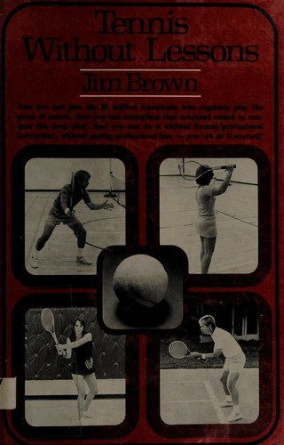
Bản dịch Việt ngữ này chỉ dùng cho mục đích học tập cá nhân, phi thương mại. Bản quyền tác phẩm gốc thuộc về tác giả và nhà xuất bản.
Lời Dẫn Nhập: Triết Lý Tự Học Quần Vợt Thực Dụng
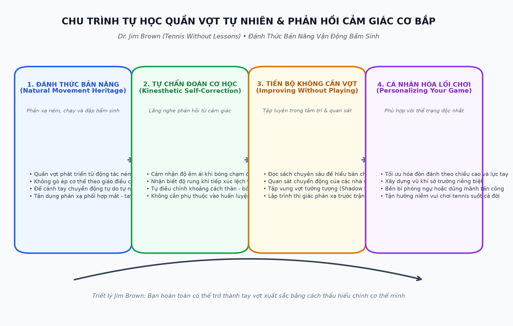
Lời Dẫn Nhập
Cách tốt nhất để hầu hết mọi người bắt đầu học cách chơi quần vợt là học các bài học từ các chuyên gia giảng dạy có trình độ. Những người này kiếm sống bằng nghề dạy quần vợt và có thể giúp bạn bắt đầu một cách chính xác. Tuy nhiên, vì nhiều lý do khác nhau, hàng nghìn người chơi không chịu học bài. Một vấn đề là không có đủ chuyên gia để đáp ứng nhu cầu học. Ngày nay có khoảng 35 triệu người chơi quần vợt thường xuyên ở Hoa Kỳ. Nếu mỗi bang có 50 chuyên gia có trình độ giảng dạy toàn thời gian thì cứ 14.000 tay vợt vẫn chỉ có một giáo viên. Tỷ lệ giữa giáo viên và người chơi ở những nơi khác trên thế giới thậm chí còn thấp hơn.
Có những lý do khác khiến người chơi quần vợt không học. Một số người không đủ khả năng chi trả mức giá mà các chuyên gia phải đưa ra. Những người chơi khác không được tiếp cận với những người hướng dẫn có trình độ vì những hạn chế về địa điểm hoặc câu lạc bộ. Một số người đam mê quần vợt đánh đơn giản là không muốn học. Hơn nữa, rất ít người học bài mãi mãi. Sau một loạt bài học, họ đã nghe tất cả những gì người chơi chuyên nghiệp nói và chỉ quay lại để được trợ giúp khi trò chơi của họ có vấn đề.
Cuốn sách này được viết dành cho tất cả những người đang học chơi quần vợt mà không cần hướng dẫn chính thức. Mặc dù đây có thể không phải là cách tốt nhất nhưng bạn có thể tự mình học trò chơi và phát triển kỹ năng cao. Bạn cũng có thể nhận ra và khắc phục vấn đề của chính mình thay vì trả tiền cho ai đó làm việc đó cho bạn.
Trong chương đầu tiên của Quần vợt không cần bài học, bạn sẽ nhận được thông tin về cách bắt đầu trò chơi. Các ý tưởng về lợi ích và rủi ro của môn quần vợt, mức độ giỏi của bạn, bạn có thể chơi ở đâu và với ai cũng như việc mua thiết bị và quần áo đều được trình bày. Năm mươi câu hỏi thường gặp nhất về luật quần vợt đã được giải đáp và các thuật ngữ về quần vợt được xác định.
Trong chương thứ hai, bạn sẽ tìm hiểu cách thực hiện từng cú đánh trong quần vợt, cách bạn có thể dạy bản thân cách chơi và phải làm gì khi có sự cố xảy ra trong một phần trò chơi của bạn.
Bạn cũng phải biết khi nào và ở đâu nên sử dụng một số nét nhất định. Chương “Phát triển chiến lược” cung cấp cho bạn một số ý tưởng chiến lược cho nội dung đánh đơn, đôi và đôi nam nữ, đồng thời sẽ giúp bạn tìm ra các vấn đề đặc biệt trên sân.
Đến bây giờ bạn đã biết rằng quần vợt là trò chơi của người có tư duy. Chương có tựa đề “Chơi thông minh” sẽ giúp bạn suy nghĩ về các lĩnh vực tập trung, dự đoán, tâm lý quần vợt và cách cá nhân hóa trò chơi của bạn.
Bạn cũng có thể cải thiện trò chơi của mình bên ngoài sân đấu. Đọc về quần vợt, quan sát kỹ và chăm sóc thể chất của bản thân là ba cách để làm điều đó. Những cách này được khám phá trong Chương 5, “Cải thiện
Không chơi.”
“Luyện tập,” chương cuối cùng, sẽ giúp bạn thực hành hiệu quả hơn. Các giải pháp cho những vấn đề như không có đủ thời gian, không biết cách tập, không có ai để tập cùng cũng như lời khuyên về cách tập ở nhà.
Mọi người đã học chơi thể thao trong suốt lịch sử thế giới mà không cần sự hướng dẫn chuyên nghiệp. Nhận trợ giúp nếu bạn muốn, cần và đủ khả năng chi trả, nhưng đừng để việc thiếu bài học ngăn cản bạn chơi và tận hưởng quần vợt trong suốt cuộc đời.
Tôi xin cảm ơn David Brown vì đã chụp những bức ảnh cho cuốn sách này.
Khởi Đầu: Bước Vào Môn Thể Thao, Thiết Bị & Luật Lệ
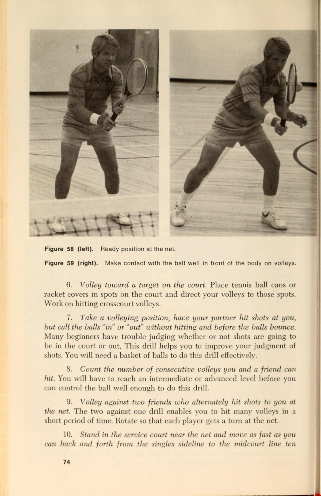
Bắt Đầu Tham Gia: Cơ Hội & Lợi Ích Của Quần Vợt
Trong đó có gì dành cho bạn?
Trước khi quyết định nghiêm túc theo đuổi quần vợt, có một số điều bạn nên biết về môn thể thao này. Giống như bất cứ điều gì khác, có cả lợi ích và rủi ro cần được xem xét.
Ưu Điểm quan trọng (Điểm quan trọng (big point)) hơn nhược điểm đối với hầu hết mọi người và có một số lập luận ủng hộ quần vợt hợp lý. Quần vợt có thể có lợi cho sức khỏe, sự đoàn kết gia đình và các mục đích xã hội. Đó là môn thể thao mà bạn có thể yêu thích suốt đời; nó rẻ; và nó rất vui.
Để tăng cường sức khỏe và duy trì thể lực, chơi quần vợt tốt cho bạn hơn hầu hết các môn thể thao. Golf, môn thể thao thường được so sánh với quần vợt, hầu như không đáp ứng được định nghĩa về tập luyện. Bóng chày, bóng mềm và bóng đá không những không đủ để trở thành những phương pháp duy trì thể lực toàn diện mà còn không thực tế đối với nhiều người lớn vì đây là những hoạt động theo mùa và đòi hỏi phải có nhiều nhóm người tham gia thi đấu. Câu cá, săn bắn, chơi bowling và đi bộ có thể mang tính giải trí nhưng mối quan hệ của chúng với thể dục lại khá mong manh đối với hầu hết mọi người. Chạy và bơi sẽ kiếm được nhiều điểm hơn trong thang điểm tập luyện tùy theo cường độ nỗ lực cần thiết, nhưng sự nhàm chán do việc lặp đi lặp lại khiến hàng triệu người Mỹ mất hứng thú.
Quần vợt đã thu hút từ 30 đến 40 triệu người ở Hoa Kỳ
Kỳ thôi. Những người này đốt cháy tới 500 calo mỗi giờ khi chơi và cơ bắp của họ trở nên khỏe hơn mà không to hơn nhiều. Là một cách tiết kiệm thời gian để tập thể dục, chơi tennis giúp bạn vận động nhiều hơn trong một giờ so với hầu hết các môn thể thao trong ba giờ. Bạn không cần phải cam kết cả ngày để đạt được bất cứ điều gì bạn muốn từ môn thể thao này. Nhiều người chơi tennis cũng cảm thấy dễ chịu hơn về mặt cảm xúc vì sự kết hợp giữa chuyển động liên tục và đánh một quả bóng tennis vài trăm lần trong một giờ dường như giúp giải tỏa căng thẳng.
Quần vợt cũng có thể là một cách hay để thúc đẩy sự đoàn kết trong gia đình. Bạn có thể chơi cùng hoặc chống lại vợ/chồng và con cái của mình, và bạn có thể có được nhiều niềm vui khi luyện tập với họ cũng như khi bạn thi đấu với họ.
Nếu bạn quan tâm đến quần vợt cạnh tranh, thì có các giải đấu cha-con, giải đấu mẹ-con, giải đấu vợ chồng, giải đấu cha mẹ-con và có thể là các giải đấu dành cho các tổ hợp gia đình khác.
Kỳ nghỉ gia đình có thể được thực hiện tại các khu nghỉ dưỡng quần vợt, trại quần vợt hoặc tham gia các giải đấu quần vợt.
Nếu bạn quan tâm đến quần vợt vì mục đích xã hội, môn thể thao này sẽ giúp bạn gặp gỡ một nhóm người mới và kết bạn mới. Mọi người trong mỗi nhóm lợi ích đặc biệt đều có những đặc điểm riêng biệt, và những người chơi quần vợt đều có tinh thần tập thể và ngôn ngữ riêng của họ. Các tính cách bao gồm từ những tay vợt tập gym, uống bia, uống bia cho đến những loại câu lạc bộ sành điệu nhất.
Quần vợt là môn thể thao cả đời. Những người rất trẻ và rất già đang chơi mỗi ngày. Đây là môn thể thao mà mọi người ở mọi lứa tuổi đều có thể thích nghi. Những tay vợt chuyên nghiệp giỏi nhất phải duy trì mức độ thể chất tương đương với vận động viên bóng rổ và điền kinh; nhưng khi những tay vợt bình thường già đi, chậm hơn và yếu hơn thì sẽ có nhiều cách để chơi tennis tùy theo khả năng của họ. Các nhóm tuổi được chỉ định bởi các tổ chức quần vợt quốc gia, tiểu bang và địa phương giúp bạn có thể cạnh tranh công bằng với những người già, chậm và yếu như bạn.
Quần vợt không nhất thiết phải tốn nhiều tiền. Bạn có thể chi ít hơn ba đô la cho một hộp bóng và mười đô la cho một cây vợt rẻ tiền và sẵn sàng chơi. So sánh những mức giá đó với chi phí của câu lạc bộ chơi gôn, thiết bị săn bắn và câu cá cũng như phí spa chăm sóc sức khỏe. Chi phí chơi quần vợt có xu hướng tăng lên khi trình độ kỹ năng và sở thích của người chơi tăng lên, vì vậy cuối cùng một người có thể chi rất nhiều tiền để chơi trò chơi này. Thông tin thêm về điều đó sau. Nhưng những khoản chi tiêu ban đầu lớn không phải là điều cần thiết để chơi quần vợt.
Cuối cùng, nhưng quan trọng nhất là lý do để tham gia quần vợt: nó rất vui. Hàng triệu người Mỹ không thể sai trong trường hợp này. Bạn có thể tranh luận về giá trị của các môn thể thao khác, nhưng chơi quần vợt sẽ thú vị hơn đối với hầu hết mọi người so với việc đứng ở sân bên phải trong ba giờ, đối đầu với người chơi bên trái, đi xe điện hoặc chạy bộ qua các khu dân cư có nhiều chó. Quần vợt đòi hỏi sự vận động, kỹ năng và tinh thần cạnh tranh—một sự kết hợp khó có thể đánh bại chỉ để giải trí đánh đơn thuần.
Bạn có chắc chắn muốn tham gia không?
Đối với những người đang tìm kiếm người thay thế câu lạc bộ đánh bài, quần vợt có thể không phải là lựa chọn tốt nhất. Đây là một trò chơi đòi hỏi thể chất ở hầu hết các cấp độ. Quần vợt có lẽ đòi hỏi nhiều kỹ năng thể chất và tinh thần tỉnh táo hơn hầu hết các môn thể thao khác. Bạn không cần phải là một vận động viên cừ khôi mới có thể tham gia, nhưng nếu bạn đang nghĩ, “Tôi chưa bao giờ giỏi thể thao; có lẽ quần vợt là môn thể thao của tôi,” hãy nghĩ lại. Nếu bạn quyết định chơi, hãy quyết định rằng bạn sẽ chạy, làm việc chăm chỉ, đổ mồ hôi và tận hưởng việc đó.
Những người mới bắt đầu chơi thường ra sân hoặc xem quần vợt trên tivi khi họ bắt đầu thích chơi. Những tay vợt xuất sắc được thấy trong các giải đấu quần vợt làm cho môn thể thao này trông có vẻ dễ dàng đến mức người mới bắt đầu có thể cho rằng môn thể thao này có thể học được mà không gặp khó khăn gì. Tuy nhiên, đây không phải là một trò chơi dễ học, đặc biệt nếu bạn dự định học mà không được hưởng lợi từ bài học. Người mới bắt đầu dành nhiều thời gian để lấy bóng hơn là đánh chúng.
Các vấn đề nảy sinh khi cố gắng đánh một vật thể chuyển động nhỏ vào sân thích hợp, khi đang chạy và ở nhiều vị trí khác nhau, là rất lớn.
Nếu bạn quyết định chơi, hãy chấp nhận sự thật rằng mặc dù bạn có thể thích làm người mới bắt đầu nhưng bạn sẽ phải mất nhiều năm để đạt được trình độ chơi nâng cao.
Bạn đã được biết rằng môn quần vợt không phải tốn kém của bạn, nhưng bạn nên biết rằng nó có thể tốn kém trong một số trường hợp nhất định. Một chi phí có thể là mua một sân để thi đấu hoặc tập luyện. Nếu bạn sống ở một vùng của đất nước nơi bạn không thể chơi ngoài trời quanh năm và nếu bạn muốn chơi nhiều hơn chỉ trong những tháng hè, bạn có thể phải thuê Sân trong nhà hoặc tham gia câu lạc bộ. Có hai loại hoạt động quần vợt trong nhà chung. Một loại câu lạc bộ tính phí thành viên và phí hàng tháng tương đương với chi phí thường liên quan đến các câu lạc bộ đồng quê. Giá thành viên câu lạc bộ cao được bù đắp phần nào bằng phí sân đấu rất nhỏ hoặc không có phí sân đấu nào cả. Nói cách khác, bạn phải trả rất nhiều tiền để trở thành thành viên nhưng được miễn phí thời gian ra tòa. Loại câu lạc bộ khác tính phí tương đối thấp đối với tư cách thành viên cá nhân hoặc gia đình, nhưng chi phí đặt sân thì đắt. Ở các khu vực đô thị, bạn có thể phải trả từ 10 đến 30 đô la một giờ cho một sân đấu. Những mức giá đó có thể giảm đi một nửa nếu bạn chia sẻ chi phí với một người bạn hoặc phí sân có thể được chia làm bốn nếu bạn có nhóm đôi.
Việc học bài cũng có thể tốn kém, nhưng hãy giả sử rằng bạn sẽ không học bài ngay bây giờ. Nguồn chi phí quần vợt thứ ba là quần áo và thiết bị, những khoản này sẽ được thảo luận sau trong chương này.
Ngoài khả năng phải cam kết tài chính, bạn sẽ phải cam kết về mặt thời gian nếu muốn nâng cao kỹ năng và duy trì trình độ năng lực của mình. Bạn không thể thỉnh thoảng chơi tennis và mong mình chơi tốt. Người chơi cuối tuần gặp khó khăn trong việc duy trì các cú đánh và tình trạng thể chất mà họ đã đạt được. Hầu hết người chơi trưởng thành đều phải chấp nhận cam kết cuối tuần đó; nhưng những người thực sự làm gì đó với trò chơi của họ chơi hơn hai lần một tuần. Nếu bạn không kiểm soát được thời gian luyện tập và thi đấu, hãy thực tế với những kỳ vọng của bạn về việc bạn có thể trở thành một tay vợt giỏi đến mức nào.
Bạn có thể trở nên tốt đến mức nào?
Có sự khác biệt giữa người chơi quần vợt và người chơi quần vợt. Những người chơi quần vợt là những người thỉnh thoảng lấy vợt ra khỏi tủ quần áo hoặc gara, tìm một số quả bóng cũ và ra ngoài đánh chúng quanh sân một lúc. Hoạt động chơi quần vợt của họ mang tính tự phát và được coi là việc cần làm khi không có việc gì khác để làm. Không sao đâu. Chúng tôi cần những loại đó. Dù sao thì họ cũng không ràng buộc sân đấu quá lâu. Mặt khác, những người chơi quần vợt chơi thường xuyên và họ coi quần vợt là phương tiện giải trí, tập thể dục và giao tiếp xã hội chính của họ. Một người không cần phải giỏi để được coi là một vận động viên quần vợt, anh ta chỉ cần đặt ưu tiên cao hơn cho hoạt động liên quan đến quần vợt hơn các hình thức giải trí khác. Đối với cuộc thảo luận của chúng ta – ở đây về việc một người có thể chơi giỏi đến mức nào, chúng ta sẽ chỉ xem xét những người chơi quần vợt chứ không phải những người thỉnh thoảng chơi quần vợt.
Người quyết định trở thành một vận động viên quần vợt đương nhiên muốn trở thành vận động viên giỏi nhất có thể, dựa trên khả năng của mình. Bạn có thể trở nên giỏi đến mức nào tùy thuộc vào nhiều yếu tố, chẳng hạn như bạn bao nhiêu tuổi, bạn bao nhiêu tuổi khi bắt đầu chơi, khả năng thể thao của bạn là gì, bạn có bao nhiêu thời gian để luyện tập và thi đấu cũng như mức độ quan tâm của bạn đến việc phát triển kỹ năng chơi quần vợt của mình. Khi những yếu tố này và các yếu tố khác được kết hợp lại, bạn sẽ được xếp vào một loại người chơi quần vợt khá cụ thể. Thể loại này thường sẽ được hình thành vài năm sau khi bạn bắt đầu chơi. Mặc dù có những bất đồng về việc tồn tại bao nhiêu cấp độ của trò chơi, nhưng hiếm khi có sự bất đồng về cấp độ mà bạn phù hợp ở cấp địa phương, tiểu bang hoặc quốc gia. Bạn sẽ biết mình giỏi đến mức nào, bạn bè của bạn sẽ biết, và việc thăng tiến hoặc tụt dốc trong các cấp độ cạnh tranh khác nhau sẽ khó khăn. Nói một cách thẳng thắn, sau khi bạn đã đạt đến trình độ năng lực của mình, bạn sẽ quá giỏi để chơi với một số người chơi và không đủ giỏi để chơi với những người khác.
Có một số phương pháp tiêu chuẩn hóa để xếp hạng người chơi theo kỹ năng. Một phương pháp, Hệ thống Si, yêu cầu người chơi tự đánh giá mình từ “1” đến “10” (người mới bắt đầu đến đẳng cấp thế giới). Xếp hạng của Hệ thống Si, được đưa ra dưới đây, sẽ được đề cập đến trong suốt chương này.
ĐÁNH GIÁ HỆ THỐNG SI 1
Ví dụ về xếp hạng
10 Những tuyển thủ ưu tú, xuất sắc nhất thế giới i) Top tuyển thủ nghiệp dư quốc gia
8 tuyển thủ hạng nhất
‘¢ Những người chơi xếp hạng cao nhất của tiểu bang hoặc địa phương fs) Những người chơi giỏi hơn sẽ thi đấu tốt trong các giải đấu địa phương''Hạng A''hoặc toàn thành phố
5 Những tay vợt giỏi của câu lạc bộ sẽ thi đấu tốt trong các giải đấu “Hạng B” địa phương hoặc các sự kiện của câu lạc bộ quốc gia Có kinh nghiệm hoặc giỏi hơn những tay vợt trung bình 4
3 Tay vợt trung bình có thể giữ bóng trong cuộc 2 Người mới bắt đầu nâng cao đã học một vài bài hoặc mới chơi chưa đầy một năm
1 Người mới bắt đầu
Cho dù bạn tự đánh giá bản thân một cách không chính thức hay sử dụng một trong các bài kiểm tra tiêu chuẩn, thì vấn đề là có nhiều cách phân loại người chơi hơn trình độ sơ cấp, trung cấp và cao cấp. Trong mỗi hạng mục đó đều có những phân khu nhỏ và mỗi người nên đặt ra những mục tiêu thực tế về mức độ mà mình có thể trở thành tốt. Mặc dù hầu như mọi người chơi đều có thể vượt qua giai đoạn mới bắt đầu để tiến tới giai đoạn trung cấp, nhưng tương đối ít người có thể trở thành người chơi cao cấp. Tất nhiên, bạn có thể thưởng thức trò chơi ngay cả khi bạn không nằm trong top đầu; tuy nhiên, bạn sẽ thích thú hơn nếu chơi với những người chơi giỏi ngang bằng với bạn. Sự thích thú cũng đến từ thử thách cố gắng đạt đến trình độ năng lực quần vợt cao hơn.
Hãy xem xét một số ví dụ giả định và cố gắng đưa ra một số dự đoán chung về mức độ tốt của nhiều người chơi khác nhau. Có lẽ bạn có thể có cái nhìn tốt hơn về mức độ khả năng và có thể thiết lập các mục tiêu của riêng mình bằng cách so sánh tình huống của bạn với những tình huống được mô tả ở đây. Với một vài trường hợp ngoại lệ, những người chơi duy nhất trở thành người chơi đẳng cấp thế giới (Số 10 trong Xếp hạng Hệ thống Si) là những người bắt đầu chơi trước khi họ mười hoặc mười hai tuổi, những người được hướng dẫn chuyên nghiệp trong thời thơ ấu và những năm thiếu niên, những người đã có
khả năng thể thao vượt trội, những người có thời gian luyện tập và thi đấu vài giờ một ngày, ít nhất năm ngày một tuần trong hầu hết thời gian trong năm và là người có động lực cạnh tranh mãnh liệt. Điều đó sẽ loại trừ một số bạn. Nếu chính người đó quyết định đợi đến 15 đến 20 tuổi trước khi bắt đầu chơi, tiềm năng của người đó có thể sẽ bị giảm xuống để trở thành một tuyển thủ hàng đầu của bang hoặc khu vực. Nếu một cá nhân có nhiều khả năng và có nhiều thời gian để phát triển khả năng đó đợi đến tuổi 20 đến 30 mới bắt đầu thi đấu thì tiềm năng của người đó có thể sẽ giảm thêm một bậc nữa xuống mức “6”, một tay vợt giỏi sẽ thi đấu tốt trong các giải đấu địa phương.
Bây giờ hãy xem xét một người trưởng thành quyết định chơi quần vợt trong độ tuổi từ hai mươi đến bốn mươi, người có khả năng thể thao trung bình và có thời gian học và luyện tập môn chơi này có hạn. Người chơi này có thể trở nên đủ giỏi để tham gia các giải đấu địa phương. Cơ hội trở thành người chiến thắng giải đấu liên tục bên ngoài câu lạc bộ hoặc thành phố trực tiếp là không tốt. Người này chắc chắn có thể trở nên đủ thành thạo để chơi một trận quần vợt đáng nể, để tận hưởng việc chơi và thấy khả năng chơi của mình được cải thiện. Nhóm tay vợt này có lẽ chiếm phần lớn trong số những người gây ra sự bùng nổ quần vợt những năm 1970.
Người có khả năng trung bình và thời gian chơi có hạn, bắt đầu chơi muộn hơn ở tuổi trung niên nên thực tế chấp nhận niềm vui và sự tiến bộ dần dần. Đối mặt với thực tế là nếu bạn là người mới bắt đầu ở độ tuổi trung niên, trò chơi của bạn sẽ có một số điểm yếu nghiêm trọng. Điều này không có nghĩa là ngăn cản bạn trở nên hứng thú với trò chơi. Có đủ giá trị trong quần vợt ngoài việc trở thành nhà vô địch để khiến trò chơi trở nên đáng chơi. Có một nhóm lớn người ở mọi lứa tuổi chỉ thích ra ngoài đánh hoặc chơi cho vui. Những người này không thể không quan tâm đến xếp hạng, phân chia độ tuổi, giải đấu và sự cạnh tranh. Có lẽ họ cảm thấy thích thú với quần vợt hơn bất kỳ nhóm người chơi nào khác.
Cố gắng chống lại sự cám dỗ để tự động cho rằng bạn có thể đạt được những đỉnh cao trong môn quần vợt cạnh tranh. Có lẽ bạn là một trong số ít người có thể vượt qua những trở ngại về tuổi tác, thời gian hạn hẹp và không có sự hướng dẫn để trở thành một cao thủ vô địch. Nhưng bạn sẽ vui hơn và bớt nản lòng hơn nếu bạn chơi hết mình, học nhanh nhất có thể mà trí óc, cơ thể và lịch trình của bạn cho phép và chấp nhận kết quả. Nếu bạn trở thành một vận động viên quần vợt bình thường vào cuối tuần, bạn sẽ không phải thất vọng. Nếu bạn trở thành một người chơi giỏi, hãy coi đó là một phần thưởng và tận hưởng trò chơi nhiều hơn nữa.
Bạn có thể chơi ở đâu?
Nơi đầu tiên để tìm và nơi chơi rẻ nhất là tại các sân công cộng ở địa phương của bạn. Sân đấu công cộng là những sân đấu được xây dựng, bảo trì và đôi khi được giám sát bởi một số cơ quan chính phủ như sở giải trí của thành phố hoặc quận. Nếu bạn không chắc chắn về các sân đấu công cộng của mình ở đâu, hãy gọi cho sở giải trí thành phố gần bạn nhất và hỏi. Có hàng ngàn loại sân đấu như vậy trên khắp đất nước.
Cố gắng tìm những sân đấu được giám sát, nếu có thể. Nếu có người phụ trách, bạn sẽ có cơ hội được ra tòa cao hơn mà không phải chờ đợi lâu. Đặt phòng có thể cần thiết. Những sân đấu như vậy có thể sẽ ở trong tình trạng tốt vì có người ở đó để bảo vệ khỏi sự phá hoại và báo cáo các vấn đề bảo trì. Bạn có thể phải trả tiền cho việc sử dụng các sân đấu này vì người giám sát phải được trả tiền. Tuy nhiên, lệ phí sân đấu thường rất rẻ—ở một số nơi chỉ khoảng 50 xu một giờ. Một Điểm lợi thế (Điểm lợi thế (advantage)) khác của việc chơi tại các sân công cộng được giám sát là bạn có cơ hội có được một trận đấu cao hơn nếu bạn chưa sắp xếp trận đấu. Người phụ trách biết rõ các tay vợt đến trung tâm quần vợt và thường xuyên làm người mai mối quần vợt.
Ở những sân không có người phụ trách chương trình hoặc lịch thi đấu, bạn không phải lo lắng về giới hạn thời gian thi đấu hoặc đặt chỗ, nhưng bạn không có gì đảm bảo về thời gian chờ đợi hợp lý để có sân. Các sân đấu công cộng ở khu vực lân cận thường có rất nhiều thanh thiếu niên trong khu vực lân cận. Các sân công cộng không được giám sát có thể có hệ thống chiếu sáng trả tiền khi chơi vào ban đêm. Một lần nữa, phí là danh nghĩa ở hầu hết các nơi.
Nơi thứ hai để tìm sân trống là ở các trường học và cao đẳng.
Một số trường trung học và hầu hết các trường đại học đều có sân quần vợt. Chúng thường được duy trì rất tốt, nhưng hầu hết chúng đều mở cửa cho sinh viên, giảng viên và nhân viên trước tiên và cho công chúng khi những nhóm đó không sử dụng chúng. Rất ít sân đấu được giám sát, vì vậy nếu bạn có thể biết khi nào chúng được các trường sử dụng, bạn có thể sắp xếp lịch trình của mình để tránh xung đột. Sân đấu trường học có thể mở cửa cho công chúng nhiều hơn trong những ngày nghỉ lễ và nghỉ học kỳ, những khoảng thời gian có thể lên tới hai hoặc ba tháng một năm.
Địa điểm thi đấu thứ ba là tại các câu lạc bộ đồng quê, câu lạc bộ vợt và sân thuộc sở hữu của các tổ chức như YMCA, YWCA, nhà thờ hoặc trại. Bạn phải là thành viên để chơi trên các sân này hoặc phải được một thành viên mời, vì vậy sẽ phải tốn tiền của ai đó. Nếu bạn thực sự muốn chơi và nếu không gian sân công cộng ở nơi bạn sống bị hạn chế thì chi phí thành viên có thể rất xứng đáng. Phải đặt chỗ trước để thi đấu, nhưng sân sẽ ở trong tình trạng tuyệt vời và điều kiện thi đấu sẽ tốt hơn bất kỳ nơi nào khác. Ngoài ra còn có các cơ sở phụ trợ tuyệt vời tại nhiều câu lạc bộ như cửa hàng chuyên nghiệp, phòng thay đồ, quán ăn nhanh và hồ bơi.
Bạn có thể chơi ai?
Với hàng triệu tay vợt trong nước, việc tìm người chơi cùng không phải là khó, nhưng đôi khi lại là như vậy. Điều này đặc biệt đúng đối với những người mới bắt đầu chưa đủ giỏi để chơi với những người ở trình độ trung cấp và do dự khi mời người khác chơi.
Nếu bạn mới bắt đầu, hãy tìm những người bạn sẽ chơi cùng bạn. Bạn có thể biến việc học thành một cuộc phiêu lưu chung với chồng hoặc vợ, với một người bạn hoặc với một nhóm bạn. Điều quan trọng là phải có một nhóm người giỏi như bạn để chơi cùng. Bạn có thể cùng nhau tiến bộ khi học hỏi và cũng đảm bảo rằng bạn luôn có người để chơi cùng. Tuy nhiên, bạn cũng cần ít nhất một người giỏi hơn bạn, người thỉnh thoảng sẽ đánh bạn để bạn có thể cải thiện trò chơi của mình. Điều này đưa ra một tình huống tế nhị, bởi vì một người chơi giỏi hơn bạn có thể không muốn dành thời gian chơi tennis vốn đã có hạn của mình để cố gắng giữ bóng trong cuộc vì lợi ích của bạn. Để làm phức tạp thêm vấn đề, một trong những luật bất thành văn của quần vợt là người chơi giỏi hơn sẽ mời người chơi kém hơn đánh hoặc chơi.
Mặc dù tình huống này đòi hỏi khả năng ngoại giao nhưng vẫn có thể giải quyết được. Nếu bạn là người mới bắt đầu, đừng yêu cầu người chơi giỏi hơn chơi cùng bạn thường xuyên. Hãy phá bỏ luật bất thành văn và nhờ một người chơi giỏi cũng là bạn tốt chơi cùng bạn khoảng một tháng một lần. Mỗi tháng một lần là đủ, đặc biệt nếu người đó chỉ chơi quần vợt một hoặc hai lần một tuần. Nếu bạn của bạn chơi vài lần một tuần, bạn có thể yêu cầu họ chơi thường xuyên hơn một lần mỗi tháng. Nếu bạn may mắn có được vài người bạn là những tay chơi quần vợt giỏi, hãy cố gắng kết nối với mỗi người mỗi tháng một lần. Bằng cách lên lịch luân phiên, bạn có thể đấu với người giỏi hơn mình khoảng một lần một tuần, điều này khiến thời gian còn lại trong tuần để chơi với bạn bè ở cấp độ của bạn. Nếu bạn là người chơi giỏi hơn trong tình huống vừa mô tả, bạn phải học cách nói “không” với một số yêu cầu thi đấu với những người chơi kém hơn, nhưng hãy nhớ rằng bạn đã từng ở vị trí của họ và có những người chơi giỏi hơn bạn, những người không đặc biệt mong đợi yêu cầu thi đấu của bạn.
Bạn cũng có thể tìm ai đó để chơi bằng cách tự do, nghĩa là chỉ cần đến các sân đấu công cộng ở địa phương và tìm kiếm ai đó cần đối thủ hoặc đối tác. (Đừng đến câu lạc bộ mà bạn không phải là thành viên để tìm trận đấu.) Bạn có thể phải ngồi đợi rất lâu, nhưng ở những sân có lượng người qua lại vừa phải, thường sẽ có người cũng đến tìm trận đấu. Mọi người thường đến sớm hoặc muộn trong các trận đấu, một số người không xuất hiện chút nào, và những người khác phải rời đi trước khi bạn bè của họ sẵn sàng bỏ cuộc. Bất kỳ trường hợp nào trong số này đều tạo ra một khoảng trống mà bạn có thể lấp đầy. Nếu bạn thành công trong công việc freelance, bạn sẽ gặp được những người bạn mới và những người bạn chơi cùng, và bạn sẽ không phải làm freelance nhiều trong tương lai. Nếu có ai đó phụ trách sân đấu, hãy cho người đó biết bạn đang tìm trận đấu để anh ta có thể xếp bạn với những người chơi không bị ràng buộc khác, Thi đấu có tổ chức mang đến một cơ hội khác để bạn gặp gỡ và thi đấu với những người có khả năng tương tự. Các chương trình của thành phố, câu lạc bộ và trường học được tổ chức tốt sẽ cung cấp nhiều loại hình cạnh tranh ngắn hạn và liên tục. Các giải đấu loại trực tiếp là hình thức thi đấu quần vợt được sử dụng thường xuyên nhất; những sự kiện này thường được hoàn thành trong khoảng thời gian vài ngày và chúng thường được tổ chức trong những tháng mùa hè. Các giải quần vợt liên tục được tổ chức cho các thành viên câu lạc bộ, công nhân khu công nghiệp, cư dân chung cư và người tham gia các chương trình vui chơi giải trí của thành phố. Các câu lạc bộ và chương trình của thành phố cũng sắp xếp thang tennis cho phép người tham gia thách đấu những người chơi ở trên họ trên thang. Kiểu cạnh tranh này đang tiếp tục diễn ra và mang đến cơ hội tuyệt vời cho người chơi ở mọi cấp độ để có nguồn cung cấp đối thủ liên tục. Hãy tìm xem danh sách hoặc bậc thang ở đâu và các quy tắc là gì rồi ghi tên bạn ở cuối. Nếu bạn bắt đầu từ vị trí cuối cùng, bạn sẽ phải tìm kiếm sự cạnh tranh; nếu bạn đang ở giữa bậc thang, bạn có thể thách đấu hoặc bị thách đấu một trận. Không đăng ký tham gia thang quần vợt trừ khi bạn biết bạn sẽ sẵn sàng chơi trong một khoảng thời gian hợp lý khi có ai đó thách thức bạn.
Bạn có thể tham gia những tổ chức nào?
Nếu bạn thực sự nghiêm túc với việc tham gia quần vợt, có các tổ chức quần vợt quốc gia, khu vực và địa phương mà bạn có thể tham gia. Ở cấp quốc gia, Hiệp hội Quần vợt Hoa Kỳ là tổ chức lớn nhất và nổi bật nhất. U.S.T.A. mở cửa cho bất kỳ ai quan tâm đến trò chơi quần vợt. Người chơi, quan chức và người ủng hộ tạo thành thành viên. Tổ chức này tham gia vào nhiều hoạt động khác nhau, bao gồm tổ chức các giải đấu, thực hiện các chương trình phát triển cấp cơ sở, hỗ trợ các đội Wightman và Davis Cup, xếp hạng các tay vợt cũng như tổ chức các buổi khám sức khỏe và hội thảo cho các tay vợt, giáo viên và huấn luyện viên.
Văn phòng chính của U.S.T.A. đặt tại New York và có 17 khu vực trên khắp nước Mỹ. Các quan chức ở mỗi bộ phận thúc đẩy và quản lý việc thi đấu giải đấu trong khu vực của họ. Khi một phần bao gồm nhiều tiểu bang thì có thể có tiểu bang U.S.T.A. các nhóm cũng vậy. U.S.T.A. duy trì một văn phòng xuất bản quần vợt và một trung tâm nghiên cứu và giáo dục ở New Jersey. Thư viện phim quần vợt khu vực gần đây đã được thành lập trên khắp đất nước.
Nếu bạn tham gia Hiệp hội Quần vợt Hoa Kỳ, bạn phải đóng phí hàng năm. Với số tiền của mình, bạn sẽ nhận được thẻ thành viên, có quyền tham gia các giải đấu được phê duyệt, sẽ có cơ hội được xếp hạng ở cấp tiểu bang, cấp khu vực hoặc cấp quốc gia và sẽ nhận được một số ấn phẩm của tổ chức. Các thành viên trưởng thành nhận được tạp chí hàng tháng Tennis U.S.A., tạp chí chính thức của U.S.T.A. xuất bản. Các thành viên cũng nhận được một cuốn kỷ yếu có chứa các thứ hạng, tên của các quan chức và thành viên ủy ban, thể lệ giải đấu và lịch trình của các giải đấu. Một số hiệp hội khu vực và tiểu bang có thể cung cấp cho các thành viên các ấn phẩm bổ sung.
Nếu bạn muốn gia nhập U.S.T.A. viết thư cho:
Hiệp hội quần vợt Hoa Kỳ 51 East 42nd Street New York, New York 10017
Ở cấp địa phương, các hiệp hội quần vợt đã trở nên rất phổ biến trong vài năm qua. Các tổ chức này có thể có hoặc không liên kết với U.S.T.A. Ở những nơi tồn tại, họ thường bao gồm những người có tư duy quần vợt trong một cộng đồng muốn có một hệ thống cạnh tranh, hướng dẫn và hoạt động xã hội có cấu trúc chặt chẽ hơn với những người chơi quần vợt khác. Các nhóm này có thể thành lập các giải quần vợt, tài trợ cho các giải đấu, tổ chức các phòng khám và tổ chức tiệc cho các vận động viên. Chi phí tham gia các hiệp hội quần vợt địa phương là không đáng kể, đồng thời có cơ hội tuyệt vời để gặp gỡ và chơi quần vợt với những người bạn mới. Nếu không có hiệp hội như vậy trong cộng đồng của bạn, bạn có thể muốn tự mình tổ chức một hiệp hội.
Nếu bạn quyết định thành lập hiệp hội quần vợt địa phương của riêng mình, đây là một số nguyên tắc cần tuân theo:
1. Tập hợp một nhóm nhỏ (dưới mười người) cùng chia sẻ quan điểm của bạn rằng cần có một tổ chức quần vợt. Ít nhất một thành viên trong nhóm phải có một số kinh nghiệm quản trị trò chơi. Các thành viên khác phải là những người lãnh đạo trong cộng đồng quần vợt và họ phải là những người sẵn sàng làm việc.
2. Trong cuộc họp đầu tiên hãy cố gắng thống nhất về những mục tiêu chung mà tổ chức của bạn mong muốn đạt được. Bạn có đang tổ chức để có nhiều sự cạnh tranh hơn không? Bạn có muốn nhấn mạnh vào hướng dẫn? Nhóm có dành cho mọi lứa tuổi không? Đây thực sự là một hiệp hội chơi quần vợt hay sẽ có những chức năng xã hội?
3. Nếu bạn có thể đạt được sự nhất trí chung về mục đích của tổ chức, thì hãy cố gắng tập trung vào một hoặc hai dự án trước mắt. Đừng cố gắng làm quá nhiều ngay từ đầu. Nếu hiệp hội thành công, sẽ có nhiều thời gian để mở rộng giao bóng của mình.
4. Nhận được cam kết từ những người có mặt tại cuộc họp đầu tiên rằng họ sẽ dành thời gian cho hiệp hội. Những tổ chức này thường xuyên thất bại khi ai cũng muốn chơi tennis và vui vẻ nhưng mọi công việc đều được giao cho hai hoặc ba người.
5. Đặt thời gian và địa điểm, sau đó triệu tập một cuộc họp chung cho bất kỳ ai trong khu vực có thể muốn tham gia nhóm. Quảng bá cuộc họp thông qua báo chí, đài phát thanh, truyền hình, áp phích và điện thoại. Tại cuộc họp, mọi người nên được biết mục đích của tổ chức là gì, loại hoạt động nào đang được dự tính và chi phí để tham gia vào các hoạt động của hiệp hội là bao nhiêu. Chi phí có thể ở dạng phí thành viên hàng năm hoặc trên cơ sở từng sự kiện. Cho mọi người cơ hội đặt câu hỏi, sau đó cho phép mọi người đăng ký với tư cách là thành viên của nhóm hoặc là người tham gia sự kiện đầu tiên. Hãy nói rõ rằng việc hiệp hội có thành hiện thực hay không phụ thuộc vào phản ứng của công chúng và quyết định sẽ được đưa ra đối với các hoạt động trong tương lai sau cuộc họp hoặc sự kiện đầu tiên.
6. Sau cuộc họp chung đầu tiên, ban chỉ đạo có thể muốn họp lại để đưa ra quyết định chắc chắn về việc có nên theo đuổi dự án hay không. Nếu quyết định tiếp tục được đưa ra, hãy lên kế hoạch cho sự kiện đầu tiên và đảm bảo rằng nó đã hoàn thành. Sau đó, cuộc họp thứ hai có thể cần thiết để bầu chọn các quan chức, trao giải thưởng hoặc lên kế hoạch cho các hoạt động khác.
Lựa Chọn Thiết Bị, Vợt & Trang Phục Thi Đấu
Vợt
Bạn có thể đã có một cây vợt tennis cũ để bắt đầu hoặc bạn có thể mượn thêm một cây vợt từ bạn bè. Nếu bạn phải mua một cây vợt, đừng tốn nhiều tiền cho một cây cho đến khi bạn quyết định chơi quần vợt thường xuyên trong một thời gian dài. Vợt mới có giá dao động từ năm đô la đến hơn một trăm đô la. Mặc dù có thể mua được một cây vợt với giá dưới 10 đô la, nhưng bạn không nên kỳ vọng nhiều vào chất lượng hoặc độ bền ở mức giá đó. Trong phạm vi từ 10 đến 20 đô la, bạn sẽ có thể tìm được một cây vợt phù hợp để bắt đầu. Hầu hết các công ty sản xuất đồ thể thao lớn đều bán vợt với nhiều mức giá khác nhau, vì vậy tên thương hiệu không quá quan trọng đối với người mới bắt đầu. Khi bạn cải thiện trò chơi của mình, bạn sẽ có thể quyết định một cây vợt có cảm giác phù hợp với mình. Trước khi mua một cây vợt đắt tiền, hãy thử mượn những cây vợt khác nhau từ những người chơi mà bạn biết để có thể xem mỗi người đánh như thế nào. Nhặt và vung vợt ở cửa hàng hoặc cửa hàng chuyên nghiệp là không đủ để có được cảm giác vợt. Cách duy nhất để làm điều đó là đánh bằng một cú.
Có nhiều cách để xác định xem bạn có đang mua một cây vợt chất lượng hay không. Một cách là nhìn vào cổ vợt (phần giữa dây và cán vợt) để tìm các dấu hiệu cho biết kích thước và trọng lượng cán vợt. Trên những cây vợt chất lượng, bạn sẽ thấy những thông số như 442 L, 4% M, 434 H hoặc những chỉ dẫn tương tự (xem Hình 1). Các con số đề cập đến chu vi của cán vợt (tay cầm) tính bằng inch và chữ cái này có nghĩa là vợt nhẹ, trung bình hoặc nặng. Nếu không có dấu hiệu, bạn đang nhìn vào một cây vợt rẻ tiền. Tuy nhiên, có một số vợt kém chất lượng có những dấu hiệu này nên đây không phải là phương pháp duy nhất để xác định chất lượng của vợt.
Hình 1. Tìm các dấu hiệu trên Mặt vợt cho biết
kích thước tay cầm và trọng lượng của vợt.
Cách thứ hai để đánh giá chất lượng của một số vợt gỗ là tìm các dải gỗ nhiều lớp riêng biệt tạo thành đầu vợt (phần của vợt có dây). Thông thường, những cây vợt tốt sẽ có từ 5 đến 12 dải gỗ ép lại với nhau ở mặt trên. Trên một số vợt tốt, các lớp mỏng có thể không nhìn thấy được do lớp hoàn thiện bên ngoài. Vợt rẻ hơn có ít dải gỗ hơn hoặc mặt trên một mảnh.
Phương pháp thứ ba để xác định chất lượng vợt là quan sát tay nghề chung của vợt. Nó trông rẻ tiền hay nó được thiết kế tốt? Chất liệu làm tay cầm có phải là da dày, bền không? Các dải nhiều lớp có được đặt lại với nhau một cách trơn tru trên vợt gỗ không? Trên vợt kim loại, mối hàn hoặc tán đinh có an toàn không?
Cuối cùng, bạn nên nhận lời khuyên từ những người chơi quần vợt và quan sát loại vợt nào đang được sử dụng trong khu vực của bạn. Những người chơi có kinh nghiệm có thể đã chơi với nhiều loại vợt khác nhau và họ có thể cho bạn lời khuyên đúng đắn về loại vợt nào tốt nhất cho bạn. Những cây vợt phổ biến nhất thường là những cây vợt tốt nhất, vì vậy nếu bạn thấy nhiều người chơi với một thương hiệu cụ thể thì đó có thể là một cây vợt có chất lượng.
Bạn sẽ phải quyết định nên mua vợt làm bằng gỗ hay kim loại. Có nhiều sự khác biệt giữa hai loại, nhưng vợt gỗ thường có khung cứng hơn và giúp người chơi kiểm soát nhiều hơn nhưng ít lực hơn, trong khi vợt kim loại cung cấp nhiều lực hơn nhưng kiểm soát ít hơn.
Có nhiều loại vợt có độ linh hoạt khác nhau trong mỗi loại trong số hai loại này, vì vậy, một lần nữa, tốt nhất là bạn nên thử nhiều loại vợt khác nhau trước khi đưa ra lựa chọn. Trên thị trường cũng có vợt bằng sợi thủy tinh; đây là một nơi nào đó giữa gỗ và kim loại về độ mềm mại hoặc tính linh hoạt.
Vì độ chính xác sẽ là một vấn đề trong vài tháng đầu chơi, có lẽ tốt nhất là bạn nên bắt đầu chơi bằng vợt gỗ. Sau khi chơi được một thời gian, bạn có thể quyết định mua một cây vợt đắt tiền hơn. Sau đó, bạn có thể đưa ra quyết định cuối cùng về thép, nhôm hoặc sợi thủy tinh.
Hai quyết định khác mà bạn sẽ phải đưa ra trước khi mua vợt liên quan đến kích thước tay cầm và trọng lượng của vợt. Kích thước tay cầm dao động từ 4 đến 5 inch. Kích thước phổ biến nhất dành cho nam giới là 45% inch; phụ nữ có xu hướng sử dụng vợt có tay cầm nhỏ hơn một chút. Nếu kích thước tay cầm quá nhỏ hoặc quá lớn, vợt có thể bị xoay trong tay bạn khi bạn đánh. Cách xác định cỡ tay cầm phù hợp cho bạn đó là bắt tay bằng cán vợt. Phần dưới của bàn tay bạn phải chạm vào Đuôi cán vợt (Đuôi cán vợt (butt cap)). Khi các ngón tay của bạn cuộn quanh cán vợt, đầu ngón tay cái phải chạm vào khớp đầu tiên của ngón giữa, như trong Hình 2. Nếu ngón cái không chạm tới điểm đó thì cán vợt quá lớn so với bàn tay của bạn (Hình 3). Nếu ngón cái đè lên khớp nghĩa là tay cầm quá nhỏ (Hình 4). Không nên bỏ qua hình dạng của tay cầm. Điều quan trọng là bạn phải chọn một cây vợt vừa vặn với đường viền của bàn tay khi cầm chặt. Cũng nên nhớ rằng cán vợt có thể được thay thế và nhiều cán vợt có thể giảm hoặc tăng chu vi.
Vợt tennis có dây có trọng lượng khác nhau từ 11 đến 15 ounce. Các ký hiệu nhẹ, trung bình và nặng được đề cập trước đó có thể khác nhau tùy theo thương hiệu, nhưng vợt nhẹ thường nặng dưới 13% ounce, vợt nặng trên 14 ounce và vợt trung bình ở mức trung bình. Vợt nhẹ dễ cầm hơn nhưng cung cấp ít năng lượng hơn; những chiếc nặng giúp bạn đánh mạnh hơn, nhưng trọng lượng tăng thêm có thể làm mỏi cánh tay của bạn trước khi trận đấu Kết thúc cú đánh. Vợt có trọng lượng trung bình được bán thường xuyên nhất cho người lớn và là sự dung hòa giữa sức mạnh tiềm tàng và khả năng xử lý dễ dàng. Vợt dành cho trẻ em nên nhẹ, có kích thước tay cầm nhỏ hơn mức trung bình. Vợt ngắn hơn vài inch so với kích thước tiêu chuẩn cũng có sẵn và có hiệu quả đối với trẻ em và một số người lớn mới bắt đầu chơi.
Vợt giá rẻ sẽ có tuổi thọ dưới một năm nếu bạn chơi thường xuyên. Vợt chất lượng sẽ tồn tại được vài năm nếu bạn chăm sóc chúng. Nếu vợt bị hỏng ngay sau khi bạn mua nó, hãy mang nó trở lại đại lý và yêu cầu thay thế. Đừng lãng phí tiền mua một máy ép vợt. Vợt tốt không bị cong vênh, còn vợt xấu sẽ bị cong, ép hoặc không ép. Vỏ vợt hấp dẫn và hữu ích hơn máy ép. Vỏ bọc bảo vệ khung và dây khỏi bị ẩm, đồng thời có thể dùng để đựng chìa khóa, ví và ví đựng tiền xu khi bạn chơi. Họ cũng giúp bạn xác định vợt của bạn.
Hình 2 (trên cùng).
Đầu ngón tay cái chạm vào khớp đầu tiên của ngón giữa, cho thấy cách cầm này có kích thước phù hợp.
Hình 3 (giữa). Ngón cái của người chơi này không chạm tới khớp đầu tiên của ngón 7 4UIS Til
Báng cầm hơi lớn.
Hình 4 (phía dưới). Khi ngón cái chồng lên khớp đầu tiên của ngón giữa,
tay cầm có thể không nhỏ.
Người mới bắt đầu chỉ cần một cây vợt; Những người chơi ở trình độ trung cấp và cao cấp thường sở hữu hai cây vợt trở lên nên họ sẽ có một cây vợt thay thế nếu dây bị đứt trong khi chơi hoặc nếu tay cầm trên một cây vợt trở nên quá trơn do ẩm.
Dây
Các cửa hàng bách hóa và nhiều cửa hàng bán đồ thể thao bán vợt đã được xâu dây. Các cửa hàng chuyên nghiệp thường bán khung không có dây và cho bạn lựa chọn loại dây sẽ sử dụng. Người mới bắt đầu nên yêu cầu dây nylon vì chúng rẻ, độ bền vừa phải và có thể thay thế bằng dây đắt tiền hơn khi người chơi tiến bộ hơn. Có nhiều loại dây nylon và nhiều nhãn hiệu. Nhiều người chơi trình độ cao sử dụng vợt được xâu bằng vật liệu khác ngoài ruột. Ruột là một từ không có nghĩa gì cho mô cơ thịt bò được sử dụng làm dây vợt. Nó đắt tiền và phải được giữ khô ráo, nhưng nó là một vật liệu làm dây cực kỳ đàn hồi và nhạy cảm. Nếu tiền không phải là vấn đề cần cân nhắc, hãy sử dụng lòng can đảm; nếu bạn không muốn trả mười lăm đến hai mươi đô la cho mỗi lần buộc lại, hãy sử dụng dây nylon.
Vợt có thể được căng từ áp suất trong phạm vi 40 pound đến hơn 60 pound. Mức trung bình hợp lý là từ 51 đến 55 pound. Người mới bắt đầu nên căng vợt ở mức khoảng 50 đến 52 pound để kiểm soát bóng hiệu quả. Những người chơi nâng cao ở địa phương thích phạm vi từ 54 đến 56 và những người chơi đẳng cấp thế giới có thể căng vợt ở mức 60 pound trở lên.
Thật khó để dự đoán dây vợt sẽ kéo dài bao lâu. Nhiều người mới bắt đầu và người ở trình độ trung cấp có thể chơi cùng một bộ dây trong nhiều tháng. Những người chơi nâng cao có thể bị mòn hoặc đứt dây trong vài tuần hoặc thậm chí vài ngày. Độ bền của chúng phụ thuộc vào chất lượng của dây, tần suất bạn chơi, phong cách chơi của bạn và mức độ bạn chăm sóc vợt của mình. Có những sản phẩm thương mại có thể được áp dụng cho dây vợt để làm cho chúng bền hơn.
Quả bóng
Bóng tennis có nhiều loại như vợt tennis. Ở đây bạn không thể đủ khả năng để bắt đầu với những quả bóng rẻ và sau đó chuyển sang những quả bóng có chất lượng tốt hơn khi bạn tiến bộ hơn; điều quan trọng là luôn chơi với những quả bóng tốt, vì vậy hãy mua những quả bóng tốt nhất có sẵn ngay lần đầu tiên ra sân. Tên thương hiệu có thể lừa dối, nhưng Dunlop, Penn, Slazenger, Spalding và Wilson là một số công ty sản xuất bóng tennis tốt. Những quả bóng có giá từ hai đến bốn đô la cho một hộp ba quả. Bạn có thể tiết kiệm tiền bằng cách theo dõi các đợt giảm giá, mua sắm tại các cửa hàng giảm giá hoặc mua hàng tá quả bóng cùng một lúc.
Những quả bóng được đóng trong lon được đóng gói dưới áp lực. Khi mở hộp ra, bạn sẽ nghe thấy tiếng rít, tức là không khí có áp suất đang thoát ra. Nếu bạn không nghe thấy âm thanh đó, hãy trả lại lon cho đại lý để được hoàn lại tiền hoặc một lon bi mới. Nếu một quả bóng bị vỡ trong vòng hai hoặc ba set đầu tiên, cả ba quả bóng phải được trả lại để lấy một hộp thay thế.
Đừng có ý định chơi với một hộp bóng mãi mãi. Ba quả bóng có thể kéo dài hai hoặc ba lần chơi đối với người mới bắt đầu và một số người ở trình độ trung cấp, nhưng sau đó chúng sẽ bắt đầu mất áp lực và nảy lên, hoặc lớp lông tơ sẽ biến mất. Khi điều đó xảy ra, chỉ sử dụng chúng để thực hành. Bạn có thể kéo dài tuổi thọ của bóng tập bằng cách cho chúng qua máy giặt và máy sấy. Các quả bóng sẽ sạch hơn, nhẹ hơn và mịn hơn trước.
Một số quả bóng tennis (ví dụ như Tretorns) không được đóng gói dưới áp lực. Chúng được bán trong một hộp. Những quả bóng này không nảy như những quả bóng chịu áp lực, nhưng chúng không bao giờ chết. Cuối cùng, chúng sẽ mất đi lớp lông tơ và điều đó sẽ ảnh hưởng đến độ nảy của quả bóng.
Quần áo
Trò chơi quần áo quần vợt có thể tốn kém nếu bạn không cẩn thận. Những người chơi quần vợt đã bị tẩy não về chủ đề trang phục phù hợp để thi đấu. Nếu một nhóm người đến phòng tập thể dục để chơi một trận bóng rổ thân mật, họ có thể sẽ mặc trang phục thể thao thoải mái, thân mật. Nếu những người đó chơi trong một trận đấu của thành phố, trường học hoặc nhà thờ, họ có thể sẽ mặc một loại đồng phục bóng rổ nào đó. Tuy nhiên, những người chơi quần vợt đã được dạy rằng họ nên mặc “quần áo quần vợt” ngay cả khi chơi đùa thân mật với bạn bè. Tại sao không ăn mặc thoải mái, lịch sự và không tốn kém cho những trận đấu đó, để dành trang phục quần vợt trang trọng hơn cho các sự kiện thi đấu có tổ chức? Vấn đề ít nhất phải là quyết định cá nhân, nhưng nhiều câu lạc bộ yêu cầu các thành viên của họ phải có tiêu chuẩn ăn mặc nhất định. Nếu không có quy định bằng văn bản về quần áo, chắc chắn sẽ có rất nhiều áp lực xã hội đối với tay vợt ăn mặc giản dị khi thi đấu bình thường. Nếu bạn chơi ở một câu lạc bộ quan tâm đến quần áo thì trang phục quần vợt có thể phù hợp hơn. Để chơi ở các sân công cộng, bất cứ điều gì thoải mái đều có thể chấp nhận được.
Giá của hầu hết trang phục chơi quần vợt dành cho nữ dao động từ 20 đến 50 đô la. Nếu bạn may vá, bạn có thể tự may những chiếc váy cho mình với giá mười đô la hoặc ít hơn. Quần short tennis nam có giá từ 8 đến 25 đô la, còn áo sơ mi có giá từ 5 đến 15 đô la. Màu trắng là màu quần vợt truyền thống, nhưng các màu khác đã “lọt vào” trong vài năm qua. Màu sắc nhẹ nhàng sẽ mát hơn khi trời nóng, đó có lẽ là lý do tại sao trang phục màu trắng lại được ưa chuộng ngay từ đầu. Bộ đồ khởi động là cần thiết nếu bạn chơi quanh năm. Chúng khác nhau về kiểu dáng, màu sắc và giá cả giống như các mặt hàng quần vợt khác.
Giày
Khi chọn giày tennis, bốn yếu tố cần cân nhắc là giá thành, độ bền, sự thoải mái và trọng lượng. Giày tennis có giá từ năm đến ba mươi đô la một đôi. Tần suất chơi, phong cách chơi và loại bề Mặt sân sẽ quyết định mức độ mòn giày của bạn. Những người thường xuyên chơi trên bề mặt cứng có thể bị mòn một đôi giày trong vòng vài tuần. Những người chơi trên bề mặt mềm hơn có thể bị hỏng giày trong vài tháng. Không có gì lạ khi phần mũi của một chiếc giày bị mòn hoàn toàn trong khi phần còn lại của chiếc giày vẫn ở tình trạng hoàn hảo. Giày đánh đơn có sẵn từ một số công ty. Giày tennis phủ da thoải mái hơn và đắt hơn giày vải, nhưng nếu bạn có xu hướng nhanh mòn đế hoặc ngón chân thì sự thoải mái đó có thể không đáng giá.
Hãy mua đôi giày nhẹ nhất có thể nếu bạn hài lòng với các yếu tố chi phí, sự thoải mái và độ bền. Sự chênh lệch vài ounce có vẻ không quan trọng trong cửa hàng giày, nhưng những ounce đó sẽ có vẻ như cân nặng trong set thứ ba của trận đấu.”
Luật Thành Văn & Văn Hóa Ứng Xử Trên Sân (Etiquette)
Sách luật cho quần vợt và các môn thể thao khác được viết bằng ngôn ngữ kỹ thuật có thể khó hiểu. Những cuốn sách này hiếm khi được lập chỉ mục, khiến người đọc càng khó tìm ra câu trả lời cho một câu hỏi cụ thể. Thay vì viết lại luật tennis ở đây, những câu hỏi thường gặp nhất về luật sẽ được giải đáp. Một số câu hỏi có vẻ đánh đơn giản đối với người chơi ở trình độ trung cấp và cao cấp, nhưng những câu hỏi đó lại hoàn toàn hợp lý và phù hợp với người mới bắt đầu. Vì vậy, mọi câu hỏi dù đánh đơn giản hay phức tạp đều sẽ được quan tâm như nhau. Ngoài việc đưa ra câu trả lời cho các câu hỏi về luật chơi tennis được xác định rõ ràng, câu trả lời cũng sẽ kèm theo những nhận xét về một số luật bất thành văn của trò chơi. Để biết quan điểm của một tác giả khác về luật bất thành văn của quần vợt, hãy đọc The Code của Nick Powell. Bộ quy tắc bao gồm một cuộc thảo luận kỹ lưỡng về các tình huống khác nhau không được đề cập trong các quy tắc. Nó có sẵn ở dạng tập sách nhỏ, đã được một số tổ chức quần vợt chính thức áp dụng và được phân phối bởi trung tâm xuất bản của Hiệp hội Quần vợt Hoa Kỳ.
2 Jim và Arlene Brown, “Hướng dẫn bắt đầu chơi quần vợt cho phụ nữ,” Người phụ nữ, 10, số 6 (tháng 6 năm 1975), 110-15.
1. Bạn giữ điểm như thế nào? Điểm của người giao bóng luôn được đưa ra đầu tiên. Điểm như sau: tình yêu: 0; điểm đầu tiên mà một trong hai người chơi giành được: 15; điểm thứ hai: 30; điểm thứ ba: 40; điểm thứ tư: trò chơi. Nếu cả hai người chơi hòa nhau ở bốn điểm trở lên trong một trận đấu, tỷ số được gọi là “Điểm 40–40 (Điểm 40–40 (deuce))”. Khi một người chơi dẫn trước một điểm sau khi tỷ số là Điểm 40–40 (Điểm 40–40 (deuce)), điểm đó được gọi là “ad in” nếu người giao bóng dẫn trước và “ad out” nếu người nhận dẫn trước. Người chơi phải giành được hai điểm liên tiếp sau khi tỷ số là 0 để thắng ván đó.
2. SetP là gì Một set đã được hoàn thành khi một người chơi hoặc đội đã thắng ít nhất sáu ván và dẫn trước ít nhất hai ván (6-0, 6-1, 6-2, 6-3 hoặc 6-4). Nếu một tay vợt thắng ít nhất sáu ván nhưng không dẫn trước ít nhất hai ván, hiệp đấu sẽ tiếp tục cho đến khi một tay vợt dẫn trước hai ván (7-5, 8-6, 9-7, v.v.). Quy trình này được tuân theo trừ khi sử dụng dây buộc để hoàn thành một hiệp đấu.
3. Tie breaker là gì? Một tie break thường được sử dụng để hoàn thành một set khi tỉ số là 6-6 trong trận đấu. Thay vì chơi cho đến khi một người chơi dẫn trước trong hai ván đấu, người chơi sẽ chơi một loạt điểm, người thắng sẽ thắng set đó. Bộ bẻ hòa phổ biến nhất bao gồm chín điểm tốt nhất. Đấu thủ (Smith) đến lượt giao bóng sẽ giao một điểm từ phía bên phải của sân và sau đó giao một điểm từ phía bên trái. Sau đó, đối thủ của anh ta (Jones) giao hai điểm tiếp theo, đầu tiên là từ bên phải và sau đó là từ bên trái. Sau đó, các đấu thủ đổi đầu sân và người giao bóng đầu tiên (Smith) giao thêm hai điểm. Nếu không có người chơi nào giành được năm điểm, quả giao bóng sẽ được chuyển lại cho người chơi thứ hai (Jones), người giao bóng ba điểm cuối cùng. Ở điểm thứ chín của người bẻ giao bóng, người nhận giao bóng (Smith) có quyền lựa chọn nhận giao bóng từ bên trái hoặc bên phải của sân. Người thắng Loạt đánh quyết định (Loạt đánh quyết định (tiebreak)) sẽ thắng set với tỉ số 7-6.
4. Thứ tự giao bóng khi cần có tie break trong đánh đôi là gì? Các đội sử dụng thứ tự giao bóng vừa mô tả cho trận đấu đánh đơn. Trong nội dung đánh đôi, các đấu thủ của cả hai đội giao bóng từ các phía đã được thiết lập trong hiệp trước.
5. Set tiếp theo sau khi tie break bắt đầu như thế nào? Các đấu thủ ở lại cuối sân nơi hoàn thành ván đấu. Đấu thủ hoặc đội giao bóng thứ hai trong hiệp đấu tiếp theo sẽ giao bóng ở ván đầu tiên của hiệp tiếp theo. Các tay vợt chơi. một ván đấu, sau đó đổi đầu sân.
6. Trận đấu là gì? Một trận đấu là bất cứ điều gì giám đốc giải đấu
Nói rằng đó là trong cuộc thi đấu chính thức hoặc bất cứ điều gì mà hai hoặc bốn người chơi quyết định đó là trong cuộc thi đấu không chính thức. Một trận đấu thường bao gồm hai trong ba set, nhưng có thể là ba trong số năm set hoặc một set chuyên nghiệp. Một trận đấu cũng có thể đề cập đến sự cạnh tranh giữa hai đội quần vợt.
7. Bộ chuyên nghiệp là gì? Một ván đấu chuyên nghiệp được coi là hoàn thành khi một người chơi thắng ít nhất tám ván và dẫn trước ít nhất hai ván (8-0, 8-1, 8-2, v.v.).
8. Ai ghi điểm? Trong một số giải đấu, có thể có một trọng tài được chỉ định cho một trận đấu và ông ấy sẽ tuyên bố điểm số. Tuy nhiên, trong hầu hết các trường hợp, người chơi giữ điểm của riêng mình và người Giao bóng / Cú giao bóng sẽ thông báo điểm trước khi mỗi điểm được chơi.
9. Điểm được tính như thế nào? Thông thường, một đấu thủ sẽ giành được một điểm khi đối thủ của họ không giao bóng hoặc trả bóng qua lưới vào phần sân thích hợp.
10. Bóng chạm vạch có tốt không? Đúng.
11. Bóng chạm đầu lưới có được chơi không? Những quả giao bóng chạm đầu lưới và rơi vào phần sân thích hợp sẽ được thực hiện lại mà không bị phạt. Điều này được gọi là"cho phép."Các cú đánh khác chạm đầu lưới và rơi vào phần sân thích hợp vẫn được thực hiện.
12. Nếu bạn là người Giao bóng / Cú giao bóng thì bạn đứng ở đâu? Để bắt đầu điểm đầu tiên của trận đấu, hãy đứng phía sau đường cuối sân và bên phải điểm giữa. Ở điểm thứ hai, di chuyển sang bên trái của điểm giữa khi bạn đối mặt với lưới. Luân phiên giao bóng từ bên phải và bên trái ở mỗi điểm trong thời gian còn lại của trận đấu. Hãy nhớ rằng cùng một người giao bóng trong toàn bộ trò chơi. Trong nội dung đánh đôi, quy tắc là như nhau ngoại trừ việc bạn có thể đứng xa đường cuối sân như con hẻm.
13. Người giao bóng có thể đưa bóng vào cuộc bao nhiêu lần? Hai cơ hội cho mỗi điểm, không kể cho phép.
14. Máy chủ có thể Giao bóng / Cú giao bóng bao nhiêu lần cho cùng một điểm? Không có giới hạn.
15. Lỗi chân là gì? Lỗi bằng chân được thực hiện khi người giao bóng chạm sân trong hoặc ngoài đường biên ngang trước khi đánh bóng. Tay vợt phạm lỗi bằng chân sẽ mất cơ hội giao bóng vào cuộc.
16. Ai gọi là lỗi chân? Trong những giải đấu có trọng tài biên, họ gọi là vi phạm. Trong cạnh tranh không chính thức, quy tắc này hiếm khi được thực thi. Bạn có vinh dự không phạm lỗi bằng chân và bạn nên lịch sự phàn nàn với đối thủ nếu bạn biết họ mắc lỗi bằng chân. Hãy chắc chắn rằng bạn không có tội trước khi phàn nàn về người khác.
17. Khi nào đấu thủ phải đổi đầu sân? Khi tổng số trò chơi trong một bộ bằng một số lẻ.
18. Ai gọi cú sút vào hay ra? Nếu không có trọng tài biên, mỗi đấu thủ có trách nhiệm thực hiện các cú đánh về phía sân của mình. Nếu bị bắn trúng thì đừng nói gì cả. Nếu cú đánh ra ngoài, hãy hét lên “ra” cho dù bạn có vung hoặc đánh bóng hay không.
19. Nếu bạn không chắc bóng vào hay ra thì sao? Nếu cú đánh ở gần như vậy, bạn nên đánh bóng như thể nó đang ở trong. Nếu cú đánh là cú đánh cuối cùng trong một pha giao bóng và bạn không chắc chắn, hãy hỏi ý kiến của đối thủ. Nếu anh ấy hoặc cô ấy nói nó đã ra ngoài, thì nó đã ra ngoài. Nếu người đó nói rằng nó đã vào thì nó đã vào. Nếu đối thủ của bạn không biết, đó là quyền của bạn và bạn nên cho người chơi khác lợi ích của sự nghi ngờ.
20. Nếu bạn cho rằng đối thủ đang lừa dối mình thì sao? Khiếu nại với anh ấy hoặc cô ấy. Nếu điều đó không hiệu quả, hãy dừng trận đấu và yêu cầu trọng tài.
21. Tay vợt có thể đưa tay qua lưới để đánh bóng được không? Trừ khi bóng đã nảy về phía lưới của tay vợt đó và bị gió hoặc xoáy cuốn đi qua lưới.
22. Tay vợt có được chạm vào lưới không? Không phải trong khi vấn đề đang được tiến hành.
23. Bóng có phải vượt qua phần trên của lưới không? Không, bóng có thể được trả lại xung quanh các cạnh của cột lưới.
24. Làm sao xác định được ai giao bóng trước? Quay vợt hoặc lật đồng xu. Người chiến thắng trong vòng quay có thể chọn giao bóng ở ván đầu tiên, nhận giao bóng trong ván đầu tiên hoặc bắt đầu chơi ở hai bên. Người thua trong vòng quay được chọn bên hoặc thứ tự giao bóng, tùy thuộc vào những gì người thắng quyết định làm.
25. Bạn có thể ném vợt vào bóng và đánh nó không? Không hợp pháp.
26. Bạn có thể cố tình đánh lạc hướng đối thủ trước hoặc trong một điểm không? Không.
27. Trong đánh đôi, các đối tác có thể đổi bên sân mà họ nhận giao bóng trong một hiệp đấu được không? Không. Họ có thể thay đổi vào đầu tập tiếp theo.
28. Đối tác đánh đôi có phải duy trì thứ tự giao bóng trong suốt trận đấu không? Không. Thứ tự giao bóng có thể được thay đổi vào đầu mỗi hiệp.
29. Điều gì xảy ra khi bóng chạm vào một vật cố định gần sân? Người chơi đánh bóng cuối cùng sẽ mất điểm.
30. Điều gì xảy ra nếu một đấu thủ giao bóng sai phía sân? Điểm được giữ nguyên và các đấu thủ đánh điểm tiếp theo từ sân thích hợp, tùy thuộc vào tỷ số.
31. Điều gì sẽ xảy ra khi các đối tác đánh đôi giành được một điểm sau khi xếp hàng sai phía sân của họ? Vấn đề vẫn giữ nguyên và việc sửa lỗi được thực hiện vào cuối trò chơi đó.
32. LướiP cao bao nhiêu Ba thước ở giữa; 3 feet, 6 inch tại các cột lưới.
33. Tay vợt có thể giao bóng bằng động tác thuận tay được không? Đúng.
34. Điều gì quyết định liệu người nhận giao bóng có sẵn sàng Trả giao bóng hay không? Nếu người nhận cố gắng trả lại một quả giao bóng, anh ta đã sẵn sàng. Vì vậy, nếu bạn chưa sẵn sàng, đừng cố gắng đánh bóng. Yêu cầu người giao bóng bắt đầu lại.
35. Người giao bóng có thể Tung bóng và bắt thay vì giao bóng được không? Đúng, nhưng đó là lỗi nếu anh ta vung và trượt.
36. Điều gì sẽ xảy ra nếu bạn đang đứng ngoài đường biên và một quả bóng ở ngoài chạm vào bạn trước? Người chơi bắt hoặc chạm bóng sẽ mất điểm.
37. Một đấu thủ được phép đổi bao nhiêu thời gian giữa các ván đấu khi các đấu thủ đổi đầu sân? Tối đa là một phút.
38. Một tuyển thủ nên có bao nhiêu thời gian giữa các trận đấu trong một giải đấu? Ít nhất là mười lăm phút.
39. Một đấu thủ được phép có bao nhiêu thời gian sau thời điểm trận đấu bắt đầu được thông báo trước khi bị tuyên bố hủy bỏ? Mỗi giám đốc giải đấu thiết lập các quy tắc liên quan đến việc vi phạm, nhưng mười lăm phút thường là thời gian tối đa được phép.
40. Một tay vợt không thể tiếp tục thi đấu vì chấn thương được cho phép thi đấu bao lâu? Nếu chấn thương là tạm thời do tai nạn, chẳng hạn như chạy vào hàng rào hoặc ngã trên sân, trọng tài phải cho tay vợt đó một khoảng thời gian hợp lý để hồi phục (vài giây hoặc nhiều nhất là vài phút). Nếu người chơi không thể tiếp tục vì “tình trạng thể chất bị mất tự nhiên”, chẳng hạn như chuột rút hoặc bệnh tật, thì sẽ không có thời gian để hồi phục.
41. Điều gì xảy ra nếu một quả bóng lăn trên sân của bạn trong khi một điểm đang diễn ra? Việc cho phép sẽ được thực hiện nếu một trong hai người chơi yêu cầu cho phép trước khi điểm hoàn thành. Trong trường hợp này, chơi Bóng chạm lưới (let) có nghĩa là phát lại toàn bộ điểm. Điều này không có nghĩa là bạn hoặc người chơi khác nên trì hoãn cuộc gọi cho đến khi bạn thấy rằng mình có thể mất điểm. Trước khi trả bóng về đúng phần sân, hãy đảm bảo rằng việc trả bóng sẽ không làm gián đoạn một điểm đang diễn ra.
42. Điều gì xảy ra nếu bóng trong cuộc chạm vào bóng nằm trên sân? Người chơi hoặc đội có bóng nằm bên mình sẽ bị mất điểm.
43. Tay vợt có thể chạm bóng bằng bất kỳ bộ phận nào của cơ thể trong một thời điểm không? KHÔNG.
44. Trong đánh đôi, đối tác giao bóng có phải đứng trên lưới khi đang giao bóng không? Không, đối tác có thể đứng ở bất cứ đâu họ muốn.
45. Huấn luyện viên có được nói chuyện với tay vợt để đưa ra chỉ dẫn trong trận đấu không? Hầu hết các hội nghị, giải đấu và giải đấu đều có những quy định riêng về việc huấn luyện trong một trận đấu. U.S.T.A.
đã ra phán quyết rằng điều đó không được phép trừ khi có quy định ở địa phương.
46. Ai là người có thẩm quyền cuối cùng trong một trận đấu? Trọng tài.
47. Có thời gian nghỉ trong hai trong ba trận đấu không? Trong cuộc thi dành cho nam thì không; ở nữ có thể có thời gian nghỉ 10 phút sau hiệp thứ hai.
48. Trong một trận đấu không có trọng tài biên, đồng đội của người nhận giao bóng có thể gọi ra giao bóng không? Đúng.
49. Một điểm có nên được đánh lại nếu bóng bị vỡ trong thời điểm đó không?
Có.
50. Nếu trận đấu bị trì hoãn do mưa, các tay vợt có được phép khởi động trong thời gian ngắn khi trận đấu tiếp tục không? Đúng.
Thuật Ngữ Quần Vợt: Giao Tiếp Đúng Ngôn Ngữ Sân Đấu
Nếu bạn học thuật ngữ quần vợt, bạn sẽ hiểu rõ hơn về trò chơi và có thể giao tiếp hiệu quả hơn với những người chơi khác. Các thuật ngữ và cách diễn đạt sau đây được chia thành ba nhóm: tính điểm và luật lệ, cú đánh và cách chơi, tổ chức và quản lý trò chơi. Bạn có thể muốn tham khảo lại phần này khi đọc phần còn lại của cuốn sách.
Lợi thế quảng cáo tính điểm và quy tắc; đề cập đến điểm sau khi điểm số là Điểm 40–40 (Điểm 40–40 (deuce)) Ô sân Ad (bên trái) nửa bên trái của sân của đấu thủ khi đấu thủ đó đối mặt với lưới từ đường cuối sân (baseline) để ám chỉ điểm số khi đấu thủ giao bóng đã giành được điểm sau khi điểm số bị hạ gục ad out đề cập đến điểm số khi đấu thủ nhận giao bóng đã giành được điểm sau khi tỷ số là điểm số hòa; ví dụ: “30 all” có nghĩa là tỷ số là 30-30 hẻm, làn đường rộng 4% foot chạy song song và ở cả hai bên của sân đánh đơn; các đường hẻm được thực hiện cho tất cả các cú đánh sau khi giao bóng ở đường cuối sân (baseline) đôi, đường ranh giới chạy song song và cách lưới 39 feet, thực hiện một cú đánh được thực hiện trên dây vợt, vung hoặc đánh hai lần khi bóng được trả lại; Mang bóng là bất hợp pháp và có thể được gọi bởi trọng tài hoặc đấu thủ thực hiện cú đánh mà vi phạm xảy ra ở giữa, đánh dấu một đường phân chia đường cuối sân (baseline) ở giữa; Người giao bóng không được bước lên vạch giữa sân một cách hợp pháp trước khi chạm vào đường Giao bóng vào chữ T (đường phân chia hai sân giao bóng mặc định trao trận đấu cho một đấu thủ vì đối thủ không xuất hiện hoặc không thể hoàn thành trận đấu, dẫn đến tỷ số hòa là 40-40 và mỗi lần sau đó trong cùng một trận đấu, sẽ đánh bại nửa sân bên phải của đấu thủ khi đấu thủ đó đối mặt với lưới từ lỗi kép cơ bản, thất bại trong cả hai nỗ lực giao bóng vào sân thích hợp, nhân đôi trận đấu đã chơi với bốn người chơi; cũng là biểu thức đôi khi được sử dụng để biểu thị lỗi kép thất bại trong nỗ lực giao bóng vào sân thích hợp, bị mất từ đồng nghĩa với thuật ngữ tiếng lóng móc mặc định có nghĩa là gian lận để một quả giao bóng chạm đầu lưới và bật ra ở sân giao bóng thích hợp; cũng là một biểu thức được sử dụng để chỉ ra rằng một điểm nên được thực hiện lại vì một số lý do khác trọng tài trọng tài chịu trách nhiệm gọi bóng ra ở đường cuối sân, đường giao bóng, đường biên hoặc đường giao bóng ở giữa một biểu thức không chính thức được sử dụng để chỉ ra rằng một cú đánh đã bị hủy yêu một từ cổ xưa nhưng thường được sử dụng có nghĩa là 0 trong hệ thống tính điểm quần vợt trận đấu một cuộc thi giữa hai người chơi đánh đơn, bốn người chơi đôi hoặc giữa hai đội, như khi hai đội của trường thi đấu với nhau điểm trận đấu là giai đoạn của trận đấu khi một người chơi có thể thắng trận đấu bằng cách giành điểm tiếp theo; thuật ngữ này được khán giả và bình luận viên truyền hình sử dụng trong trận đấu và bởi các tay vợt sau trận đấu; nó không được trọng tài hoặc các đấu thủ sử dụng khi thông báo tỷ số trong trận đấu đôi nam nữ giữa một đội với một người đàn ông và một phụ nữ ở đội kia trọng tài lưới một quan chức chịu trách nhiệm ra lệnh cấm giao bóng một biểu thức mà một số đấu thủ sử dụng để gọi một cú sút không quảng cáo là một cải tiến tương đối mới trong hệ thống tính điểm trong đó tối đa bảy điểm cấu thành một trận đấu; nếu điểm số của mỗi người chơi bằng nhau thì người chơi tiếp theo giành được một điểm sẽ thắng trò chơi không lên một biểu thức được sử dụng để chỉ ra rằng một quả bóng đã nảy hai lần về cùng một phía trước khi được đánh ra một lời kêu gọi cho biết rằng một cú đánh đã nảy ra ngoài đường biên pro set'một trận đấu được hoàn thành khi một đấu thủ đã thắng ít nhất tám ván và dẫn trước ít nhất hai ván đấu người nhận giao bóng người chơi sẽ trả lại một trọng tài giao bóng một quan chức chịu trách nhiệm giám sát tất cả các trận đấu trong suốt giải đấu thứ hai một cách diễn đạt được một số đấu thủ sử dụng để biểu thị quả giao bóng đầu tiên đã Kết thúc cú đánh được sử dụng để đưa bóng vào cuộc khi bắt đầu giao bóng điểm phá vỡ việc thua một ván đấu của đấu thủ giao bóng khu vực sân mà bóng phải được giao; ranh giới của nó là lưới, đường giữa, đường giao bóng và đường biên đánh đơn; người giao bóng cố gắng giao bóng vào khu giao bóng theo đường chéo trên lưới tính từ nơi họ đứng, đường giao bóng chạy song song và cách lưới 21 feet, phần của trận đấu được hoàn thành khi một đấu thủ đã thắng ít nhất sáu ván và dẫn trước ít nhất hai ván; hiệp đấu có thể tiếp tục cho đến khi một đấu thủ có Điểm lợi thế (Điểm lợi thế (advantage)) hai ván đấu, hoặc có thể chơi một ván đấu hòa khi mỗi người chơi đã thắng sáu ván đấu. đường biên đánh đơn gần giữa sân hơn so với đường biên đôi đôi phân chia một biểu thức dùng để biểu thị rằng hai đấu thủ hoặc đội mỗi người đã thắng một hiệp bất ngờ một người bẻ hòa hoặc điểm cuối cùng của người bẻ hòa lấy hai biểu thức cho biết rằng người giao bóng nên lặp lại cả hai lần giao bóng để bẻ hòa phương pháp hoàn thành một hiệp đấu khi cả hai đấu thủ hoặc đội đều thắng Sáu trận đấu trọng tài một người chịu trách nhiệm điều hành một trận đấu cụ thể giữa hai đấu thủ hoặc đội đánh đôi VASSS_ Van Alen Hệ thống tính điểm đánh đơn giản hóa, trong đó 21 hoặc 31 điểm tạo thành một hiệp đấu rộng rãi, một biểu thức được một số người chơi sử dụng để biểu thị một cú đánh nằm ngoài đường biên
Các cú đánh và chơi Giao bóng ăn điểm trực tiếp (Giao bóng ăn điểm trực tiếp (ace)) một quả giao bóng mà người nhận không thể chạm vào vợt. Kiểu Mỹ xoắn một kiểu giao bóng trong đó độ xoáy được truyền bởi vợt trái ngược với những gì nó thường có; cú giao bóng xoắn kiểu Mỹ có độ xoáy từ trái sang phải trên góc bóng một cú sút đi qua lưới ở một góc hẹp cú tiếp cận cú sút mà người đánh bóng đi vào lưới Người Úc nhân đôi đội hình đôi trong đó người chơi trên lưới xếp hàng cùng phía với phần sân sau của người giao bóng một phần của sân giữa đường giao bóng và đường biên trái tay một cú đánh mà người chơi thuận tay phải thực hiện bằng cách đưa tay qua cơ thể sang bên trái, xoáy xuống, quay ngược trên bóng, giống như một bánh xe ô tô trong động tác vung ngược ngược sự chuẩn bị cho một cú đánh trong đó vợt được rút ra sau trước khi vung về phía trước một trò chơi lớn là một phong cách chơi trong đó nhấn mạnh vào cú giao bóng mạnh, những cú vô lê và những Cú đập trên đầu (smash) từ trên cao chặn sự trả bóng của bóng bằng một chuyển động vung vợt rất ngắn, một cú đánh nền với một cú đánh lùi ngắn và xoáy xuống vào bóng; chip hướng vào chân đối thủ bị nghẹt thở để chơi kém do áp lực thi đấu bị nghẹt thở để giữ vợt ở một điểm cách xa chân cán vợt chặt một cú đánh có xoáy xuống vào bất kỳ phần nào của sân trong tư thế đóng một vị trí trong đó các ngón chân của cả hai bàn chân tạo thành một đường thẳng song song với một trong hai đường biên
Cách Cách cầm vợt Continental là cách cầm vợt để người chơi không phải thay đổi cách cầm giữa các cú thuận tay (Cú thuận tay (forehand)) và trái tay; một mô tả đầy đủ hơn được đưa ra trong chương có tựa đề “Học các cú đánh” Đánh chéo sân (Đánh chéo sân (cross-court)) một cú đánh chéo từ một góc sân đến góc đối diện, sâu đến khu vực gần đường cuối sân một cú đánh với tốc độ hoặc Độ sâu của bóng rất nhỏ dọc theo đường biên một cú đánh song song với một trong hai đường biên một cú đánh nền đánh mạnh và sâu vào phần sân sau của đối phương một cú đánh nhẹ (Cú đánh nhẹ (dink)), thường có xoáy xuống, hầu như không làm sạch lưới và bật ra trong vòng 2 hoặc 3 feet tính từ lỗi lưới, mất một điểm do lỗi của một người chơi chứ không phải là cú đánh nhanh của người chơi khác ám chỉ đến bề Mặt sân quần vợt mà trên đó bóng nảy thấp và di chuyển nhanh về phía mặt phẳng của người đánh đề cập đến một cú đánh được đánh với ít hoặc không có độ xoáy theo sau phần chuyển động vung vợt sau khi bóng được Cú thuận tay (Cú thuận tay (forehand)) một cú đánh mà người chơi thuận tay phải đánh vào phía bên phải của cơ thể theo cách cầm vợt; Ngoài ra, phần của vợt nơi nó được thực hiện cú đánh nền một cú đánh được đánh sau khi bóng bật lên trên sân hacker một vận động viên quần vợt chơi không tốt cú vô lê một nửa cú đánh trúng ngay sau khi bóng nảy trên sân; sự tiếp xúc được thực hiện dưới mức đầu gối, giữ giao bóng, người giao bóng giành chiến thắng trong một trận bóng đánh vô-lê cao, cong một cú lốp bóng (Cú lốp bóng (lob)) bằng cú vô lê vào vùng đất cấm _ khu vực sân giữa đường giao bóng và đường cuối sân; khu vực này thường được coi là phần sân kém để tấn công hoặc phòng thủ đập từ trên cao một cú đánh mạnh, mạnh từ vị trí vợt quá đầu tốc độ tốc độ đánh vô-lê cú đánh tham chiếu đến cú đánh nền ngoài tầm với của đối thủ ở tỷ lệ cú đánh trúng đích an toàn nhất, hiệu quả nhất trong một tình huống cụ thể vị trí cú đánh thắng trúng vào khu vực trống của sân di chuyển săn trộm của một đấu thủ trên lưới trước đối tác của mình để đánh người đẩy vô-lê một kiểu người chơi kiên định, nhưng người đánh với tốc độ rất ít tập trung trao đổi cú đánh Đầu vợt _ phần của vợt có dây buộc vào vị trí sẵn sàng vị trí mà người chơi đứng trong khi chờ người lấy cú đánh một loại người chơi, giống như người đẩy bóng, lấy lại mọi thứ nhưng không chơi mạnh mẽ lao về phía lát lưới để đánh bóng với Xoáy ngang, giống như tốc độ quay của đầu vợt làm chậm một tham chiếu đến Mặt sân mà trên đó bóng nảy lên và chậm lại sau khi nảy thẳng, ám chỉ đến việc thắng một trận đấu mà không thua một cú đánh cố định cách thức mà một quả bóng được đánh vào họng phần của vợt ngay dưới đầu Xoáy lên xoáy từ dưới lên trên một vòng quay được truyền cho quả bóng bởi một cây vợt, giống như một bánh xe ô tô đi về phía trước chạm vào khả năng đánh nhiều cú đánh chính xác không bắt buộc lỗi một điểm bị mất mà hoàn toàn không có áp lực nào do đối thủ gây ra cú vô lê một cú sút trúng đích trước khi bóng nảy trên sân
Tổ chức quản lý nghiệp dư là người không nhận tiền để chơi hoặc dạy tennis
Hiệp hội quần vợt chuyên nghiệp một tổ chức bao gồm hầu hết các tay vợt nam hàng đầu trên thế giới, tổ chức một loạt các giải đấu quần vợt ở cấp tiểu bang, khu vực, quốc gia hoặc quốc tế, giải đấu khép kín, một sự kiện chỉ dành cho các thành viên của một khu vực địa lý cụ thể, Davis Cup, một sự kiện quần vợt đồng đội quốc tế dành cho các tay vợt nam; một trận đấu r “hòa” giữa các đội đại diện cho hai quốc gia bao gồm bốn trận đấu đánh đơn và một trận chung kết đôi _ trận đấu diễn ra để xác định đội thắng của một giải đấu
Grand Slam đề cập đến một tay vợt đã vô địch Giải Úc mở rộng, Pháp mở rộng, Hoa Kỳ mở rộng và Wimbledon trong cùng năm Liên đoàn quần vợt Sân cỏ quốc tế một tổ chức quản lý các cuộc thi đấu nghiệp dư quốc tế và có một số thẩm quyền đối với các giải đấu quần vợt chuyên nghiệp được mời tham gia một giải đấu chỉ dành cho những tay vợt được mời tham gia cấp cơ sở một tay vợt từ 18 tuổi trở xuống, một tay vợt kỳ cựu, một tay vợt từ 35 đến 45 tuổi, một giải đấu bậc thang một loại hình thi đấu trong đó tên của những người tham gia được đặt trong một cột; người chơi có thể tiến lên cột hoặc bậc thang bằng cách thách đấu và đánh bại những người chơi có tên xuất hiện phía trên cuộc thi quần vợt mở rộng của họ dành cho người chơi nghiệp dư và chuyên nghiệp vòng loại. người chơi Kết thúc cú đánh cuộc thi với tỷ lệ thắng-thua cao nhất là người chiến thắng cao cấp người chơi trên 45 tuổi giải đấu loại trực tiếp một loại hình thi đấu trong đó người chơi tên được bốc thăm và xếp trên các dòng trong một bảng đấu giải đấu; các trận đấu được diễn ra giữa những người chơi có tên xuất hiện trên các dòng dấu ngoặc được kết nối; người chơi thắng tiến vào vòng thi tiếp theo; những người thua một trận đấu sẽ bị loại. dạy chuyên nghiệp một người dạy mọi người chơi quần vợt và được trả tiền cho giao bóng của mình; giảng dạy chuyên nghiệp thường được phân biệt với chơi chuyên nghiệp, mặc dù một số chuyên gia làm cả Hiệp hội Quần vợt Hoa Kỳ, tổ chức quản lý quần vợt nghiệp dư ở Hoa Kỳ Virginia Slims, một vòng hoặc một loạt giải đấu dành cho các tay vợt nữ chuyên nghiệp, cuộc thi Cúp Wightman dành cho các tay vợt nữ đại diện cho Hoa Kỳ
States và Anh Wimbledon một giải đấu được tổ chức ở Anh, thường được coi là giải đấu danh giá nhất thế giới Giải vô địch quần vợt thế giới một loạt các giải đấu dành cho các tay vợt chuyên nghiệp nam Quần vợt đồng đội thế giới một giải đấu quần vợt bao gồm các tay vợt chuyên nghiệp nam và nữ thi đấu trong các đội đại diện cho các thành phố khác nhau; cuộc thi bao gồm đánh đơn, đôi và đôi nam nữ Hiệp hội quần vợt thế giới một tổ chức bao gồm các tay vợt chuyên nghiệp nữ hàng đầu thế giới
Học các nét
Học Các Cú Đánh: Kỹ Thuật Nền Tảng Tự Nhiên
Nguyên Lý Tiếp Cận Các Cú Đánh Tự Nhiên
Nếu bạn định học đánh quần vợt mà không cần học bài, có ba vấn đề bạn phải giải quyết. Vấn đề đầu tiên là tìm hiểu cách thực hiện mỗi cú đánh. Mặc dù có chỗ cho tính cá nhân khi thực hiện các động tác khác nhau nhưng có một số nguyên tắc cơ bản mà bạn phải biết.
Vấn đề thứ hai làm thế nào để tự dạy cho mình những nguyên tắc cơ bản này. Bạn không chỉ phải biết phải làm gì mà còn phải có đủ năng lực để làm điều đó. Tham gia các lớp học tennis có thể là cách học và luyện tập các cú đánh hiệu quả nhất, nhưng đó không phải là cách duy nhất. Cũng giống như việc mọi người tự dạy mình cách chơi các môn thể thao khác, cách nấu ăn, cách xây dựng mọi thứ và thậm chí cả cách nói ngoại ngữ, thì mọi người cũng có thể và đã tự học chơi quần vợt.
Vấn đề thứ ba là phải làm gì khi có sự cố xảy ra. Mặc dù bạn có thể biết các nguyên tắc cơ bản và có thể đã tự học cách chơi nhưng trò chơi của bạn không nhất thiết phải được thiết lập cho cuộc sống. Học chơi quần vợt là một quá trình liên tục và dù bạn đã học qua bài học hay chưa, bạn cũng nên học cách nhận biết các vấn đề với cú đánh, cách phân tích những gì sai trong cú đánh và cách làm gì đó để khắc phục vấn đề.
Trong chương này, mỗi cú đánh sẽ được thảo luận theo ba nguyên tắc sau: cú đánh nên được đánh như thế nào, bạn có thể dạy bản thân cách đánh nó như thế nào và bạn có thể làm gì khi có sự cố xảy ra.
Cú Giao Bóng (The Serve): Vũ Khí Khởi Đầu Điểm Số
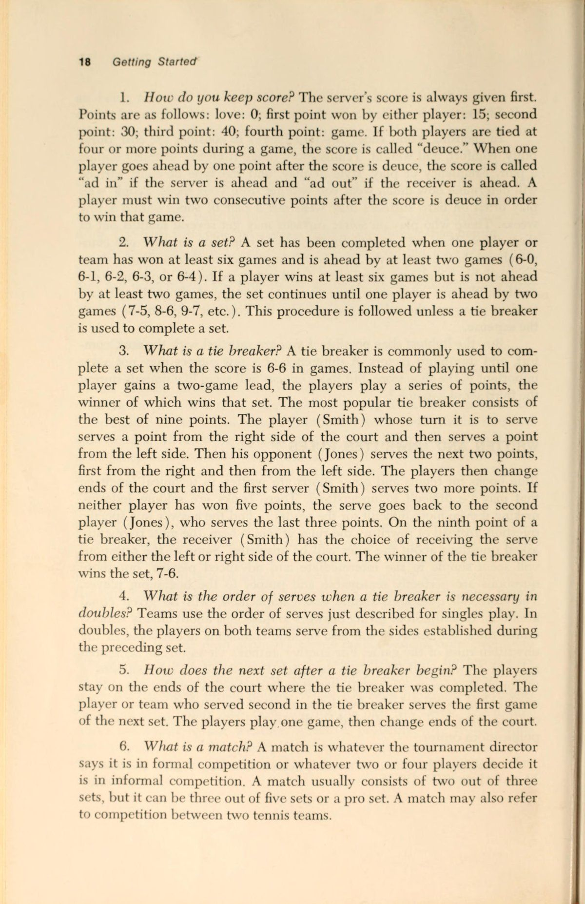
Tay cầm
Cách bạn cầm vợt khi giao bóng phụ thuộc vào trình độ của bạn. Nếu bạn là người mới bắt đầu, đứng đầu trong Bảng xếp hạng Si-System, cách cầm vợt của bạn sẽ khác so với khi bạn là người chơi trung cấp hoặc cao cấp. Điều này là do cách cầm vợt mà người chơi nâng cao sử dụng rất khó khăn đối với những người mới học chơi. Cách cầm vợt của người mới bắt đầu thoải mái và cho phép kiểm soát bóng ở mức độ hợp lý. Khi chuyển động giao bóng trở nên trôi chảy hơn, tay cầm có thể được thay đổi để phù hợp với cú xoay. Khi bạn chuyển sang cách cầm giao bóng nâng cao, bạn có thể đánh bóng theo nhiều cách khác nhau.
Nếu bạn là người mới bắt đầu, hãy đặt vợt xuống sàn hoặc trên sân. Đưa tay xuống và nhặt vợt ở phía dưới tay cầm sao cho các ngón tay của bạn cuộn quanh cán vợt. Ngón út của bạn phải cách đế báng cầm khoảng 1,5 inch. Mở rộng cánh tay của bạn thẳng ra trước mặt và nâng cổ tay lên trên. Bạn nên cầm vợt và nhìn thẳng qua dây như người chơi trong Hình 5 đang làm. Lấy cạnh trái của vợt và xoay nó 90 độ trong tay mà không di chuyển cổ tay hoặc bất cứ thứ gì khác để bây giờ bạn nhìn vào mép của đầu khung vợt (Hình 6). Tiếp theo, xoay vợt về vị trí đầu tiên mà không di chuyển cổ tay mà dừng lại giữa hai vị trí vừa mô tả (Hình 7). Điều chỉnh ngón tay một chút để bạn cầm vợt thoải mái mà không thay đổi góc vợt. Bây giờ bạn đang cầm vợt với cách cầm thích hợp để giao bóng cho người mới bắt đầu.
Nếu bạn là người chơi ở trình độ trung cấp, hãy làm theo các hướng dẫn tương tự này cho đến khi bạn nhìn vào mép của đầu khung vợt (Hình 6). Đây là cách cầm vợt gần đúng cho cú giao bóng ở trình độ chơi của bạn và nó không khác biệt nhiều so với cách cầm vợt trái tay. Có thể có những biến thể nhỏ để phù hợp với phong cách cụ thể của bạn, nhưng tay cầm giao bóng cơ bản là thứ bạn đang cầm.
Vị trí của bàn chân
Đứng quay mặt vào lưới với cả hai chân cách đường biên khoảng 1 inch, ngay bên phải điểm giữa (Hình 8). Quay 90 độ về tất cả: ee —
Hình 5 (trái). Bắt đầu bằng cách giơ vợt lên trước mặt bạn và nhìn qua các dây.
Hình 6 (ở giữa). Bước thứ hai là lấy cạnh trái của vợt và xoay nó sao cho nhìn vào mép khung.
Hình 7 (phải). Bây giờ di chuyển vợt trở lại vị trí đầu tiên, dừng lại ở
vị trí này.
bên phải của bạn (nếu bạn là người thuận tay phải) sao cho bạn nhìn xuống đường cuối sân (baseline) và mép ngoài của bàn chân trái song song với đường cuối sân (baseline) (Hình 9). Nếu bạn thuận tay trái, hãy bắt đầu hướng mặt vào lưới và xoay 90 độ sang trái, sao cho mép ngoài của bàn chân phải song song với đường cuối sân (baseline). Bây giờ, dù bạn đang quay mặt về hướng nào, hãy quay trở lại vị trí đầu tiên nhưng dừng lại ở điểm nằm giữa hai vị trí vừa mô tả. Bạn nên đứng nghiêng một góc 45 độ so với lưới, mặt hướng về phía cột lưới (Hình 10). Đặt trọng lượng của bạn lên bàn chân cách xa đường cuối sân (baseline) và dang rộng bàn chân của bạn rộng hơn một chút so với chiều rộng của vai. Tư thế này khá giống với tư thế mà hầu hết mọi người đều có khi đứng bắt đầu một cuộc trò chuyện thân mật. Đây là vị trí khởi đầu tốt cho người mới bắt đầu và người chơi quần vợt ở trình độ trung cấp. Một số giáo viên cho phép người mới bắt đầu nhìn thẳng vào lưới khi họ đang học cách giao bóng, và một số người chơi ở trình độ trung cấp và cao cấp thay Đổi bên (Đổi bên (switch))
Hình 8 (trên cùng bên trái). Để tìm vị trí chính xác cho đôi chân của bạn, hãy bắt đầu ở vị trí này.
Hình 9 (trên cùng bên phải). Bây giờ quay 90 độ sang phải.
Hình 10 (trái). Cuối cùng, quay trở lại vị trí ban đầu, dừng lại khi chân gần vạch cuối cùng nhất.
nằm ở góc khoảng 90 độ.
đôi chân của họ để đạt được hiệu ứng đặc biệt trong các cú giao bóng của họ. Nhưng vị trí góc 45 độ lại thoải mái và hiệu quả cho người chơi ở mọi cấp độ. Vị trí của bàn chân sẽ thay đổi khi trọng lượng di chuyển về phía trước trong quá trình giao bóng. Điều đó sẽ được thảo luận sau.
Cú ném
Việc Tung bóng là như nhau đối với tất cả người chơi. Một số người chơi có thể thay đổi cách Tung bóng một chút để thực hiện một kiểu giao bóng cụ thể, nhưng những điều cơ bản là giống nhau. Để đo độ cao thích hợp của cú ném, hãy giữ vợt ở một trong các tay cầm giao bóng được mô tả trước đó và mở rộng cánh tay và vợt của bạn lên cao nhất có thể mà bạn có thể với tới một cách thoải mái. Bây giờ đặt đầu vợt hơi hướng về phía trước bạn để nếu có thứ gì đó rơi ra khỏi đầu vợt, nó sẽ rơi khoảng 12 inch bên trong đường cuối sân (baseline) trước chân bạn. Với cánh tay và vợt mở rộng hoàn toàn và hơi ở phía trước bạn và đường biên, bóng nên được tung sao cho nó đạt đến đỉnh ở giữa dây vợt của bạn (Hình 11).
Nếu điều đó có vẻ khá chính xác thì nó phải như vậy. Nếu cú ném không như ý muốn, hãy bắt bóng hoặc thả bóng xuống sân và bắt đầu lại. Bạn có thể học cách ném bóng chính xác vào đúng vị trí mọi lúc.
Tung bóng để giao bóng cũng liên quan đến kỹ thuật. Giữ một quả bóng ở gốc các ngón tay của bàn tay ném của bạn và mở rộng cánh tay của bạn ra ngoài theo hướng của cột lưới mà bạn đang đối mặt (Hình 12). Bây giờ hãy nâng cánh tay của bạn lên mà không uốn cong quá nhiều ở khuỷu tay. Khi bạn nhấc cánh tay lên, hãy thả bóng bằng cách duỗi ngón tay. Bóng nên được ném mà không quay. Nếu nó tuột khỏi đầu ngón tay của bạn, quả bóng sẽ xoáy. Nếu bạn mở rộng các ngón tay bằng cách xòe chúng ra khi Tung bóng, độ xoáy sẽ ở mức tối thiểu và độ chính xác của cú Tung bóng của bạn sẽ tăng lên.
Chiếc Xích Đu
Nếu bạn là người mới bắt đầu, hãy cầm vợt bằng tay cầm giao bóng của người mới bắt đầu, đứng ở vị trí được mô tả trước đó và nâng vợt lên sao cho đầu vợt ở phía sau đầu bạn. Đưa tay ra sau và dùng vợt gãi lưng (Hình 13). Bây giờ hãy nâng đầu vợt lên một lần nữa sao cho nó ở phía sau đầu và cánh tay của bạn uốn cong ở khuỷu tay một góc 90 độ (Hình 14). Từ vị trí bắt đầu đó, hãy giả vờ rằng bạn sắp ném vợt qua lưới.
Bạn phải có khả năng ném bóng đúng cách trước khi có thể vung vợt trong động tác giao bóng một cách chính xác. Để ném bóng từ vị trí xuất phát phía sau đầu, bạn phải đưa vai về phía trước trước, sau đó nhanh chóng theo thứ tự bằng khuỷu tay và cuối cùng là bàn tay.
Hãy nhớ trình tự đó—vai, khuỷu tay, bàn tay—tất cả đều đưa về phía trước
——————————
Hình 12 (ở trên). Người giao bóng đã mở rộng cánh tay của mình về hướng cột lưới trước khi Tung bóng.
Hình 11 (trái). Hãy tập ném bóng sao cho bạn có thể ném bóng tới điểm mà cánh tay và vợt của bạn chạm vào nhau.
hướng lên trên và hơi ở phía trước cơ thể bạn.
êm ái và duỗi ra hoàn toàn tại điểm mà vợt sẽ tiếp xúc với bóng khi giao bóng (Hình 15).
Bây giờ hãy tiếp tục với hành động tưởng tượng ném vợt qua lưới. Bắt đầu với cánh tay giơ lên và vợt hướng lên phía sau đầu, khuỷu tay cong, thực hiện động tác ném. Đưa tay ra ngoài và hướng lên trên để cánh tay của bạn mở rộng hoàn toàn tại điểm tiếp xúc. Khi bạn tiếp xúc với quả bóng, cổ tay sẽ bắt đầu bật về phía trước theo chuyển động uốn cong. Thực hiện theo: bằng cách đưa vợt xuống và ngang qua phía trước cơ thể, Kết thúc cú đánh bằng việc đưa vợt xuống bằng chân trái nếu bạn thuận tay phải (Hình 16).
Nếu bạn là người chơi ở trình độ trung cấp, cú xoay sẽ khác. Đó là một chuyển động hoàn toàn giống như con lắc, bắt đầu bằng việc đưa vợt ra phía trước cơ thể, cao ngang ngực (Hình 17). Nhớ bóng-
Hình 13 (trái). Dùng vợt gãi lưng.
Hình 14 (phải). Bây giờ nâng đầu vợt và cánh tay của bạn lên tạo thành hai góc 90 độ.
chuyển động ném, đưa cánh tay và vợt xuống sao cho đầu vợt đi qua một điểm nào đó giữa đầu gối và mắt cá chân (Hình 18). Khi bạn đưa vợt lên và ra sau lưng, cánh tay của bạn phải bắt đầu uốn cong ở khuỷu tay và chuyển sang tư thế gãi lưng.
Từ thời điểm đó trở đi, chuyển động phải tương tự như chuyển động của người mới bắt đầu, với cánh tay và vợt mở rộng hoàn toàn tại điểm tiếp xúc và đi xuống và ngang qua cơ thể. Chuyển động của vợt Kết thúc cú đánh ở vị trí thấp ở phía đối diện của cơ thể nơi bắt đầu vung vợt (Hình 16).
Lắp ráp các bộ phận lại với nhau
Cho đến thời điểm này, cú giao bóng đã được mô tả trong các bộ phận cấu thành của nó. Nhưng bản thân cú giao bóng phải là một động tác phối hợp nhịp nhàng, liên tục nếu muốn nó có hiệu quả. Nếu mỗi thành phần được thực hiện riêng biệt thì kết quả sẽ là một chuỗi chuyển động giật cục, không nhịp nhàng. Khi bạn đọc những đoạn văn sau đây, hãy cố gắng tưởng tượng mình đang Giao bóng / Cú giao bóng.
Người mới bắt đầu: Dùng tay không cầm vợt để đưa bóng ra phía trước người, đồng thời đặt vợt phía sau đầu (Hình 19). Khi bóng đạt đến đỉnh điểm khi tung, hãy đưa vợt về phía trước trong động tác ném và đánh bóng bằng cánh tay và vợt duỗi thẳng hoàn toàn (Hình 20). Nếu bạn ném bóng tốt về phía trước cơ thể, bạn phải di chuyển trọng lượng cơ thể về phía trước để tiếp xúc. Bàn chân gần đường biên nhất không được di chuyển, nhưng bàn chân còn lại có thể rời khỏi mặt đất và tiến về phía trước khi bạn đánh và thực hiện cú đánh tiếp theo. Động lượng của bạn có thể đưa bàn chân đó vào trong đường biên một chút sau khi bạn tiếp xúc (Hình 21); đó là một dấu hiệu tốt cho thấy bạn đang chuyển trọng lượng vào quả bóng khi bạn giao bóng.
Trung gian: Bắt đầu với vợt đưa ra phía trước cơ thể bạn, cao ngang ngực và tay không cầm vợt cầm bóng chạm vào Mặt vợt.
Hình 15. Mọi thứ được mở rộng khi bạn tiếp xúc với bóng
. trên giao bóng.
oa Hình 16. Đi dọc xuống và ngang cơ thể bạn.
Hình 17 (trái). Đặt các quả bóng trên dây ở phía trước cơ thể bạn.
Hình 18 (phải). Để đầu vợt hạ xuống thấp trước khi bạn đưa vợt ra sau lưng.
dây vợt (Hình 22). Khi vợt bắt đầu rơi vào chuyển động con lắc, tay đối diện cũng nên di chuyển nhẹ xuống phía dưới trước khi tung. Cả hai tay đều di chuyển xuống dưới cùng một lúc, nhưng tay cầm vợt sẽ di chuyển xuống, sau đó vào tư thế gãi lưng trong khi tay kia bắt đầu di chuyển lên trên để nhấc bóng lên khi tung (Hình 23). Việc Tung bóng phải được căn thời gian sao cho bóng đạt điểm cao nhất đồng thời cánh tay và vợt duỗi ra để tiếp xúc. Nếu thời gian không đúng, hãy dừng mọi thứ và bắt đầu lại. Cú ném cũng phải đủ xa về phía trước cơ thể để buộc bạn phải nghiêng người về phía trước và vượt ra ngoài đường biên khi đánh bóng.
Đồng thời khi tay vợt mở rộng để giao bóng, vị trí của bàn chân sẽ thay đổi. Có hai cách thay đổi này có thể diễn ra. Để dồn trọng lượng vào quả bóng, bạn phải nghiêng người về phía trước. Khi bạn nghiêng người về phía trước, chân gần đường cuối sân (baseline) nhất vẫn giữ nguyên vị trí, nhưng chân kia phải đưa về phía trước. Một số người chơi thích bước một bước, bắt đầu bằng chân sau cách đường cuối sân (baseline) vài inch và Kết thúc cú đánh một bước bên trong đường cuối sân (baseline) (Hình 24 và 25). Người chơi khác
Hình 19. Người mới bắt đầu, bắt đầu với vợt hướng lên và ra sau, bóng ở phía trước.
Hình 20. Mở rộng cánh tay của bạn lên trên để thực hiện cú giao bóng của bạn. Quan sát bóng cho đến khi nó rời khỏi dây vợt của bạn.
Hình 21. Việc theo dõi của bạn có thể
Đưa bạn đi một bước vào trong đường cuối sân (baseline).
Hình 22 (trái). Nếu bạn ở trình độ trung cấp, hãy bắt đầu với vợt và bóng ở phía trước cơ thể.
Hình 23 (phải). Cánh tay trái di chuyển lên trên để ném trong khi cánh tay phải di chuyển về vị trí gãi lưng.
thực hiện bước tiếp cận hai bước bằng chân sau. Người giao bóng đưa chân sau về phía trước và thậm chí bằng chân gần đường biên ngang nhất ngay trước thời điểm tiếp xúc với bóng. Chuyển động này tạo ra hiệu ứng bàn đạp trong chuyển động giao bóng và thậm chí có thể giúp bạn tăng thêm độ cao và lực đòn bẩy nếu bạn kiễng chân lên khi đánh. Sau khi bóng được giao, chân tiếp tục tiến về phía trước, chạm xuống một bậc bên trong đường cuối sân (Hình 26).
Bất kể bạn sử dụng phương pháp nào, hãy cố gắng giữ đầu gối của bạn hơi cong trong phần đầu tiên của chuyển động giao bóng. Khi bạn đánh bóng, đầu gối và mọi thứ khác sẽ duỗi thẳng để cơ thể bạn tạo thành một đường chéo thẳng (Hình 27). Hành động của đầu gối chuyển từ vị trí uốn cong sang vị trí mở rộng tại thời Điểm tiếp xúc bóng cũng sẽ tạo ra hiệu ứng bàn đạp cho cú giao bóng của bạn, dẫn đến tăng thêm lực.
Dạy bản thân cách Giao bóng / Cú giao bóng
Bây giờ bạn đã biết các nguyên tắc cơ bản của cú giao bóng. Vấn đề tiếp theo làm thế nào để biến cách cầm vợt, thế đứng, Tung bóng, chuyển trọng lượng, xoay người và các động tác tiếp theo thành một mô hình nhịp nhàng, đáng tin cậy thực tế trên sân. Dưới đây là một số bài tập, bài tập và kỹ thuật học tập để giúp bạn đạt được mục tiêu đó. Một số gợi ý này có thể quá đánh đơn giản đối với bạn nếu bạn đã chơi được một thời gian; những người khác có thể quá khó khăn. Chọn những việc bạn thích làm và những việc có vẻ giúp bạn cải thiện nhiều nhất. Ở đây có thứ gì đó dành cho hầu hết mọi cấp độ của người chơi quần vợt.
1. Chơi đuổi bắt với ai đó. Lấy một quả bóng tennis, bóng mềm hoặc bóng chày và tập ném qua lại với vợ, chồng, con cái hoặc bạn bè của bạn. Dành ít nhất mười phút trong buổi tập đầu tiên và cố gắng thêm vào thời gian luyện tập hàng ngày. Đứng cách đối tác của bạn ít nhất 10 thước và cố gắng phát triển chuyển động mượt mà, lỏng lẻo. Hãy nhớ điều đó
Hình 24 (trái). Với cách tiếp cận một bước, chân phải bắt đầu ở vị trí này.
Hình 25 (phải). Bàn chân phải đã di chuyển từ vị trí phía sau đường biên đến vị trí bên trong đường biên ngang — tất cả chỉ trong một chuyển động.
SS tức là sg QQ
N a lại 7
~~
~ chuyển động giao bóng giống như chuyển động ném. Nếu bạn không cảm thấy thoải mái, hãy xin lời khuyên từ đối tác ném của bạn. Khi sức mạnh của bạn tăng lên và chuyển động trở nên trôi chảy hơn, hãy tăng khoảng cách ném
Hình 26 (trái). Trong cách tiếp cận hai bước, bàn chân phải được đưa về phía trước và được sử dụng để đẩy cơ thể về phía trước để thực hiện cú giao bóng.
Hình 27 (phải). Cơ thể kéo dài thành một đường chéo gần như thẳng tại thời điểm tiếp xúc với bóng.
cho đến khi bạn có thể dễ dàng ném một quả bóng tennis đi xa 60 feet. Đó là khoảng cách từ đường cuối sân đến đường giao bóng ở phía đối diện của lưới. Nếu bạn không thể ném xa như vậy, bạn sẽ gặp khó khăn trong việc phát triển một cú giao bóng mạnh..
2. Ném một quả bóng tennis từ đường cuối sân vào phần sân giao bóng thích hợp. Mang theo nhiều quả bóng đến sân để bạn không phải dừng lại để nhặt bóng sau mỗi lần ném. Sẽ tuyệt vời hơn nếu bạn có thể dẫn theo một người bạn đồng hành để bắt những quả ném sau khi chúng nảy lên và trả lại cho bạn.
3. Thực hành Tung bóng bằng cách nhắm vào mục tiêu. Đặt một cái rổ hoặc một tấm che vợt, hoặc vẽ một vòng tròn tại một điểm bên trong đường cuối sân nơi quả ném giao bóng chính xác sẽ rơi xuống nếu bóng không được đánh trúng. Xem bạn có thể thực hiện cú ném bao nhiêu lần để nó chạm mục tiêu.
4. Giao bóng / Cú giao bóng từ đường Giao bóng / Cú giao bóng. Nếu bạn là người mới bắt đầu, hãy sử dụng kỹ thuật được mô tả trước đó và thực hành giao bóng ở các ô giao cầu bên trái và bên phải từ đường giao bóng thay vì đường cuối sân. Khi độ chính xác và sức mạnh của bạn được cải thiện, hãy dần dần di chuyển về phía đường cuối sân (baseline).
5. Giao bóng vào hàng rào xung quanh sân hoặc vào bức tường bên ngoài nhà bạn. Nếu bạn không có rổ bóng, hãy tập động tác giao bóng bằng cách giao bóng vào hàng rào để không phải mất thời gian đuổi theo bóng.
6. Thực hành động tác giao bóng với tấm che trên vợt. Trọng lượng và lực cản tăng thêm sẽ giúp tăng cường sức mạnh cho cánh tay giao bóng của bạn. Bạn có thể tăng thêm trọng lượng bằng cách cho đồ vào vỏ vợt và đặt lên đầu vợt.
7. Thực hành động tác giao bóng trước gương. Nếu nơi bạn sống không có trần nhà cao, hãy bóp vợt, sử dụng mái chèo hoặc mô phỏng cú xoay bằng lòng bàn tay. Nếu bạn biết cú giao bóng phải được đánh như thế nào, bạn có thể hoàn thiện cú đánh của mình bằng cách quan sát bản thân thực hiện chuyển động.
8. Giao bóng từ một vị trí phía sau đường biên ngang vài feet. Lùi lại ba bước so với vị trí giao bóng bình thường của bạn và giao bóng vào đúng sân đấu. Bây giờ hãy lùi xa nhất có thể so với đường cuối sân và thực hành cú giao bóng của bạn. Việc luyện tập ở khoảng cách xa sẽ tăng cường sức mạnh của bạn và khiến việc giao bóng từ đường cuối sân trở nên dễ dàng hơn nhiều.
9. Đếm số quả bóng liên tiếp được giao vào mỗi ô giao bóng. Cố gắng thêm vào tổng số mỗi buổi thực hành. Đặt mục tiêu là 10, 20, 30, 40 hoặc 50 quả giao bóng tốt. Cạnh tranh với một đối tác để làm cho việc luyện tập trở nên thú vị hơn.
10. Giao bóng trong khi cầm vợt cách Đuôi cán vợt (Đuôi cán vợt (butt cap)) vài inch. Khi độ chính xác của bạn được cải thiện, hãy di chuyển bàn tay của bạn dần dần xuống vị trí bình thường gần đế của tay cầm.
ll. Giao bóng cho các mục tiêu trong sân giao bóng. Đặt một vỏ vợt hoặc lon bóng tennis vào các khu vực mục tiêu chính (các góc của hộp) và cố gắng đánh các vật thể bằng cú giao bóng của bạn.
12. Chơi một trò chơi với một người bạn chỉ sử dụng giao bóng và Trả giao bóng, Mỗi lần giao bóng vào đúng phần sân sẽ kiếm được một điểm. Mỗi lần Trả giao bóng vào sân đánh đơn cũng được tính một điểm. Mỗi điểm Kết thúc cú đánh sau khi giao bóng hoặc sau khi giao bóng và trả lại. Người giao bóng có hai cơ hội để thực hiện cú giao bóng.
Nhận biết và giải quyết vấn đề của chính bạn khi giao bóng
Bạn đã sẵn sàng cho vấn đề thứ ba và khó chịu nhất trong ba vấn đề mà bạn gặp phải khi dạy bản thân chơi quần vợt. Mặc dù bạn có thể có kiến thức cơ bản về cú giao bóng và mặc dù bạn đã thực hành nó một thời gian nhưng bạn vẫn sẽ gặp vấn đề với nó. Ngay cả những tay vợt vĩ đại trên thế giới cũng gặp vấn đề với cú giao bóng và với mọi cú đánh khác. Các vấn đề và giải pháp thường giống nhau đối với tất cả người chơi, dù là người mới bắt đầu hay chuyên nghiệp. Nếu bạn có thể học cách phát hiện các triệu chứng của một cú giao bóng kém, bạn có thể sửa chữa những sai lầm của chính mình. Nếu làm được điều này, bạn sẽ có Điểm lợi thế (Điểm lợi thế (advantage)) đáng kể so với những tay vợt khác. Dưới đây là một số vấn đề liên quan đến cơn cú đánh này, các nguyên nhân có thể xảy ra và gợi ý cách khắc phục.
1. Thiếu điện. Không đủ năng lượng có thể đánh đơn giản là do thiếu sức mạnh. Nếu bạn yếu ở phần thân trên và cánh tay, bạn có thể sẽ có một cú giao bóng yếu. Học cách chung sống với vấn đề này trừ khi bạn sẵn sàng tập thể dục, nâng tạ hoặc thực hiện các động tác đẳng cự để tăng cường thể lực cơ bắp của mình. Những gợi ý cụ thể về điều hòa và xây dựng sức mạnh sẽ được trình bày ở phần khác.
Một nguyên nhân khác có thể dẫn đến cú giao bóng yếu là do không dồn toàn bộ trọng lượng cơ thể vào bóng. Nhiều người mới bắt đầu và người chơi ở trình độ trung cấp chỉ sử dụng cánh tay, điều này gây mệt mỏi và không hiệu quả. Để sử dụng toàn bộ cơ thể khi giao bóng, trọng lượng phải được chuyển về phía trước. Một trong những nguyên nhân phổ biến nhất dẫn đến việc không thể tiến về phía trước là do cú ném ở phía trên hoặc phía sau đầu thay vì phía trước đầu.
Khả năng thứ ba có thể là do cổ tay không có tác động khi đánh bóng. “Hành động cổ tay” là cách mô tả thích hợp hơn về những gì sẽ xảy ra so với “hành động giật cổ tay”, vốn là thuật ngữ được hầu hết giáo viên và nhà văn sử dụng.
Trên thực tế, cổ tay không bị gãy hoặc uốn cong cho đến khi bóng được đánh, do đó, việc Bật cổ tay sẽ không làm tăng sức mạnh của cú giao bóng. Chuyển động quay vào trong của ngón tay cái, được gọi là"lật sấp", chịu trách nhiệm tạo ra chuyển động giống như cây roi giúp tăng thêm lực cho cú giao bóng. Vì vậy, khi bạn giao bóng, hãy tập trung xoay nhanh ngón tay cái vào trong ngay khi bạn tiếp xúc với bóng.
Thiếu năng lượng cũng có thể do có ít hoặc không có sự theo dõi. Nếu bạn dừng vợt ở điểm tiếp xúc với bóng, cú giao bóng của bạn sẽ giống một cú đấm hơn là một cú đánh hoàn toàn.
Cuối cùng, việc không uốn cong đầu gối và lao về phía bóng có thể khiến bạn giao bóng mà không có nhiều lực. Đừng cứng chân.
2. Đánh bóng liên tục ngoài phần sân giao bóng. Nguyên nhân rõ ràng nhất của vấn đề này là do đánh bóng quá mạnh. Hãy nhớ rằng hai cú giao bóng với tốc độ ba phần tư sẽ hiệu quả hơn nhiều so với việc đánh quả giao bóng đầu tiên thật mạnh và đánh quả giao bóng thứ hai rất nhẹ nhàng. Nếu bạn dường như luôn đánh sâu, hãy cố gắng đánh với lực ít hơn.
Việc đánh ngoài sân giao bóng cũng có thể dẫn đến việc góc vợt không phù hợp với nơi bạn muốn bóng đi. Nếu Mặt vợt nghiêng quá cao, bóng sẽ tự nhiên phản xạ khỏi dây và bay ra ngoài. Mỗi người chơi phải ý thức được góc bóng chạm vào vợt. Hãy để mắt đến quả bóng càng lâu càng tốt trong khi bạn giao bóng. Bạn có thể quan sát được góc mà bạn đang đánh.
3. Đánh bóng liên tục ra hai bên sân giao bóng. Kiểm tra độ bám của bạn. Người mới bắt đầu cầm vợt quá xa so với cách cầm vợt trái tay khi giao bóng có thể cắt bóng quá nhiều, do đó kéo bóng sang bên trái (nếu người chơi thuận tay phải). Nếu đó là vấn đề, hãy quay lại cách cầm vợt của người mới bắt đầu được mô tả trước đó.
Nếu sự cố vẫn tiếp diễn, hãy thử xoay cổ tay để điều chỉnh đầu vợt sang góc vuông tại thời điểm tiếp xúc. Nếu bạn thuận tay phải và bóng đi quá xa sang trái, hãy xoay cổ tay ra ngoài một chút ngay trước khi bạn đánh bóng. Nếu cú giao bóng của bạn đi về bên phải của sân giao bóng, hãy tập trung đưa cổ tay và cánh tay xuống và ngang qua phía trước cơ thể khi bạn đánh.
4. Đánh vào lưới. Kiểm tra độ cao của cú ném của bạn. Bạn có thể ném bóng quá thấp, vung vợt quá nhanh và đập bóng xuống. Ngoài ra, hãy kiểm tra Sự tập trung của bạn. Nếu bạn liên tục giao bóng vào cuối lưới, bạn có thể không chú ý đầy đủ đến công việc kinh doanh của mình. Chọn một vị trí sâu trong sân giao bóng và cố gắng đánh vào vị trí đó.
OO5. Mất Trọng tâm cơ thể. Hãy chắc chắn rằng bàn chân của bạn được căn chỉnh đúng cách trước khi giao bóng. Nếu điều đó có vẻ ổn, hãy đảm bảo rằng cú ném của bạn ở đúng vị trí bạn muốn. Đôi khi người chơi Tung bóng thất thường và thay vì bắt đầu lại chuyển động giao bóng, họ tiếp tục và đuổi theo cú ném đến bất cứ nơi nào nó dẫn họ.
6. Sự không nhất quán chung. Kiểm tra từng bộ phận cấu thành cú giao bóng của bạn. Bắt đầu với cách cầm vợt, sau đó thực hiện từng giai đoạn—tư thế, tung, vung, điểm tiếp xúc, chuyển trọng lượng và tiếp theo. Nếu không có gì giúp ích được, hãy thử thay Đổi bên (Đổi bên (switch)) của bạn trên đường cuối sân (baseline). Di chuyển hai hoặc ba feet sang phải hoặc trái của bạn, hoặc thậm chí lùi lại vài inch so với đường cuối sân (baseline). Đôi khi việc thay đổi điểm xuất phát có thể dẫn đến “kết cục”
giao bóng thành những cú giao bóng tốt. Hãy tập Giao bóng / Cú giao bóng. Một vài cú giao bóng trong mỗi ván đấu thứ tư trong một trận đấu đôi hàng tuần là không đủ để phát triển và duy trì một cú giao bóng mạnh và ổn định.
Chuẩn Bị Cho Các Cú Đánh Cuối Sân (Groundstrokes)
Làm cho nó trông dễ dàng
Một trong những câu nói phổ biến nhất được nghe từ khán giả quần vợt khi họ xem những người chơi trình độ cao là,"Họ thực sự làm cho nó trông dễ dàng. Lý do khiến những người chơi giỏi làm cho nó trông dễ dàng là trong khi hầu hết khán giả đang theo dõi quả bóng bị một người chơi đánh, họ không thấy rằng người chơi kia đang nỗ lực rất nhiều để vào vị trí cho cú đánh tiếp theo. Khi họ nhìn, người đánh bóng đã chuẩn bị kỹ đến mức không còn gì để làm ngoài việc vung vợt. Chuẩn bị đánh một cú cũng quan trọng như việc thực sự đánh bóng."khi thời điểm đến. Tay vợt chuẩn bị tốt cho mỗi cú đánh luôn ở Vị trí trên sân tốt trên sân, ở tư thế thoải mái để đánh bóng và cũng ở vị trí thuận lợi để có thể lựa chọn nhiều phương án khác nhau về vị trí và cách thức đánh trả.
Đánh từ vị trí cố định
Mặc dù ban đầu hầu hết các giáo viên và người chơi đều học cách đánh từ một vị trí cố định, nhưng rất ít cú đánh được đánh theo cách mà chuỗi chuyển động xoay-bước-xoay sẵn sàng đánh đơn giản là thực tế. Hầu hết thời gian bạn phải chạy, xáo trộn hoặc di chuyển theo một cách nào đó để có thể xoay, bước và xoay. Một trong số ít trường hợp cần ít chuyển động ngang, tiến hoặc lùi là khi Trả giao bóng. Dưới đây là một số gợi ý về cách sẵn sàng thực hiện cú đánh đó và những gợi ý khác phù hợp với vị trí của bạn trên sân.
Trước tiên, bạn phải quyết định cách bạn sẽ cầm vợt trong khi chờ đợi. Các lựa chọn là cách cầm vợt thuận tay, cách cầm vợt trái tay, cách cầm vợt ở giữa và kiểu cầm vợt Continental. Kỹ thuật sử dụng các loại tay cầm khác nhau sẽ được thảo luận sau, nhưng bây giờ hãy xem xét các yếu tố liên quan đến việc đưa ra quyết định ban đầu về việc sử dụng loại tay cầm nào. Nếu bạn giữ cách cầm vợt thuận tay trong khi chờ đợi, rõ ràng là bạn đã sẵn sàng cho cú trả bóng ở phía bên đó. Nếu bạn nghĩ rằng bạn có thời gian để di chuyển để cú đánh sẽ được đánh ở phía thuận tay hoặc nếu bạn dự đoán hầu hết các cú giao bóng sẽ đến phía đó, thì đó có thể là cách cầm vợt tốt nhất cho bạn. Tuy nhiên, cách cầm vợt của bạn phải thay đổi đáng kể nếu cú giao bóng đến phía trái tay của bạn và điều đó có thể gây khó khăn cho những người mới bắt đầu và những người ở trình độ trung cấp khi chơi với đối thủ có cú giao bóng nhanh. Nếu bạn chọn cách cầm vợt trái tay trong khi chờ giao bóng, lập luận tương tự sẽ được áp dụng. Một số người chơi gặp nhiều khó khăn hơn khi chuyển từ thuận tay sang trái tay hơn là từ trái tay sang thuận tay. Dù bằng cách nào thì sự khác biệt sẽ được đo bằng phân số của giây, nhưng phân số của giây rất quan trọng trong quần vợt. Bạn có thể muốn cầm một cách cầm vợt nằm giữa cách cầm thuận tay và trái tay. Ưu điểm là bạn ở gần cả hai cách cầm vợt, và nhược điểm là bạn sẽ phải điều chỉnh cách cầm vợt của mình mỗi lần Trả giao bóng. Bạn có thể tránh toàn bộ vấn đề này bằng cách cầm kiểu cầm Continental cho tất cả các cú đánh nền, nhưng cách cầm này chủ yếu được sử dụng bởi những người chơi trình độ cao có cẳng tay khỏe hoặc vợt và dây đàn hồi.
Trước khi quyết định phương pháp nào là tốt nhất cho bạn, hãy trả lời những câu hỏi này. (1) Cách cầm nào thoải mái nhất cho bạn? (2) Bạn mong đợi quả giao bóng sẽ đến từ bên nào nhất? (3) Cú thuận tay có khó thay đổi hơn Cú trái tay (Cú trái tay (backhand)) tay hay ngược lại? Nếu bạn trả lời có cho câu hỏi cuối cùng, bạn có thể muốn bắt đầu với cách cầm vợt khó hơn để bạn có thời gian trước khi giao bóng để cầm vợt trong tay.
Nếu bạn vẫn không thể quyết định phải làm gì, hãy nghe theo lời khuyên này: Hãy đợi quả giao bóng bằng cách cầm vợt trái tay. Hầu hết những người chơi mới bắt đầu và trung cấp gặp nhiều khó khăn hơn khi đánh vào bên đó của cơ thể, vì vậy họ cần mọi thời gian có thể để sẵn sàng cho việc đó. Một lý do khác là hầu hết người chơi đều cảm thấy thoải mái với cách cầm vợt thuận tay và ít gặp khó khăn khi thay đổi cách cầm vợt khi họ phải vội. Cuối cùng, nhiều người chơi sẽ cố gắng giao bóng trái tay của bạn thường xuyên hơn, vì vậy hãy sẵn sàng cho họ.
Trong khi chờ giao bóng, hãy cầm vợt ra phía trước cơ thể với đầu vợt hướng thẳng về phía người giao bóng hoặc hơi hướng về phía trái tay của bạn. Dùng tay không cầm vợt để đỡ vợt ở cổ vợt (phần giữa đầu và cán hoặc cán vợt). Vợt phải ở đủ xa trước mặt bạn để trọng lượng của bạn thực sự bị ném về phía trước một chút. Điều này sẽ buộc bạn dồn trọng lượng lên ngón chân thay vì gót chân, một vị trí sẽ giúp bạn phản ứng nhanh hơn với bất kỳ cú đánh nào. Cong nhẹ ở đầu gối và ở thắt lưng. Dang rộng bàn chân của bạn rộng hơn một chút so với chiều rộng của vai. Một số người chơi thích đặt chân của họ thẳng hàng với đường cuối sân (baseline), trong khi những người khác lại sử dụng tư thế so le.
Hãy sẵn sàng lao tới quả bóng và tấn công nó trước khi nó tấn công bạn. Người chơi trong Hình 28 đang thể hiện Tư thế sẵn sàng Trả giao bóng.
Quan sát quả bóng được giao từ lúc nó rời khỏi tay người giao bóng cho đến khi nó chạm tới dây vợt của bạn. Ngay khi bạn thấy bóng đang hướng về phía nào, hãy điều chỉnh cách cầm vợt của mình cho phù hợp bằng cách di chuyển vợt bằng tay đang cầm vợt ở cổ họng; sau đó di chuyển về phía quả bóng bằng cách xoay người về phía trước. Nếu bạn thuận tay phải và bóng đến tay thuận tay, bạn nên bước chân trái về phía trước và ngang qua phía trước cơ thể (Hình 29 và 30). Nếu bóng đến phía bên trái tay của bạn, chân trái được sử dụng làm chân trụ và chân phải di chuyển về phía trước (Hình 31 và 32). Trong cả hai trường hợp, vào thời điểm bạn thực hiện cú trả bóng, bàn chân của bạn phải thẳng hàng sao cho các ngón chân của bạn tạo thành một đường ít nhiều song song với đường biên. Bàn chân gần lưới nhất có thể chỉ vào một góc 45 độ so với đường cuối sân. Vị trí này giúp bạn dễ dàng di chuyển trọng lượng về phía trước khi đánh. Có những ngoại lệ đối với động tác vừa mô tả, nhưng hãy lo lắng về những ngoại lệ sau. Người chơi trong Hình 30 và 32 đã xoay người về phía trước để thực hiện cú Trả giao bóng. Lưu ý rằng chân trụ đã thay đổi góc nhưng nó vẫn ở vị trí cũ trên sân như trước khi quả giao bóng được thực hiện. Cũng nên nhớ rằng rất hiếm khi có bất kỳ cú đánh nào nhắm vào bạn mà chỉ cần một cú xoay về phía trước sẽ đưa bạn vào đúng vị trí đánh.
Đánh khi đang di chuyển
Hầu hết các cú đánh đều bị trúng khi đang chạy hoặc đang chạy để vào vị trí. Cái sau là thích hợp hơn. Nếu bạn chạy đầu tiên, thiết lập thứ hai và đánh thứ ba, bạn đang ở vị trí tốt hơn hầu hết người chơi. Lý tưởng nhất là bạn muốn thực hiện mỗi cú đánh nền từ cùng một vị trí cơ thể. Cách duy nhất để đạt được mục tiêu đó là vào vị trí thật nhanh để bạn có thể đánh bóng từ vị trí mà bạn cảm thấy thoải mái.
Có một số cách để tiếp cận quả bóng. Một cách là xáo trộn theo chiều ngang. Thay vì Bước chân bắt chéo chân để di chuyển sang một bên, hãy luân phiên trượt chân sang bên mà bóng đang hướng tới. Nếu bạn phải di chuyển sang phải, trước tiên hãy trượt chân phải sang phải và tiếp theo là trượt chân trái. Để thực hiện thao tác tương tự nhanh hơn, hãy sử dụng chuyển động bỏ qua hoặc nhảy lò cò. Bàn chân vẫn lê bước không Bước chân bắt chéo nhưng có chút nảy lên. Nếu bạn thực sự phải vội vàng để có được quả bóng ở phần khác của sân, bạn chỉ cần quay người và chạy. Sử dụng bước Bước chân bắt chéo như thể bạn chuẩn bị xoay người về phía trước và đẩy mạnh bằng chân kia.
Bất kể bạn đến bóng bằng cách nào, hãy đến đó sớm và chuẩn bị cho cú đánh. Cố gắng tránh đến đúng lúc để tiếp xúc với bóng. Xoay, xáo trộn, trượt hoặc xoay người và chạy, nhưng khi bạn đến đó, hãy đặt chân ở xa lưới hơn. Sau đó chuyển trọng lượng của bạn về phía trước sang chân kia khi bạn đánh. Nếu bạn phải thực hiện một cú đánh ngắn nảy thẳng về phía trước mặt, hãy di chuyển sang một bên của quả bóng thay vì đi theo đường thẳng.
Hình 28. Ở vị trí sẵn sàng trước khi Trả giao bóng, trọng lượng của người chơi hướng về phía trước, vợt hướng về phía người giao bóng,
và đầu gối co lại.
Sau mỗi cú đánh, hãy bắt đầu chuẩn bị sẵn sàng cho cú đánh tiếp theo bằng cách (1) di chuyển vợt trở lại vị trí sẵn sàng ở phía trước cơ thể bạn và (2) định vị bản thân ở vị trí tốt nhất có thể cho cú đánh tiếp theo. Đối với các cú đánh nền, vị trí đó thường ở giữa đường cuối sân (baseline), mặc dù nó có thể thay đổi khi điểm tiến triển. Ngay khi bạn biết cú đánh tiếp theo sẽ đến đâu, hãy điều chỉnh cách cầm vợt, thu vợt lại và bắt đầu di chuyển về phía quả bóng một lần nữa. Còn nhiều điều để nói về việc chuẩn bị chạm đất-
Cú Đánh Thuận Tay (The Forehand): Bản Năng & Nhịp Điệu
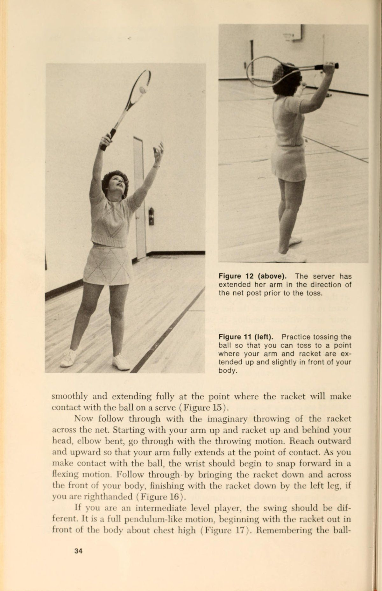
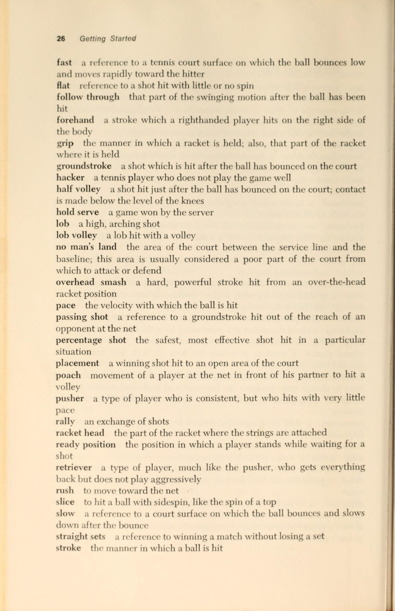
cú đánh, nhưng nó sẽ được nói trong các cuộc thảo luận riêng biệt về thuận tay và trái tay.
Tay cầm
Giữ vợt bằng tay trái ® sao cho một cạnh của vợt hướng về phía sàn hoặc sân (Hình 33). Bây giờ hãy bắt tay với ° Trừ khi có chỉ định khác, hướng dẫn sẽ dành cho người chơi thuận tay phải.
Hình 29. Đây là vị trí sẵn sàng từ phía bên phải trước một
giao bóng.
- bạn sồi —_
Hình 30. Nếu quả giao bóng đến phía thuận tay, người chơi xoay người về phía trước bằng chân trái. Trục xoay về phía trước cho phép tiến về phía trước
chuyển trọng lượng.
_ _#
Hình 31 (trái). Đây là vị trí sẵn sàng nhìn từ một góc độ khác—phía bên trái.
Hình 32 (phải). Khi quả giao bóng đến phía trái tay, người nhận giao bóng xoay người về phía trước bằng chân phải để dồn trọng lượng của mình vào bóng.
vợt giống như thể bạn sắp bắt tay với người khác. Sau khi đã cầm vợt, bàn tay của bạn phải ở tư thế sao cho các ngón tay của bạn cuộn tròn quanh cán vợt gần chân vợt (Hình 34). Thả vợt xuống ngang eo, điều chỉnh nhẹ các ngón tay trên cán vợt để có cảm giác thoải mái mà không làm thay Đổi bên (Đổi bên (switch)) cơ bản của vợt trên tay. Lòng bàn tay của bạn phải ở phía sau cán vợt một chút, cổ tay của bạn phải ở vị trí có thể hỗ trợ chắc chắn từ phía sau cán vợt và chữ “V” được tạo bởi ngón cái và ngón trỏ phải ở trên nhưng hơi hướng về phía sau của cán vợt hướng lên trên. Phần sau của bàn tay phải tạo thành một đường cong nhẹ với phần trên của cẳng tay. Đó là cách cầm vợt thuận tay kiểu Eastern (Hình 30). Trong khi tay thuận của bạn giữ vợt ở cán vợt giữa các cú đánh, tay đối diện sẽ giữ vợt ở cổ họng. Vợt phải được giữ ở đó để duy trì một vị trí sẵn sàng cảnh giác, nhưng nó cũng ở đó để di chuyển vợt trong tay bạn khi bạn chuyển từ cách cầm này sang cách cầm khác trong quá trình thực hiện một điểm. Một người chơi không cảm thấy thoải mái khi đặt tay đối diện vào cổ vợt sẽ không phát triển được nhiều về kỹ năng chơi quần vợt.
Hình 33 (trái). Cầm vợt bằng tay không cầm vợt. Hướng mép vợt về phía sân.
Hình 34 (phải). Bây giờ hãy bắt tay với vợt và cách cầm vợt của bạn sẽ trông giống như thế này.
Đánh lùi
Ngay khi bạn biết bóng sẽ đi về phía thuận tay của bạn, hãy bắt đầu vung vợt ra sau. Động tác Vung vợt ra sau (lấy đà) được thực hiện bằng cách đưa vợt trở lại theo đường thẳng song song với sân hoặc theo một đường cong hướng lên trên một chút đến vị trí mà vợt cao ngang thắt lưng và hướng vào hàng rào phía sau đường cuối sân (Hình 36). Nếu người đứng trước mặt bạn có thể nhìn thấy đầu vợt ở phía sau cơ thể bạn thì có lẽ nó đã ở quá xa. Học cách chạy với vợt lùi về phía sau cơ thể. Nếu bạn đợi cho đến khi bóng đến gần để bắt đầu vung vợt về phía sau, bạn sẽ không có thời gian để điều chỉnh những cú nảy, độ xoáy hoặc vận tốc bất ngờ. Nếu vợt đã ở sẵn đó khi bạn đặt chân lên, tất cả những gì bạn phải lo lắng là đánh bóng.
Vị trí của bàn chân
Trước khi bạn bắt đầu chuyển động về phía trước của cú vung, hãy cố gắng đặt chân phải (đối với người thuận tay phải), hơi cong đầu gối và thoải mái
Hình 35. Người chơi có cách cầm vợt thuận tay kiểu phương Đông và vợt lùi về phía sau trước cú đánh.
tách hai chân rộng hơn chiều rộng của vai. Sử dụng chân phải để đẩy ra và chuyển trọng lượng của bạn về phía trước khi bạn bắt đầu vung vợt. Khi bạn đánh, hãy đảm bảo rằng trọng lượng của bạn đã di chuyển về phía trước. Một số tay vợt bước một bước nhỏ về phía trước bằng chân trái ngay trước khi chạm bóng. Phần quan trọng nhất của bất kỳ cú đánh nền nào là chuyển trọng lượng về phía trước. Nếu bạn không đặt nó vào cú đánh của mình, bạn sẽ chỉ đánh bằng lực do cánh tay cung cấp thay vì bằng toàn bộ trọng lượng cơ thể. Kết quả là thiếu sức và mỏi tay trước khi trận đấu hoặc buổi tập Kết thúc cú đánh. Một cách để xác định xem trọng lượng của bạn ở chân có gần lưới hơn hay không là nhận biết vị trí của vai gần lưới hơn. Nếu vai đó nằm trên một mặt phẳng ít nhiều bằng phẳng với vai kia hoặc ở tư thế hướng xuống, trọng lượng của bạn dồn về phía trước; nếu nó hướng lên trên thì trọng lượng của bạn vẫn dồn vào chân sau.
Bản thân cú đánh
Khi bạn vung vợt, vợt phải di chuyển theo hình vòng cung hơi hướng lên trên. Hành động hướng lên và hướng về phía trước này của vợt cho phép bạn đánh với một lượng Xoáy lên nhẹ, điều này tốt cho Độ sâu của bóng, độ nảy cao và tính nhất quán. Giữ cổ tay ở vị trí tạo thành một đường cong với phần trên của cẳng tay và giữ cố định khi bạn đánh. Hãy nghĩ đến việc quét thứ gì đó ra khỏi bàn hoặc bàn ủi. Cố gắng mang bóng trên dây vợt của bạn. Giữ vợt đủ chặt để vợt không bị xoay trong tay bạn khi va chạm, nhưng không chặt đến mức các khớp ngón tay của bạn chuyển sang màu trắng. làm
Hình 36. Đưa vợt về phía sau sao cho nó hướng về phía bức tường hoặc hàng rào phía sau bạn.
tiếp xúc với quả bóng ngay trước khi nó chạm tới một điểm ngay cả ở phần giữa cơ thể bạn (Hình 37). Thực hiện theo hướng ra ngoài về phía lưới và hướng lên trên ngực của bạn, theo thứ tự đó (Hình 38).
Mỗi lần bạn đánh một cú thuận tay, tổng hành động liên quan đến cú đánh sẽ gần như giống nhau. Nếu bóng đến chỗ bạn thấp hơn thắt lưng, hãy uốn cong đầu gối, giữ thẳng lưng và thực hiện động tác xoay tương tự. Đừng đứng thẳng và đánh gôn vào quả bóng. Nếu bạn bị mắc kẹt ở một vị trí mà bóng sẽ nảy sâu ở phần sân sau và cao tới phía thuận tay của bạn, hãy nhanh chóng rút lui, đặt chân sau và di chuyển trọng lượng của bạn về phía trước khi bạn vung vợt. Nếu bóng rơi xuống sân của bạn, hãy di chuyển lên trên, trồng cây, bước, xoay người và thực hiện theo.
Khi bạn cải thiện cú thuận tay của mình, bạn có thể tăng thêm tính hiệu quả của nó theo một số cách. Xoáy lên nghiêm trọng có thể là một vũ khí tấn công tàn khốc và có thể bị ảnh hưởng bằng cách thực hiện động tác vung vợt xuống thấp hơn bình thường. Có thể tạo xoáy xuống cho bóng bằng cách bắt đầu chuyển động về phía trước của vợt từ vị trí cao hơn bình thường. Tiếp xúc với bóng ở nhiều điểm khác nhau trong phạm vi thuận tay có thể tạo ra các hiệu ứng khác. Tuy nhiên, hầu hết các kỹ thuật này đều hiệu quả đối với những người chơi trình độ cao; trước khi có thể phát triển thêm bất kỳ kỹ năng thuận tay nào, trước tiên, các nguyên tắc cơ bản của cú đánh phải được học, thực hành và thành thạo.
Hình 37 (trái). Dựa vào quả bóng và cố gắng quan sát nó rời khỏi dây của bạn. Đừng mở rộng cánh tay của bạn quá nhiều khi tiếp xúc như tay vợt này đang làm.
Hình 38 (phải). Thực hiện theo hướng lên và ngang ngực của bạn.
Tự học cách đánh cú thuận tay
1. Thả bóng bằng tay trái, mô phỏng cú thuận tay (Cú thuận tay (forehand)) và bắt bóng bằng tay phải. Nếu bạn có thể làm điều đó một cách dễ dàng, hãy thả bóng, vung vợt bằng chuyển động thuận tay và đánh bóng bằng bàn tay mở. Bài tập này giúp bạn phát triển chuyển động vung vợt và cũng yêu cầu bạn phải quan sát bóng khi đánh.
2. Thả bóng về phía thuận tay của bạn và đánh nó qua lưới bằng cú thuận tay (Cú thuận tay (forehand)). Xoay người về phía lưới, duỗi tay trái và tay cầm bóng rồi thả bóng. Đừng trả lại nó; cứ để nó rơi ra tòa. Khi bóng nảy lên, hãy nghiêng người về phía trước và xoay nhẹ nhàng, nhắm đến một vị trí ở phía bên kia của lưới.
3. Cầm vợt theo kiểu thuận tay, tập rê bóng tennis trên sàn hoặc sân. Người mới bắt đầu thường gặp khó khăn trong việc làm quen với khoảng cách từ tay đến đầu vợt. Rê bóng năm mươi đến một trăm lần một ngày không chỉ giúp bạn điều chỉnh khoảng cách mà còn làm cho cách cầm vợt thuận tay giống như cách cầm vợt tự động và bạn có thể phát triển khả năng kiểm soát vợt tốt hơn.
4. Với cách cầm thuận tay, lật lòng bàn tay của bạn lên và bật bóng ra khỏi dây lên không trung nhiều lần nhất có thể mà không để nó chạm đất. Bài tập này cải thiện khả năng kiểm soát bóng] và tăng cường sức mạnh cho cổ tay. Bạn phải có khả năng thực hiện ít nhất một trăm cú rê bóng liên tiếp mà không bỏ lỡ.
5. Đánh dấu sân hoặc khu vực trống ở nhà bằng dấu X cách nhau vài feet và ở bên phải điểm xuất phát. Thực hành vào vị trí bằng cách di chuyển đến một vị trí và thực hiện cú thuận tay (Cú thuận tay (forehand)). Bắt đầu từ vị trí trung tâm, di chuyển luân phiên đến từng vị trí bạn đã đánh dấu, đặt chân phải, nghiêng người về phía trước và tưởng tượng bạn đang vung gậy và đánh một cú. Sau mỗi lần bắn, quay trở lại điểm xuất phát.
6. Thực hành cú thuận tay (Cú thuận tay (forehand)) trước gương. Nói với chính mình, “Sẵn sàng, xoay, xoay” hoặc “Sẵn sàng, xoay, bước, xoay.” Tập trung quan sát từng phần của cú đánh, sau đó theo dõi toàn bộ chuyển động. Cố gắng phát triển một chuỗi chuyển động phối hợp nhịp nhàng khi bạn giả vờ đánh.
7. Tập thay đổi qua lại giữa cách cầm vợt thuận tay và trái tay. Bạn cũng có thể thực hiện bài tập này trước gương. Lặp lại các thay đổi cách cầm vợt nhiều lần đến mức bạn có thể thay đổi mà không cần nhìn vào vợt. Nếu bạn không biết cách cầm vợt trái tay, hãy đọc phần tiếp theo của chương này trước khi thực hành bài tập này.
8. Tập Cú thuận tay (Cú thuận tay (forehand)) vào tường. Lúc đầu, đứng rất gần tường và làm việc với độ chính xác cũng như hình thức. Đặt mục tiêu về số lần đánh liên tiếp không trượt. Khi bạn trở nên kiên định hơn, hãy di chuyển dần dần ra xa tường cho đến khi cuối cùng bạn ở khoảng cách từ đường cuối sân (baseline) đến lưới (39 feet).
9. Nhờ một người bạn ném bóng về phía thuận tay của bạn. Mang một rổ bóng ra sân; Yêu cầu bạn của bạn đứng cách đó khoảng 20 feet và thực hiện cú ném thuận tay để nảy dễ dàng cao ngang thắt lưng. Bắt đầu chuẩn bị từ vị trí sẵn sàng và xoay người về phía trước trong mỗi lần bắn. Khi bạn đã khá hơn, hãy để người ném ném bóng ra xa vị trí của bạn để bạn phải di chuyển, chuẩn bị và sau đó thực hiện cú đánh. Trở lại vị trí trung tâm sau mỗi lần bắn. Đây là một bài tập khác có thể được sử dụng trên bất kỳ bề mặt cứng nào, nơi có đủ không gian mở để di chuyển và nơi có điểm dừng để giữ bóng không bay đi.
10. Chơi một trò chơi với một người bạn chỉ sử dụng sân giao bóng. Đứng trên hoặc phía sau vạch giao bóng và đưa bóng vào cuộc bằng cách thả bóng xuống và Cú đánh nhẹ (Cú đánh nhẹ (dink)) vào đối tác luyện tập của bạn. Sử dụng các nét ngắn. Tất cả các cú đánh phải nằm trong ranh giới của hai ô giao bóng. Giữ điểm bằng cách đếm số lần bắn liên tiếp hoặc bằng cách thực sự chơi trò chơi bằng phương pháp tính điểm thông thường. Tôi sẽ. Từ vị trí gần đường cuối sân, hãy tập Cú thuận tay (Cú thuận tay (forehand)) với một người bạn. Nếu cả hai bạn đều thuận tay phải, tất cả các cú đánh sẽ được đánh chéo sân (Đánh chéo sân (cross-court)), từ phía thuận tay của bạn đến phía đối thủ, Đặt mục tiêu hoặc đếm số cú đánh liên tiếp được thực hiện.
12. Chỉ đánh những cú thuận tay dọc biên. Nếu đối tác của bạn đủ giỏi để giữ bóng ở phía thuận tay của bạn, hãy đánh từ 50 đến 100 cú đánh bằng cú thuận tay (Cú thuận tay (forehand)) để bóng di chuyển song song với đường biên.
Tập trung vào việc thiết lập sớm và đánh bóng sâu vào phần sân sau của đối phương. Nếu người bạn của bạn không đủ giỏi để đánh tất cả các cú đánh về phía thuận tay của bạn, hãy thay phiên nhau ném bóng về phía thuận tay.
13. Thực hành các cú thuận tay (Cú thuận tay (forehand)) chỉ sử dụng ngõ ở một bên sân. Tất cả các cú sút đều hướng về con hẻm bên kia lưới. Nếu bạn và đối tác của bạn đều thuận tay phải, anh ấy hoặc cô ấy sẽ phải Cú trái tay (Cú trái tay (backhand)) khi trả bóng hoặc di chuyển sang một bên sân để thực hiện các cú trả bóng thuận tay.
14. Thực hành các cú đánh tiếp cận thuận tay. Yêu cầu đối tác của bạn ném hoặc đánh những cú đánh nảy gần đường giao bóng ở phía thuận tay của bạn. Bắt đầu từ giữa đường cuối sân, di chuyển về phía bóng, chuẩn bị và đánh một cú thuận tay dọc theo đường biên ở phía đó của sân.
15. Thực hành cú thuận tay (Cú thuận tay (forehand)) với một tấm che trên vợt. Lực cản bổ sung sẽ giúp cải thiện sức mạnh của cẳng tay và cổ tay của bạn,
16. Bóp một quả bóng tennis. Khi bạn có thêm chút thời gian quanh nhà hoặc khi rảnh tay, hãy cầm một quả bóng tennis cũ và bóp nó thật chặt. Lặp lại 25 lần và tăng số lần ép liên tiếp lên 5 lần mỗi ngày. Sức cầm nắm của bạn sẽ được cải thiện đáng kể nếu bạn chăm chỉ thực hiện bài tập này mỗi ngày.
Nhận biết và giải quyết vấn đề của chính bạn bằng cú thuận tay
1. Thiếu điện. Bạn có đang dồn trọng lượng của mình vào cảnh quay không? Nếu không, có một số lý do có thể xảy ra. Bàn chân của bạn có thể không ở đúng vị trí; xoay người sao cho bàn chân của bạn ít nhiều song song với đường biên. Vai của bạn gần lưới nhất có thể hướng lên trên; nghiêng về phía trước khi bạn đánh. Bạn có thể đợi quá muộn để tiếp xúc với bóng; đánh nó trước khi nó đến với bạn. Bạn có thể không theo kịp; Đừng dừng chuyển động về phía trước của vợt khi bạn đánh mà hãy mang bóng trên dây càng xa càng tốt bằng cách di chuyển vợt hướng ra ngoài về phía lưới và hướng lên phía trước cơ thể bạn.
2. Đánh ra (ngoài đường cuối sân (baseline)). Luôn luôn xem xét khả năng bạn đang vung quá mạnh. Ai cũng có thể đánh mạnh. Chỉ những người chơi giỏi mới có thể tung ra những cú đánh sắc nét nằm trong đường cuối sân. Ngoài ra, hãy kiểm tra góc của vợt khi bạn đánh. Nếu nó bị nghiêng quá cao, quả bóng sẽ bật ra khỏi vợt theo hướng mà dây của bạn đưa nó đi. Một cú Vung vợt ra sau (lấy đà) thấp cũng có thể khiến bạn nhấc bóng lên và ra ngoài. Đưa vợt về phía sau cao ngang thắt lưng khi thực hiện động tác Vung vợt ra sau (lấy đà).
Một số tay vợt đánh bóng ra ngoài vì đối thủ đánh mạnh, trả bóng nhanh. Đối thủ của bạn đánh càng mạnh thì bạn càng phải thực hiện cú đánh trả ít hơn. Đừng lao vào một trận đấu trượt dốc với một kẻ đánh mạnh.
Sử dụng sức mạnh của anh ấy bằng cách rút ngắn cú đánh lùi của bạn và để cho những cú đánh sức mạnh của anh ấy phản chiếu từ vợt của bạn trở lại sân của anh ấy.
3. Đánh bóng quá xa về bên trái nếu bạn thuận tay phải, hoặc quá xa về bên phải nếu bạn thuận tay trái. Chỉ có hai nguyên nhân cho vấn đề này. Bàn chân của bạn có thể không được xếp thẳng hàng trước khi bạn đánh. Khi bạn xoay người bằng một chân, chân còn lại phải được đưa về tư thế nửa khép kín (gần như song song với đường biên). Nếu không làm như vậy, bạn sẽ kéo bóng giống như một tay vợt bóng chày thuận tay phải kéo bóng xuống đường biên bên trái khi anh ta bước vào xô (bước sang một bên thay vì theo hướng anh ta muốn đánh bóng). Nếu đó không phải là vấn đề thì có lẽ bạn đã đánh bóng quá sớm. Đợi một chút nữa trước khi bạn liên lạc.
4. Đánh các cú đánh về bên phải (người thuận tay phải) hoặc bên trái (người thuận tay trái). Bạn đang chờ đợi quá muộn để đánh bóng. Đừng để nó vượt qua điểm giữa của cơ thể bạn khi bạn đứng sang một bên để đánh cú thuận tay. Bạn có thể đánh muộn vì không lấy lại được vợt trước khi bóng nảy về phía bạn. Nhanh lên rồi đợi nhé.
5. Những cú đánh dường như luôn đến chân bạn. Bạn đang đứng sai chỗ. Đừng dành nhiều thời gian giữa đường giao bóng và đường cuối sân (baseline). Một số người chơi muốn di chuyển về phía lưới từng bước một. Sự thận trọng là điều đáng ngưỡng mộ, nhưng nếu bạn di chuyển vào trong đường cuối sân mà không đi hết vạch giao bóng hoặc xa hơn, các cú đánh đương nhiên sẽ nảy gần chân bạn. Những cú đánh đó rất khó để bất kỳ tay vợt nào đánh trả. Hoặc ở lại phía sau hoặc di chuyển đến vị trí mà bạn có thể thực hiện cú vô lê.
6. Đối thủ của bạn dường như biết bạn sẽ đánh cú thuận tay ở đâu. Nghĩ. Hãy suy nghĩ đủ xa trong mỗi thời điểm để bạn biết anh ấy mong đợi bạn đánh được gì. Nếu bạn biết anh ta đang mong đợi điều gì, hãy làm một trong hai điều sau: hoặc đánh cú đánh tốt đến mức anh ta không thể làm gì được, hoặc đánh vào một điểm trên sân mà anh ta không mong đợi bạn đánh. Thay đổi các cú đánh của bạn đủ để giữ cho đối thủ của bạn trung thực, ngay cả khi bạn thỉnh thoảng đánh một cú đánh có tỷ lệ thấp (một cú đánh táo bạo hơn, không có khả năng thành công bằng một cú đánh dễ dàng hơn).
7. Sự không nhất quán chung. Sự chuẩn bị không tốt luôn là nơi đầu tiên tìm kiếm rắc rối. Sự chuẩn bị kém có thể là do khả năng tập trung kém. Hãy chắc chắn rằng bạn đang hối hả để thực hiện mọi cú đánh thay vì loay hoay theo hướng của cú đánh tiếp theo. Cổ tay mềm cũng có thể khiến bạn làm bóng văng tung tóe khắp nơi. Giữ cố định cổ tay của bạn khi bạn vung về phía trước. Đừng để vợt quay trong tay khi bạn đánh. Xem bóng rời khỏi dây vợt của bạn. Bạn có thể đang tìm kiếm quá sớm. Luyện tập. Bạn không thể thực hiện các cú đánh; chúng phải được đặt vào vị trí, và vị trí đó là kết quả của quá trình luyện tập thường xuyên và kiên nhẫn.
Cú Đánh Trái Tay (The Backhand): Vững Chắc & Tự Tin
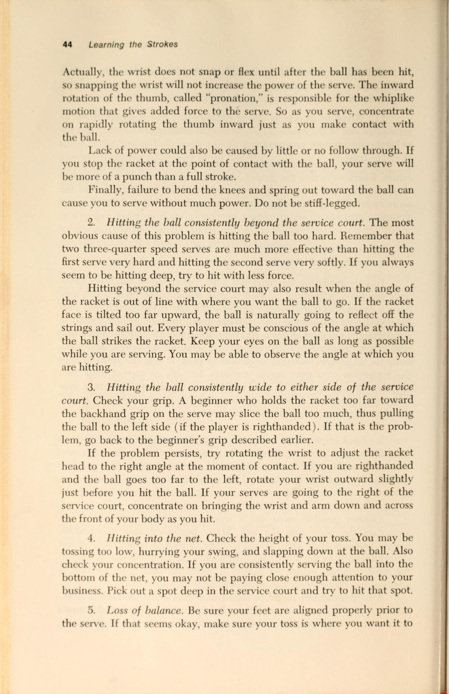
cú trái tay (Cú trái tay (backhand)) là một trong những cú đánh khó thành thạo nhất đối với nhiều người chơi quần vợt. Có những nhà lý luận quần vợt đưa ra những lập luận chi tiết tại sao cú trái tay (Cú trái tay (backhand)) là một cú đánh tự nhiên hơn và dễ học hơn cú thuận tay (Cú thuận tay (forehand)). Các lập luận có vẻ ổn trên giấy tờ, nhưng trên sân đấu thì lại là một vấn đề khác. Những người từng chơi các môn thể thao khác đã từng tập ném, với, bắt, đẩy, đánh, v.v., nhưng hầu hết các động tác này đều ở phía thuận tay của cơ thể. Rất ít môn thể thao liên quan đến hành động ngang cơ thể cần thiết để Cú trái tay (Cú trái tay (backhand)). Tuy nhiên, mặc dù nó mới và khó đối với người mới bắt đầu và người ở trình độ trung cấp, nhưng đây là một cú đánh có thể học được và hơn nữa, có thể trở thành một vũ khí tấn công nhất quán để bổ sung vào kho cú đánh của bạn. Đây là cách thực hiện.
Tay cầm
Đặt vợt xuống sàn hoặc sân. Đưa tay xuống và nhặt nó lên sao cho các ngón tay của bạn cuộn tròn quanh phần đế của tay cầm. Ngón tay út của bạn sẽ cách đáy báng cầm một phần inch. Nâng cổ tay lên và giữ vợt trước mặt sao cho bạn có thể nhìn xuyên qua dây (Hình 39). Không di chuyển cổ tay, hãy xoay vợt trong tay bạn một phần tư vòng theo một trong hai hướng. Bây giờ bạn đang nhìn vào mép đầu vợt (Hình 40). Thả vợt xuống ngang eo và điều chỉnh ngón tay để có cảm giác thoải mái, di chuyển cổ tay nhẹ về phía sau cán vợt (Hình 41). Hãy tưởng tượng ngón tay cái của bạn có mặt trên, mặt dưới, mặt ngoài và mặt trong. Phần bên trong của ngón tay cái của bạn phải tiếp xúc với mặt sau, phần phẳng của cán vợt (Hình 42). Có một số cách để ngón tay cái có thể được căn chỉnh dọc theo phần đó của cán vợt, nhưng điều cần thiết là phần bên trong phải tiếp xúc với vợt. Trong một thời điểm, vị trí của ngón tay cái có thể thay đổi, nhưng phần chạm vào báng cầm thì không. Cách cầm vợt bạn đang cầm là kiểu cầm Eastern Cú trái tay (backhand).
Nhiều người mới bắt đầu muốn cầm vợt bằng phần dưới của ngón cái tiếp xúc với cán vợt (Hình 43). Phương pháp cầm trái tay này phổ biến vì có sự hỗ trợ phía sau vợt, nhưng nó có lẽ là nguyên nhân quan trọng nhất khiến một số người chơi không bao giờ phát triển được Cú trái tay (Cú trái tay (backhand)) tay mạnh. Tay cầm phẳng của ngón tay cái rất phù hợp để thực hiện những cú đánh nhỏ vô hại qua lưới, nhưng không có gì hơn thế. Thật là khủng khiếp đối với những cú đánh thấp, nó gây khó khăn cho việc kiểm soát và hạn chế người chơi phát triển cú trái tay (Cú trái tay (backhand)) vượt quá trình độ mới bắt đầu.
Hình 39 (trái). Giữ vợt lên và nhìn qua các dây.
Hình 40 (phải). Xoay vợt một phần tư vòng mà không di chuyển cổ tay để bạn nhìn vào mép vợt.
|
-
.
/* nf
-
.
’.
tôi
~~
. » -*
»
* * eae od.
giới thiệu ¥
Sete
Hình 41 (ở trên). Cổ tay của bạn
phải ở phía sau đầu cán vợt một chút.
Hình 42. Bức tranh này _ minh họa-
quy định rằng phần bên trong của ngón tay cái phải tiếp xúc với cán vợt. Ngón tay cái có thể bị uốn cong như ở đây hoặc duỗi dọc theo mặt sau của báng cầm.
Đánh lùi
Khi bạn nhìn thấy bóng đến phía trái tay của mình, hãy lấy lại vợt càng sớm càng tốt. Vợt phải ở vị trí sẵn sàng trước khi đánh, vì vậy bàn tay không cầm vợt của bạn sẽ ôm vợt ở cổ họng. Sử dụng tay đó để xoay vợt khi bạn chuyển sang cách cầm vợt trái tay. Để tay trái (nếu bạn thuận tay phải) trên cổ vợt trong toàn bộ quá trình vung vợt ra sau. Kéo vợt về phía sau bằng tay trái sẽ giữ mọi thứ trong mặt phẳng thích hợp để có một cú vung vợt mượt mà và bàn tay sẽ ở đó để hỗ trợ thêm cho bạn khi bạn bắt đầu chuyển động về phía trước.
Khi bạn đưa vợt ra sau, hãy xoay vai về phía sau đủ xa để đối thủ có thể nhìn thấy lưng bạn. Vợt sẽ quay trở lại trong một
Hình 43. Không bao giờ đặt phần dưới cùng của ngón tay cái tiếp xúc với báng cầm. Hình ảnh này cho thấy cách không cầm vợt ở bên trái tay.
đường thẳng song song với sân hoặc theo hình vòng cung hơi hướng lên trên. Nó phải được đưa trở lại ngang eo và nó phải hướng vào hàng rào phía sau bạn (Hình 44). Giống như cú thuận tay, nếu một người đứng trước mặt bạn có thể nhìn thấy vợt phía sau cơ thể bạn thì có lẽ bạn đang thực hiện cú vung vợt ra sau quá lớn. Học cách thực hiện cú Vung vợt ra sau (lấy đà) khi bạn di chuyển để đánh bóng. Đừng đợi đến giây cuối cùng để chuẩn bị. tôi
Vị trí của bàn chân
Trước khi đánh, bạn phải quay người sao cho vai phải hướng về hướng muốn đánh. Ở phía bên trái tay, bàn chân trái của bạn phải được đặt trước, sau đó hai chân của bạn lại tách ra một cách thoải mái nhưng rộng hơn chiều rộng của vai. Cong đầu gối của bạn một chút. Bàn chân gần lưới hơn có thể hướng về phía đường biên hoặc có thể ở góc 45 độ so với đường biên theo hướng của lưới. Để tăng thêm sức mạnh, hãy bước một bước nhỏ về phía trước bằng chân phải ngay trước khi đánh.
Dồn trọng lượng của bạn vào cú đánh khi bạn vung gậy. Nếu trọng lượng của bạn dồn vào chân sau, hãy dịch chuyển về phía trước để trọng lượng ở chân gần lưới hơn khi bạn đánh. Vai phải sẽ là chỉ số chính cho biết cân nặng của bạn ở đâu. Nếu vai hướng lên, trọng lượng của bạn dồn vào chân sau; nếu vai hạ xuống hoặc ở tư thế ngang bằng, trọng lượng của bạn sẽ dồn về phía trước.
Hình 44. Trong cú Vung vợt ra sau (lấy đà), hướng vợt vào tường hoặc hàng rào phía sau sân.
Bản thân cú đánh
Xoay theo quỹ đạo song song với mặt đất. Sử dụng tay không cầm vợt để đẩy vợt từ vị trí vung vợt về phía trước. Dẫn đầu cú đánh bằng đầu vợt, không phải cổ tay hoặc khuỷu tay. Nếu bạn sử dụng cách cầm vợt được mô tả trước đó và vung vợt theo quỹ đạo song song, vợt của bạn sẽ tạo ra một chút xoáy xuống cho cú đánh của bạn. Xoáy lên ở phía trái tay có hiệu quả, nhưng nó là một kỹ thuật chỉ được học sau khi bạn đã thành thạo cú trái tay (Cú trái tay (backhand)) thông thường. Khi bạn vung gậy, hãy xoay vai theo hướng bạn muốn đánh. Vòng quay sẽ cung cấp cho bạn thêm sức mạnh.
Tiếp xúc với bóng tại một điểm thậm chí ở phía trước hoặc trong bàn chân gần lưới hơn (Hình 45). Đánh bóng ở đó sẽ giúp bạn sử dụng tốc độ do người chơi khác cung cấp và sẽ giảm bớt căng thẳng đặt lên cẳng tay khi bạn đánh. Bằng cách đánh bóng trước khi nó ngang bằng với bạn, bạn có thể đánh mạnh hơn nhưng sử dụng ít năng lượng hơn. Giữ khuỷu tay hướng xuống và cách cơ thể vài inch khi bạn vung gậy. Việc kéo dài nó sẽ dẫn đến mất lực và việc nâng nó lên sẽ khiến bạn đánh bóng. Thực hiện theo thứ tự đó, qua và lên trên. Hãy nghĩ đến việc vươn tay ra và chạm vào lưới bằng mu bàn tay cầm vợt của bạn. Khi bạn đã tiến xa nhất có thể về phía lưới, hãy đưa vợt ngang qua phía trước của bạn.
Hình 45. Dựa vào quả bóng và s —"tiếp xúc với quả bóng trước
nó sẽ trả thù cho bạn.
hướng lên trên, Kết thúc cú đánh với vợt cao về phía bên phải (Hình 46).
Cú trái tay bằng hai tay
cú trái tay (Cú trái tay (backhand)) bằng hai tay đã trở thành một cú đánh phổ biến và hiệu quả đối với nhiều người chơi. Nó có ưu điểm là mang lại cho bạn thêm sức mạnh, cú vung vợt được kiểm soát tốt hơn và vị trí vợt tốt hơn để đánh với Xoáy lên. Nhược điểm của nó là bạn có thể không đạt được xa ở những cú đánh rộng như với cú trái tay (Cú trái tay (backhand)) truyền thống. Nó cũng có thể cản trở bạn phát triển sức mạnh ở cánh tay.
Cách cầm vợt của tay phải cũng giống như cách cầm vợt trái tay bằng một tay. Tay trái cũng được đặt trên báng cầm ngay phía trên và tiếp xúc với tay phải. Cách cầm vợt bên trái phải tương tự như cách cầm vợt thuận tay kiểu phương Đông. Cả hai tay phải được đặt trên cán vợt khi động tác Vung vợt ra sau (lấy đà) bắt đầu. Vị trí của bàn chân phải giống như các cú trái tay (Cú trái tay (backhand)) khác, nhưng một số người chơi sử dụng tư thế cởi mở hơn với hai-
Hình 46. Tiếp tục bằng cách vươn tay ra, ngang qua và hướng lên trên theo thứ tự đó.
kiểu thuận tay, tức là bàn chân phải không đưa ra xa như bình thường.
Khi bạn bắt đầu vung về phía trước, hãy để tay phải thực hiện hầu hết công việc. Tay trái ở đó để hỗ trợ và kiểm soát cổ tay thêm. Việc xoay vai rất dễ dàng vì bàn tay và cánh tay kéo chúng qua cú đánh. Tiếp xúc với bóng khi bóng chạm chân gần lưới hơn. Việc theo bóng cũng là điều tự nhiên vì vợt phải đi theo bất cứ nơi nào tay phải kéo nó. Với những cú đánh rất rộng, bạn có thể phải thả vợt bằng tay trái khi đánh.
Nếu bạn quyết định chuyển sang Trái tay một tay từ kiểu hai tay, việc thay đổi sẽ không khó khăn. Những điều cơ bản của cả hai nét đều giống nhau. Người chơi trong Hình 47, 48 và 49 được thể hiện sau khi thực hiện động tác Vung vợt ra sau (lấy đà), tiếp xúc với bóng và thực hiện cú đánh tiếp theo.
Tự học cách Cú trái tay (Cú trái tay (backhand))
Nhiều phương pháp được sử dụng để dạy bản thân về cú thuận tay cũng có thể được sử dụng với cú trái tay (Cú trái tay (backhand)). Những phương pháp này sẽ được liệt kê mà không có bất kỳ
Hình 47 (trái). Hướng vợt trực tiếp vào tường hoặc hàng rào phía sau, giữ vợt giống như người chơi này đang cầm vợt của cô ấy.
Hình 48 (phải). Hãy liên lạc ở phía trước.
nhận xét bổ sung và các kỹ thuật khác để phát triển cú trái tay (Cú trái tay (backhand)) cụ thể sẽ được đưa ra.
1. Thực hành rê bóng trên không và rê bóng trên sân hoặc sàn bằng cách cầm vợt trái tay.
2. Đánh dấu một khu vực trống trên sân bằng chữ X; lần lượt di chuyển đến từng điểm và thực hiện cú trái tay (Cú trái tay (backhand)).
3.
Luyện tập Cú trái tay (Cú trái tay (backhand)) tay trước gương.
4.
Thực hành thay đổi qua lại giữa cách cầm vợt trái tay và thuận tay.
5. Tập Cú trái tay (Cú trái tay (backhand)) vào tường.
6. Nhờ một người bạn ném bóng về phía trái tay của bạn.
i.
Chơi trò chơi ngắn (chỉ ở sân giao bóng) chỉ sử dụng trái tay.
8
. Chỉ tập Cú trái tay (Cú trái tay (backhand)) với một người bạn.
. Chỉ đánh những cú trái tay (Cú trái tay (backhand)) ở đường biên.
9
10.
Thực hành trái tay chỉ sử dụng một đường.
6 o
Thực hành các cú đánh tiếp cận trái tay.
Thực hành cú trái tay (Cú trái tay (backhand)) với một tấm che trên vợt.
12.
sca Hình 49. Đi xuyên qua, nếu đi ngang và đi lên. Việc cầm vợt bằng hai tay buộc bạn phải đi theo hướng đó.
13. Tập dựa vào tường, luân phiên Cú thuận tay (Cú thuận tay (forehand)) và trái tay. Bài tập chữ “V” này sẽ giúp bạn phát triển cả hai động tác và cũng sẽ giúp bạn học cách thay đổi cách cầm vợt một cách dễ dàng và nhanh chóng.
14. Gắn vật nặng 3 pound vào một sợi dây; buộc dây vào một cây gậy; cầm gậy, lòng bàn tay úp xuống bằng cả hai tay; và cuộn trọng lượng lên. Bài tập này sẽ tăng cường sức mạnh cho các ngón tay, cổ tay và cẳng tay của bạn, giúp bạn Cú trái tay (Cú trái tay (backhand)) dễ dàng hơn. Bài tập được thể hiện trong Hình 50.
15. Nhờ một người bạn ném bóng luân phiên về phía trái tay và thuận tay của bạn. Các quả bóng phải được ném đủ xa bạn để bạn phải chạy để thực hiện từng cú đánh. Khi bạn đánh một quả bóng, quả bóng tiếp theo sẽ được ném sang phía đối diện.
16. Thực hành Cú trái tay (Cú trái tay (backhand)) tay đẳng cự. Tại thời điểm có thể tiếp xúc với bóng ở phía trái tay, hãy đẩy vào một vật thể cố định trong ba khoảng thời gian mười giây mỗi ngày. Nghỉ ngơi ít nhất một phút giữa các lần tập luyện. Trong Hình 51, một người khác tạo ra lực cản tại điểm tiếp xúc. Bài tập này có thể được sử dụng cho tất cả các động tác.
Nhận biết và giải quyết vấn đề của chính bạn bằng cú trái tay (Cú trái tay (backhand))
1. Thiếu nguồn. Bạn có thể đánh bóng quá muộn. Tập trung vào việc đánh bóng khi nó đang bay lên và trước khi nó bay ngang tầm với bạn.
d —T oe vậy
_— —— Hình 50. Bài tập cuộn cổ tay sẽ tăng sức mạnh cho bất kỳ cú đánh nào.
Hình 51. Đẩy mạnh nhất có thể vào một vật thể bất động hoặc người khác. Sử dụng các cơ ở cánh tay thay vì chỉ dựa vào cú đánh với
cơ thể của bạn.
Đánh quá muộn sẽ gây căng thẳng cho cẳng tay và cổ tay, và thường gây ra cú trả bóng yếu. Để đánh bóng trước mặt bạn, hãy chuẩn bị sớm. Vào vị trí đưa vợt về phía sau, đặt chân trái lên và dùng tay đối diện để đẩy vợt về phía trước. Trọng lượng của bạn phải dồn vào bàn chân gần lưới hơn khi bạn đánh. Hãy chắc chắn thực hiện theo cú swing của bạn. Đấm trái tay sẽ dẫn đến cú đánh yếu giống như đấm thuận tay mà không theo ý muốn.
2. Đánh bóng lên và ra ngoài đường biên ngang. Đầu tiên, hãy kiểm tra cách cầm vợt của bạn để đảm bảo góc vợt sẽ cho phép bạn tạo ra một chút xoáy xuống vào quả bóng. Sau đó phân tích cú đánh của bạn để xem chuyển động của vợt có song song với Mặt sân hay không. Cong đầu gối của bạn và không đánh bóng quá mạnh. Cuối cùng, giữ vai gần với mức lưới hơn. Nếu nó được nhấc lên, rất có thể bạn sẽ nhấc được quả bóng lên.
3. Đánh quá xa về bên phải. Những nguyên nhân tương tự khiến bóng đi sang bên trái ở phía thuận tay cũng sẽ khiến bạn đánh sang bên phải ở phía trái tay. Hoặc là bạn không đưa chân phải đủ xa khi xoay người trước khi đánh, hoặc bạn vung chân và tiếp xúc với bóng quá sớm.
4. Đánh về phía bên trái sân. Đánh bóng muộn và tiếp xúc muộn đều gây ra vấn đề này. Tránh thực hiện động tác Vung vợt ra sau (lấy đà) quá dài. Một nguyên nhân khác có thể là do bạn bước quá xa bằng chân phải khi chuẩn bị đánh. Một bước chéo quá lớn có thể khiến bạn mất Trọng tâm cơ thể.
5. Sự không nhất quán chung. Giữ cổ tay cố định tại chỗ. Đừng để nó rơi hoặc rớt xuống khi bạn Cú trái tay (Cú trái tay (backhand)). Đầu vợt phải luôn được giữ cao hơn cổ tay. Nhớ nâng cổ tay lên và giữ vợt thật chặt. Hầu hết các chuyển động trái tay diễn ra ở khớp vai. Các khớp khác bị uốn cong quá nhiều có thể khiến bạn bắn ra mọi hướng.
Kỹ Thuật Bắt Volley: Làm Chủ Vùng Lưới
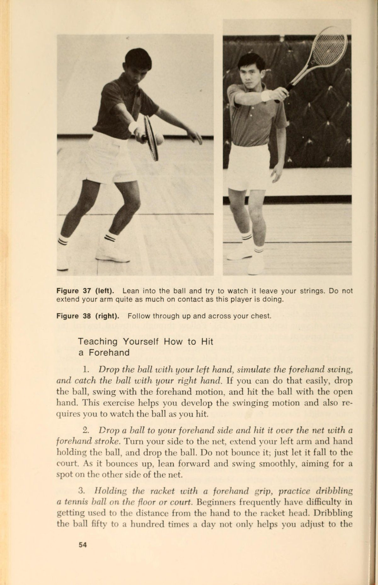
Cú vô lê là một cú đánh dễ học trong thực tế, nhưng nó có thể là một cú đánh khó thực hiện trong trận đấu. Bạn có thể tự dạy mình cú đánh này dễ dàng hơn một số cú đánh khác vì có một cách cầm bóng cho cú vô lê, bất kể chúng được đánh ở đâu và vì cú đánh không yêu cầu phải xoay người hoàn toàn. Đây có thể là một Điểm lợi thế (Điểm lợi thế (advantage)) vì cú swing càng ít chuyển động thì càng ít khả năng xảy ra lỗi. Tuy nhiên, cú đánh có thể gây ra vấn đề cho bạn trong trận đấu vì bạn có ít thời gian để phản ứng hơn so với những cú đánh trả về từ đường cuối sân.
Cú vô lê là một trong những cú đánh đầy thử thách và thú vị nhất trong quần vợt. Nếu bạn đang ở vị trí thực hiện cú vô lê, có thể bạn đang chơi quần vợt tấn công, môn này thú vị hơn quần vợt phòng thủ đối với nhiều người chơi.
Nếu bạn có thể đánh vô-lê, bạn có thể giành điểm, gây áp lực lên đối thủ và cắt đôi khoảng sân trên sân giống như một võ sĩ quyền anh cắt đôi võ đài cho đối thủ của mình.
Tay cầm
Đặt vợt xuống sàn hoặc sân. Đưa tay xuống và nhặt vợt lên, giữ vợt ở phần đế của tay cầm sao cho các ngón tay của bạn cuộn tròn quanh tay cầm. Giống như các loại tay cầm khác, ngón út của bạn phải cách đáy tay cầm khoảng nửa inch. Nghiêng cổ tay và giữ vợt trước mặt sao cho bạn có thể nhìn xuyên qua dây (Hình 52). Xoay vợt 90 độ theo một trong hai hướng mà không di chuyển cổ tay hoặc ngón tay của bạn. Bây giờ bạn đang nhìn vào mép đầu vợt (Hình 53).
Di chuyển các ngón tay của bạn để có được cảm giác cầm vợt chắc chắn, thoải mái mà không cần thay đổi góc cầm vợt. Cong khuỷu tay của bạn một chút và thả cánh tay của bạn để vợt vẫn ở phía trước hoặc bạn nhưng ở ngang ngực. Tay cầm bạn đang cầm (Hình 54) được gọi là tay cầm Continental và nó được sử dụng cho tất cả các cú vô lê—bên phải, bên trái, cao và thấp. Một số giáo viên cho phép học sinh của mình thay đổi cách cầm vợt cho đến khi cách cầm vợt kiểu Continental thoải mái. Cách cầm vợt này rất giống với cách cầm vợt trái tay kiểu phương Đông. Với cách cầm vợt Continental, khi bạn thực hiện cú vô lê ở phía trái tay, bạn sẽ cảm thấy tương đối thoải mái với cách cầm vợt. Ngón tay cái của bạn ở phía sau tay cầm vợt để hỗ trợ bạn nhiều. Những cú thuận tay (Cú thuận tay (forehand)) sẽ khiến bạn gặp nhiều vấn đề hơn và khiến bạn cảm thấy không thoải mái lúc đầu. Bạn sẽ quen với cảm giác này nên đừng bỏ cuộc. Lý do bạn không thể thay đổi cách cầm vợt là vì đánh đơn giản là bạn không có thời gian để thay đổi qua lại giữa các cách cầm vợt khi ở trên lưới. Vì bạn phải cầm vợt chỉ bằng một tay cầm, kinh nghiệm đã chứng minh rằng bạn có thể đánh một cú vô lê thuận tay hiệu quả hơn với cách cầm vợt gần trái tay (Continental) so với việc bạn có thể đánh một cú vô lê trái tay bằng cách cầm vợt thuận tay kiểu phương Đông. Nếu tất cả những điều đó nghe có vẻ khó hiểu, hãy quên lý do đó đi và chỉ cầm vợt như trong hình minh họa. Sau khi nó có tác dụng với bạn, lý do sẽ không còn quan trọng nữa.
Vị trí của bàn chân
Đầu tiên, bạn phải quyết định vị trí đứng để thực hiện cú vô lê. Với cú giao bóng và cú đánh nền, bạn đứng ở nơi bạn phải đứng, tức là ở bất cứ nơi nào bạn muốn giao bóng hoặc bất cứ nơi nào bóng được đánh về phía sân của bạn. Với cú vô lê, bạn có thể tự do hơn trong việc định vị vị trí của mình và vị trí của bạn sẽ phụ thuộc vào những gì đang xảy ra trong mỗi điểm. Sự tự do này – hay vấn đề, tùy thuộc vào cách bạn nhìn nhận nó – sẽ được thảo luận kỹ lưỡng hơn trong phần về chiến lược. Nếu bạn đang học cách đánh vô-lê, có lẽ tốt nhất bạn nên tập đứng cách lưới từ 6 đến 8 feet. Ở khoảng cách đó, bạn sẽ phải Tung bóng với một lực nào đó, nhưng bạn vẫn ở đủ gần lưới để có thể mắc một số lỗi về tốc độ hoặc hướng trong khi vẫn giữ bóng trong cuộc.
Bàn chân của bạn phải dang rộng hơn chiều rộng của vai và đặt chắc chắn để bạn có thể đẩy ra một góc theo hướng của lưới. Trọng lượng của bạn phải dồn về phía trước sao cho gót chân của bạn hầu như không tiếp xúc với sân, nếu có. Cong đầu gối của bạn đủ để có được cảm giác như đang cúi xuống. Bạn cũng nên hơi cúi người về phía trước ở thắt lưng. Khi bóng đến gần, bạn phải ở Tư thế sẵn sàng lao ra để đánh.
Nếu bóng đến bên phải của bạn, hãy sử dụng chân phải để xoay người và bước qua và về phía lưới một góc 45 độ bằng chân trái của bạn
Hình 52 (trái). Nhìn qua dây, cầm vợt như thế này.
Hình 53 (phải). Xoay vợt 90 độ trong tay để bạn nhìn vào mép vợt.
Hình 54. Thả cánh tay của bạn xuống, sử dụng cách cầm vợt 4 Continental vào Tư thế sẵn sàng > trên lưới. _*
(Hình 55). Tập trung vào việc di chuyển về phía trước thay vì di chuyển ngang dọc theo lưới hoặc xoay ngược lại. Nếu bóng đến bên trái của bạn, hãy xoay chân trái và bước qua vào bóng bằng chân phải (Hình 56)., Nếu bóng bay thẳng vào bạn, động tác bằng chân sẽ khác. Bạn có thể di chuyển theo một trong hai hướng, nhưng bạn phải trượt sang một bên đường đi của quả bóng. Bạn làm điều đó bằng cách đẩy ra bằng một chân và trượt chân kia ra xa một góc khoảng 45 độ so với lưới. Ví dụ: nếu bạn thuận tay phải và bóng bay thẳng về phía bạn, bạn có thể đẩy bóng bằng chân phải, bước một góc về phía lưới bằng chân trái. Điều đó sẽ giúp bạn có thể đánh bóng bằng cú vô lê thuận tay (Hình 57).
Đánh lùi
Động tác vung vợt ra sau cho cú vô lê ở hai bên là một chuyển động ngắn và hạn chế. Chuyển động bắt đầu từ Tư thế sẵn sàng khi bạn cầm vợt lên và ở phía trước mặt. Vợt được đặt ở cổ họng bằng một tay và hướng về phía đối thủ hoặc hơi hướng về phía trái tay của bạn. Khi bạn nhìn thấy quả bóng sắp tới, vợt sẽ được đưa trở lại một điểm không xa hơn một đường tưởng tượng ngay cả với bạn và song song với lưới. Nếu một người đứng ở phía đối diện với tay vợt của bạn, anh ta sẽ không thể nhìn thấy vợt được đưa về phía sau cơ thể bạn. Xoay vai của bạn theo hướng Vung vợt ra sau (lấy đà). Ý tưởng là thực hiện một cú vung vợt lùi ngắn, nhanh và có kiểm soát vì bạn không có thời gian để thực hiện một cú vung vợt hoàn toàn.
Bản thân cú đánh
Trong suốt chuyển động đánh vô-lê, hãy giữ cổ tay của bạn nghiêng sao cho vợt tạo thành một góc gần 90 độ với cẳng tay của bạn. Dẫn đầu cú đánh bằng đầu vợt. Xoay về phía trước từ vai và khuỷu tay, nhưng giữ cổ tay ở vị trí cố định. Tiếp xúc tốt với bóng ở phía trước cơ thể. Cố gắng đánh bóng khi nó đang bay lên. Trong một cú vô lê, điều cần thiết là tấn công bóng hơn là để nó bay ngang bằng hoặc phía sau bạn. Nếu bạn đã bước về phía trước, trọng lượng của bạn sẽ dồn vào chân gần lưới hơn. Vai gần lưới nên hạ xuống.
Hướng các cú vô lê của bạn sâu vào phần sân sau của đối thủ hoặc theo một góc để kéo anh ta ra khỏi sân. Hãy nhớ: vợt ra phía trước trong khi chờ đợi; trọng lượng về phía trước; vung vợt về phía sau ngắn; và đánh bóng trước khi nó đến với bạn. Thực hiện theo hướng mà bạn muốn đánh bóng.
Hình 55. Xoay người về phía trước bằng chân trái để thực hiện cú vô lê
phía thuận tay.
~
7
—
: Hình 57. Với những quả bóng đi thẳng Hình 56. Trong những cú vô lê trái tay, hãy thử với bạn, bước về phía trước một góc nhỏ để bước về phía trước vào bóng bằng chân thuận và đưa vợt lên bằng chân phải. để Vô-lê chặn.
Để cảnh giác hơn, nhiều người chơi cúi thấp người và bật bóng bằng chân khi họ mong đợi một cú sút sẽ trúng họ. Nếu cú đánh đến tầm thấp, đừng đứng thẳng và đặt vợt xuống để đánh cú vô lê. Cong đầu gối của bạn nhiều hơn và hạ thấp tầm mắt của bạn với quả bóng.
Góc của vợt sẽ giống như bất kỳ cú vô lê nào khác vì bạn đang uốn cong đầu gối thay vì uốn cong ở thắt lưng hoặc thả đầu vợt xuống. Một mục tiêu của cú vô lê là tránh vô lê lên bóng. Nếu bạn tung cú vô lê lên, đối thủ của bạn sẽ có thể đánh trả khi đánh trả.
Tay vợt trong Hình 58 và 59 được thể hiện ở Tư thế sẵn sàng, tiếp xúc với bóng và thực hiện cú vô lê.
Tự học cách đánh vô-lê
Có rất ít bài tập hoặc bài tập cho vô-lê có thể thực hiện một mình. Hầu hết bạn sẽ cần một người bạn ném hoặc đánh bóng cho bạn.
1. Luyện tập trước gương. Giống như bất kỳ cú đánh nào khác, bạn có thể hoàn thiện chuyển động vô lê của mình bằng cách quan sát cú vung vợt của mình. Hãy tìm kiếm từng thành phần một, sau đó quan sát bản thân bạn di chuyển qua toàn bộ động tác nhiều lần ở mỗi bên của cơ thể.
2. Tập bắt bóng ném bằng vợt. Nhờ một người bạn ném cho bạn, và thay vì đánh bóng, bạn chỉ cần đưa vợt ra và “bắt” nó. Bóng thường sẽ bật ra khỏi vợt của bạn với một lực đủ mạnh để vượt qua lưới. Nếu không, ít nhất bạn cũng sẽ quen với khoảng cách giữa tay và đầu vợt. Bài tập cũng sẽ giúp bạn có một khởi đầu tốt để đấm vào quả bóng thay vì vung vào nó.
3. Trả lại bóng đã ném bằng cú vô lê. Yêu cầu đối tác của bạn ném nhẹ nhàng về phía thuận tay, sau đó chuyển sang phía trái tay. Hãy chuyền các cú đánh ngược lại để tránh phải đuổi theo bóng. Sau khi bạn đã cảm thấy thoải mái khi đánh vào lưới, hãy yêu cầu người ném phối hợp các cú ném giữa bên thuận tay và bên trái tay.
4. Ném bóng từ vị trí gần hàng rào hoặc tường bao quanh sân. Để buộc bản thân thực hiện những cú vung vợt ngắn về phía sau, hãy đứng gần hàng rào hoặc tường và nhờ ai đó ném bóng về phía bạn. Nếu bạn thực hiện cú Vung vợt ra sau (lấy đà) quá lớn, vợt của bạn sẽ va vào hàng rào. Hãy rút ngắn cú swing nếu điều đó xảy ra.
5. Vô lê từ vị trí ở ô cửa hoặc cửa mở. Bài tập này buộc bạn phải bước về phía trước khi thực hiện cú vô lê. Nếu bạn không bước vào bóng, vợt của bạn sẽ đập vào hai bên cửa hoặc cổng.
Hình 58 (trái). Vị trí sẵn sàng trên lưới.
Hình 59 (phải). Tiếp xúc tốt với bóng ở phía trước cơ thể trong cú vô lê.
6. Cú vô lê về phía mục tiêu trên sân. Đặt hộp đựng bóng tennis hoặc vỏ vợt vào các điểm trên sân và hướng các cú vô lê của bạn đến những điểm đó. Thực hiện các cú vô lê Đánh chéo sân (Đánh chéo sân (cross-court)).
7. Vào tư thế đánh vô-lê, để đồng đội đánh bạn nhưng gọi bóng là “vào” hoặc “ra” mà không cần đánh và trước khi bóng nảy lên.
Nhiều người mới bắt đầu gặp khó khăn trong việc đánh giá liệu các cú đánh sẽ diễn ra trong sân hay ngoài sân. Bài tập này giúp bạn cải thiện khả năng phán đoán các cú đánh. Bạn sẽ cần một rổ bóng để thực hiện bài tập này một cách hiệu quả.
8. Đếm số cú vô lê liên tiếp mà bạn và một người bạn có thể đánh được. Bạn sẽ phải đạt trình độ trung cấp hoặc cao cấp trước khi có thể kiểm soát bóng đủ tốt để thực hiện bài tập này.
9. Vô-lê với hai người bạn luân phiên tung cú sút vào lưới bạn. Bài tập hai chọi một cho phép bạn đánh nhiều cú vô lê trong một khoảng thời gian ngắn. Xoay để mỗi người chơi có một lượt vào lưới.
10. Đứng ở sân giao bóng gần lưới và di chuyển tới lui nhanh nhất có thể từ đường biên đánh đơn đến đường giữa sân mười lần. Xoay theo chuyển động vô lê mỗi khi bạn chạm tới vạch. Cố gắng tăng số lần lặp lại mỗi lần bạn tập luyện. Đây là một bài tập điều hòa tốt.
ll. Đánh bóng vào tường hoặc lưới dội ngược. Đây không phải là bài tập dành cho người mới bắt đầu. Những người trung gian có thể giữ bóng trong cuộc đủ lâu để khiến cuộc tập trận trở nên đáng giá. }
12. Đứng ở một sân giao bóng gần lưới và bảo vệ khu vực đó bằng những cú vô lê. Đối tác luyện tập của bạn sẽ thả và đánh hoặc trả lại cú vô lê của bạn bằng những cú đánh cố gắng đánh vô-lê. Mục tiêu của bạn là đánh trả bất kỳ cú đánh nào nằm trong ranh giới được hình thành bởi đường giao bóng trung tâm và đường biên đánh đơn.
Nhận biết và giải quyết vấn đề của chính bạn với cú vô lê
1. Thiếu nguồn. Bạn có thể không giữ vợt đủ chặt. Trên lưới, bóng đến chỗ bạn nhanh hơn ở phần sân sau. Nếu bạn không cầm chặt, lực đánh có thể làm xoay vợt trong tay, dẫn đến cú vô lê yếu.
Những vấn đề tương tự gây ra tình trạng thiếu lực trong các cú đánh nền có thể khiến bạn đánh những cú vô lê không có lực. Những vấn đề này bao gồm việc không bước về phía trước để đánh, không gặp bóng khi bóng đang bay lên và ở phía trước bạn, và không theo kịp cú vung vợt. Ngoài ra, hãy xem xét khả năng bạn đang đứng quá xa lưới. Một số tốc độ bạn đưa bóng có thể bị ảnh hưởng bởi khoảng cách bạn đang cố gắng đánh.
2. Thực hiện cú vô lê (ngoài đường biên ngang). Vấn đề này sẽ không phổ biến với cú vô lê như các cú đánh khác. Nếu bạn đánh bóng ra ngoài, bạn có thể vung vợt thay vì đấm vào nó bằng một cú vung vợt lùi ngắn. Cách cầm vợt không đúng cũng có thể khiến bạn đánh lên và đánh ra ngoài, vì vậy hãy kiểm tra xem liệu bạn có đang cầm vợt theo kiểu cầm Continental ở cả bên thuận tay và bên trái tay hay không.
3. Đánh rộng sang hai bên sân. Đối với các cú đánh tiếp đất, nguyên nhân có thể là do đánh bóng quá sớm (điều đáng nghi ngờ đối với cú vô lê), đánh quá muộn (điều này có nhiều khả năng xảy ra hơn), không xoay vai khi chuẩn bị hoặc sử dụng quá nhiều cổ tay trong cú đánh của bạn.
4. Sự không nhất quán chung. Giữ đầu vợt hướng lên. Để nó rơi xuống dưới mức cổ tay sẽ khiến bạn đánh được nhiều bóng. Xem bóng. Nói thì dễ nhưng thực hiện được khi thời điểm đến mới khó. Cố gắng tập trung vào quả bóng đến tận dây vợt của bạn. Đừng cố gắng thực hiện mọi cú vô lê. Bạn sẽ mắc ít lỗi hơn nếu cố gắng chọn vị trí tốt ở cú vô lê đầu tiên và đưa bóng vượt qua đối thủ ở cú vô lê thứ hai.
Nhiều tay vợt thực hiện cú vô lê vì lẽ ra họ không nên thực hiện cú vô lê. Đọc phần về chiến lược để tìm hiểu khi nào bạn nên lên lưới.
Cú Đập Bóng Trên Đầu (Overhead Smash)
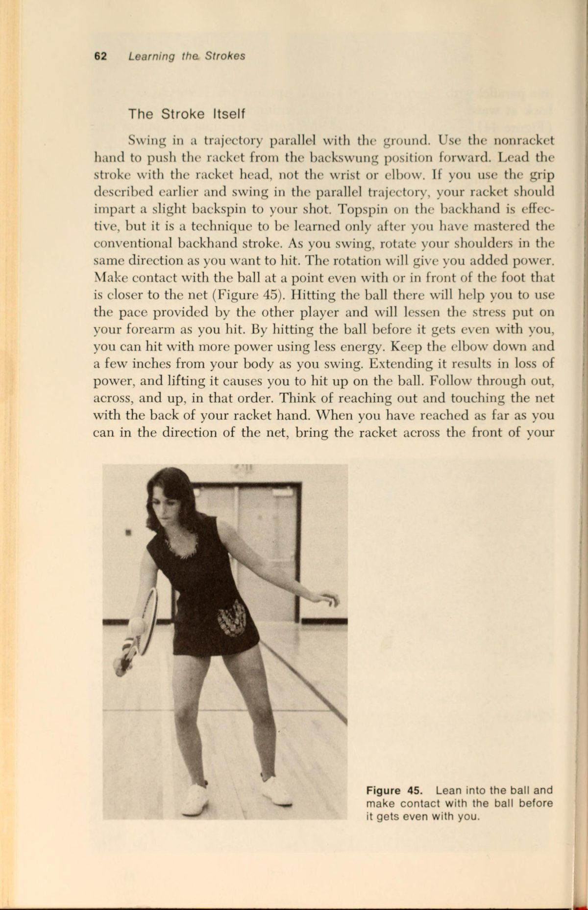
Nếu bạn đang chờ đợi để đọc về một cú đánh trong quần vợt mà trong đó bạn thực sự có thể tung ra và đánh mạnh như bạn muốn vào mọi lúc, thì Cú đập trên đầu (smash) trên cao không phải vậy. Ít nhất là không phải hầu hết thời gian. Một trong những vấn đề mà người mới bắt đầu và người mới bắt đầu gặp phải với Cú đập trên đầu (smash) trên cao là biết khi nào nên thực hiện cú ném xa và khi nào nên chọn vị trí thay vì dùng lực. Nguyên tắc cần tuân theo được xác định bởi vị trí của bạn trên sân khi đối thủ của bạn thực hiện một cú lốp bóng (Cú lốp bóng (lob)). Nếu bóng sắp được đập từ một vị trí ở phần sân trước (từ đường phát bóng về phía trước), bạn có thể thử thực hiện cú đẩy bóng, giả sử rằng bạn có khả năng đưa bóng ra xa. Nhưng nếu bạn đang chuẩn bị trả một cú lốp bóng (Cú lốp bóng (lob)) và bạn đang đứng gần hoặc phía sau đường biên ngang của mình thì hiếm khi nên thực hiện một Cú đập trên đầu (smash) bóng từ xa. Những lý do rất dễ hiểu, nhưng một số người chơi không thể cưỡng lại sự cám dỗ để tung ra mọi cú lốp bóng (Cú lốp bóng (lob)) về phía họ, ngay cả khi tỷ lệ cú đánh thành công là rất nhỏ. Xét từ đường cơ bản, rất khó để có được cú ghi điểm trực tiếp hoàn toàn. Khoảng cách quá xa, góc quay kém do khoảng cách giữa bạn và người chơi khác ngày càng tăng và đối thủ có quá nhiều thời gian để phản ứng với cú đánh của bạn. Vì vậy, thay vì đánh một Cú đập trên đầu (smash) Cộng dồn lực, bạn nên đánh một cú từ trên cao và sâu vào một điểm sơ hở hoặc vào điểm yếu của đối thủ. Nếu cú đánh của bạn trúng đích tốt, cú đánh tiếp theo có thể sẽ thắng.
Trước khi xem xét cơ chế thực hiện Cú đập trên đầu (smash), có một quyết định khác phải được đưa ra trước khi cú đánh được thực hiện. Vấn đề đó là nên đánh đầu trước hay sau khi bóng nảy lên. Trừ khi bạn là người chơi nâng cao, hãy thử phương pháp này để đưa ra quyết định. Nếu bạn có thể cho phép bóng nảy lên mà không lùi quá hai hoặc ba bước về phía đường biên trước khi đánh, thì bóng sẽ được đánh ở vị trí không nảy. Cơ hội để thực hiện một cú ném bóng sẽ nhỏ hơn, nhưng cú đánh sẽ an toàn hơn vì có nhiều thời gian hơn để chuẩn bị và vì cú nảy sẽ giảm thiểu các yếu tố như gió, vận tốc và độ xoáy. Nếu bạn thấy rằng bằng cách để bóng nảy lên, bạn sẽ phải lùi lại hơn hai hoặc ba bước về phía đường cuối sân, hãy đánh bóng trước khi nó nảy lên. Có nguy cơ trượt cú đánh cao hơn vì những biến số đã đề cập trước đó, nhưng tốt hơn là chấp nhận rủi ro đó hơn là phải lùi quá sâu để kiếm được lợi thế hiệu quả. Nếu có nghi ngờ về việc phải làm gì thì cú đánh nên được thực hiện sau khi bóng đã nảy lên. Sự thiếu quyết đoán có thể làm hỏng bất kỳ cú đánh nào trong quần vợt, The Grip
Cách cầm vợt được sử dụng cho Cú đập trên đầu (smash) bóng qua đầu phải tương tự như kiểu cầm vợt trái tay hoặc kiểu cầm vợt Continental. Đánh một Cú đập trên đầu (smash) với kiểu cầm như vậy ban đầu sẽ cảm thấy rất khó chịu, nhưng bạn phải làm theo cách đó để phát triển một Cú đập trên đầu (smash) hiệu quả. Vì cách cầm vợt giống như cách cầm vợt được sử dụng để Cú trái tay (Cú trái tay (backhand)) và vì phần trên cao được đánh vào phía thuận tay của cơ thể nên một số điều chỉnh phải được thực hiện khi bóng được đánh. Việc điều chỉnh chính được thực hiện bằng cách xoay cổ tay ra ngoài khi bạn đánh bóng. Xoay ra ngoài có nghĩa là khi nhìn vào mu bàn tay, ngón cái sẽ rời xa bạn, hướng xuống và ngang. Kiểu chuyển động phát âm này cho phép bạn đánh Cú đánh phẳng (với ít độ xoáy) và với lực mạnh hơn so với khi bạn thực hiện các cú đánh nền. Cú búng vào trong và hướng xuống của ngón cái và cẳng tay tạo thêm lực kéo cho quả bóng. Nếu bạn không xoay cổ tay theo cách này, cú đánh của bạn sẽ có độ xoáy quá lớn và có thể đi quá xa về phía bên trái của người thuận tay phải. Bóng cũng sẽ được đánh với vận tốc thấp hơn, điều này đặc biệt không tốt cho Cú đập trên đầu (smash) bóng.
Vị trí của bàn chân
Không Bước chân (Bước chân (footwork)) trong quá trình chuẩn bị cho cú đánh từ trên cao là một trong những lỗi phổ biến nhất mà người chơi ở mọi cấp độ mắc phải. Có quá nhiều người nhìn thấy một cú lốp bóng (Cú lốp bóng (lob)) tới, cố định vào một vị trí cố định bằng cả hai chân rồi cố gắng đánh. Vấn đề là vì các cú lốp bóng (Cú lốp bóng (lob)) ở trên không lâu hơn các cú đánh khác, nên tất cả các biến số như vận tốc, độ xoáy và quỹ đạo có thể thay đổi trong quá trình bóng bay. Nếu bạn thiết lập quá sớm, bạn có thể đọc sai một số biến số và không điều chỉnh cho phù hợp. Thực hiện một số bước ngắn, nửa và một phần tư trong khi chuẩn bị cho chi phí chung. Chuyển động chân nhiều sẽ giúp bạn ở vị trí hoàn hảo để đánh khi thời cơ đến.
Nếu bạn phải lùi lại để đánh một đòn trên đầu, hãy rút lui trong tư thế cơ thể nghiêng sang một bên. Xoay vai trái của bạn về phía lưới (nếu bạn là người thuận tay phải), lùi nhanh về phía sau và đặt chân phải lên. Khi đánh, bạn vẫn sẽ đẩy chân phải ra và chuyển trọng lượng của mình về phía chân trái. Nếu bàn chân của bạn song song với lưới khi đánh, bạn không thể chuyển trọng lượng của mình về phía trước. Như vậy khi vung chân phải sẽ ở xa lưới còn chân trái sẽ ở gần lưới hơn.
Đánh lùi
Đưa vợt thẳng lên phía trước cơ thể bạn đến vị trí phía sau đầu khi bạn chuẩn bị đánh. Nếu bạn thực hiện một cú vung vợt hoàn toàn, bạn sẽ thả vợt xuống và đưa nó lên phía sau lưng theo chuyển động giống như con lắc. Bằng cách loại bỏ toàn bộ cú xoay, bạn có thể giảm thiểu sai sót. Nếu vị trí của bạn trên sân đủ tốt, bạn vẫn phải có đủ lực để thực hiện cú đánh đi hoặc đánh vào vị trí mạnh. Động tác Vung vợt ra sau (lấy đà) hoàn toàn có thể mang lại cho bạn chuyển động mạnh mẽ hơn, nhưng nó sẽ kém hiệu quả và kém chính xác hơn so với động tác Vung vợt ra sau (lấy đà) hạn chế. Khi bạn đưa vợt ra sau đầu, hãy chỉ vào quả bóng bằng tay đối diện.
Việc chỉ vào quả bóng có thể cải thiện Sự tập trung của bạn và nó sẽ giúp bạn nhận thức rõ hơn về vị trí của mình so với quả bóng. Nếu bạn đang chỉ vào quả bóng, bạn cũng có thể tiếp xúc tại điểm bạn đang chỉ. Bạn muốn làm điều đó vì điểm tiếp xúc sẽ ở phía trước bạn, buộc bạn phải chuyển trọng lượng của mình vào quả bóng.
Bản thân cú đánh
Chuyển động đập bóng tương tự như một cú giao bóng mạnh. Bạn đã có sẵn vợt phía sau đầu, vì vậy hãy đưa nó về phía trước như thể bạn đang ném vợt qua lưới. Khi bạn vung gậy, hãy đảm bảo rằng trọng lượng của bạn hướng về phía trước và di chuyển vào quả bóng. Khi bạn đánh, trọng lượng của bạn phải dồn vào chân gần lưới hơn. Đánh bóng vào một điểm trước mặt (Hình 60). Khi bạn đánh, hãy xoay cổ tay ra ngoài và dùng ngón tay cái búng xuống càng nhiều càng tốt. Nếu bạn ở gần lưới, hãy đánh bóng với độ xoáy ít nhất có thể để đạt vận tốc tối đa. Nếu bạn đang ở giữa sân, hãy sử dụng một số cú xoáy để làm cho quả bóng cong xuống vào trong sân. Nếu bạn đang ở sân sau hoặc phía sau đường cuối sân, hãy tạo thêm độ xoáy cho cú đánh. Khoảng cách giữa bạn và lưới quá xa để một cú sút phẳng có hiệu quả. Thực hiện theo dõi xuyên suốt cơ thể của bạn, nhưng đừng lo lắng về việc thực hiện theo dõi đầy đủ như khi bạn giao bóng. Đưa vợt qua cú đánh một cách tự nhiên, sau đó đưa vợt về vị trí sẵn sàng cho cú đánh tiếp theo.
Tự học cách đánh một Cú đập trên đầu (smash) từ trên cao
Rất ít người chơi quần vợt dành thời gian để hoàn thiện cú đánh này trong luyện tập. Hầu hết mọi người đều đánh một vài cú trong thời gian khởi động trước trận đấu và sau đó tận dụng cơ hội để đánh những Cú đập trên đầu (smash) tốt trong trận đấu. Chỉ những vận động viên xuất sắc mới có đủ năng khiếu để vượt qua được thời gian tập luyện hạn chế như vậy.
Hầu hết chúng ta nên đạt được 25 đến 50 chi phí mỗi khi ra ngoài chơi. Nếu bạn không có thời gian để thực hiện kiểu thực hành đó, đừng mong đợi sẽ phát triển được chi phí cao.
Nếu bạn có một rổ bóng và có thể chơi cùng một người bạn, hãy thay phiên nhau ném bóng cho nhau. Đầu tiên hãy đứng rất gần lưới và Zz Hình 60. Tiếp xúc ở phía trước cơ thể của bạn trong Cú đập trên đầu (smash) trên cao.
nhờ bạn tập của bạn cho bạn ăn những cú lốp rất mềm, dễ dàng. Hãy dành thời gian, chuẩn bị và cảm nhận những Cú đập trên đầu (smash) sâu, sắc nét ở cự ly gần. Khi bạn cảm thấy thoải mái và Sự tự tin trên lưới, hãy dần dần di chuyển về vị trí sâu hơn trong sân. Ở giữa sân, bạn sẽ được thực hành đánh giá xem nên đánh bóng trên không hay sau khi bóng nảy lên, cũng như thực hiện các Cú đập trên đầu (smash) bóng ở khoảng cách xa hơn. Nếu đối tác của bạn đủ giỏi, hãy sử dụng một bài tập Cú lốp bóng (Cú lốp bóng (lob)) và đập bóng, trong đó bạn thực hiện các Cú đập trên đầu (smash) bóng và người chơi khác Cú lốp bóng (Cú lốp bóng (lob)) miễn là bạn có thể giữ bóng trong cuộc. Thay đổi vai trò sau khi mỗi người chơi đã đánh được 10 đến 15 Cú đập trên đầu (smash). Đồng thời tập đập bóng vào các vị trí khác nhau trên sân. Đặt vỏ vợt hoặc lon trên sân và cố gắng đánh chúng. Nếu bạn có thể làm được điều đó, hãy thử đập vào một điểm mà đối thủ của bạn để trống. Bài tập này sẽ buộc bạn phải đánh có hướng trong khi nhận thức được Vị trí trên sân của đối thủ.
Nhận biết và giải quyết vấn đề của riêng bạn
Vấn Đề Với Cú Đập Trên Đầu
1. Thiếu điện. Bạn phải có một mức độ sức mạnh nhất định để thực hiện được cú đánh này, vì vậy đừng mong đợi quá nhiều từ quá ít. Tuy nhiên, thời điểm tốt có thể bù đắp cho việc thiếu sức mạnh. Hãy chắc chắn rằng bạn đang ở Vị trí trên sân để thực hiện một Cú đập trên đầu (smash) mạnh. Rất ít người chơi có thể đánh những cú đánh từ trên cao mạnh mẽ từ sâu trong sân sau của họ. Bạn có thể đang cố gắng đánh quá nhiều cú đánh. Trọng lượng của bạn có hướng về phía trước khi bạn đánh không? Một lỗi phổ biến với cú đánh này là nghiêng người về phía sau khi đánh bóng. Nếu bạn đang làm điều đó, bạn không thể đánh với nhiều lực. Chỉ vào quả bóng bằng một tay và tiếp xúc ở nơi bạn chỉ. Đừng để bóng đi thẳng qua hoặc ra sau đầu bạn. Kiểm tra vị trí của bàn chân của bạn. Hãy nhớ rằng bàn chân phải ở tư thế so le để bạn có thể chuyển trọng lượng của mình vào quả bóng.
2. Đánh ra (ngoài đường cuối sân (baseline)). Bạn có thể không vung vợt xuống hoặc bạn không xoay cổ tay về phía trước và xuống khi đánh. Cổ tay cứng, không linh hoạt trong cú đánh này sẽ khiến vợt hướng ra ngoài hoặc hướng lên trên, và bóng sẽ đi theo hướng chỉ của Mặt vợt.
Đừng đánh quá mạnh. Hãy hài lòng với việc gài bẫy đối thủ của bạn bằng Cú đập trên đầu (smash) đầu tiên và đẩy đối thủ và bóng ra xa trong cú đánh tiếp theo.
3. Đánh vào lưới. Đây là một vấn đề thường gặp khác, ngay cả khi người đánh có lực. Nguyên nhân thông thường là do cổ tay bị gãy quá sớm. Việc tập luyện ở sân giữa và sân sau nên khắc phục lỗi này. Một phần của vấn đề chỉ là bạn đã quen với khoảng cách mà bạn phải làm việc.
4. Đánh rộng về bên trái (người thuận tay phải). Kiểm tra cách cầm vợt của bạn để xem liệu bạn có còn cầm vật gì đó gần với cách cầm vợt trái tay hay không. Nếu vậy, hãy tập trung xoay cổ tay ra ngoài khi đánh. Nếu bạn không làm điều này, bạn sẽ đánh với độ xoáy quá lớn và độ xoáy sẽ đưa bóng đi ngang và ra ngoài.
Đánh rộng sang bên phải không có nguyên nhân rõ ràng nào khác ngoài việc bạn rời mắt khỏi bóng trước khi đánh.
~5. Sự không nhất quán chung. Hãy thiết lập sớm. Di chuyển chân của bạn theo những bước ngắn, giật cục và đưa vợt ra sau đầu trong khi bạn di chuyển vào vị trí. Chờ đến giây cuối cùng để chuẩn bị sẽ gây ra sự thiếu nhất quán với bất kỳ cú đánh nào, đặc biệt là Cú đập trên đầu (smash) bóng qua đầu. Rút ngắn cú swing của bạn. Những cơn gió lớn làm tăng khả năng mắc lỗi ở tất cả các điểm trong chuyển động đu đưa. Giảm chuyển động và giảm lỗi. Quan sát bóng cho đến khi nó chạm vào dây vợt của bạn. Luyện tập. Ít nhất, hãy yêu cầu đối thủ cho bạn 5 đến 10 cú lốp bóng (Cú lốp bóng (lob)) trong thời gian khởi động trước trận đấu.
Cú Lốp Bóng (The Lob): Phòng Thủ & Phản Công
Giống như Cú đập trên đầu (smash) từ trên cao, cú lốp bóng (Cú lốp bóng (lob)) là một trong những cú đánh có giá trị nhất của trò chơi, nhưng là cú đánh mà người chơi hiếm khi dành thời gian để luyện tập và trau dồi. Cú đánh có hiệu quả như một vũ khí tấn công, một kỹ thuật phòng thủ và như một cách khiến đối thủ của bạn mất Trọng tâm cơ thể. cú lốp bóng (Cú lốp bóng (lob)) không phải là thứ bạn chỉ sử dụng khi gặp rắc rối. Nó nên được sử dụng bất cứ lúc nào nó sẽ giúp bạn giành được một điểm và điều đó thường xảy ra thường xuyên hơn nhiều so với những gì hầu hết người chơi nhận ra.
Tay cầm và động tác chân
Là một cú đánh tấn công, cú lốp bóng (Cú lốp bóng (lob)) có thể được sử dụng khi đối thủ của bạn đã di chuyển vào vị trí đánh vô-lê gần lưới, khi bạn trả bóng đánh đơn cho đối thủ đang theo sau quả giao bóng của anh ta vào lưới và đôi khi khi bạn Trả giao bóng dọc đường biên và qua đầu của tay vợt trên lưới trong nội dung đánh đôi. Trong tất cả các trường hợp này, cách cầm vợt bạn sử dụng phải giống với cách cầm bạn sử dụng cho cú thuận tay (Cú thuận tay (forehand)) hoặc trái tay.
Vị trí của bàn chân cũng giống nhau. cú lốp bóng (Cú lốp bóng (lob)) hiệu quả nhất khi đối thủ của bạn không mong đợi nó, vì vậy nó sẽ bắt đầu giống như bất kỳ cú đánh tiếp đất nào khác. Nếu bạn thay đổi cách cầm vợt hoặc vị trí của bàn chân so với cách bạn thường chuẩn bị cho cú đánh, đối thủ của bạn sẽ có thể đoán trước được những gì bạn sắp làm.
Cú ra sau và bản thân cú đánh
Cách bạn vung vợt khi Cú lốp bóng (Cú lốp bóng (lob)) sẽ khác với các cú đánh khác, đặc biệt là trong các cú lốp bóng (Cú lốp bóng (lob)) tấn công. Những người chơi nâng cao thường xuyên thực hiện được một cú lốp bóng (Cú lốp bóng (lob)) Xoáy lên, nhưng cú đánh quá phức tạp đối với người mới bắt đầu và người ở trình độ trung cấp. Nếu bạn định thực hiện một cú lốp bóng (Cú lốp bóng (lob)) tấn công bằng xoáy xuống, cú đánh sau của bạn phải ngắn hơn một chút so với các động tác đánh nền khác. Cú vung ngắn hơn được sử dụng không phải để làm cho cú đánh hiệu quả hơn mà đánh đơn giản là vì bạn có thể sẽ không có thời gian để thực hiện một cú đánh ngược hoàn toàn trước kiểu đánh cưỡng bức mà đối thủ của bạn sẽ đánh khi họ vào lưới. Mở Mặt vợt của bạn khi bạn đánh để cú đánh có xoáy xuống, nhưng hãy đợi càng lâu càng tốt để nghiêng Mặt vợt lên trên. Điểm tiếp xúc có thể lùi xa hơn so với các cú đánh khác vì bạn đang đánh trả một cú đánh cưỡng bức và bởi vì nếu bạn có thể đợi thêm một phần giây nữa, đối thủ của bạn sẽ còn bị đẩy xa hơn về phía lưới. Với Mặt vợt mở, bóng hướng lên trên và nhắm đủ cao để vượt qua vợt đang dang ra của đối thủ. Bóng phải được đánh đủ cao để không thể chạm được trước khi nảy và đủ thấp để không thể chạm tới sau khi nảy. Hướng bóng về phía trái tay của tay vợt trên lưới bất cứ khi nào có thể. Cú đánh tiếp theo cũng phải ngắn hơn một chút so với các cú đánh cơ bản khác. cú lốp bóng (Cú lốp bóng (lob)) được sử dụng phổ biến hơn là một cú đánh phòng thủ được sử dụng để giữ một điểm hơn là để giành được nó. Khi bạn thực hiện cú đánh này, có thể bạn đang chạy, mất vị trí, mất Trọng tâm cơ thể hoặc nói chung là đang gặp rắc rối. Kỹ thuật không thực sự quan trọng khi bạn đang cố gắng sống sót trong một cuộc biểu tình, nhưng không nên bỏ qua kỹ thuật. Đầu tiên, hãy chạy với vợt lùi lại nếu có thể. Bây giờ, hơn bất kỳ cú đánh nào khác, bạn không có thời gian để chuẩn bị cú đánh ở giây cuối cùng. Thứ hai, sử dụng chuyển động quét, nâng bằng cánh tay và vợt khi bạn đánh và đưa bóng lên cao. Cố gắng đưa bóng trên dây và “bắn bóng” qua lưới bằng xoáy xuống. Bạn muốn đưa bóng lên cao để có thời gian hồi phục và trở lại vị trí để thực hiện cú đánh tiếp theo. Nếu có thể, hãy Cú lốp bóng (Cú lốp bóng (lob)) về phía trái tay của đối thủ. Thực hiện theo đầy đủ - lên, ra và khắp cơ thể bạn, theo thứ tự đó. Việc theo dõi đầy đủ sẽ giúp bạn có được cảm giác nhẹ nhàng nhấc bóng lên không trung và đi sâu vào phần sân sau. Giữ vợt thật chặt trong suốt cú đánh. Bạn cần có tay cầm chắc chắn để đánh trả một cú đánh mạnh và có được độ chạm cần thiết cho một Cú đánh cảm giác (touch).
Dạy bản thân cách đánh Cú lốp bóng (Cú lốp bóng (lob))
Bạn cần có người ném hoặc đánh bóng cho bạn để phát triển cú đánh này. Việc thả bóng và ném bóng không mô phỏng các điều kiện của trò chơi. Lúc đầu, hãy ở trên hoặc ngay phía sau đường cuối sân và trả bóng bằng Cú lốp bóng (Cú lốp bóng (lob)) để có cảm giác về cú đánh cũng như làm quen với độ cao và khoảng cách cần thiết để cú đánh hiệu quả. Sau đó, thực hành cú lốp bóng (Cú lốp bóng (lob)) tấn công bằng cách cố gắng chọc thủng lưới đối thủ. Nếu bạn đánh ngắn, người chơi trên lưới có thể thực hành Cú đập trên đầu (smash) trên cao. Ở đó bạn có một bài tập ba cú đánh: (1) tay vợt lưới đánh một cú sút sâu, ép buộc; (2) bạn trả về bằng một cú lốp bóng (Cú lốp bóng (lob)); (3) nếu cú lốp bóng (Cú lốp bóng (lob)) ngắn, trận đấu Kết thúc cú đánh bằng một Cú đập trên đầu (smash) bóng; nếu cú lốp bóng (Cú lốp bóng (lob)) của bạn xóa sạch được người chơi trên lưới, cuộc tập trận sẽ bắt đầu lại. Sau khi bạn đã quen với cảm giác và quỹ đạo của cú đánh, hãy đặt bóng đến các điểm khác nhau trên sân hoặc về phía trái tay của đối thủ. Giai đoạn cuối cùng là học cách đánh bóng khi chạy. Yêu cầu đối tác ném bóng luân phiên vào từng góc của sân sau của bạn. Lấy bóng đầu tiên bằng thuận tay, đánh cao và sâu, sau đó tiến về góc đối diện của sân sau để đánh bóng tiếp theo bằng cú lốp bóng (Cú lốp bóng (lob)) trái tay. Bài tập này sẽ cải thiện tình trạng thể chất cũng như cú lốp bóng (Cú lốp bóng (lob)) của bạn.
Cuối cùng, hãy sử dụng các tình huống trong trận đấu và trận đấu để luyện tập Cú lốp bóng (Cú lốp bóng (lob)). Nếu bạn đang chơi một trận đấu không chính thức, hãy sử dụng cú lốp bóng (Cú lốp bóng (lob)) thường xuyên hơn bình thường, ngay cả khi một cú đánh nền có thể phù hợp hơn. Mất một vài điểm trong các trận giao hữu vì mục đích luyện tập có thể dẫn đến việc giành điểm trong một giải đấu.
Nhận biết và giải quyết vấn đề của chính bạn với Thùy
1. Đánh ra (ngoài đường cuối sân (baseline)). Hãy xem xét gió. Lobbing với gió sau lưng là an toàn vì không tạo cơ hội cho đối thủ thực hiện một Cú đập trên đầu (smash) bóng, nhưng bóng có thể dễ dàng bị gió cuốn đi. Đôi khi các luồng gió phía trên hàng rào xung quanh sân mạnh hơn so với mặt đất. Những gì có vẻ giống như một cú đánh được đặt đúng chỗ có thể thành công khi nó bay lên cao hơn.
Bạn cũng có thể đánh quá mạnh hoặc quá sớm. cú lốp bóng (Cú lốp bóng (lob)) là một trong những Cú đánh cảm giác (touch) nhất trong trò chơi. Nếu bạn dồn quá nhiều trọng lượng, cánh tay hoặc cổ tay vào chuyển động, bạn sẽ mất kiểm soát. Đợi cho đến khi bóng ngang bằng với bạn để tiếp xúc. Hãy chắc chắn để tạo ra xoáy xuống vào quả bóng; điều đó sẽ làm cho nó chạy chậm lại trong không khí thay vì di chuyển ra ngoài đường cuối sân (baseline). Hãy cho mình chỗ để Cú lốp bóng (Cú lốp bóng (lob)). Nếu bạn đang phòng thủ, hãy chơi phía sau đường cuối sân hai hoặc ba bước. Điều đó sẽ giúp bạn có nhiều thời gian hơn để phản ứng và có nhiều không gian hơn để làm việc khi bạn quay lại.
2. Đánh quá ngắn. Một cú lốp bóng (Cú lốp bóng (lob)) ngắn là một cú đánh đáng xấu hổ vì đối thủ của bạn có thể sẽ cản phá nó bằng một Cú đập trên đầu (smash) bóng bắt mắt. Hãy cẩn thận về việc lao vào gió. Có vẻ như những cú lốp bóng (Cú lốp bóng (lob)) tốt có thể bị gió làm chậm đủ để rơi thẳng vào Cú đập trên đầu (smash) từ trên cao của đối thủ. Hãy giữ chặt vợt của bạn. Đừng để lực của bóng làm rung vợt trong tay và gây ra lực đánh yếu. Thực hiện theo các Cú lốp bóng (Cú lốp bóng (lob)) phòng thủ. Việc đâm vào quả bóng có thể khiến bạn bật ra khỏi bóng. Đừng quên các nguyên tắc cơ bản của động tác chân và sự chuẩn bị. Vị trí vuông góc với lưới khiến bạn không thể chạm được bất cứ thứ gì ngoại trừ cánh tay vào bóng và cánh tay của bạn có thể không đủ.
3. Sự không nhất quán chung. Xem bóng. Đừng lãng phí năng lượng của bạn vào việc thực hiện cú đánh chỉ để đánh nó ra xa vì bạn đã không quan sát bóng vào hết dây vợt của mình. Kiểm tra góc của Mặt vợt khi bạn đánh. Bóng sẽ đi đến nơi Mặt vợt của bạn bảo nó đi, vì vậy hãy chú ý đến góc mà bóng phản xạ khỏi dây. Hướng Cú lốp bóng (Cú lốp bóng (lob)) của bạn đến một vị trí hoặc một khu vực của sân thay vì hài lòng với việc chỉ lấy lại bóng. Điều đó sẽ giúp bạn tập trung vào cú đánh. Hãy sử dụng cú đánh thường xuyên hơn hiện tại. Bạn không thể mong đợi sự nhất quán trong bất kỳ cú đánh nào trừ khi bạn đánh nó thường xuyên.
Cú Bỏ Nhỏ (The Drop Shot): Điểm Nhấn Tinh Tế
Nên sử dụng các cú đánh thả từ vị trí bên trong đường giao bóng. Những cú đánh được đánh từ xa hơn trong sân có vẻ tốt khi chúng thành công, nhưng tỷ lệ cược là những cú đánh đó rất thường xuyên thành công. Sử dụng cú đánh khi đối thủ của bạn ở quá xa vị trí phía sau đường cuối sân, khi anh ta ở bên kia sân hoặc khi anh ta đang chuẩn bị thực hiện một cú đánh cưỡng bức. Cú đánh có hiệu quả nhất khi đối phó với những đối thủ chậm chạp hoặc không có phong độ. Những người chậm có thể không lấy được bóng và những tay vợt trong tình trạng kém sẽ mệt mỏi nếu bạn bắt họ chạy đủ. Thực hiện cú sút thường xuyên đủ để khiến đối thủ của bạn nghĩ đến khả năng bạn có thể sử dụng cú đánh thường xuyên. Nếu họ phải lo lắng về khả năng đánh rơi, những cú đánh khác của bạn từ các vị trí tương tự trên sân có thể còn hiệu quả hơn nữa.
Chuẩn bị và thực hiện
Ngụy trang cú bỏ nhỏ. Có vẻ như bạn sắp đánh bất kỳ cú đánh nào khác mà bạn có thể sử dụng từ sân trước. Điều này có nghĩa là không được vung vợt ra sau quá mức, không bị chậm trễ trong cú đánh, không được thay đổi động tác chân và không có sự khác biệt trên nét mặt. Giữ vợt chắc chắn và nhẹ nhàng trượt Mặt vợt bên dưới quả bóng khi bạn tiếp xúc. Các cú đánh được thực hiện sau khi nảy đòi hỏi phải có một cú đánh tiếp theo đầy đủ và mượt mà. Những cú ném bóng thả thường hiệu quả hơn nếu phần tiếp theo được viết tắt. Đặc biệt cẩn thận uốn cong đầu gối của bạn và đánh ra khỏi tư thế cúi xuống.
Thực hiện cú bỏ nhỏ (Cú bỏ nhỏ (drop shot)) (Cú bỏ nhỏ (drop shot)) sao cho bóng rơi theo hướng đi xuống khi đi qua lưới. Chỉ cần dọn lưới là có hiệu quả nhưng không thực sự cần thiết. Điều cần tránh là đánh bóng để nó đi quá xa trong mặt phẳng ngang sau khi nảy. Việc đánh bóng xoáy xuống phải làm cho bóng chạm vào sân và không di chuyển xa về phía đường cuối sân. Mong đợi đối thủ của bạn sẽ tiếp cận được bóng và trả lại nó. Nếu anh ta không đạt được, bạn vẫn giành được điểm; nếu anh ta làm vậy, bạn phải ở ngay trước mặt anh ta và gần lưới, sẵn sàng tung cú vô lê trả về cho người chiến thắng. Thực hiện các cú bỏ nhỏ vào các điểm liên tiếp có thể là một ý tưởng hay nếu đối thủ của bạn thực sự phải nỗ lực rất nhiều để giành được bóng trong lần trả bóng đầu tiên.
Tự học cách đánh cú bỏ nhỏ
Yêu cầu đối tác luyện tập của bạn thả và đánh các đường cuối sân (baseline) cho bạn trên lưới. Đầu tiên hãy cảm nhận về cảnh quay, sau đó mới tập trung vào hướng và vị trí. Chơi các trò chơi ngắn và các trò chơi thả bóng cũng có thể giúp bạn cải thiện cú đánh này. Các trò chơi ngắn được chơi với hai, ba hoặc bốn người sử dụng đường giao bóng làm ranh giới phía sau. Nếu có ba người thì chơi hai chọi một. Bất cứ điều gì đánh sâu hơn giữa sân đều bị loại.
Trò chơi thả bóng có thể được chơi với các đường được đánh dấu cách 6 feet và song song với lưới ở mỗi bên. Tất cả các cú đánh phải là cú bỏ nhỏ và tất cả phải rơi vào hoặc trong các đường được đánh dấu. Giữ số điểm như bạn làm trong một trận đấu thông thường.
Nhận biết và giải quyết vấn đề của chính bạn bằng cú bỏ nhỏ
1. Đánh quá sâu. Bạn có thể thực hiện cú xoay người quá nhiều hoặc thực hiện cú vô lê thả bóng. Đấm vào quả bóng và đưa vợt xuống dưới nó. Thiếu xoáy xuống sẽ khiến bóng nảy sâu hơn mức cần thiết.
Làm cho cú đánh di chuyển theo quỹ đạo có đường đi trông giống như một chiếc kẹp tóc chứ không giống như một cây cầu dành cho người đi bộ. Không sử dụng cú bỏ nhỏ khi có gió:
có nguy cơ bóng được chuyển về hướng đối phương là quá lớn. Đừng đứng quá gần lưới. Hãy cho mình khoảng trống để bắn.
2. Sự không nhất quán chung. Giữ vợt chắc chắn để cảm nhận cú đánh. Bạn muốn “bé” bóng qua lưới nhưng bạn phải cầm vợt thật chặt để tung ra cú đánh chính xác như thế này. Cúi xuống với quả bóng trước khi bạn đánh và khi bạn đánh. Đứng thẳng và thả đầu vợt xuống để đánh cú này hoặc bất kỳ cú đánh nào khác sẽ gây ra vấn đề.
3. Điện báo cảnh quay. Hỏi đối tác luyện tập của bạn xem anh ấy hoặc cô ấy có biết khi nào bạn sẽ đánh rơi không. Nếu vậy, hãy cố gắng xác định phong cách bạn thể hiện trước khi chụp và tìm cách loại bỏ chúng.
Trong phần này, bảy cú đánh cơ bản đã được thảo luận: giao bóng, thuận tay, trái tay, vô lê, đập qua đầu, Cú lốp bóng (Cú lốp bóng (lob)) và đánh rơi. Có một số cảnh quay chuyên biệt khác sẽ không được thảo luận. Cú giao bóng xoắn của Mỹ, cú Vô-lê lốp và cú vô lê nửa bóng là những ví dụ. Những cú đánh này và những cú đánh khác chủ yếu được sử dụng bởi những người chơi nâng cao đã thành thạo các cú đánh cơ bản. Những người chơi mới bắt đầu và trung cấp có lẽ tốt hơn hết là không nên bị quá tải về mặt tinh thần với những lời giải thích chi tiết về những cú đánh mà họ chưa sẵn sàng để áp dụng.
Phát triển chiến lược
Phát Triển Chiến Thuật: Làm Chủ Hình Học Sân Đấu
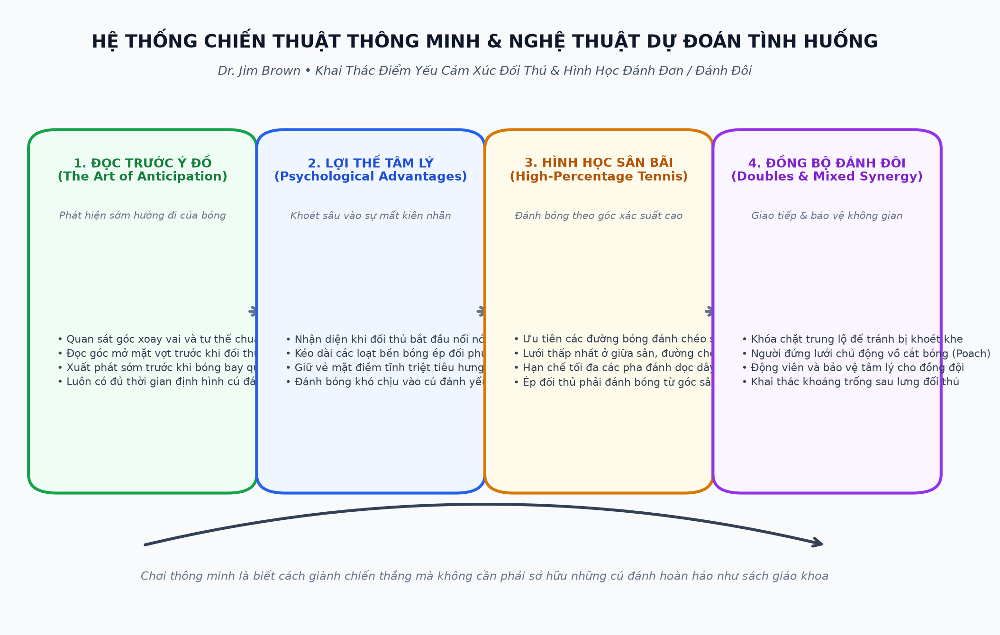
Nhập Môn Chiến Thuật: Chơi Với Điểm Mạnh Của Bản Thân
Chiến lược quần vợt là một kế hoạch hoặc phương pháp chung mà người chơi sử dụng để cố gắng đánh bại đối thủ. Chiến lược tốt nhất cho người mới bắt đầu là đánh những cú đánh đúng như ý muốn và giữ bóng trong cuộc. Cho đến khi bạn có thể hướng bóng đến các khu vực của sân và sử dụng nhiều cú đánh khác nhau một cách hiệu quả thì bạn không cần phải quá quan tâm đến chiến lược. Có một số chiến lược liên quan đến vị trí sân đấu dành cho người mới bắt đầu và điều đó sẽ được thảo luận trong phần này. Khi bạn bắt đầu có được mức độ kiểm soát hợp lý đối với các cú đánh của mình, bạn có thể nghĩ xa hơn việc chỉ đánh bóng. Nếu bạn đã ở trình độ đó, có lẽ bạn đã vượt qua trình độ sơ cấp và có thể tự gọi mình là một tay vợt ở trình độ trung cấp.
Hầu hết thông tin trong chương này dành cho người chơi trung cấp.
Một số tài liệu thậm chí sẽ áp dụng cho những người chơi nâng cao vì bất kỳ ai chơi trò chơi vượt quá cấp độ cơ bản đều phải tuân theo nhiều nguyên tắc chiến lược. Nếu bạn là người mới bắt đầu, hãy đọc phần này nhưng hãy coi những gợi ý đó là mục tiêu cần đạt được sau này trong cuộc đời chơi quần vợt của bạn. Sau đó có thể là tháng sau hoặc năm sau. Không có ranh giới phân chia rõ ràng giữa người mới bắt đầu nâng cao và người chơi trung cấp. Bạn sẽ dần dần phát triển thành các cấp độ chơi phức tạp hơn trước khi lên cấp. Sự tăng trưởng có thể được phân đoạn theo nghĩa một cú đánh có thể trở nên rất mạnh trong khi các phần khác trong trò chơi của bạn vẫn tương đối yếu. Biết cách thức và thời điểm sử dụng từng phần trong trò chơi của bạn một cách hiệu quả sẽ là thông tin hữu ích khi đến lúc bạn phát triển trò chơi của mình hơn nữa.
Chiến Thuật Đánh Đơn: Quản Lý Rủi Ro & Khai Thác Góc Sân
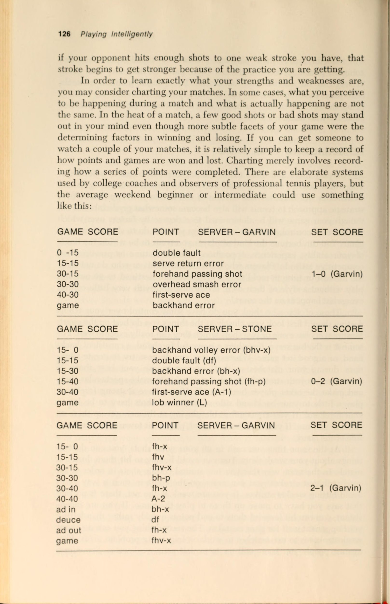
Chơi quần vợt có rủi ro thấp!
Bất kỳ cuộc thảo luận nào về việc phát triển chiến lược đánh đơn hoặc kế hoạch trò chơi đều phải bao gồm các nhận xét về quần vợt có tỷ lệ phần trăm, rủi ro thấp. Tỷ lệ quần vợt cũng có thể được gọi là quần vợt thông minh, quần vợt an toàn và nếu thực hiện đúng cách, quần vợt sẽ thắng. Khái niệm này có nghĩa là có một số cú đánh nhất định sẽ được thực hiện trong một số tình huống nhất định trong quá trình diễn ra một điểm hoặc trận đấu. Nếu những cú đánh này được đánh tốt, người đánh sẽ giành được điểm đó hoặc ở vị trí giành được điểm với tỷ lệ phần trăm cao trong thời gian đó. Điều đó không nhất thiết có nghĩa là những cú đánh theo tỷ lệ phần trăm này phải được thử 100%. Nếu bạn rơi vào một khuôn mẫu mà đối thủ của bạn có thể dự đoán được, anh ta sẽ dễ dàng đoán trước được cú đánh tiếp theo và tự mình giành được điểm. Đôi khi, đánh cú đánh không theo tỷ lệ phần trăm sẽ giành được điểm; nếu không, ít nhất nó sẽ giữ cho đối thủ trung thực. Nó cũng sẽ thêm một chút thú vị cho trò chơi.
Tuy nhiên, trong một khoảng thời gian dài, việc thực hiện cú đánh mà tình huống yêu cầu sẽ mang lại kết quả khả quan. Người chơi quần vợt đánh trúng cú đánh theo tỷ lệ phần trăm thông minh đang nói: “Tôi sẽ đặt cú đánh này vào đúng nơi mà cuốn sách nói rằng nó sẽ diễn ra, và bạn sẽ không thể làm được gì nhiều về điều đó”.
Chơi quần vợt ít rủi ro đòi hỏi người chơi phải có kỷ luật. Đầu tiên, bạn phải dành đủ thời gian luyện tập để phát triển những cú đánh hiệu quả nhất. Ví dụ: cú đánh tiếp cận tầm thấp, tầm thấp không tự động diễn ra. Cú đánh phải được luyện tập nhiều lần để bạn có thể sử dụng nó một cách hiệu quả trong một trận đấu. Tất cả những kiến thức trên thế giới về tỷ lệ phần trăm quần vợt sẽ không giúp ích gì cho bạn nếu bạn không thể đánh được cú đánh cần thiết khi cần. Nếu bạn không đủ kỷ luật để dành hàng giờ luyện tập cần thiết để hoàn thiện những cú đánh theo tỷ lệ phần trăm, bạn có thể sẽ thua. Thứ hai, chơi quần vợt ít rủi ro có thể làm mất đi niềm vui của trò chơi đối với một số người chơi. Một phần sức hấp dẫn của quần vợt là thử thách thực hiện một cú đánh ngoạn mục.
Hầu hết các bức ảnh có tỷ lệ phần trăm đều không ngoạn mục; chúng là những cú đánh được thiết kế để chuẩn bị cho một đối thủ tiêu diệt chậm. Một lần nữa, cần có kỷ luật để người chơi bỏ qua cơ hội đánh một cú đánh tuyệt vời để đánh một cú đánh hàng ngày.
Một số người không bao giờ có thể thực hiện sự điều chỉnh đó: họ được định sẵn để chơi một vài điểm, trận đấu hoặc thậm chí là các trận đấu ngoạn mục, nhưng lại thua nhiều hơn thắng trong thời gian dài. Thử thách đối với người chơi theo tỷ lệ phần trăm là giành chiến thắng chứ không phải thực hiện cú đánh.
1 Jim Brown, Quần vợt: Các chương trình Giảng dạy, Huấn luyện và Chỉ đạo (Englewood Cliffs, N.J.: Prentice-Hall, Inc., 1976), 26.
Quy tắc đầu tiên của tỷ lệ phần trăm quần vợt là giữ bóng trong cuộc. Nếu bạn có thể làm điều đó khi mới bắt đầu thì bạn đã chơi ở trình độ trí tuệ cao hơn một số người chơi có cú đánh tốt hơn bạn. Bất chấp lời khuyên của các giáo viên quần vợt trong nhiều thập kỷ, khoảng 75% tổng số điểm bị mất do mắc lỗi thay vì giành được nhờ những cú đánh tốt. Ý tưởng của trò chơi là đánh bóng qua lưới và trong giới hạn nhiều hơn đối thủ của bạn ở mỗi điểm. Bạn không cần phải đánh bóng mạnh hơn, thấp hơn, xoáy nhiều hơn hoặc ở góc sắc nét hơn; chỉ cần đánh nó thường xuyên hơn một chút so với đối thủ của bạn.
Việc giữ bóng trong cuộc đòi hỏi bạn phải giảm thiểu số lỗi không cần thiết. Có một điều như một lỗi cần thiết? Có thể xảy ra, ít nhất là ở khía cạnh một số lỗi do đối thủ ép buộc, người đặt bạn vào tình thế cố gắng thực hiện một cú đánh khó hoặc đánh một thiết lập dễ dàng. Những lỗi không cần thiết cần phải giảm bớt là loại bạn mắc lỗi mà không có lý do rõ ràng. Dưới đây là một số ví dụ: bạn thực hiện cú đánh nền vào lưới hoặc ra ngoài giới hạn trong khi đối thủ của bạn đang ở vị trí sân sau; bạn không thực hiện được quả giao bóng thứ hai dễ dàng; bạn có lỗi đánh đôi; bạn đã đánh quá mạnh vào lưới.
Giảm số lượng lỗi không đáng có cũng có nghĩa là không gặp phải rủi ro không cần thiết. Bạn không nên thử “bắn tứ kết” khi “bắn niken” sẽ giành được điểm. Nếu một cú giao bóng ba phần tư tốc Độ sâu của bóng tới phía trái tay có thể sẽ giành được điểm hoặc dẫn đến giành được điểm, tại sao lại giành được quân át?
Nếu cú đánh cách vạch 3 feet sẽ giành được một điểm, tại sao lại cố gắng đánh gần vạch hơn? Nếu một cú vô lê Đánh chéo sân (Đánh chéo sân (cross-court)) sắc nét thắng, tại sao lại cố gắng thực hiện cú sút thả bóng? Nếu phải thử những cú đánh khó, ít nhất hãy tìm hiểu khi nào nên thử chúng. Không nên thử các cú đánh không theo tỷ lệ phần trăm trừ khi bạn đang ở trong tình thế tuyệt vọng trong một thời điểm hoặc trừ khi bạn đang dẫn trước một cách thoải mái trong một trò chơi hoặc một hiệp đấu. Ngay cả khi đó, tỷ lệ bắn thấp vẫn có thể nguy hiểm. Động lực trong trận đấu có thể thay đổi chỉ sau một cú đánh. Nhiều game 40-0 và một số set 5-0 đã bị người dẫn trước thua đậm.
Có những cú đánh cụ thể cần thực hiện khi chơi quần vợt có tỷ lệ phần trăm, rủi ro thấp. Dưới đây là một số trong số họ:
1. Các cú đánh nền được đánh từ đường cuối sân thường phải được đánh chéo bàn. Khoảng cách từ góc này sang góc khác lớn hơn từ giữa đến giữa nên bạn sẽ có nhiều không gian hơn để làm việc. Lưới ở giữa thấp hơn ở bên cạnh và các cú sút chéo góc sẽ đi qua giữa lưới. Những cú đánh nền Đánh chéo sân (Đánh chéo sân (cross-court)) khiến đối thủ của bạn chạy nhiều hơn và do đó nhanh chóng mệt mỏi hơn so với việc bạn trả lại những quả bóng đánh vào giữa sân. Các cú đánh nền Đánh chéo sân (Đánh chéo sân (cross-court)) sẽ được duy trì trên không lâu hơn, do đó bạn có thể theo dõi cú đánh của mình vào lưới hoặc có thể có nhiều thời gian hơn để dự đoán vị trí của cú đánh trả. Cuối cùng, các cú đánh chéo sân (Đánh chéo sân (cross-court)) không đi gần các con hẻm nên ít có khả năng bóng đánh sai đi ra ngoài biên.
2. Các cú đánh tiếp đất không chỉ nên được đánh chéo sân (Đánh chéo sân (cross-court)) mà còn phải được đánh sâu vào phần sân sau của đối thủ. Đánh quá sâu có thể coi là cú sút có tỷ lệ sút thấp xét từ quan điểm giữ bóng trong cuộc, nhưng cú sút sâu làm giảm cơ hội thực hiện cú đánh tấn công của đối phương khi trả về. Đối thủ của bạn ở trên hoặc phía sau đường cuối sân càng lâu thì bạn càng có nhiều thời gian để khiến họ phạm lỗi hoặc đánh thắng.
3. Để đánh sâu vào phần sân sau, bạn nên đánh bóng cao qua lưới, giả sử đối thủ của bạn không ở tư thế thực hiện cú vô lê. Đánh cao qua lưới giúp bạn có tỷ lệ mắc lỗi an toàn hơn khi đưa bóng vào lưới, giữ đối thủ của bạn ở xa lưới và khiến họ thực hiện các cú đánh bằng nửa cú vô lê. Một cú đánh xa lưới vài feet cũng giúp bạn có thời gian để lao về phía sau cú đánh nền của mình.
4. Những cú đánh tiếp cận thường phải được đánh dọc theo đường biên trừ khi đối thủ của bạn đặc biệt dễ bị tổn thương trước những cú đánh trực tiếp vào họ. Cú đánh dọc biên sẽ cho phép bạn thiết lập một vị trí trên lưới để có thể cắt đứt đường trả bóng. Đối thủ của bạn có thể trả đòn ở cùng một đường hoặc đi xuống giữa. Bạn phải ở trong tư thế có thể thực hiện được cú vô lê trong một trong hai cú đánh. Đối thủ của bạn gần như không thể thực hiện được cú sút chéo góc từ cú đánh tiếp cận sâu, sát biên; lựa chọn thay thế duy nhất khác là Cú lốp bóng (Cú lốp bóng (lob)), nhưng bạn cũng sẽ ở vị trí thuận lợi để thực hiện Cú đập trên đầu (smash) bóng từ trên cao. Điều quan trọng là cú đánh tiếp cận đường biên phải được đánh sâu, đặc biệt là trên các sân chậm. Nếu cú đánh không thành công, đối thủ của bạn có thể tiến vào bóng và thực hiện một cú sút.
Cú đánh tiếp cận phải được thực hiện bằng xoáy xuống ở phía bên trái tay, nhưng có thể được thực hiện bằng Xoáy lên, xoáy xuống hoặc thậm chí là Xoáy ngang ở phía thuận tay.
5. Cú vô lê nên được đánh vào điểm trống trên sân hoặc vào điểm yếu của đối phương. Giống như các tay vợt bóng đá “chạy vào ban ngày”, các tay vợt quần vợt sẽ tự động đánh vào nơi mà đối thủ không có mặt. Điều này thường có nghĩa là đánh chéo sân (Đánh chéo sân (cross-court)). Có những trường hợp ngoại lệ, chẳng hạn như khi đối thủ của bạn dự đoán được cú vô lê Đánh chéo sân (Đánh chéo sân (cross-court)) và đã bắt đầu di chuyển đúng hướng. Sau đó, cú vô lê có thể được đánh dọc biên hoặc vào giữa để dự đoán vị trí sẽ có khoảng trống. Hãy nhớ rằng cú vô lê Đánh chéo sân (Đánh chéo sân (cross-court)) không nhất thiết phải đánh gần vạch biên mới là người chiến thắng. Nếu cú vô lê đầu tiên không đủ tốt để trở thành cú đánh quyết định thì cú vô lê thứ hai sẽ như vậy. Nếu bạn giữ lưới nhiều hơn ba cú vô lê liên tiếp, khả năng bạn giành được điểm sẽ giảm đi đáng kể.
6. Những quả giao bóng đầu tiên phải được đặt ở bên ngoài sân giao bóng để buộc người nhận giao bóng rời khỏi sân. Điều đó có nghĩa là cú giao bóng của bạn sẽ được đánh tới người nhận thuận tay trong một nửa thời gian, nhưng nếu cú giao bóng được đặt đủ sâu hoặc đủ góc cạnh, tác dụng của cú trả thuận tay sẽ giảm đi. Mục tiêu phụ cho cú giao bóng đầu tiên là Cú trái tay (Cú trái tay (backhand)) tay của người nhận bóng, giả định rằng cú trái tay (Cú trái tay (backhand)) của đối thủ yếu hơn cú thuận tay (Cú thuận tay (forehand)). Tuy nhiên, điều đó không phải lúc nào cũng đúng, đặc biệt là với những người chơi có trình độ cao. Ở bên trái sân, cả hai mục đích sẽ được thực hiện (Cú trái tay (Cú trái tay (backhand)) và kéo người nhận bóng ra khỏi sân) nếu bóng được đặt bên ngoài sân giao bóng. Ngay cả khi lựa chọn mục tiêu thứ nhất và thứ hai được quyết định theo tỷ lệ phần trăm, bạn vẫn có thể sử dụng chiến lược kết hợp các cú giao bóng liên quan đến vị trí, vận tốc, độ xoáy và khả năng của người nhận bóng. Đôi khi các đòn tấn công đa dạng cũng hiệu quả như những cú đánh trong sách giáo khoa.
7. Quả giao bóng thứ hai phải được thực hiện với nhiều Xoáy lên hơn quả giao bóng đầu tiên và càng sâu càng tốt mà không gặp rủi ro mắc lỗi kép. Đánh bóng bên trong ranh giới của sân giao bóng — giữ bóng trong cuộc — quan trọng hơn bất kỳ sự cân nhắc nào khác. Tỷ lệ phần trăm không có ý nghĩa gì nếu bóng không bao giờ được đưa vào cuộc. Đưa Xoáy lên vào quả giao bóng thứ hai giúp có thể giao bóng cao qua lưới, đồng thời buộc bóng rơi theo quỹ đạo thẳng đứng hơn so với quả giao bóng đầu tiên. Cả hai hành động đều dẫn đến một cú giao Cú đánh xác suất cao hơn. Việc thực hiện Xoáy lên ở lần giao bóng thứ hai cũng làm cho bóng nảy cao hơn, đòi hỏi người nhận phải điều chỉnh. Đánh sâu sẽ giữ cho người nhận không thực hiện được cú đánh tấn công khi trả về.
8. Nên đánh Cú lốp bóng (Cú lốp bóng (lob)) về phía trái tay của đối thủ khi có thể. cú trái tay (Cú trái tay (backhand)) cao là một trong những cú đánh khó xử lý nhất trong quần vợt. Nếu đối thủ đánh trúng thì cú đánh không thể có nhiều lực. Nếu người chơi chạy quanh quả bóng để nó có thể bị đánh bằng một Cú đập trên đầu (smash) từ trên cao thông thường, bạn sẽ có thời gian để chống lại nó.
Khi chơi quần vợt ít rủi ro, bạn nên tránh tìm người chiến thắng (cú đánh Kết thúc cú đánh điểm) trong một số tình huống nhất định:
1. Người chiến thắng không nên cố gắng giao bóng. Tỷ lệ đánh được quân Át là rất nhỏ. Cú giao bóng đầu tiên đúng vị trí với tốc độ vừa phải sẽ giành được điểm cho bạn trong hơn một nửa thời gian. Cú đánh chiến thắng thường đến ở quả bóng thứ hai hoặc thứ ba được đánh sau khi giao bóng. Tay vợt giành được quân át trong suốt trận đấu sẽ kiệt sức sớm hơn, đặc biệt là trên sân chậm và thời tiết nóng bức.
2. Người chiến thắng không nên cố gắng thực hiện các cú đánh tiếp cận. Ý tưởng là đánh bóng sâu và dọc theo đường biên chứ không phải để bóng đi xa. Cú ném xa diễn ra sau cú đánh tiếp cận tốt.
3. Người chiến thắng không nên thực hiện cú đánh chuyền chạm đất đầu tiên. Khi đối thủ của bạn đã lao vào lưới, cú đánh đầu tiên vào họ phải thấp, chắc chắn và hướng vào phía yếu nhất của đấu thủ. Cú đánh thắng lợi sẽ đến ở lượt đánh tiếp theo của bạn bởi vì những người chơi trên lưới không thể làm được gì nhiều với một cú vô lê mà họ phải đánh lên.
4, Người chiến thắng không được thực hiện các Cú đập trên đầu (smash) từ trên cao từ một vị trí ở sân sau. Đối thủ có quá nhiều thời gian để tranh giành bóng, khoảng cách quá xa để bắt bóng tốt, góc đánh của bạn kém và bóng ở trên không quá lâu khiến đối thủ có thời gian chuẩn bị cho cú đánh tiếp theo.
5. Người chiến thắng không nên cố gắng thực hiện các cú bỏ nhỏ từ vị trí ở sân sau. Một lần nữa, quả bóng ở trên không quá lâu nên đối thủ của bạn có thời gian để tiếp cận và có thể ném nó đi. Đó cũng là một cú sút có tỷ lệ sút thấp vì có thể bị ghi bàn.
Chơi với các phong cách khác nhau
Một vấn đề cố hữu trong quần vợt là các tay vợt thường luyện tập với cùng một nhóm người chơi và tìm hiểu tất cả điểm mạnh và điểm yếu của họ vì họ gặp chúng quá thường xuyên. Trong một giải đấu hoặc trận đấu, những tay vợt này phải thích nghi với phong cách mới trong vòng vài phút. Đối với nhiều người chơi, đến lúc thực hiện điều chỉnh đó thì trận đấu đã gần như Kết thúc cú đánh. Không có lời khuyên nào có thể giải quyết triệt để vấn đề này, nhưng có những điều mà những người chơi ở trình độ trung cấp và thậm chí cao cấp có thể làm để chống lại những phong cách cụ thể của những người chơi quần vợt. Bạn có thể thực hiện những điều chỉnh này nếu bạn đủ năng lực để thực hiện những thay đổi và đủ khả năng quan sát để nhận ra phong cách chơi khi bạn nhìn thấy nó.
Đầu tiên, hãy xem xét những ông lớn. Họ có thể có những cú giao bóng nặng, cứng, phẳng, những cú đánh nền mạnh mẽ, những cú vô lê thuận lợi và những Cú đập trên đầu (smash) bóng lớn trên cao. Họ thích giao bóng và lao vào lưới. Tài sản của họ là quyền lực.
Điểm yếu của họ có thể là (nhưng không phải luôn luôn) thiếu kiên nhẫn, khả năng di chuyển kém và tính thiếu nhất quán. Rất khó để di chuyển liên tục và đánh những cú đánh lớn trong thời gian dài. Bạn sẽ phải học cách tận dụng những điểm yếu này.
Bạn có thể làm gì với cú giao bóng lớn? Bạn có thể chơi sâu hơn một hoặc hai bước khi quay lại, nếu cần. Bạn có thể chặn hoặc chip quả giao bóng và cố gắng trả nó ở mức thấp và dưới chân đối thủ. Những tay vợt to lớn thường là những người to lớn và họ khó Gập gối để thực hiện cú vô lê thấp hơn so với những tay vợt nhỏ con hơn. Khi chặn hoặc cắt cú giao bóng lớn, hãy thực hiện một cú vung vợt lùi ngắn, giữ vợt thật chặt và sử dụng tốc độ do người giao bóng cung cấp. Cú giao bóng được thực hiện càng khó, bạn càng có thể đóng vai trò như một tấm ván sau với vợt của mình để phản ánh những cú đánh mạnh. Nếu bạn có thể lấy lại được quả giao bóng đầu tiên trong trận đấu, thì người đánh lớn đã đánh mất một trong những vũ khí tốt nhất của mình.
Anh ấy cũng có thể mất kiên nhẫn sau này trong trận đấu.
Bạn có thể làm gì để chống lại những cú đánh nền nặng nề? Một lần nữa, hãy sử dụng tốc độ do người đánh mạnh hơn cung cấp thay vì cố gắng chế ngự người đánh mạnh hơn. Càng nhiều càng tốt, cú trả bóng của bạn sẽ buộc người đánh lớn phải chạy, đánh trên đường chạy, uốn cong, căng ra và làm việc chăm chỉ. Tất cả những điều này sẽ có tác dụng tích lũy làm suy yếu sức mạnh của những người chơi này. Họ muốn đánh một vài cú đánh mạnh và thổi bay bạn khỏi sân. Bạn muốn giữ họ trên sân và di chuyển càng lâu càng tốt. Họ ở trên sân càng lâu thì những cú đánh lớn của họ càng trở nên kém ổn định và kém mạnh mẽ hơn.
Để đối phó với những cú vô lê mạnh, hãy để những vận động viên nặng ký chạm bóng. Làm cho họ chứng minh Cú đập trên đầu (smash) trên đầu của họ hết lần này đến lần khác. Chúng sẽ khiến bạn trông xấu ở một số điểm, nhưng nếu cú đánh đó không chắc chắn hoặc nếu chúng không có hình dạng thì Cú đập trên đầu (smash) sẽ thất bại về sau trong trận đấu. Làm cho họ cúi xuống để đánh cú vô lê. Không ai có thể làm được gì nhiều với một cú sút thấp vào lưới. Những người đánh lớn vẫn sẽ là người chiến thắng, nhưng tỷ lệ sai sót của họ là rất nhỏ. Họ có thể sử dụng cú đánh thả bóng, nhưng những tay vợt lớn đôi khi coi cú đánh đó không xứng đáng với phẩm giá của họ.
Nếu người đánh lớn là một người chơi siêu đẳng, thì không có chiến lược nào có thể giúp bạn thắng trận đấu. Nếu bạn có một số vũ khí của riêng mình, người chơi đánh lớn có thể bị đánh bại. Nên tránh những trận đấu trượt dốc với tay vợt này bằng cách giữ bóng trong cuộc, giữ bóng ở mức thấp và di chuyển bóng quanh sân càng nhiều càng tốt.
Một số người chơi quần vợt xây dựng lối chơi của họ xoay quanh cú thuận tay (Cú thuận tay (forehand)) Xoáy lên lớn. Nó có thể có sức tàn phá khủng khiếp, như Rod Laver, Tom Okker, Bjorn Borg và những tay vợt nổi tiếng khác đã chứng minh. Có nhiều cách để giảm thiểu đòn tấn công của topspinner nhưng không hề dễ dàng.
Một chiến thuật, nếu bạn có thể gọi như vậy, là tránh chơi loại đối thủ này trên một bề mặt chậm. Cú đánh Xoáy lên cực độ đòi hỏi phải có tốc độ lớn hoặc cổ tay nhanh, và Mặt sân chậm giúp người chơi sử dụng cú đánh Xoáy lên có thời gian để chuẩn bị cho cú đánh. Sân đấu nhanh thì không; họ làm cho quả bóng trượt qua trước khi quá trình cuộn dây hoàn tất hoặc trước khi cổ tay vượt qua phần trên của quả bóng. Mặc dù bạn có thể không chọn được loại Mặt sân để chơi, nhưng thông tin này có thể giúp bạn nâng cao tâm lý khi chơi người chơi topspinner trên sân nhanh. Bạn có thể chán nản nếu phải chơi cùng loại trên sân chậm hơn.
Gợi ý thứ hai là giữ bóng sâu. Lời khuyên này đúng với hầu hết mọi loại người chơi, nhưng cần phải giữ cho người đánh bóng Xoáy lên không bị lao tới, phát bóng với cú giật và đi theo nó vào lưới. Cú đánh sâu buộc người chơi thực hiện cú trả bóng phải rút lui và từ bỏ một số chuyển động về phía trước cần thiết để thực hiện cú đánh tiếp đất Xoáy lên. Giải pháp thay thế duy nhất khác của người chơi topspinner là cố gắng thực hiện một cú đánh Xoáy lên từ cú nhảy ngắn, đó là một cú đánh có tỷ lệ phần trăm thấp.
Ngoài việc giữ bóng sâu, bạn nên đánh bóng về phía trái tay của đối thủ sử dụng cú thuận tay Xoáy lên. Đặt bóng ở bất cứ đâu nhưng ở phía bên mạnh của họ là lời khuyên hữu ích. Thỉnh thoảng, họ. sẽ cố gắng chạy vòng quanh trái tay của họ để đánh bóng bằng cú thuận tay. Nếu điều đó xảy ra, họ sẽ để lại một khoảng trống cho bạn bắn khi quay lại.
Để chống lại hành động của một cú đánh Xoáy lên nảy gần đường biên ngang của bạn, bạn phải đánh bóng khi nó đang trên cao. Nếu không, cú đánh nền của bạn sẽ được đánh ở độ cao ngang đầu, do đó, cú đánh từ sân sau sẽ yếu hơn, hoặc bạn sẽ phải đánh bóng khi nó đi xuống. Chống lại cú đánh bóng Xoáy lên tốt, điều này có nghĩa là bạn có thể phải lùi xa về phía sau đường cuối sân để thực hiện một cú đánh tiếp đất. Từ vị trí đó thật khó để đánh trúng bất cứ thứ gì ngoại trừ những cú đánh phòng thủ.
Chó săn mồi hoặc thú đẩy có nhiều vấn đề khác nhau. Họ cố gắng lấy lại mọi thứ, là bậc thầy trong việc giữ bóng trong cuộc và không cố gắng áp đảo bạn. Nhưng chó tha mồi cũng có điểm yếu và đây là một số cách để tận dụng chúng.
Người truy tìm phải được di chuyển lên và quay lại—từ đường cuối sân đến lưới và quay lại. Những người đẩy thường không phải là những người chơi lưới mạnh, vì vậy họ nên được đưa vào lưới. Để đưa họ đến đó, hãy thử thách khả năng thực hiện cú đánh tiếp cận mạnh mẽ của họ. Một cú đánh nền ngắn vừa phải sang hai bên sẽ buộc người đẩy tiến về phía trước. Nếu người chơi không thực hiện cú đánh tiếp cận hoặc đẩy bạn vào góc, anh ta hoặc cô ta có thể bị kẹt ở lưới hoặc ở giữa sân và có thể sẵn sàng cho một cú vô-lê hoặc Cú lốp bóng (Cú lốp bóng (lob)). Nếu đối thủ của bạn thoát khỏi tình trạng kẹt xe đó, hãy lặp lại chiến thuật trong cùng một lượt đánh nếu có thể.
Một chiến thuật khác có thể sử dụng để chống lại những kẻ đẩy là thỉnh thoảng chế ngự chúng. Điều quan trọng là đừng mất kiên nhẫn với những người chơi này bằng cách thỉnh thoảng cố gắng áp đảo họ. Chuyên môn của họ là thực hiện các cú sút trở lại và một số cú sút đáng lẽ sẽ quay trở lại. Sức mạnh kết hợp với những cú đánh ngắn, những cú đánh nền sâu và buộc phải trả bóng ở cú giao bóng thứ hai của đối thủ có thể rất hiệu quả. Bất cứ điều gì khiến họ mất Trọng tâm cơ thể và lạc lối sẽ làm giảm cơ hội chiến thắng của họ. Một điều cần tránh là chơi trò chơi đẩy. Họ giỏi hơn về việc đó, có điều kiện phải ở trên sân trong thời gian dài và đủ kiên nhẫn để bạn đánh bại chính mình.
Thi đấu với những người thuận tay trái là một vấn đề đặc biệt đối với hầu hết người chơi— ngay cả những người thuận tay trái. Bạn có thể làm gì để sẵn sàng chiến đấu với kẻ thuận tay phải? Bước đầu tiên là tìm hiểu đặc điểm chung của người chơi thuận tay trái. Lợi thế rõ ràng của những người thuận tay trái nằm ở những bước đột phá của họ. Những cú đánh của họ không khác mấy so với những cú đánh của những người chơi khác, nhưng những đối thủ có thói quen Cú trái tay (Cú trái tay (backhand)) lại thấy mình Cú thuận tay (Cú thuận tay (forehand)). Những người thuận tay trái biết điều này và có thể đoán trước được điều gì sắp xảy ra. Bằng cách cố tình để cho bạn một chút ánh sáng ban ngày ở phía thuận tay của họ, họ thực sự có thể lôi kéo bạn đánh theo sức mạnh của họ. Người chơi nỗ lực có ý thức có thể điều chỉnh sang người thuận tay trái khi bắt đầu các điểm và trong các thời điểm áp suất thấp. Nhưng tại một thời điểm quan trọng, bạn rất dễ quên và quay trở lại với những cú đánh có rãnh của mình—ngay vào phía thuận tay của đối thủ. Chỉ có Sự tập trung cao độ trong suốt trận đấu mới có thể giúp bạn tránh được vấn đề này.
Người thuận tay trái thậm chí còn có Điểm lợi thế (Điểm lợi thế (advantage)) lớn hơn khi giao bóng. Hầu hết người chơi không quen với độ xoáy được tạo ra bởi cú giao bóng thuận tay trái, khiến bóng nảy về bên trái của người nhận thay vì bên phải.
Một số người chơi mất toàn bộ trận đấu chỉ để tìm ra độ xoáy và độ nảy. Việc thực hành trả lại những cú giao bóng khởi động của đối thủ có thể giải quyết được một phần vấn đề này.
Cú giao bóng của người thuận tay trái từ phần sân bên trái cũng gây ra một vấn đề đặc biệt cho bạn nếu bạn thuận tay phải. Nếu người thuận tay trái có thể giao bóng ra bên ngoài sân giao bóng bằng một quả giao bóng xoáy, thì sự kết hợp giữa quỹ đạo và độ xoáy sẽ buộc bạn phải vào hoặc ra ngoài ngõ để Trả giao bóng. Bạn cũng phải thực hiện cú trả bóng bằng trái tay, đây có lẽ không phải là cú đánh mạnh nhất của bạn. Những người thuận tay trái thực hiện cú giao bóng của họ lên lưới có thể gian lận về bên phải vì góc Trả giao bóng có thể xảy ra. Bóng có thể sẽ được trả về dọc biên hoặc ở giữa; Dù thế nào đi nữa, người giao bóng vẫn có một sân rộng rãi để thực hiện cú vô lê tiếp theo. Bạn có thể giảm Điểm lợi thế (Điểm lợi thế (advantage)) này bằng cách bước về phía trước thay vì sang bên trái khi trả bóng, cắt bóng trước khi nó kéo bạn ra quá xa sân.
Đặc điểm thứ ba của những người chơi thuận tay trái là họ có xu hướng đánh bóng quá mạnh sang bên trái thay vì đi ngang cơ thể sang bên phải, đây phải là một chuyển động tự nhiên hơn. Không ai, kể cả người thuận tay trái, giải thích được hội chứng bên trái này. Anh ấy hoặc cô ấy có thể thừa nhận một sở thích nhưng không thể cho bạn biết lý do. Người thuận tay phải có thể chuẩn bị cho Cú đập trên đầu (smash) ngược bằng cách đoán trước nó và di chuyển sang phải khi bóng được đánh.”
Chơi trên nhiều bề mặt khác nhau
Loại sân bạn chơi phải được xem xét khi phát triển chiến lược đánh đơn hoặc đánh đôi. Có quá nhiều bề mặt tổng hợp để phân tích từng bề mặt. Ngay cả với một loại thành phần sân đấu cũng có thể có nhiều loại khác nhau. Ví dụ, sân bê tông có thể rất chậm hoặc rất trơn. Nói chung, các sân đấu có tốc độ nhanh, chậm hoặc ở giữa và bạn có thể điều chỉnh ít nhất hai trong số ba điều này.
2 Jim Brown, “Suy nghĩ thuận tay trái,” Huấn luyện viên Scholastic, 42, không. 7 (tháng 3 năm 1973), 68.
Nếu bạn định chơi một trận đấu trên bề mặt nhanh, hãy thực hiện những điều chỉnh này trong việc hoạch định chiến lược của bạn và trong quá trình tạo cú đánh:
1. Lấy lại vợt của bạn sớm hơn và bắt đầu cú đánh sớm hơn so với trên các bề mặt chậm hơn. Bóng sẽ nảy thấp và nhanh và có xu hướng trượt theo bạn trừ khi vợt được đưa về phía trước sớm hơn. Có thể cần phải thực hiện động tác Vung vợt ra sau (lấy đà) ngắn hơn bình thường để tiếp bóng đúng lúc và ở phía trước cơ thể.
2. Chơi sâu hơn bình thường, đặc biệt là ở lượt Trả giao bóng. Một hoặc hai bước bổ sung trở lại sân sẽ cho bạn thêm một phần giây để sẵn sàng và đánh.
3. Bạn có thể tấn công vào những cú đánh không phải là tấn công những cú đánh trên bề mặt chậm hơn. Một cú giao bóng, vô lê hoặc tiếp cận tốt hơn mức trung bình sẽ trở thành một cú đánh tuyệt vời nếu bề mặt đủ nhanh. Bạn có thể hung hãn hơn nếu có thể xử lý được cú giao bóng và cú đánh nền của đối thủ.
4, Vì những lý do vừa nêu, bạn có thể mong đợi đối thủ của mình sẽ hung hãn hơn trên các sân này so với trên các sân chậm. Bạn có thể phải phòng thủ trước phong cách chơi giao bóng và vội vàng trước những người chơi thường không chơi theo cách đó.
5. Bạn có thể sẽ có thể chơi các trận đấu dài hơn hoặc thời gian dài hơn mà không mệt mỏi như khi chơi trên các sân khác. Các sân nhanh có xu hướng thực hiện các cuộc trao đổi ngắn ở nhiều điểm, vì vậy bạn có thể mong đợi sẽ phải chạy ít hơn. Nếu bạn biết mình sẽ có mặt trên sân trong khoảng thời gian ngắn hơn, bạn có thể chơi với tốc độ dồn dập hơn trong suốt trận đấu.
6. Đặc biệt chú ý giữ tốc độ thấp khi chạm đất. Vì bóng sẽ trượt nhiều hơn và nảy lên ít hơn nên bạn phải uốn cong đầu gối và giữ nguyên tư thế đó với bóng.
Để thi đấu trên bề mặt chậm, những thay đổi sau đây về phong cách và chiến thuật có thể có hiệu quả:
1. Bạn sẽ có nhiều thời gian hơn để chuẩn bị cho các cảnh quay. Hãy cân nhắc kỹ hơn, chờ đợi lâu hơn để đưa ra quyết định về vị trí đánh bóng và đừng từ bỏ việc lấy lại những cú đánh mà thông thường bạn không thể tiếp cận được.
2. Trên sân chậm, hãy kiên nhẫn. Phải mất nhiều thời gian hơn để đánh bại ai đó vì bóng ở trong cuộc lâu hơn. Người chơi muốn giải quyết mọi việc một cách vội vàng sẽ trở nên thất vọng trên những sân này. Đây là điểm yếu mà bạn nên tận dụng nếu không ngại mất thời gian.
3. Đừng mệt mỏi khi cố gắng đánh quả giao bóng lớn khi chơi trên các bề mặt này. Bóng sẽ cắn và chậm lại khi nảy lên nên hơi nước sẽ thoát ra khỏi cú giao bóng mạnh. Sẽ tốt hơn nếu bạn tăng tốc độ cho một trận đấu dài hơn và để dành những cú giao bóng lớn của mình cho những tình huống đặc biệt.
4. Ngoài ra, hãy cân nhắc sử dụng cú giao bóng có nhiều độ xoáy hơn mức bạn sẽ sử dụng trên sân nhanh. Vì bóng bám vào bề mặt nên hiệu ứng xoáy sẽ lớn hơn.
5. Hãy hết sức cẩn thận khi tiến tới lưới khi bạn chơi trên sân chậm. Ngay cả những người chơi chuyên nghiệp cũng không muốn thực hiện cú giao bóng trên sân đất nện, sân Rubico và một số bề mặt tổng hợp chậm hơn.
Các cú đánh tiếp cận phải được thực hiện một cách thành thạo trước khi bạn theo bóng vào phần sân trước. Những cú giao bóng nông và những pha tiếp cận ngắn biến chiến thuật tấn công thành vị trí phòng thủ.
6. Nếu bạn đã phát triển các cú đánh, bạn có thể sử dụng các cú đánh nền Xoáy lên thường xuyên hơn trên các Mặt sân chậm hơn. Có nhiều thời gian hơn để chuẩn bị và đưa đầu vợt lên gần bóng. Đồng thời, hãy chuẩn bị sẵn sàng để phòng thủ trước cú đánh đó trong trường hợp đối thủ của bạn cũng có ý tưởng tương tự.
7. Đừng đánh giá thấp người đẩy hoặc người truy bắt trên các sân này. Chúng được tạo ra cho trò chơi của người chơi này. Những tay vợt trông chậm chạp, yếu đuối và dễ bị đánh bại trên sân nhanh có thể đủ nhanh, đủ mạnh và đủ cứng rắn để giành chiến thắng trên sân của chính họ.
8. Nếu bạn biết mình sẽ thi đấu hầu hết các giải đấu hoặc trận đấu trên sân chậm, hãy chú ý hơn đến tình trạng thể chất của mình. Bạn sẽ phải ở ngoài đó một thời gian dài – dù thắng hay thua.
Không có lời khuyên đặc biệt nào có thể được đưa ra khi chơi trên các bề Mặt sân “ở giữa”. Mỗi người tự quyết định cái gì nhanh hay chậm và phải điều chỉnh cho phù hợp. Đối với người chơi có phản xạ nhanh, cẳng tay khỏe và xu hướng lùi ngắn, bề mặt nhanh trung bình có thể chơi giống như sân chậm đối với những người chơi khác. Dù trên bề mặt nào, chiến lược tốt nhất là cố gắng sắp xếp để luyện tập trên đó trước khi phải thi đấu. Nếu thua đừng đổ lỗi ở bề ngoài; người chơi giỏi giành chiến thắng trên sân chậm, trung bình và nhanh.
Điều Chỉnh Các Yếu Tố
Những người chơi quần vợt thời tiết đẹp phàn nàn về gió, nắng và nóng. Họ chần chừ, tỏ ra chán ghét, không vui vẻ và thường xuyên thua cuộc. Quần vợt không thú vị bằng khi thời tiết không hoàn hảo, nhưng sớm hay muộn tất cả người chơi đều phải chơi trong điều kiện không hoàn hảo, vì vậy, việc học cách đối phó với các yếu tố thay vì thua chúng là điều hợp lý. Khi gió là một yếu tố, hãy xem xét những gợi ý sau::
1. Tung bóng thấp hơn bình thường khi giao bóng. Việc giảm cú ném giúp giảm thiểu sai sót vì bóng có xu hướng di chuyển theo gió khi tung cao hơn, khiến bạn phải thực hiện điều chỉnh vào giây cuối cùng trong chuyển động giao bóng của mình.
2. Đừng cố gắng thả bóng khi gió ở sau lưng bạn. Gió có thể biến những gì thường là một cú bỏ nhỏ chiến thắng thành một chiếc phao mà đối thủ của bạn có thời gian tiếp cận và có thể cất đi.
3. Giữ bóng ở mức tối thiểu. Đơn giản là nó quá mạo hiểm vào một ngày nhiều gió, đặc biệt nếu gió giật mạnh. Nếu bạn phải Cú lốp bóng (Cú lốp bóng (lob)), hãy sử dụng một cú lốp bóng (Cú lốp bóng (lob)) phòng thủ có độ cong cao khi bạn gặp gió và một cú lốp bóng (Cú lốp bóng (lob)) thấp hơn, cứng hơn để chống lại gió. Nếu có gió, hãy cố gắng có quỹ đạo bay cao nhất trên đầu lưới. Nếu gió ngược với bạn, hãy nhắm bóng sao cho điểm cao nhất của nó trong đường bay sẽ vượt qua đường giao bóng của đối phương.
4. Khi có gió, hãy đánh một hoặc hai bước gần lưới hơn trong hầu hết các tình huống (đặc biệt là khi Trả giao bóng). Khi bạn đang ngược gió, hãy chơi sâu hơn bình thường một chút. Một ngoại lệ là khi bạn giao bóng với một cơn gió mạnh ở phía sau. Nếu cú giao bóng của bạn có xu hướng đi sâu, hãy thử đứng sau đường biên một bước. Khoảng cách được thêm vào có thể bù đắp cho lực đẩy thêm mà gió mang lại cho cú giao bóng của bạn.
5. Tận dụng nhiều cơ hội hơn khi bạn chơi ngược gió.
Những cú đánh thường quá cao, quá mạnh hoặc quá sâu thường trở thành những cú đánh ngược gió tốt. Bạn không thể chơi trò chơi chống gió bình thường. Bạn phải ép buộc thực hiện hoặc bị đối thủ hoặc gió thổi bay khỏi sân.
6. Ngược lại, chơi thận trọng hơn với gió. Những cú đánh thường ở vị trí an toàn sẽ trở thành người chiến thắng khi gió mang lại tốc độ cao hơn.
7. Khi đánh đôi vào ngày có gió, hãy để đối tác có cú giao bóng mạnh hơn đi ngược gió trong khi người giao bóng yếu hơn sử dụng gió để làm cho cú giao bóng của mình mạnh hơn. Nếu không có sự khác biệt giữa hai đấu thủ, hãy để đối tác có lưới yếu hơn chơi ở vị trí đó khi đối tác kia giao bóng thuận gió. Điều này buộc đối phương phải Trả giao bóng ngược gió, làm bóng chậm lại và giúp người chơi lưới yếu hơn có nhiều thời gian hơn để phản ứng.
8. Trước khi trận đấu bắt đầu, hãy cân nhắc sử dụng phương án xoay vợt của bạn để chơi ngược gió trong ván đầu tiên. Ngay cả khi đối thủ của bạn thắng quả giao bóng đó, bạn sẽ thay đổi sau ván đầu tiên và sau đó bị gió ngược trong hai ván liên tiếp.
Dưới đây là một số yếu tố cần cân nhắc khi nhìn vào mặt trời trong trận đấu:
1. Khi giao bóng, hãy Tung bóng xa hơn về hai bên đầu so với bình thường, hoặc ném bóng ra sau đầu để tránh nhìn vào mặt trời. Khi sử dụng một trong hai biến thể này, bóng phải được giao với độ xoáy bất thường. Mặc dù cả hai cú giao bóng đều có thể hiệu quả, nhưng những cú giao bóng xoáy sẽ có tốc độ chậm hơn những cú giao Cú đánh phẳng hơn. Điều này có nghĩa là đối thủ của bạn có nhiều thời gian hơn để phản ứng với cú giao bóng của bạn, nhưng nó cũng cho bạn nhiều thời gian hơn để thiết lập thế trận nếu bạn lao vào lưới.
2. Nếu bạn đang chơi ngược với mặt trời và phụ thuộc vào trò chơi giao bóng và vô lê, hãy cân nhắc thực tế rằng bất kỳ cú lốp bóng (Cú lốp bóng (lob)) nào đối thủ của bạn đánh sẽ buộc bạn phải nhìn vào mặt trời. Mặt khác, nếu đối thủ của bạn vào lưới, hãy cho anh ta nhiều hơn hạn mức Cú lốp bóng (Cú lốp bóng (lob)) thông thường khi anh ta ở phía nắng. Anh ta đang cố gắng giành được Điểm lợi thế (Điểm lợi thế (advantage)) bằng cách cắt giảm quy mô của sân đấu, vì vậy không có gì phi đạo đức khi bắt anh ta phải trả giá cho hành vi hung hăng của mình.
3. Trong đánh đôi, hai người thuận tay phải có thể có phong cách giao bóng khác nhau, để một người ít bị ảnh hưởng khi chơi sân mặt trời hơn người kia. Yếu tố này cần được cân nhắc ngay từ đầu trận khi xác lập thứ tự giao bóng cho set đầu tiên. Nếu người thuận tay trái và người thuận tay phải chơi cùng nhau, bạn có thể sắp xếp xoay vòng để không người chơi nào phải bận tâm nhìn vào mặt trời trong khi giao bóng.
Mặc dù Nóng ẩm tạo ra những vấn đề rõ ràng nhưng nhiều người chơi trong giải đấu đã bỏ qua cả hai yếu tố này cho đến khi quá muộn. Cái giá họ phải trả là một trận thua hoặc thi đấu kém hiệu quả ở những trận đấu tiếp theo. Nói chung, trò chơi của người chơi càng lớn thì càng có nhiều khả năng bị héo dưới sức nóng của mặt trời. Một số người rất khó học cách điều chỉnh Nhịp điệu trận đấu bản thân, nhưng những ý tưởng sau có thể hữu ích:
1. Hãy cẩn thận khi sử dụng cú giao bóng tốc độ tối đa trong hiệp đầu tiên. Mặc dù cú giao bóng lớn có thể giúp bạn thắng một số trận đầu, nhưng nó lại khiến bạn mất nhiều sức lực đến mức có thể thua sau đó. Một người giao bóng lớn không thắng trận nào trong hai set có thể sẽ gặp rắc rối ở set thứ ba.
2. Chọn một số thời điểm trong trận đấu để giao bóng và ở sân sau. Điểm có thể giành được mà không cần giao bóng và vội vã. Yêu cầu của một tay vợt là phải giao bóng và lao vào lưới năm mươi lần trong một hiệp ngay cả trong điều kiện bình thường. Trận đấu càng kéo dài, bạn càng mệt mỏi, càng ít tiến về phía lưới và cú vô lê của bạn càng yếu. Đặt tất cả chúng lại với nhau và bạn thua trong ba set.
3. Dù nói thì dễ hơn làm nhưng hãy bắt đối thủ của bạn di chuyển quanh sân. Bây giờ không phải là lúc đuổi anh ta ra khỏi sân mà là đuổi anh ta đến mức anh ta tự nguyện rời đi.
4. Giữ cán vợt khô ráo. Có một số cách có thể được thực hiện: sử dụng các sản phẩm thương mại được xịt hoặc xoa lên báng cầm; giữ khăn lau tay bên mình; dây đeo cổ tay xen kẽ trong suốt trận đấu; thay vợt sau mỗi hai hoặc ba trận đấu; bỏ mùn cưa vào túi và dùng nó làm chất làm khô; quấn gạc dính vào tay cầm; và cầm vợt bằng tay không cầm vợt giữa các điểm
(không chỉ giúp giữ cho tay cầm khô ráo mà còn làm giảm sự mỏi cơ ở tay và cẳng tay vợt).
5. Ăn mặc thoải mái và mát mẻ. Quần áo rộng rãi giúp làn da của bạn có cơ hội được thở. Quần áo màu sáng hơn phản chiếu tia nắng mặt trời trong khi màu tối hơn sẽ hấp thụ nhiệt. Hãy chuẩn bị thêm ít nhất một chiếc áo sơ mi ở ngoài sân. Thay áo trong giờ giải lao, nếu việc đó thực tế.
6. Ở trong bóng râm càng nhiều càng tốt giữa các điểm và trận đấu. Chỉ vài giây ngoài ánh nắng trực tiếp có thể giúp bạn tăng thêm động lực.
7. Hãy mang theo nước uống đến sân và uống thường xuyên. Đừng cố tỏ ra mình là người cứng cỏi bằng cách thi đấu cả hiệp hoặc trận đấu mà không uống bất cứ thứ gì. Chất lỏng bạn mất đi trong trận đấu cần được thay thế nhanh chóng, không phải sau khi trận đấu Kết thúc cú đánh.
8. Đội mũ. Nó sẽ giúp tóc không dính vào mắt và mồ hôi không chảy xuống mặt. Nó cũng sẽ cung cấp một chút bóng râm và giúp bạn không bị tiếp xúc quá nhiều với ánh nắng mặt trời.
Không có gợi ý nào cho phép người chơi yếu đánh bại người chơi mạnh hơn. Nhưng nếu mọi thứ khác đều như nhau thì việc biết cách chơi trong mọi loại thời tiết có thể mang lại Điểm lợi thế (Điểm lợi thế (advantage)) cho bạn.
Tránh Lỗi Chiến Thuật
Người chơi mới bắt đầu và trung cấp thường xuyên thua trận vì những lỗi tương đối đánh đơn giản. Trớ trêu thay, nhiều lỗi chiến thuật lại xảy ra khi những tay vợt này cố gắng bắt chước những tay vợt giỏi hơn, kinh nghiệm hơn. Không có gì sai khi quan sát những người chơi giỏi hơn và cố gắng bắt chước một phần trò chơi của bạn theo cách của họ. Tuy nhiên, những tay vợt giải trí hoặc cuối tuần ở mức trung bình không có sức mạnh, tốc độ, sự nhanh nhẹn hoặc nền tảng của những tay vợt giỏi nhất thế giới. Vì vậy, việc những người chơi kém hơn điều chỉnh chiến lược chơi cho phù hợp với tài năng của mình là điều hợp lý. Mặc dù rất khó để xác định và nhận xét về mọi lỗi chiến thuật có thể xảy ra do người chơi mới bắt đầu hoặc người chơi trung cấp mắc phải, nhưng sau đây là một số vấn đề cần tránh:
1. Nổ quả giao bóng đầu tiên. Cú giao bóng đầu tiên có lẽ là vũ khí tấn công bị lạm dụng nhiều nhất trong quần vợt. Có quá nhiều tay vợt thiếu kinh nghiệm cố gắng hạ gục đối thủ bằng quả giao bóng đầu tiên, sau đó thực hiện cú giao bóng thứ hai rất yếu. Rất ít tay vợt giỏi thực hiện cú giao bóng đầu tiên mạnh nhất có thể. Hầu hết sử dụng sự kết hợp giữa lực và độ xoáy, với nhiều lực hơn ở quả giao bóng đầu tiên và nhiều độ xoáy hơn ở quả giao bóng thứ hai.
Sử dụng hai quả giao bóng tốc độ 3/4 thay vì một quả bom và một quả giao bóng không có gì. Một cú giao bóng tốc độ thấp được đặt đúng vị trí đối với trái tay của đối thủ hoặc tới một vị trí trống trên sân giao bóng cũng hiệu quả như nỗ lực thực hiện cú át chủ bài. Tỷ lệ phần trăm nói lên rằng đối thủ của bạn sẽ không Trả giao bóng hoặc nó sẽ được trả lại quá yếu đến mức cú đánh tiếp theo của bạn có thể bị loại bỏ cho người chiến thắng. Khi cú giao bóng ba phần tư đã thành thạo, việc thêm một động tác xoay cổ tay ở đỉnh điểm của chuyển động giao bóng có thể tạo ra một cú giao bóng có lực sẽ đầy đủ hơn. Nó nên được sử dụng một cách tiết kiệm—chỉ thường xuyên đủ để giữ cho đối thủ của bạn trung thực.
2. Lao vào lưới không đúng lúc. Nhiều người chơi thiếu kinh nghiệm sử dụng chiến lược tự sát khi lao vào lưới. Vì những lý do rõ ràng là hy sinh bản thân, họ lao về phía trước một cách can đảm nhưng vô ích.
Những người khác cố gắng lẻn vào lưới như thể để gây bất ngờ cho đối thủ của họ (chẳng hạn như sau một cú giao bóng thứ hai yếu). Đối thủ chắc chắn sẽ ngạc nhiên và rất thích thú vì rất dễ thực hiện được một cú vô-lê đối với loại tay vợt này.
Đừng vội lao vào lưới trừ khi bạn có thể xử lý được các cú đánh ở khu vực sân trước. Nếu bạn có thể chơi trên lưới, chỉ lao vào khi đối thủ của bạn gặp bất lợi - ví dụ: sau khi bạn tung cú đánh sâu về phía trái tay, kéo đối thủ sang một bên sân hoặc sau khi bạn Cú lốp bóng (Cú lốp bóng (lob)) qua đầu đối thủ. Lần duy nhất đối thủ của bạn phải ngạc nhiên là khi quay lại sau khi thực hiện một cú sút sâu, góc cạnh, đúng vị trí và nhìn thấy bạn trên lưới sẵn sàng cho một cú vô lê hoặc Cú đập trên đầu (smash) bóng từ trên cao.
3. Ngắm nhìn. Một số người chơi phải trả phí tham gia các trận đấu của riêng họ. Họ thường có vẻ ngạc nhiên khi có một cú đánh nhắm vào họ. Nguyên nhân có thể là do thiếu tập trung, lười biếng hoặc chỉ đánh đơn giản là ngưỡng mộ cú sút cuối cùng của chính họ. Dù lý do là gì thì kết quả vẫn là thảm họa.
Mong đợi mọi quả bóng sẽ quay trở lại với bạn, bất kể cú đánh trước đó bị đánh mạnh đến mức nào hay được đặt đúng vị trí như thế nào. Trở lại vị trí trung tâm sau mỗi lần bắn. Bằng cách quan sát đối thủ trong nhiều tình huống khác nhau, bạn có thể học cách dự đoán điều gì có thể xảy ra ở lần đánh tiếp theo.
Bạn có thể học được nhiều điều bằng cách xem những tay vợt chơi bóng chày giỏi trong và ngoài sân.
người thực hiện ngay trước khi ném bóng. Mặc dù tỷ lệ cược thấp nếu một sân bất kỳ bị một trong bảy vận động viên ném bóng trúng đích, nhưng mỗi người chơi đều cúi xuống, kiễng chân và lao về phía trước trên mỗi sân. Họ mong đợi mỗi quả bóng sẽ được đánh thẳng vào họ. Trong quần vợt, ít nhất có khả năng là mỗi cú đánh của bạn sẽ quay ngược lại bạn. Hãy sẵn sàng để đánh nó.
4. Chơi quá xa lưới. Nhiều người chơi dường như nghĩ rằng bằng cách không tập trung vào lưới, họ đang cải thiện cơ hội quay trở lại. Một số người sợ đến quá gần lưới vì sợ bị đánh, số khác lại sợ bị vượt qua.
Bạn đứng càng xa lưới thì tỷ lệ mắc lỗi trong các cú vô lê càng lớn. Đứng quá xa về phía sau có thể dẫn đến những cú đánh rê bóng ra khỏi vợt vào lưới, đồng thời giúp đối thủ của bạn có nhiều thời gian hơn để phản ứng với cú vô lê khi cú đánh đi vào lưới. Những tay vợt đẳng cấp thế giới đứng ở khu vực gần đường giao bóng, nhưng hãy nhớ rằng kỹ năng của họ rất khác so với bạn.
Bắt đầu với tư thế đứng cách lưới một khoảng bằng vợt và cách lưới vài bước. Khi bạn cảm thấy thoải mái ở khoảng cách đó, hãy quay trở lại vị trí mà bạn có thể bao quát được nhiều lãnh thổ hơn. Cho đến khi bạn đạt đến trình độ đó, tốt hơn hết là bạn nên ở gần lưới. Bạn sẽ mất một số điểm vì những cú vô-lê và Cú lốp bóng (Cú lốp bóng (lob)), nhưng bạn sẽ giành được những điểm khác vì vị trí tấn công tốt hơn và vị trí tốt hơn để làm chệch hướng những cú đánh lẽ ra không thể vượt qua lưới từ một vị trí xa hơn trong sân.
5. Chơi trò lớn. Những người chơi đầy tham vọng theo dõi những người chơi giỏi để lấy gợi ý. Tuy nhiên, nhiều người chơi đã thành danh đang sử dụng kiểu trò chơi giao bóng, lao tới và vô lê mà hầu hết mọi người không thể chơi hiệu quả. Khi họ cố gắng áp dụng cùng một loại chiến lược, thường xảy ra một bi kịch sai sót. Ở hầu hết các cấp độ, điểm, ván, hiệp và trận đấu đều bị thua chứ không phải thắng.
Hầu hết những người trung gian dựa vào những cú đánh lớn để giành chiến thắng sẽ không.
Giữ bóng trong cuộc. Điều này không có nghĩa là chỉ đẩy bóng về phía sau mà còn sử dụng âm thanh, những cú đánh nền sắc nét, đôi khi kết hợp với những cú đánh lớn. Trò chơi quần vợt nên được xây dựng từ đường cuối sân (baseline) trở đi. Phát triển khả năng giao bóng, thuận tay và trái tay đáng tin cậy trước khi thử quá nhiều cú vô lê, Cú đập trên đầu (smash) bóng và các cú ném xa khác. Một trận đấu chắc chắn từ đường cuối sân (baseline) sẽ buộc đối thủ của bạn mắc lỗi thua trận và giúp bạn giành được những thắng lợi lớn khi trận đấu diễn ra.
6. Cố tỏ ra ngầu hơn là chơi để thắng. Vấn đề này liên quan chặt chẽ đến việc chơi trò chơi lớn. Quá nhiều người chơi cảm thấy rằng nếu bạn không chơi trò chơi lớn, bạn đang đẩy, và đẩy là một từ bẩn thỉu chỉ trong cách họ nhìn vào đám đông. Những tay vợt này được chú ý vì trông rất giật gân khi khởi động, nhưng lại thất bại khi trận đấu bắt đầu.
Vấn đề càng thêm trầm trọng, họ cứ tự thuyết phục bản thân rằng trò chơi của họ chỉ “tắt” khi họ thua. Nói chính xác hơn, trò chơi thực sự của họ là “tắt” khi họ thắng, điều này hiếm khi xảy ra.
Nếu bạn nghiêm túc với quần vợt, hãy chơi để giành chiến thắng. Hãy quên những gì sách nói về quần áo, rất nhiều nghi thức chơi quần vợt và cách các tay vợt chuyên nghiệp chơi trò chơi này. Trong giới hạn của hình thức hiệu quả, những người chơi giỏi sẽ phát triển phong cách đánh của riêng mình. Hầu hết các tay vợt hàng đầu thế giới đều có những điểm đặc biệt về cách chơi của họ mà không có trong sách giáo khoa về quần vợt. Tuy nhiên, những người đàn ông và phụ nữ này đã đạt đến đỉnh cao vì họ sử dụng hình thức phù hợp với kích thước, sức mạnh, sự nhanh chóng và triết lý quần vợt của họ. Đẩy thì thắng.
Nếu tranh giành thắng, tranh giành. Nếu Cú trái tay (Cú trái tay (backhand)) bằng hai tay thắng, hãy làm điều đó. Nếu chỉ trông đẹp mắt trên sân là không đủ để giành chiến thắng, hãy quên việc trông đẹp mắt trên sân đi.*
Chiến lược—Từng điểm một
Khi bạn dần dần phát triển khả năng sử dụng các kế hoạch và chiến lược trong trò chơi của mình, bạn có thể muốn suy nghĩ một chút về việc chơi từng điểm hoặc trò chơi theo tỷ lệ phần trăm. Ý tưởng cho rằng một số điểm trong trận đấu, hiệp đấu hoặc trận đấu quan trọng hơn những điểm khác không phải là mới, nhưng để hoạch định chiến lược phù hợp đòi hỏi một trò chơi tương đối phức tạp. Đối với người mới bắt đầu, việc điều chỉnh kế hoạch trò chơi của bạn theo từng điểm một là không thể. Đối với những người chơi ở trình độ trung bình, đây là điều cần cân nhắc nhưng không nên là yếu tố quyết định cách bạn chơi một trận đấu.
Dưới đây là một vài suy nghĩ về các điểm và trận đấu quan trọng. Nói chung, điểm càng gần thì bạn càng phải nỗ lực nhiều hơn để tránh những sai sót không đáng có. Ví dụ: khi tỷ số là 30-30, Điểm 40–40 (Điểm 40–40 (deuce)) hoặc Điểm lợi thế (Điểm lợi thế (advantage)) của một trong hai người chơi, đó không phải là lúc để tận dụng cơ hội với những cú đánh có tỷ lệ phần trăm thấp hoặc chơi ở rìa ngoài khả năng của bạn. Bạn đang ở trong trò chơi, bạn có cơ hội tốt để thắng trò chơi và bạn không muốn có cơ hội thua bằng cách thử những cú đánh rất khó. Đừng quay lại chỉ đánh đơn thuần là đấm bóng qua lưới mà hãy tung ra những cú sút chắc chắn trong khi tạo cho đối thủ của bạn ít nhất một cơ hội như nhau để phạm lỗi. Chiến lược tương tự cũng được áp dụng khi bạn đang bị ràng buộc trong một ván đấu, đặc biệt là vào cuối một hiệp đấu. Chơi quần vợt theo tỷ lệ phần trăm bằng cách (1) thực hiện cú giao bóng đầu tiên trong trận đấu, (2) đánh các cú đánh nền Đánh chéo sân (Đánh chéo sân (cross-court)) khi đối thủ của bạn ở trên đường biên ngang của họ, (3) đánh các cú đánh tiếp cận đường biên, (4) đánh vô-lê tới 3 Jim Brown, “Bảy tội lỗi chủ yếu của các vận động viên quần vợt trường trung học,” Huấn luyện viên Scholastic, 41, không. 7 (tháng 3 năm 1972), 68.
vị trí mở, (5) Cú lốp bóng (Cú lốp bóng (lob)) về phía trái tay, và (6) chờ thời điểm thích hợp để thực hiện cú lốp bóng (Cú lốp bóng (lob)) cho người chiến thắng.
Thời điểm để trở nên quyết liệt hơn một chút hoặc thử những cú đánh lớn mà bạn thực sự muốn thoát ra khỏi hệ thống của mình là khi bạn đang dẫn trước hoặc bỏ xa. Nếu bạn dẫn trước 40-0 hoặc 40-15 trong một ván đấu, hoặc dẫn trước vài ván trong một hiệp, bạn nên thoải mái và đủ Sự tự tin để phát huy hết khả năng của mình. Nếu bạn mất một điểm vì thực hiện một cú đánh khó, bạn vẫn có thể Kết thúc cú đánh trận đấu ở điểm tiếp theo. Áp lực dồn lên đối thủ, ai biết được một sai lầm sẽ Kết thúc cú đánh trận đấu. Đừng thử những cú đánh hoàn toàn hoang dã, nhưng bạn có thể sử dụng Điểm lợi thế (Điểm lợi thế (advantage)) lớn về điểm số của mình để mang lại sự đa dạng hơn cho những cú đánh của mình.
Nếu bạn bị dẫn trước với tỷ số 30-0, 40-15 hoặc 40-0, bạn cũng có thể mạnh dạn hơn để quay lại trò chơi. Rất có thể đối thủ của bạn sẽ chơi lỏng lẻo hơn bình thường nên có thể sẽ đánh tốt hoặc ít nhất là đánh mạnh để giành điểm. Nếu bạn mất điểm, có thể bạn sẽ được an ủi đôi chút khi biết rằng dù sao thì bạn cũng có thể đã thua trò chơi. Nếu bằng cách chơi tích cực hơn, bạn giành được một điểm và quay trở lại trò chơi, hãy siết chặt các cú đánh của mình ở các điểm tiếp theo. Trong bối cảnh của một hiệp đấu, nếu bạn dẫn trước với tỷ số cách biệt đáng kể, hãy tiếp tục gây áp lực. Nếu bạn đang thua đậm, hãy thử điều gì đó khác biệt để khiến set đấu gần hơn.
Nếu có một điểm nào đó trong trận đấu mang tính quyết định hơn những điểm khác thì đó có lẽ là điểm thứ 4 khi tỷ số là 30-15 hoặc 15-30. Nếu bạn là tôi dẫn trước và giành được điểm tiếp theo, bạn sẽ kiểm soát tốt trận đấu. Nếu
: bạn đang ở phía sau và giành được điểm thứ tư, đây là một trò chơi mới. Bạn có thể làm gì khi chơi điểm này? Hãy nỗ lực nhiều hơn, tập trung cao độ hơn và đảm bảo rằng bạn không đánh vào sức mạnh của đối thủ.
Game quan trọng nhất trong một set có thể là game thứ bảy khi tỷ số là 4-2 hoặc 2-4. Nếu dẫn trước và dẫn trước ở game thứ 7, khoảng cách 5-2 gần như không thể thu hẹp. Nếu bạn dẫn trước 4-2, thắng
: ván thứ bảy đưa bạn trở lại vị thế cạnh tranh,: đặc biệt nếu bạn sẽ giao bóng ở ván thứ tám. Nếu bạn đang bắt nhịp trong hiệp đấu, đừng chần chừ trong ván thứ bảy 4-2 hoặc 2-4. Chơi nó ở tốc độ tối đa. Nó sẽ xứng đáng với năng lượng bạn bỏ ra.
Có hai bước ngoặt khác có thể xảy ra trong quần vợt. Là một người chơi ở trình độ trung bình, bạn nên giữ quả giao bóng của mình thường xuyên hơn là để mất nó.
Điều tương tự cũng áp dụng cho đối thủ của bạn. Thời điểm tốt nhất để bẻ giao bóng là sau thời gian nghỉ giao bóng. Nếu bạn thua giao bóng, hãy sẵn sàng bắt lại ván đấu đó bằng cách thực sự nhảy vào đối thủ ở những điểm đầu tiên của ván tiếp theo. Anh ấy hoặc cô ấy có thể thư giãn một chút sau khi đã nỗ lực đánh bại bạn trong cú giao bóng của bạn. Nếu vậy, hãy tận dụng tình hình. Ngược lại, nếu bạn thắng được quả giao bóng của đối thủ, hãy lưu ý rằng người chơi khác có thể cũng đang nghĩ điều tương tự.
a Nếu bạn thua một set, hãy tập trung giành chiến thắng trong hai game đầu tiên khi bắt đầu set tiếp theo. Hầu hết người chơi đều có xu hướng thư giãn tự nhiên sau khi thắng một set, đặc biệt là set đầu tiên, bởi vì họ biết họ có một cái đệm để tựa vào một lúc. Nếu đối thủ của bạn buông xuôi, hãy gây áp lực trước khi họ có thời gian hồi phục.
Kết hợp các kế hoạch của bạn
Việc phát triển chiến lược đánh đơn cuối cùng sẽ phụ thuộc vào những gì bạn có thể làm tốt nhất. Nếu trong tâm hồn bạn là một người thúc đẩy, tất cả chiến lược trên thế giới sẽ không giúp bạn thay đổi phong cách hay chiến lược của mình. Nếu bạn quyết tâm thử những cú đánh lớn trong suốt trận đấu thì đó là trò chơi của bạn. Các cuộc thảo luận về tỷ lệ phần trăm, các phong cách khác nhau, các bề mặt, yếu tố khác nhau và các tình huống trò chơi quan trọng chỉ quan trọng khi nhìn lại nếu bạn không thể hoặc sẽ không làm bất cứ điều gì khác đi. Đừng quá nản lòng nếu đây là nơi trò chơi của bạn hiện tại. Hầu hết những người chơi ở trình độ trung cấp và nhiều người chơi nâng cao không có khả năng điều chỉnh chiến lược của họ khi trò chơi hoặc tiến trình của tập hợp. Trong trường hợp đó, điểm quan trọng duy nhất là điểm tiếp theo.
Chiến Thuật Đánh Đôi: Phối Hợp & Chiếm Lĩnh Lưới
Định vị
Nhiều sách về quần vợt đề cao ý tưởng rằng chỉ có một cách để đánh đôi, đó là các đối tác phải chơi song song với nhau trên sân trong hầu hết thời gian và lên lưới ngay cơ hội đầu tiên. Nếu cả hai người chơi đều có kỹ năng chơi kiểu trò chơi đó thì họ nên ở cùng nhau và lên lưới. Nhưng nhiều người chơi không thể chơi mạnh mẽ hoặc thành thạo như vậy, và chiến lược tương tự đối với họ sẽ là thảm họa. Sẽ chẳng có ý nghĩa gì khi giao bóng và vội vàng nếu bạn không thể tự mình xử lý ở phần sân trước. Nếu bạn giỏi lưới và đối tác của bạn cảm thấy thoải mái hơn ở vị trí sân sau, hãy chơi chiến thuật lên và lùi. Bạn có nhiều thời gian để phát triển kỹ năng của mình đến mức chơi theo phong cách đánh đôi cổ điển hơn.
Dưới đây là một số cách sắp xếp có thể áp dụng cho trận đấu đôi bắt đầu và trung cấp. Nếu bạn là người giao bóng thì nên đứng ở giữa đường biên cuối sân và đường biên đôi. Từ vị trí này, bạn có thể bao quát sân từ đường giữa sân đến con hẻm bên mình. Đồng đội của bạn nên đứng ở phía đối diện của sân với chiều dài bằng một cây vợt và cách lưới hai bước và cách con hẻm khoảng một bước về phía giữa sân. Từ vị trí này, đối tác của bạn có thể cắt các cú đánh về phía sân của mình trong lần Trả giao bóng và trong suốt thời gian. Người chơi trên lưới nên để vừa đủ ánh sáng ban ngày trong hẻm để người Trả giao bóng bị cám dỗ thử một cú đánh chuyền. Sau khi bạn giao bóng, bạn bảo vệ phần sân của mình từ đường cuối sân và người chơi trên lưới bảo vệ phần sân của mình từ vị trí tiền sân. Nếu quả Trả giao bóng được Cú lốp bóng (Cú lốp bóng (lob)) qua người chơi trên lưới, bạn nên vượt qua để trả bóng trong khi người chơi lưới di chuyển sang đánh phía bên kia sân. Nếu người chơi lưới săn trộm để cắt đường trả bóng, bạn phải di chuyển để che phần sân còn trống. Nếu điểm không Kết thúc cú đánh bằng việc cố gắng săn trộm, đấu thủ đánh lưới phải đứng ở một bên sân thay vì đứng ở giữa. Sau đó, bạn sẽ biết nên bảo vệ phía nào của sân từ sân sau. Nói thêm về săn trộm sau.
Nếu bạn là người nhận giao bóng, bạn nên đứng ở phía trước, trên hoặc hơi phía sau đường biên ngang, tùy thuộc vào tốc độ người giao bóng đánh bóng. Đứng thẳng hàng với đường đi dự kiến của bóng, đường đi này thường ở rất gần ngõ. Nếu bạn là người mới bắt đầu, hãy tập trung vào việc Trả giao bóng và đừng lo lắng về việc lao lên lưới sau khi Trả giao bóng. Nếu bạn có thể chơi vào lưới và nếu cú trả bóng của bạn là một cú đánh chéo sân (Đánh chéo sân (cross-court)) đúng vị trí, hãy thực hiện cú đánh đến vị trí vô lê ở phần sân trước bên phía bạn. Nếu cú trả bóng không tốt, hãy đợi một cú sút sâu trước khi vào lưới. Nếu đối tác của bạn có thể chơi trên lưới tốt, anh ấy hoặc cô ấy nên bắt đầu điểm nằm trên vạch giao bóng ở giữa sân và đường biên đánh đơn. Nếu cú Trả giao bóng của bạn có góc nhọn hoặc sâu, đồng đội của bạn nên tiến về phía lưới và bảo vệ phần sân của mình khỏi tư thế vô lê. Nếu đối tác của bạn lên lưới không hiệu quả, anh ấy hoặc cô ấy nên bắt đầu tính điểm trở lại đường cuối sân ngay cả với bạn. Khi điểm được chơi, đối tác của bạn nên duy trì vị trí đó trong khi chờ cơ hội để di chuyển lên lưới. Nếu cả hai bạn đều yếu về lưới, cả hai bạn nên ở lại vạch cuối sân, ít nhất là trong khi đội kia đang giao bóng. Hình 61 và 62 minh họa cách các đôi bắt đầu và trung gian có thể xếp hàng để bắt đầu một điểm.
Săn trộm
Săn trộm là một chiến thuật được sử dụng trong đánh đôi trong đó người chơi ở lưới cắt ngang phía trước đối tác để thực hiện một cú vô lê mà lẽ ra lẽ ra sẽ đi ra sân sau. Đây không phải là điều dành cho người mới bắt đầu thử, nhưng những người chơi ở trình độ trung cấp nên biết tại sao phải làm điều đó, làm như thế nào và khi nào nên làm điều đó. Khi việc săn trộm được sử dụng một cách khôn ngoan, nó có thể là một đòn chí lưới và làm mất tinh thần. Khi nó được sử dụng quá mức hoặc sử dụng không đúng lúc, nó có thể khiến bạn gặp nhiều rắc rối hơn đáng giá.
Câu trả lời rõ ràng nhất cho câu hỏi “Tại sao lại săn trộm?” là: giành được một điểm. Đó là một cách tốt để giành được điểm và nó đặc biệt hiệu quả đối với người đang gặp khó khăn trong việc Trả giao bóng. Một người phải tập trung hoàn toàn vào việc lấy lại bóng sẽ không thể tự hỏi người chơi ở lưới sẽ làm gì. Điều đó mang lại cho người chơi lưới khá nhiều: một chút tự do để săn trộm. Một lý do khác để thỉnh thoảng sử dụng chiêu săn trộm là để khiến đối thủ mất Trọng tâm cơ thể. Lời đe dọa từ một kẻ săn trộm có thể cũng hiệu quả như chính cú vô lê đó. Chiến thuật này chỉ khiến đối thủ của bạn thêm một điều phải lo lắng.
Kẻ săn trộm thường là một cú vô lê đang chạy. Nếu bạn quyết định chồm lên, hãy di chuyển vợt của bạn về phía sau trong tư thế vung vợt lùi ngắn. Di chuyển theo cách sao cho tôi bạn có thể tiến về phía quả bóng khi bạn đánh thay vì di chuyển sang ngang. Chuyển động về phía trước sẽ tạo thêm lực kéo cho cú vô lê của bạn. Hãy tìm ra mặt nào tốt hơn để bạn săn trộm. Hầu hết người chơi có thể duỗi xa hơn về phía thuận tay so với bên trái tay, vì vậy họ nên thực hiện phần lớn động tác săn trộm khi di chuyển về phía bóng bằng thuận tay của mình.
Hình 61 (trái). Dưới đây là các vị trí dành cho người mới bắt đầu đánh đôi trước khi giao bóng. Vị trí của đối tác người nhận có thể thay đổi, tùy thuộc vào khả năng
chơi trên lưới, người giao bóng tốt như thế nào và người nhận giao bóng tốt như thế nào. Cho đến khi bạn biết câu trả lời cho những câu hỏi đó, hãy xếp hàng như thế này.
Hình 62 (phải). Người chơi đánh đôi ở trình độ trung cấp xếp hàng giống như người mới bắt đầu, ngoại trừ đối tác của người nhận bóng thường bắt đầu giao bóng
dòng. Anh ta có thể điều chỉnh vị trí của mình nếu người nhận gặp khó khăn trong việc Trả giao bóng. Sau khi Trả giao bóng, đối tác của người nhận bóng phải tiến gần lưới hơn hoặc lùi về vạch cuối sân.
bóng giữa đối thủ của bạn hoặc dưới chân của một người ở gần lưới hơn.
Di chuyển sang một bên của sân sau cú vô lê của bạn. Bạn không thể chơi ở giữa và mong đợi đối tác của mình sẽ che chắn cho cả hai bên.
Khi nào nên săn trộm có thể là câu hỏi quan trọng nhất. Đầu tiên, đừng săn trộm trong những tình huống có nguy cơ cao, tức là khi hiệp đấu hoặc trận đấu có thể diễn ra chỉ trong một lượt và khi đội của bạn có thể đang gặp rắc rối. Hãy thực hiện hành động săn trộm của bạn khi (1) đối thủ của bạn không mong đợi một cú đánh lén, (2) một đối thủ yếu đang Trả giao bóng hoặc cú đánh nền, (3) đối tác của bạn đánh những cú giao bóng hoặc cú đánh nền sâu hoặc khó trả lại, và (4) bạn hoàn toàn chắc chắn rằng mình muốn săn trộm. Những kẻ săn trộm nửa vời còn tệ hơn là không có kẻ săn trộm nào cả.
Lựa chọn đối tác
Yếu tố quan trọng nhất trong việc phát triển một đội đánh đôi tốt là quyết định chơi cùng ai. Những tay vợt đánh đơn giỏi không nhất thiết phải là những tay vợt đánh đôi giỏi, vì vậy đừng cho rằng người chơi đứng đầu bậc thang thử thách sẽ nghiễm nhiên trở thành nhà vô địch đánh đôi. Tìm ai đó để chơi cùng mà bạn có thể hòa hợp trong và ngoài sân đấu. Đừng chọn người sẽ chỉ trích bạn sau một cú đánh tồi hoặc người mà bạn có thể làm điều tương tự. Nếu bạn thích ai đó, bạn có thể giao tiếp với người đó trên sân bằng cách nói chuyện, nhìn, di chuyển, trấn an, dự đoán và thực hiện cú đánh. Giao tiếp của bạn có thể bằng lời nói hoặc phi ngôn ngữ. Mỗi phương pháp không chỉ được chấp nhận mà còn được mong muốn. Đánh đôi thực sự là nỗ lực của cả đội, nếu không có sự hợp tác, kiên nhẫn và hiểu biết thì một đội sẽ có rất ít cơ hội thành công, ngay cả khi cả hai tay vợt đều tài năng.
Điều cần cân nhắc thứ hai khi chọn đối tác là phong cách chơi. Đối tác đôi phải có trò chơi bổ sung cho nhau. Một người chơi có sức mạnh thường nên hợp tác với một người chơi ổn định. Với sự kết hợp này, một người chơi có thể đóng vai trò tích cực và người kia có thể thấy rằng bóng được giữ trong cuộc đủ lâu để có cơ hội giành được điểm. Nếu hai ông lớn chơi cùng nhau thì họ hoặc rất giỏi hoặc rất tệ. Khi hai chú chó tha mồi chơi trong cùng một đội đánh đôi, chúng sẽ gặp khó khăn khi đuổi đối thủ đi.
Mỗi đối tác phải chấp nhận vai trò của mình như một phần của đội đôi. Người chơi ổn định phải chấp nhận thực tế là đối tác sẽ có nhiều cơ hội hơn, giành được nhiều chiến thắng hơn và có thể mắc nhiều sai lầm hơn. Nếu cả hai người chơi đều cố gắng đánh lớn và nắm bắt cơ hội, một lỗ hổng thường được để ngỏ ở đâu đó trên sân. Các đối tác hung hãn phải có đủ kỷ luật để biết khi nào nên thực hiện những cú đánh lớn và đủ kiên nhẫn để cho đối tác của mình cơ hội giúp họ trở thành người chiến thắng. Một số người chơi có khả năng tấn công mạnh mẽ hoặc kiên định, tùy thuộc vào phong cách chơi của đối tác. Nếu bạn có thể phát triển loại trò chơi đó, bạn sẽ được yêu cầu làm đối tác đánh đôi. _
Một yếu tố khác trong việc xác định đội đánh đôi liên quan đến việc chơi với người thuận tay phải hoặc tay trái. Nếu hai người thuận tay phải chơi cùng nhau thì người chơi có Cú trái tay (Cú trái tay (backhand)) tay mạnh hơn sẽ đánh bên phần sân bên trái. cú trái tay (Cú trái tay (backhand)) của người chơi này sẽ cần thiết cho việc Trả giao bóng ra bên ngoài số lẻ.
(trái) sân đấu. Nếu hai người thuận tay trái chơi cùng nhau, người chơi có trái tay tốt hơn nên chơi ở sân Điểm 40–40 (Điểm 40–40 (deuce)) (phải) vì lý do tương tự. Tình huống hoàn toàn tương tự, nhưng ở phía bên kia sân. Nếu người thuận tay phải và tay trái chơi cùng nhau, người thuận tay phải sẽ chơi bên phải và người thuận tay trái nên chơi bên trái. Họ có thể yếu ở phần giữa nơi có Cú trái tay (Cú trái tay (backhand)) tay của họ, nhưng lợi ích của việc Trả giao bóng thuận tay chéo bàn lớn hơn rủi ro.
Nhân đôi rủi ro thấp
Có một số cú đánh nhất định nên được đánh đôi. Dưới đây là một số trong số họ:
1. Những quả giao bóng đầu tiên phải được đặt ở bên ngoài sân giao bóng, tới phía trái tay của người nhận giao bóng, đến một vị trí trống, hoặc đôi khi ngay vào ngay phía người nhận giao bóng. Nếu điều đó nghe có vẻ mơ hồ, thì đó là vì có quá nhiều biến số để có thể nói một cách tuyệt đối rằng “đây là lúc bạn nên giao bóng đôi”. Mỗi mục tiêu đều có ưu điểm và nhược điểm. Việc giao bóng ra bên ngoài sẽ kéo người nhận bóng ra khỏi sân và làm giảm góc trả bóng. Đối với những người thuận tay phải chơi bên phải sân, quả giao bóng bên ngoài sẽ đến về phía thuận tay của đối thủ, đây có thể là cú đánh mạnh của họ.
Giao bóng về phía trái tay thường có tỷ lệ tennis tốt, nhưng trong một số trường hợp, đối thủ của bạn sẽ Cú trái tay (Cú trái tay (backhand)) từ giữa sân, do đó có cơ hội tốt để trả bóng đúng vị trí. Đánh vào chỗ trống là một ý tưởng hay, trừ khi đối thủ cố tình chừa cho bạn một khoảng trống nhỏ, hy vọng bạn sẽ đánh đúng sức của họ. Một số người chơi gặp khó khăn trong việc xử lý các cú giao bóng trực tiếp vào họ, đặc biệt nếu họ mong đợi cú giao bóng rộng.
2. Quả giao bóng thứ hai phải được thực hiện bên trong khu vực giao bóng. Nếu điều đó nghe có vẻ quá đánh đơn giản thì đó là vì không có lý do gì để phạm lỗi kép trong nội dung đánh đôi. Bạn (người giao bóng) chỉ phải phụ trách một nửa sân, vì vậy bạn có thể thận trọng hơn. Giao bóng với Xoáy lên sẽ cho phép bạn giao bóng cao hơn lưới mà vẫn đưa được bóng vào sân. Những cú giao Cú đánh phẳng và xoắn có nhiều rủi ro hơn.
3. Người mới bắt đầu và người ở trình độ trung bình nên trả các cú giao bóng cao qua lưới, chéo bàn và sâu (nếu người giao bóng không lao vào lưới).
4, Như đã đề cập trước đó, một đấu thủ trên lưới cố tình Trả giao bóng phải đánh vào giữa đối phương hoặc vào chân đối tác của người nhận giao bóng. Đây là nơi an toàn nhất, hiệu quả nhất để đánh. Đánh vào đối thủ để cố gắng giành điểm không phải là môn quần vợt phi đạo đức.
5. Khi săn trộm, hãy hạn chế tối đa việc thả ảnh và các góc khắc nghiệt. Đó là những cú sút ngoạn mục nhưng không giành được nhiều điểm như những cú vô lê hướng vào hoặc xuyên qua đối thủ của bạn.
6. Sau khi giao bóng và Trả giao bóng, hầu hết các cú đánh nên được đánh ở mức trung bình và thấp. Đánh vào giữa có thể gây nhầm lẫn về việc tay vợt nào sẽ thực hiện cú đánh và kéo cả hai tay vợt vào, để lại nhiều khoảng trống hơn cho các cú ném bóng.
7. Khi đánh bóng vào giữa, đấu thủ có cú thuận tay (Cú thuận tay (forehand)) phải thực hiện cú đánh trả. Cú thuận tay thường là cú đánh mạnh hơn và việc có một hệ thống xác định trước sẽ loại bỏ sự nhầm lẫn về việc ai sẽ đánh bóng.
8. Đối tác có cú giao bóng mạnh hơn sẽ giao bóng trước trong mỗi hiệp. Điều này sẽ mang lại cơ hội tốt hơn để có một khởi đầu thuận lợi và người giao bóng đầu tiên sẽ giao bóng thường xuyên hơn trong một set so với đối tác. Một ngoại lệ có thể xảy ra đối với quy tắc này là khi gió là một yếu tố. Máy chủ yếu hơn có thể có cơ hội giữ giao bóng thuận gió tốt hơn và người giao bóng mạnh hơn có thể giành được giao bóng dù có hoặc không có lợi ích của gió.
9. Khi tỷ lệ cược không quy định việc đánh vào một vị trí cụ thể trên sân, hãy đánh vào người chơi yếu hơn. Nếu một đối tác yếu hơn đáng kể so với đối tác kia, hãy quên tỷ lệ phần trăm và thực hiện phần lớn các cú đánh về phía sân đó. Nếu đối tác mạnh hơn cố gắng che chắn cho họ, hãy đánh vào chỗ còn trống.
Chiến Thuật Đôi Nam Nữ: Khai Thác Đặc Trưng Trận Đấu
Trong xã hội đôi nam nữ có một số quy tắc bất thành văn cần được xem xét. Những quy tắc đó chủ yếu là “Không nên”, chẳng hạn như (1) không cố tình đập phá một thiết lập trực tiếp vào đối tác yếu hơn, (2) không đánh một số lượng cú đánh không cân xứng vào đối tác yếu hơn và (3) không đe dọa người chơi yếu hơn trong một đội bằng cách đánh những cú đánh mạnh vào lưới của người đó.
Ý tưởng là để có một khoảng thời gian vui vẻ, để mọi người tham gia hành động và rời trận đấu với sức khỏe thể chất và tinh thần tốt.
Tuy nhiên, trong giải đấu hoặc thi đấu trận đấu, những quy tắc này không được áp dụng. Nội dung đôi nam nữ cạnh tranh phải được thi đấu giống hệt như nội dung đôi nam hoặc đôi nữ. Các quả giao bóng phải được thực hiện với vận tốc và đến vị trí trong sân giao bóng có nhiều khả năng tạo ra điểm chiến thắng nhất, bất kể giới tính của người chơi. Các cú đánh nên hướng tới người chơi yếu hơn trong một đội nếu tình huống đó đòi hỏi phải thực hiện cú đánh đó. Mỗi người chơi—nam và nữ—nên bảo vệ phần sân của mình. Người đàn ông không nên cắt ngang trước mặt đối tác của mình trừ khi phần trăm quần vợt yêu cầu áp dụng chiến thuật tương tự ở nội dung đôi nam. Nếu người đàn ông săn trộm quá thường xuyên hoặc thực hiện các cú đột phá, anh ta sẽ làm suy yếu vị thế của đội mình bằng cách để ngỏ một phần sân cho lượt về. Anh ta cũng hạ thấp đối tác của mình. Anh ta phải gánh chịu hậu quả cho cả hai hành vi. Với trình độ của quần vợt nam và nữ hiện nay, việc thi đấu đôi nam nữ như đôi nam hay đôi nữ có lẽ đồng nghĩa với việc đội nào có người nữ mạnh hơn sẽ giành chiến thắng. Điều này đặc biệt đúng nếu người phụ nữ trong đội có thể chơi trên lưới tốt. Trước đây, phụ nữ thường do dự trong việc phát triển trò chơi trên lưới nhưng giờ đây điều đó đã thay đổi.
Vị trí trong nội dung đôi nam nữ phải phụ thuộc vào phía nào của sân mà mỗi đối tác có thể chơi tốt nhất. Có một số chiến lược gia quần vợt cho rằng các điểm quan trọng được diễn ra trên sân lẻ và đối tác mạnh hơn nên xếp hàng ở phía đó khi đội kia giao bóng.
Lập luận này không chỉ yếu mà ngay cả khi nó đúng, thì Điểm lợi thế (Điểm lợi thế (advantage)) của việc mỗi người chơi chơi từ phía mà họ thấy hiệu quả và thoải mái nhất sẽ vượt trội hơn lý thuyết về điểm quan trọng. Nếu đối tác yếu hơn không phải là một tay vợt đánh lưới hiệu quả, thì đấu thủ đó nên chơi từ vị trí cuối sân khi đối tác mạnh hơn đang nhận giao bóng. Nếu đối tác của người nhận bóng là một tay đánh vô-lê giỏi và nếu người nhận bóng có thể trả lại quả giao bóng một cách hiệu quả, thì người nhận bóng sẽ bắt đầu điểm từ đường cuối sân và đấu thủ kia sẽ bắt đầu trên vạch giao bóng. Khi Trả giao bóng mạnh, đối tác nhận bóng nên di chuyển đến gần lưới hơn và khi Trả giao bóng yếu, đối tác nhận bóng nên rút lui về đường cuối sân (baseline). Nếu cả hai đối tác đều có thể chơi lưới thì cả hai nên tiến tới vị trí đánh vô-lê càng sớm càng tốt.
Người Giao bóng / Cú giao bóng và đối tác nên bắt đầu tính điểm ở cùng một vị trí trong nội dung đôi nam hoặc đôi nữ. Nếu người giao bóng yếu, người chơi ở lưới có thể được đặt ở vị trí gần giữa sân hơn một chút để có thể tiếp đất nhiều hơn khi Trả giao bóng. Chiến thuật này không bị hạn chế ở nội dung đôi nam nữ.
Đối tác có cú giao bóng mạnh hơn sẽ bắt đầu giao bóng cho một đội trong mỗi hiệp. Không nên có những câu hỏi xoay vợt hoặc lịch sự về việc ai muốn giao bóng trước. Người đàn ông hay phụ nữ có thể làm tốt nhất công việc đó nên làm việc đó và làm trước – không cần thắc mắc gì về điều đó.
Vì nội dung đôi nam nữ thường có ít ưu tiên nhất về thời gian luyện tập và thi đấu so với nội dung đánh đơn và nội dung đôi nam hoặc nữ, nên hãy sử dụng nhiều cú đánh nhất có thể để tạo ra các vấn đề về tinh thần đồng đội giữa các đối tác. Di chuyển bóng quanh sân càng nhiều càng tốt là một cách tốt để thao túng đội kia. Lobs đặc biệt hiệu quả vì một người chơi phải nhường đường cho người kia hoặc các đối tác phải thay đổi Vị trí trên sân trước khi đánh. Các cú bỏ nhỏ cũng sẽ khiến đội kia di chuyển ra khỏi vị trí bình thường, do đó tạo ra khoảng trống cho các cú đánh tiếp theo.
Cuối cùng, hãy bắt đội đôi nam nữ làm điều mà các thành viên trong đội không muốn làm. Nếu một trong hai đấu thủ ngại chơi lưới, hãy khiến tay vợt đó vào lưới bằng cách đánh những cú đánh ngắn. Nếu đội rất hung hãn và luôn vào lưới, hãy sử dụng cú lốp bóng (Cú lốp bóng (lob)) để khiến đồng đội mất Trọng tâm cơ thể. Nếu một đối tác muốn chiếm ưu thế, hãy khiến người chơi đó rời khỏi vị trí để thực hiện điều đó. Nếu các đối tác không quen chơi cùng nhau, hãy đánh nhiều cú vào giữa để tạo ra sự nhầm lẫn về việc ai sẽ chơi bóng.
Hãy coi trọng nội dung đôi nam nữ. Có rất ít đội giỏi nên con đường lên đỉnh có thể dễ dàng hơn đối với bạn và đối tác so với ở nội dung đánh đơn hoặc đôi. Tuổi tác và kinh nghiệm thi đấu cùng nhau ít nhất cũng quan trọng như tuổi trẻ và sức mạnh, vì vậy một đội bóng tốt có thể tiếp tục giành chiến thắng trong thời gian dài.
Đang chơi
Thông minh
Chơi Quần Vợt Thông Minh: Tâm Lý & Khả Năng Đoán Trước
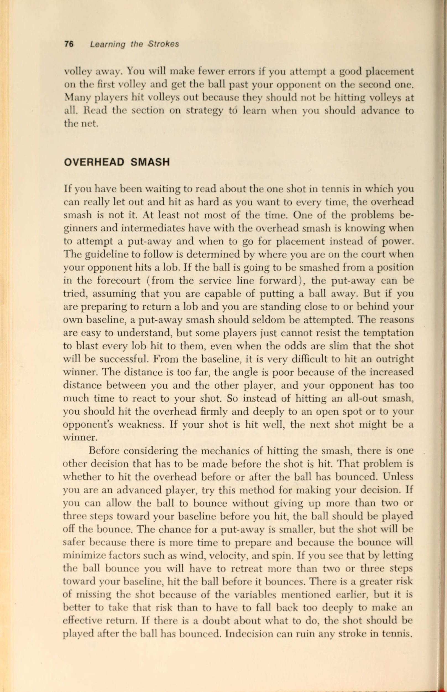
Sự Tập Trung (Concentration): Giữ Vững Tâm Trí Từng Điểm
Tập trung có nghĩa là hướng sự chú ý đến một nhiệm vụ hoặc đối tượng duy nhất.
Trong quần vợt, nhiệm vụ là chơi trò chơi tốt nhất có thể và mục tiêu là quả bóng tennis. Có nhiều chướng ngại vật tự nhiên và nhân tạo có thể khiến bạn không thể tập trung vào trận đấu hoặc quả bóng. Trước khi bạn quá chú tâm vào việc cố gắng đạt được mức độ tập trung cao hơn, hãy chắc chắn rằng bạn muốn như vậy. Nếu bạn là một trong hàng nghìn tay vợt chỉ muốn ra ngoài, đánh bóng và vui vẻ, đừng lo lắng về việc hướng toàn bộ sự chú ý của bạn vào trò chơi bạn đang chơi. Có rất nhiều niềm vui khi nói chuyện với bạn bè, giao lưu, ra ngoài, xem người khác chơi và nói chung là thư giãn. Tuy nhiên, nếu bạn là một trong những tay vợt muốn trở thành người có kỹ năng cao, có tính cạnh tranh và rất nghiêm túc với quần vợt, thì sẽ có một số vấn đề và giải pháp khi nói đến Sự tập trung.
Chìa khóa của Sự tập trung là ngăn chặn tâm trí của bạn càng nhiều càng tốt, chỉ để lại trò chơi để suy nghĩ. Rõ ràng điều đó gần như không thể xảy ra khi bạn cho rằng các trận đấu quần vợt thường kéo dài từ một đến ba giờ. Không ai có khoảng thời gian chú ý lâu như vậy. Vì vậy, mục tiêu trở thành loại bỏ càng nhiều phiền nhiễu càng tốt về mặt tinh thần khi bạn ở trên sân. Đầu tiên, hãy xem xét một số trở ngại đối với Sự tập trung xung quanh sân nơi bạn đang thi đấu.
Con người là trở ngại chính cho Sự tập trung. Có những người trên sân bên cạnh bạn - đang nói chuyện, chơi đùa, đánh bóng trên sân của bạn và đôi khi cản đường bạn hoặc tầm nhìn của bạn. Hãy phớt lờ họ nhiều nhất có thể mà không tỏ ra bất lịch sự. Đừng xem các trận đấu của họ, ngay cả khi các trận đấu của họ thú vị hơn trận đấu của bạn. Đừng cố gắng theo kịp điểm số của họ. Chơi trận đấu của riêng bạn. Nếu sự tò mò của bạn chiếm ưu thế, hãy loại nó ra khỏi hệ thống của bạn bằng cách hỏi tỷ số là bao nhiêu vào thời điểm trận đấu của họ không bị gián đoạn. Cũng có thể có người trên khán đài hoặc gần sân theo dõi trận đấu của bạn. Hãy tránh xa khán đài. Một số người chơi cảm thấy khó khăn khi không liếc nhìn xung quanh để xem ai đã nhìn thấy cú đánh cuối cùng đó. Nếu bạn đang đếm nhà, bạn không tập trung vào những gì đang xảy ra trên sân của mình.
Ngay cả những người trên sân của bạn cũng có thể cản trở Sự tập trung của bạn. Một số người chơi có thể cố tình làm bạn mất tập trung hoặc làm gián đoạn suy nghĩ của bạn bằng một loạt các thao tác chơi game. Một số phương pháp gây mất tập trung phổ biến hơn là trì hoãn thay vì chơi liên tục, nói chuyện với bạn hoặc với khán giả, tỏ ra quá kịch tính sau khi một điểm đã hoàn thành và gọi điện không tốt chỉ để làm bạn khó chịu. Có hai cách để xử lý những tình huống này mà không làm bạn mất tập trung hoàn toàn. Đầu tiên là quyết định rằng không điều gì đối thủ có thể làm sẽ khiến bạn bận tâm. Nếu bạn mong đợi rắc rối từ đối thủ hoặc thậm chí nếu bạn gặp rắc rối một cách bất ngờ, bạn phải đưa ra quyết định sáng suốt rằng bạn sẽ giữ được sự điềm tĩnh và tập trung của mình bất kể điều gì xảy ra. Bản thân nhiệm vụ đó đã đủ khó khăn và nó càng trở nên khó khăn hơn nếu bạn thua cuộc. Sau đó, ngay cả những kích thích nhỏ cũng trở nên lớn hơn. Sẽ dễ tập trung hơn rất nhiều khi bạn đang chiến thắng so với khi bạn đang bị đánh bại. Nếu chính sách không gây hấn không hiệu quả thì bạn nên đối đầu với người đang làm phiền bạn và cố gắng giải quyết vấn đề trước khi trận đấu tiếp tục. Việc chịu đựng những phiền nhiễu sẽ chẳng có ích gì nếu bạn định để việc lo lắng về chúng cản trở trò chơi của mình. Nếu bạn đang nghĩ về các vấn đề thì bạn không nghĩ về quần vợt. Dừng lại trận đấu, gọi đối thủ của bạn lên lưới và nêu rõ điều gì đang làm bạn khó chịu. Nếu người đó từ chối hợp tác, hãy yêu cầu trọng tài hoặc nhận phán quyết từ trọng tài giải đấu, nếu có. Nếu trận đấu được cho là chỉ mang tính xã hội, hãy chọn đối thủ tốt hơn. Thà rời khỏi sân đấu còn hơn là trở nên tức giận đến mức có thể xảy ra sự cố hoặc mất tình bạn.
Khi trận đấu bắt đầu, cố gắng đừng lo lắng quá nhiều về việc đối thủ của bạn giỏi đến mức nào. Ngay cả khi anh ấy hoặc cô ấy tuyệt vời, các bạn vẫn bị mắc kẹt với nhau, và tốt nhất là bạn nên tiếp tục chơi trò chơi của mình. Nếu bạn nhón chân đi loanh quanh hoặc lo sợ rằng mỗi cú đánh sẽ là người chiến thắng, bạn sẽ chơi dưới khả năng của mình. Nếu bạn có thể thư giãn một chút và chơi từng điểm một thay vì lo lắng về kết quả trận đấu, bạn thậm chí có thể chơi tốt hơn bình thường. Những tay vợt vượt trội thường phát huy những điểm tốt nhất của đối thủ kém hơn. Mặt khác, đừng để tâm trí lang thang nếu bạn đang chơi một người mà bạn có thể dễ dàng đánh bại. Hãy tử tế, nhưng hãy cố gắng hết sức ở mọi điểm giống như cách bạn ‘chống lại người ngang hàng với mình trên sân. Nếu bạn có thể thắng 6-0, hãy làm điều đó. Đừng bao giờ ném điểm hay ném game trong một trận đấu vì bạn cảm thấy tiếc cho người bên kia lưới.
Nếu đối thủ không thể thách thức kỹ năng chơi quần vợt của bạn, hãy biến trận đấu thành một thử thách đối với Sự tập trung của bạn. Hãy dành lòng trắc ẩn của bạn cho quần vợt xã hội.
Tiếng ồn có thể gây mất tập trung nếu bạn không quen chơi ở nơi có độ ồn cao. Nếu mọi người gây ồn ào đến mức cần phải khiếu nại chính đáng, hãy chấp nhận điều đó hoặc yêu cầu mọi người im lặng hơn. Nếu tiếng ồn đến từ giao thông, từ công việc đang diễn ra gần sân hoặc từ người qua đường, hãy học cách chung sống với tiếng ồn hoặc chọn một nơi yên tĩnh hơn để chơi. Trên thực tế, một khi bạn học cách chơi với nhiều tiếng ồn, khả năng tập trung của bạn sẽ được cải thiện. Nếu bạn có thể tập trung khi ở nơi ồn ào thì chắc chắn bạn có thể tập trung tốt hơn trong môi trường yên tĩnh. Những tay vợt học cách chơi trên sân công cộng có thể có Điểm lợi thế (Điểm lợi thế (advantage)) hơn những tay vợt câu lạc bộ về mặt này.
Một số người chơi để cho thời tiết, đặc biệt là gió, cản trở Sự tập trung. Giải pháp cho vấn đề này có thể là tập luyện càng nhiều càng tốt khi trời có gió. Nếu bạn có thể điều chỉnh trò chơi của mình cho phù hợp với Điều kiện gió thay vì lo lắng về chúng, điều đó sẽ bớt đi một trở ngại cho việc tập trung vào trò chơi của bạn.
Bất chấp tất cả những phiền nhiễu bên ngoài này, hầu hết các vấn đề về khả năng tập trung đều xuất phát từ bên trong đầu của chúng ta. Chúng ta để tâm trí lang thang, chúng ta nghĩ về gia đình, công việc hoặc học tập, chúng ta lo lắng về việc mọi người thấy chúng ta bắn sai, và chúng ta nghĩ về hàng nghìn thứ khác.
Vì không thể loại bỏ tất cả những suy nghĩ không liên quan đến quần vợt nên ít nhất bạn có thể cố gắng loại bỏ những suy nghĩ rõ ràng nhất. Đầu tiên, chơi từng điểm một. Hãy cố gắng nhớ rằng đối thủ của bạn không có khả năng thực hiện bất kỳ cú đánh nào mà bạn ít nhất chưa từng thấy trước trận đấu này. Có kế hoạch cho từng điểm. Đừng chỉ chờ xem điều gì sẽ xảy ra. Sau một thời gian, bạn sẽ biết mình muốn đặt bóng ở đâu, đối thủ của bạn làm gì tốt nhất, họ gặp khó khăn gì khi làm và bạn muốn ở đâu trên sân. Nếu bạn đang chơi với ai đó giỏi hơn mình, bạn có thể không thực hiện được kế hoạch của mình, nhưng ít nhất hãy bắt đầu với một người, ngay cả khi kế hoạch là giữ bóng trong cuộc càng lâu càng tốt.
Tránh nói chuyện không cần thiết. Quá nhiều tay vợt tiến hành điếu văn sau mỗi lần thua điểm. Họ rên rỉ, rên rỉ, chửi rủa, la hét, khiển trách bản thân, huấn luyện bản thân và thậm chí cầu xin ông trời giúp đỡ. Nếu bạn đang nói về một điểm, có thể bạn đang nói về một điểm đã được hoàn thành và bạn không thể làm gì được. Thay vì tập trung vào điểm cuối cùng, hãy nghĩ đến điểm tiếp theo. Tôi sẽ đánh quả giao bóng ở đâu? Đối thủ của tôi sẽ giao bóng ở đâu? Tôi có đủ tươi mới để lên lưới không? Tôi có nên thoải mái về điểm này không? Tôi chơi thận trọng hay tích cực ở lượt đánh tiếp theo?
Ngoài ra, hãy tránh nói chuyện với đối thủ của bạn. Đừng thô lỗ, nhưng cũng đừng quá khen ngợi sau những cú đánh đẹp hoặc trò chuyện khi đổi bên. Nếu bạn thực sự muốn tập trung, 99% lời nói của bạn trong một trận đấu nên bao gồm việc đưa ra tỷ số và thực hiện các cú sút khi chúng chạm ngoài vạch. Không bao giờ gọi các cú đánh là “tốt” hoặc “trong” khi đang điểm. Chỉ cần đánh bóng.
Đừng bỏ cuộc sau một cú đánh tồi. Bạn đang ở vị trí thuận lợi cho đến khi bóng đi vào lưới, đi ra ngoài giới hạn hoặc nảy hai lần. Một số người chơi ngừng suy nghĩ và cố gắng khi đối thủ đã có sơ đồ. Làm cho đối thủ của bạn đưa bóng đi. Đừng thừa nhận bất cứ điều gì. Đối thủ của bạn có thể thực hiện một cú đánh dễ dàng và bạn có thể giành được chiến thắng. Sự kiên trì là một dấu hiệu tốt cho thấy bạn đang tập trung và nó có thể khiến người chơi khác mất tinh thần. Đừng bỏ cuộc sau khi bạn đã mất một điểm.
Trò chơi, bộ và trận đấu có thể mất nhiều thời gian để hoàn thành. Mọi người chơi đều sẽ bị mất điểm, bỏ lỡ cơ hội thiết lập và đôi khi bị đối thủ giỏi làm xấu hổ. Bạn có quá nhiều vấn đề trước mắt trong một trận đấu để lo lắng về việc bạn trông tệ đến mức nào trong một hoặc hai cú đánh. Thời cơ để bạn có được cú sút siêu hạng sẽ đến nếu bạn đủ kiên nhẫn chờ đợi. Một vài điểm xấu là một phần của trò chơi; đừng để họ làm bạn thất vọng.
Khả năng tập trung của bạn sẽ được cải thiện nếu bạn luyện tập nghiêm túc như khi thi đấu. Cố gắng làm theo những gợi ý đã được thảo luận mỗi khi bạn bước vào sân. Nếu bạn có thể phát triển khả năng ngăn chặn sự phân tâm trong các buổi luyện tập, việc tập trung vào các trận đấu sẽ dễ dàng hơn vì bạn sẽ ít bị phân tâm hơn từ bên ngoài, có nhiều động lực hơn để chơi tốt và nhận được phần thưởng cao hơn nếu bạn giành chiến thắng. Những đặc điểm như sự vững vàng, đĩnh đạc, bền bỉ, im lặng và tập trung có thể học được giống như những cú đánh có thể học được. Chúng ta không kế thừa hành vi chơi quần vợt; chúng ta học cách hành động và suy nghĩ theo cách chúng ta làm trên sân.
Bây giờ bạn nên nghĩ đến điều gì trong một trận đấu? Vì mọi người chỉ có thể hướng sự chú ý của mình vào một việc tại một thời điểm nên cần phải thiết lập ưu tiên cho những suy nghĩ. Đứng đầu danh sách là quả bóng tennis. “Hãy để mắt đến quả bóng” không phải là một câu nói sáo rỗng được sử dụng thường xuyên. Nếu bạn đang giao bóng, hãy quan sát bóng cho đến khi nó rời khỏi dây vợt của bạn. Nếu bạn đang nhận quả giao bóng, hãy tập trung vào quả bóng khi nó vẫn còn trong tay tung của người giao bóng. Hãy theo dõi nó bằng mắt từ lúc Tung bóng đến điểm tiếp xúc, qua lưới vào trong vợt của bạn. Đừng lo lắng về việc quả giao bóng vào hay ra cho đến khi bạn vung vợt. Không có hình phạt nào cho việc thực hiện cú đánh sau khi bạn đánh nó. Tiếp tục tập trung vào
- tôi bóng trong suốt điểm. Hãy quan sát khi bạn và đối thủ chuẩn bị đánh và khi bạn đánh.
Mục thứ hai trong danh sách ưu tiên tập trung là đối thủ của bạn. Khi bóng rời khỏi vợt, bạn sẽ có một hoặc hai giây để xem đối thủ của bạn đang ở đâu trên sân và họ sẽ đánh cú đánh tiếp theo như thế nào. Nơi cần đặc biệt chú ý là Mặt vợt của người chơi khác. Nếu bạn xem bất cứ thứ gì khác ngoại trừ vợt và bóng, bạn có thể bị giả vờ rời khỏi vị trí. Ngay sau khi bóng được đánh để trả lại cho bạn, ít nhất bạn phải biết đối thủ của bạn sẽ đặt mình vào vị trí nào trên sân. Trong tình huống này, tâm trí của bạn sẽ phải di chuyển qua lại nhanh chóng giữa các mục ưu tiên. Bạn phải đủ tinh ý để biết liệu đối thủ của bạn sẽ lên lưới, trở về giữa đường cuối sân hay di chuyển sang một bên của sân sau. Trong vòng một phần giây sự chú ý của bạn phải quay trở lại quả bóng.
Mục ưu tiên thứ ba trong danh sách suy nghĩ của bạn là phương pháp đánh bóng. Bạn sẽ tốt hơn nhiều nếu tự động di chuyển vào vị trí thích hợp thay vì phải suy nghĩ về điều đó. Vì việc chuẩn bị cho cú đánh diễn ra cùng lúc với việc bạn đang cố gắng tập trung vào quả bóng, nên theo nghĩa đen, bạn không thể nghĩ về cả hai điều cùng một lúc. Nếu các cú đánh của bạn được chuẩn bị kỹ lưỡng đến mức có sự chuẩn bị thiếu suy nghĩ nhưng hiệu quả, bạn có thể dành toàn bộ sự chú ý cho quả bóng.
Như thể việc cố gắng hướng sự chú ý vào quả bóng, đối thủ và phong độ của bạn là chưa đủ, còn có những yếu tố khác đáng để bạn chú ý. Tỷ số trong trận đấu, tỷ số ấn định, thời tiết, tình trạng thể chất của bạn, tình trạng của đối thủ và kế hoạch thi đấu của bạn đều đáng để suy nghĩ trong suốt một trận đấu. Thời gian để suy nghĩ đó là giữa các điểm và trận đấu, không phải khi bóng đang trong cuộc.
Hãy tập trung hoàn toàn vào trận đấu mà bạn đang chơi nhất có thể. Cố gắng tách việc chơi của bạn khỏi phần còn lại của cuộc đời bạn trong khoảng thời gian ngắn bạn có mặt trên sân. Hãy tạm quên đi rằng có rất nhiều thứ khác trong cuộc sống của bạn quan trọng hơn việc chơi game. Nếu bạn có thể (và muốn), hãy tạo ra một thái độ tạm thời trong đó điểm tiếp theo, trò chơi hoặc bối cảnh tiếp theo quan trọng hơn gia đình, bạn bè hoặc xã hội. Khó có thể đạt được điều đó, nhưng nếu bạn đặt tiêu chuẩn đó làm mục tiêu thì bất kỳ tiến bộ nào hướng tới thái độ đó sẽ cải thiện trò chơi của bạn bằng cách cải thiện khả năng tập trung của bạn.
Khả Năng Dự Đoán (Anticipation): Đọc Tình Huống Sớm
Khi bạn chơi game tốt hơn, bạn có thể phải đối mặt với một vấn đề khó chịu. Những cú đánh của bạn có thể trông đẹp như những cú đánh của những người khác đã chơi lâu như bạn; bạn đã bắt đầu sử dụng một số loại kế hoạch trò chơi thay vì bị đối thủ ép buộc vào một phong cách chơi; nhưng bạn thường xuyên thua những người chơi có khả năng tương đương vì bạn không biết cách dự đoán điều gì sắp xảy ra trong một thời điểm. Đối thủ của bạn biết bạn sẽ làm gì trước khi bạn làm điều đó, và khi bạn nghĩ mình có Điểm lợi thế (Điểm lợi thế (advantage)) trong một tình huống cụ thể, bạn sẽ mất điểm vì bạn đã “ra ngoài dự đoán”.
Phần lớn những gì người chơi quần vợt gọi là dự đoán chỉ đánh đơn giản là biết những gì sẽ xảy ra qua nhiều năm kinh nghiệm. Nếu một người chơi học trò chơi này trước khi anh ta mười lăm tuổi và tiếp tục chơi thường xuyên, thì khi anh ta bước sang tuổi ba mươi, anh ta đã có hai mươi năm chứng kiến những cú đánh và ở trong mọi tình huống có thể hình dung được trên sân. Với lượng kinh nghiệm tồn đọng đó, nhiều tay vợt lớn tuổi có thể đánh bại những tay vợt trẻ hơn mặc dù các tay vợt trẻ có Điểm lợi thế (Điểm lợi thế (advantage)) về thể lực.
Tuy nhiên, bạn có thể làm ba điều để bù đắp khoảng cách dự đoán giữa mình và những người chơi có kinh nghiệm hơn: bạn có thể học chiến lược quần vợt cơ bản; bạn có thể làm quen với thói quen chơi của đối thủ; và bạn có thể quan sát các dấu hiệu báo trước.
Nếu bạn biết chiến lược quần vợt cơ bản, bạn sẽ biết hầu hết người chơi nên làm gì trong một tình huống nhất định. Nói cách khác, các nguyên tắc của quần vợt đúng đắn quy định điều gì trong tình huống này? Nếu bạn đang đấu với một người không biết gì về chiến lược quần vợt, bạn thậm chí không phải lo lắng về việc thu hẹp khoảng cách này; nó đã đóng cửa rồi. Nhưng nếu đối thủ của bạn biết anh ta nên làm gì thì bạn cũng nên biết. Toàn bộ chương trong cuốn sách này được dành cho chiến lược, vì vậy bạn có thể tự kiểm tra chỉ số I.Q. Dưới đây là một số câu hỏi mẫu:
1. Khu vực mục tiêu chính của cú giao bóng đầu tiên là gì?
2. Hầu hết các bước đột phá cơ bản nên hướng vào đâu?
3. Những cú đánh tiếp cận nên được đánh dọc biên, giữa sân hay Đánh chéo sân (Đánh chéo sân (cross-court))? Tại sao?
4, Bóng chuyền nên đánh vào đâu?
5. Bạn nên Cú lốp bóng (Cú lốp bóng (lob)) về phía nào của đối thủ?
6. Bạn nên cố gắng át đối thủ bao lâu một lần?
7. Người chiến thắng có nên đánh những cú đánh tiếp cận không?
8. Khi nào nên để bóng nảy lên trước khi thực hiện Cú đập trên đầu (smash) trên cao?
9. Bạn nên thực hiện cú bỏ nhỏ (Cú bỏ nhỏ (drop shot)) (Cú bỏ nhỏ (drop shot)) từ vị trí nào trên sân?
10. Quả giao bóng nào trong hai quả giao bóng có nhiều khả năng bị đánh trúng Xoáy lên hơn?
11. Khi giao bóng đánh đơn nên đứng ở đâu?
12. Khi giao bóng đôi nên đứng ở đâu?
13. Khi đối tác giao bóng, bạn nên đứng ở đâu?
14. Khi đối tác nhận tiền, bạn nên đứng ở đâu?
15. Đồng đội nào nên đánh những cú đánh vào giữa sân?
16. Bạn sẽ sử dụng loại chiến lược nào để chống lại chó săn? Chống lại một kẻ đánh lớn?
17. Bạn sẽ thay đổi chiến lược của mình như thế nào nếu bạn chơi trong điều kiện có gió?
18. Khi nào nên câu cá đôi?
19. Khi câu trộm, cú vô lê của bạn nên hướng về đâu?
20. Khi nào nên tiến lên lưới đánh đơn?
21. Chiến lược của bạn sẽ thay đổi như thế nào nếu bạn thi đấu trong thời tiết cực kỳ nóng?
22. Chiến lược của bạn sẽ thay đổi như thế nào nếu bạn chơi trên sân nhanh?
23. Chiến lược của bạn sẽ thay đổi như thế nào nếu bạn chơi trên sân chậm?
24. Trong đánh đôi, bạn nên đánh bóng ở đâu nếu cả hai đối thủ đều ở trên lưới?
25. Khi nào bạn nên chọn bắt đầu trận đấu ở một bên cụ thể thay vì giao bóng trước? Tại sao?
Điều thứ hai bạn có thể làm để thu hẹp khoảng cách dự đoán là tìm hiểu xem đối thủ của bạn thường làm gì trong một số tình huống nhất định. Tất cả người chơi đều rơi vào các kiểu chơi và nếu bạn có thể tìm ra thói quen của họ, bạn có thể đoán tương đối chính xác về điều gì sẽ xảy ra trong một thời điểm. Tìm kiếm các cú đánh yêu thích, các mặt yêu thích, sự kết hợp các cú đánh được sử dụng, điểm mạnh, điểm yếu và đặc điểm riêng. Nếu bạn sắp thi đấu với một đối thủ xa lạ, hãy nói chuyện với người đã từng đấu với người đó. Nếu bạn không thể làm được điều đó, bạn sẽ phải đặc biệt quan sát trong phần đầu tiên của trận đấu để tìm hiểu lối chơi của họ. Bạn thậm chí có thể cân nhắc việc ghi nhớ trong đầu hoặc bằng văn bản về những đối thủ thường xuyên của mình.
Giả sử rằng bạn biết một số chiến lược chơi quần vợt cơ bản và sau khi bạn đã thu thập tất cả thông tin có thể về đối thủ, bạn vẫn phải đối mặt với câu hỏi quan trọng nhất trước mắt: Đối thủ của tôi sẽ làm gì ở cú đánh này? Dưới đây là một số gợi ý sẽ không thay thế được hai mươi năm kinh nghiệm, nhưng có thể đủ để tạo nên sự khác biệt giữa thắng và thua một trận đấu. Nhớ lại những gì đã nói về Sự tập trung, bạn không thể tìm kiếm tất cả những dấu hiệu báo trước này cùng một lúc. Chỉ cần ghi nhớ chúng và sử dụng chúng khi bạn có cơ hội.
1. Hãy quan sát ánh mắt của đối thủ trước khi giao bóng. Nhiều người chơi, ngay cả những người ở nhóm cao cấp, vô tình nhìn vào vị trí mà họ định giao bóng ngay trước khi Tung bóng. Nếu bạn quan sát đủ kỹ vào mắt đối thủ, bạn có thể phát hiện dấu hiệu cảnh báo này và điều chỉnh cho phù hợp. Điều đó có thể có nghĩa là di chuyển một hoặc hai bước sang phải hoặc trái, thay đổi cách cầm vợt hoặc chỉ cần Sự tự tin hơn và có mục đích hơn khi Trả giao bóng. Dù nó có ích gì cho bạn thì nó cũng có thể mang lại cho bạn Điểm lợi thế (Điểm lợi thế (advantage)) trong những ván đấu mà đối thủ của bạn đang giao bóng—những ván đấu mà nhiều người chơi mong đợi sẽ thua.
2. Quan sát chân đối thủ khi họ chuẩn bị thực hiện cú đánh tiếp đất. Một tư thế khép kín (trong đó hai chân ít nhiều song song với lối đi hoặc một trong đó bàn chân gần lưới vượt qua phía trước chân sau) thường chỉ ra rằng cú đánh tiếp theo có nhiều khả năng đi dọc biên hoặc thẳng về phía trước hơn bất kỳ vị trí nào khác. Một tư thế mở (trong đó bàn chân gần lưới hơn không xoay sang vị trí song song) có thể là một dấu hiệu cho thấy sắp có một cú đánh chéo sân (Đánh chéo sân (cross-court)).
3. Quan sát đầu vợt của đối thủ khi thực hiện cú đánh ngược. Nếu đầu vợt bắt đầu ở vị trí thấp và di chuyển theo chuyển động thẳng đứng thay vì chuyển động ngang với Mặt sân, hãy chú ý đến cú đánh Xoáy lên. Khi một cú đánh được thực hiện bằng Xoáy lên, âm thanh sẽ giống nhau và chuyển động cũng nhanh như vậy, nhưng cú đánh sẽ có vận tốc chậm hơn so với cú đánh phẳng; nó sẽ tăng nhanh, giảm nhanh và sau đó bật lên cao bất thường. Nếu đầu vợt được kéo thẳng về phía sau, cú đánh có thể sẽ bằng phẳng, với tốc độ tốt và thấp tới lưới. Nếu đầu vợt bật cao trở lại, hãy chú ý đến cú cắt
(xoáy xuống). Cú chặt sẽ lơ lửng một chút, nảy thấp hơn các cú đánh khác và chậm lại sau khi nảy.
4. Quan sát bóng—ngay cả khi nó ở bên kia lưới. Tất cả người chơi quần vợt đều học được rằng họ nên để mắt tới quả bóng khi đánh. Rất ít người được dạy cách quan sát quả bóng khi tay vợt kia chuẩn bị đánh. Ví dụ: khi một người giao bóng thuận tay phải từ bên phải Tung bóng lên về phía bên phải của cơ thể, người chơi đó có khả năng giao bóng gần giữa sân hơn. Nếu người giao bóng ném bóng ngang cơ thể về phía bên trái, hãy chú ý quả giao bóng đi ra bên ngoài sân giao bóng. Ngoài ra, hãy quan sát cách bóng nảy lên trước khi đối thủ của bạn thực hiện cú đánh nền. Bóng có thể trượt trước khi nảy lên, khiến người chơi bị đánh bật lên. Nó có thể chạm vào một đường, vết nứt hoặc vật thể trên sân, làm mất thời gian của đối thủ. Bóng có thể nảy gần đối thủ của bạn hơn dự kiến, khiến đối phương đánh nhanh và thường khiến bóng bị đánh lên và có xoáy xuống.
5. Hãy nhận biết thế trận của đối thủ. Trong một số tình huống nhất định, người chơi chỉ có thể làm một số việc nhất định. Ví dụ: bạn thường chỉ có thể trả lại một Cú đập trên đầu (smash) bóng bằng một cú lốp bóng (Cú lốp bóng (lob)) và một cú giao bóng cứng chỉ bằng một cú chặn hoặc chip.
Nếu bạn đang chạy lùi để thực hiện cú đánh bằng trái tay, bạn có thể không thể trả bóng bằng lực và nó có thể sẽ đi xuống đường biên. Nếu bạn trả cú đánh cao về phía trái tay, cú trả bóng của bạn có thể sẽ đi chéo bàn. Nếu bạn đang duỗi người về phía trước để lấy bóng, bạn có nhiều khả năng đánh trúng nó hơn là khi bạn đánh từ bên cạnh. Nếu một cú đánh hướng thẳng vào bạn, bạn sẽ ít có khả năng thực hiện cú đánh trả theo góc hơn so với khi bạn đánh một cú đánh vào hai bên vị trí của bạn. Đây chỉ là một vài ví dụ về những gì hầu hết người chơi có thể và không thể làm với một số cú đánh nhất định. Nếu bạn biết đối thủ có thể làm gì từ vị trí của họ liên quan đến cú đánh bạn đánh, bạn có thể di chuyển đến vị trí tốt nhất để thực hiện cú đánh tiếp theo.
6. Che chỗ trống trên sân. Nếu bạn không thể nhận ra bất kỳ dấu hiệu cảnh báo nào khác trong quần vợt, vẫn có một cách bạn có thể đoán trước được điều gì có thể xảy ra trong nhiều cú đánh: luôn lưu ý xem phía sân của bạn đang ở đâu. Có rất nhiều sự chuyển động trong quần vợt, có sự thay đổi liên tục về các Vị trí trên sân, luân phiên đóng và mở. Nếu bạn biết rằng bằng cách di chuyển để đánh một cú, đồng thời bạn đang để lại một khoảng trống, bạn có thể mong đợi quả bóng sẽ được đánh vào đó. Đừng chờ xem quả bóng có đi theo hướng đó hay không. Giả sử đó là nơi quả bóng sẽ được đánh và bắt đầu di chuyển về phía khoảng trống. Dưới đây là một số ví dụ.
Để Trả giao bóng ở sân Điểm 40–40 (Điểm 40–40 (deuce)), bạn phải di chuyển vào ngõ, để lại một lỗ lớn ở bên trái của sân sau. Khi thực hiện cú trả bóng, bạn phải ngay lập tức thu hồi để thu hẹp khoảng trống mà bạn đã tạo cho đối thủ.
Đối thủ của bạn đang ở trên lưới, bạn ở phía bên phải của sân sau. Bạn đã bắn trúng đường biên. Khả năng trả bóng cao nhất sẽ là một cú vô lê Đánh chéo sân (Đánh chéo sân (cross-court)), vì vậy ngay sau khi bạn thực hiện cú đánh nền, hãy bắt đầu di chuyển sang phía bên kia của đường cuối sân.
Bạn lao vào lưới sau một cú sút cưỡng bức. Bằng cách di chuyển đến gần lưới, bạn đã để lại khoảng trống trong toàn bộ khu vực sân sau của mình. Hãy lưu ý đến khả năng đối thủ của bạn sẽ Cú lốp bóng (Cú lốp bóng (lob)).
Bạn đang chơi tốt phía sau đường biên ngang của mình và đối thủ của bạn đã thiết lập được vị trí ở sân trước. Nếu bạn đánh trả một cú đánh vào giữa, đối thủ của bạn có thể dễ dàng thực hiện một cú bỏ nhỏ. Hãy sẵn sàng thăng tiến nhanh chóng trong trường hợp điều đó xảy ra.
Trong nội dung đánh đôi, bất cứ lúc nào đối tác của bạn phải ra khỏi sân để thực hiện cú đánh, bạn nên trôi về phía sân của họ để lấp khoảng trống do chuyển động để lại. Đối tác của bạn có thể cho bạn biết khi nào họ đã bình phục đủ để chơi ở phần sân đó mà không cần bất kỳ sự trợ giúp nào từ bạn.
Bạn ở trên lưới và đối tác của bạn giao bóng. Sự trở lại là một cú lốp bóng (Cú lốp bóng (lob)) trên đầu của bạn. Trong khi đối tác của bạn di chuyển phía sau bạn để trả bóng, bạn nên di chuyển qua sân và quay lại vị trí gần như trên đường giao bóng gần giữa sân. Tại thời điểm đó, bạn đã đóng lỗ và bạn có thể đánh trả cú đánh tiếp theo của đối thủ.
Việc quan sát cẩn thận những dấu hiệu cảnh báo này, kết hợp với kiến thức về chiến lược quần vợt và thói quen của đối thủ, sẽ giúp bạn đoán đúng về điều gì sẽ xảy ra trong nhiều tình huống. Dự đoán đòi hỏi Sự tập trung nhiều hơn hoặc nhiều hơn khi đánh bóng. Đưa ra quyết định dựa trên một phần bằng chứng sẽ tốt hơn là không có bằng chứng nào cả, và bằng cách đoán trước một cú đánh, người chơi có thể di chuyển vào vị trí sớm hơn và chuẩn bị vợt của mình. Đúng, chúng ta chỉ đang nói về giây và phần nhỏ của giây khi chuẩn bị cho cú đánh tiếp theo, nhưng ngay cả khoảng thời gian nhỏ bé đó cũng rất quý giá và sẽ trở nên quý giá hơn khi bạn tiến bộ và thi đấu với những người chơi giỏi hơn.
Tận Dụng Ưu Thế Tâm Lý Trước Đối Thủ
Hãy nhớ rằng người chơi giỏi hơn thường thắng một trận quần vợt. Vì vậy, mặc dù có những điều bạn có thể làm để cải thiện các khía cạnh thể chất và tinh thần trong trò chơi của mình, nhưng không có một chiến thuật tâm lý nào có thể giúp bạn hạ gục người luôn đánh đập bạn. Cũng nên nhớ rằng rất khó để làm mất tinh thần những người mà bạn chơi cùng thường xuyên. Sau một thời gian, các bạn đã hiểu nhau rõ đến mức không ai có thể làm gì khiến bạn ngạc nhiên cả.
Tuy nhiên, trong các trận đấu hoặc giải đấu khi bạn thi đấu với những người chơi có tốc độ ngang bằng với bạn, bạn có thể sử dụng một số chiêu thức tâm lý có lợi cho mình. Cần nhấn mạnh rằng bạn không nên dành quá nhiều thời gian hoặc công sức để đánh lừa ai đó mà bỏ qua hai khía cạnh quan trọng nhất của chiến thắng quần vợt: những cú đánh tốt và chiến lược đúng đắn. Trong bối cảnh này, đây là một số gợi ý có thể mang lại cho bạn Điểm lợi thế (Điểm lợi thế (advantage)) về mặt tâm lý trong một số tình huống nhất định.
Trước khi trận đấu bắt đầu, không cung cấp bất kỳ thông tin nào về trận đấu hoặc khả năng của bạn vì điều này có thể ảnh hưởng đến cơ hội của bạn khi trận đấu bắt đầu. Những người chơi quần vợt cuối tuần gần như bị loạn thần kinh khi lo lắng rằng 1 Brian Chamberlain và Jim Brown, “Dự đoán và tay vợt trung cấp,” Athletic Journal, 51, không. 9 (tháng 5 năm 1972), 38.
đối thủ vô danh có thể là một tay vợt cừ khôi. Có đủ loại trò chơi nhỏ trước trận đấu diễn ra ngoài sân, trong đó người chơi cố gắng tìm hiểu xem đối phương giỏi đến mức nào. Các câu hỏi được đặt ra như"Bạn có được xếp hạng không?"“Cô ấy đã được gieo hạt chưa?” “Bạn đã chống lại Fred như thế nào?” “Bạn đã từng chơi quần vợt ở trường đại học chưa?” “Cô ấy đã từng chơi Arlene chưa?” “Làm thế nào để anh ấy chơi trên loại bề mặt này?” Nếu một đối thủ tiềm năng phát hiện ra rằng anh ta hoặc cô ta thường xuyên đánh bại người đã đánh bại bạn, Sự Sự tự tin của người chơi đó có thể tăng lên. Đừng tình nguyện đưa ra loại thông tin đó. Mặt khác, nếu đối thủ của bạn tọc mạch về việc bạn giỏi như thế nào và nếu bạn có điều gì đáng sợ về trò chơi của mình, hãy làm điều đó. Đừng ép buộc bất cứ điều gì, chỉ cần thể hiện điều đó một cách tinh tế và ngẫu nhiên qua câu trả lời của bạn cho các câu hỏi. Đối thủ càng ít biết về bạn thì bạn càng có lợi. Hãy bộc lộ lối chơi, phong cách và khả năng của bạn trong suốt trận đấu chứ không phải trước đó.
Sau khi bạn bước vào sân để khởi động, hãy khởi động thật nghiêm túc. Đừng lãng phí thời gian để tán gẫu. Chơi các cú đánh ở lần nảy đầu tiên nhiều nhất có thể mà không khiến bản thân kiệt sức. Thiết lập một thái độ chơi quần vợt nghiêm túc. Đảm bảo rằng bạn có thể luyện tập tất cả các cú đánh mà bạn dự kiến sẽ sử dụng khi trận đấu bắt đầu. Khi bạn tập giao bóng, hãy thả lỏng vừa phải, nhưng không nhất thiết phải thực hiện cú giao bóng tốt nhất của bạn. Nếu bạn có thể lưu các cú giao bóng trận đấu của mình cho ván đầu tiên, bạn có thể giành được một vài điểm ở những cú giao bóng không được trả lại chỉ vì đối thủ của bạn phải mất một thời gian để làm quen với phong cách, vận tốc hoặc độ xoáy của bạn. Nếu bạn sử dụng những cú giao bóng tốt của mình trong thời gian khởi động, đối thủ của bạn sẽ có cơ hội thực hành việc trả lại chúng. Đồng thời, bạn không thể hiện những cú giao bóng tốt nhất của mình, bạn nên tập trả bóng mà người đó giao bóng trong thời gian khởi động. Bạn sẽ quen với kiểu giao bóng của người chơi khác và bạn cũng có thể chứng tỏ rằng bạn có thể xử lý bất cứ điều gì mà người chơi giao bóng cho bạn.
Sau khi trận đấu bắt đầu, hãy di chuyển một hoặc hai bước trong quả giao bóng thứ hai của đối thủ và thực hiện vào thời điểm mà họ có thể nhìn thấy bạn di chuyển vào. Lý do đầu tiên cho động thái này là vì quả giao bóng thứ hai có thể được thực hiện với tốc độ thấp hơn quả giao bóng đầu tiên và có thể được đánh ngắn hơn trong phần giao bóng. Bằng cách tiến về phía trước, bạn sẽ ở vị trí tốt hơn để quay trở lại. Nếu lùi lại, bạn sẽ phải chạy lên vào vị trí trước khi đánh. Lý do tâm lý để tiến lên vào thời điểm mà Đối thủ có thể nhìn thấy bạn là hành động đó có thể đe dọa người giao bóng. Bằng cách bước về phía người chơi khác khi họ giao bóng, bạn đang gửi đi một thông điệp phi ngôn ngữ có nội dung:"Cái giao bóng thứ hai của bạn đủ yếu để tôi vượt lên trên bạn; tôi sẽ làm điều gì đó đặc biệt với cú Trả giao bóng của mình; và tôi sẽ chịu trách nhiệm về điểm này."Một nhận xét khác về việc trả lại quả giao bóng thứ hai: thỉnh thoảng chạy vòng quanh quả giao bóng thứ hai yếu về phía trái tay của bạn và thực sự phát bóng bằng một cú thuận tay (Cú thuận tay (forehand)) sắc bén. Ngay cả khi nó không giành được điểm đó, nó sẽ khiến đối thủ của bạn phải suy nghĩ vào lần tiếp theo khi họ sẵn sàng thực hiện cú giao bóng đó.
Trong trận đấu, hãy kết hợp các cú đánh của bạn. Đừng rơi vào một lối chơi mà đối thủ có thể dự đoán và đoán trước. Nếu bạn là một người chơi có sức mạnh, thỉnh thoảng hãy sử dụng một số cú đánh rác chỉ để khiến đối thủ mất Trọng tâm cơ thể. Nếu bạn là chó săn mồi, hãy chứng tỏ rằng bạn có khả năng thực hiện cú sút chuyền mạnh. Việc trộn lẫn các cú đánh thậm chí có thể có nghĩa là đôi khi đánh một cú đánh có tỷ lệ phần trăm thấp. Hãy thận trọng khi thực hiện những cú đánh có độ rủi ro cao, nhưng người mà bạn đang chơi phải luôn phải suy nghĩ, “Gã đó sẽ làm gì tiếp theo?” Sẽ tốt hơn nữa nếu đối thủ của bạn nghĩ rằng họ biết chính xác bạn sẽ làm gì, chỉ để thấy bạn làm điều gì đó hoàn toàn khác. Người chơi khác càng phải lo lắng nhiều điều thì bạn càng có lợi. Đừng ép các cú đánh để chứng tỏ bạn là người không thể đoán trước, chỉ cần thỉnh thoảng sử dụng cú đánh không thể đoán trước—tốt nhất là khi việc mất một điểm sẽ không khiến bạn mất một ván đấu hoặc một hiệp đấu.
Một trong những vũ khí tâm lý tiềm năng tốt nhất mà bạn có thể sử dụng là tính khí của bạn. Một tay vợt giỏi cuối tuần kể lại câu chuyện này:"Tôi có một trận đấu với một anh chàng đủ giỏi để đánh tôi thường xuyên và tệ như anh ta muốn. Anh ta được xếp hạng trong bang, có kinh nghiệm, có tất cả các cú đánh và có phong độ tốt. Khi trận đấu bắt đầu, tôi đã chơi tốt nhất mà tôi từng chơi trong đời. Tôi đánh những cú liên tục mà trước đây tôi chưa bao giờ có thể kiểm soát được. Đồng thời, đối thủ của tôi chơi rất tệ. Anh ta thiếu những cú đánh dễ dàng, mắc lỗi kép, mắc lỗi tinh thần và nói chung là chơi quần vợt kém. Tuy nhiên, ngay cả với điểm số
5-1 nghiêng về tôi trong set đầu tiên, anh ấy không bao giờ nói một lời, không bao giờ tỏ ra lo lắng về việc thua cuộc, khen ngợi những cú đánh tốt của tôi và không chớp mắt sau những cú đánh tồi của anh ấy. Bạn có thể nghĩ rằng anh ấy là người dẫn trước, 5-1. Thái độ của anh ấy đã ảnh hưởng đến tôi. Ở đây tôi đã chơi quần vợt tốt nhất mà tôi có thể hy vọng chơi được; ở đây anh ấy trông giống như một hacker; và anh ta không tỏ ra chút đau khổ nào về cơ hội quay trở lại và chiến thắng. Anh thắng, 7-6, 6-1. Chỉ xét theo sự hiện diện của anh ta tại sân đấu, tỷ số có thể là
6-0, 6-0.” Bài học của câu chuyện đó là hãy giữ vững tư thế của mình bất kể tỉ số là bao nhiêu. Nếu bạn bị tụt lại phía sau và bắt đầu nói chuyện với chính mình, chửi rủa, bào chữa, phàn nàn về sự xui xẻo và hành động như thể bạn đang bị đánh bại, thì thái độ của bạn phải giúp đối thủ nâng cao tâm lý. Đừng cho Điểm lợi thế (Điểm lợi thế (advantage)) đó. Cố gắng thể hiện một vẻ mặt bình tĩnh, Sự tự tin và quyết tâm cho dù mọi việc có tồi tệ đến đâu. Nếu bạn quay lại và giành chiến thắng, bạn sẽ chứng minh được với bản thân rằng bạn có thể làm được điều đó và bạn sẽ cho người chơi khác biết rằng bất kể tỷ số là bao nhiêu, bạn vẫn luôn ở trong trận đấu. Đối thủ của bạn sẽ không bao giờ hoàn toàn Sự tự tin đánh bại bạn cho đến khi trận đấu Kết thúc cú đánh.
Có một số điều bạn có thể làm khi đánh đôi để khiến đội kia lo lắng về những điều mà lẽ ra họ không phải lo lắng. Một điều bạn có thể làm là săn trộm, Hãy cho đội kia biết rằng bạn là một mối đe dọa để tấn công bất cứ lúc nào đối tác của bạn đang giao bóng. Hãy đảm bảo không mạo hiểm đánh mất một điểm quan trọng bằng cách săn trộm chỉ để chứng minh rằng bạn có thể làm được điều đó, nhưng hãy chọn lọc và thỉnh thoảng ra ngoài đó để nhận giao bóng trả lại. Ngay cả khi bạn mất điểm đó, bạn cũng đã khiến đối thủ phải suy nghĩ thêm một vấn đề nhỏ khác. Nếu bạn phát hiện ra rằng một trong những tay vợt của đội kia thực sự gặp vấn đề với việc Trả giao bóng, hãy thường xuyên săn trộm. Đe dọa người chơi nhiều nhất có thể. Ngoài ra, đôi khi hãy giả mạo kẻ săn trộm; Khi bạn đã xác định được thực tế rằng mình là một mối đe dọa trên lưới, hãy nhanh chóng bước về phía giữa ngay trước khi quả giao bóng quay trở lại, nhưng hãy lùi lại để bảo vệ phần sân của bạn. Đừng nhảy quanh lưới; làm cho đồ giả của bạn trông giống một kẻ săn trộm thực sự nhất có thể. Hãy cho đối tác của bạn biết rằng bạn có thể thử một trò săn trộm giả, để anh ấy hoặc cô ấy sẽ không bị cản trở và bị làm giả bởi nước đi của bạn thay vì đối thủ.
Nếu bạn thường xuyên chơi đánh đôi với cùng một đối tác, hãy cân nhắc sử dụng tín hiệu khi đội của bạn đang giao bóng. Ví dụ: đối tác trên lưới có thể đưa nắm tay khép lại sau lưng để biểu thị rằng họ sẽ không câu trộm, một ngón tay để thể hiện ý định câu trộm trong lần giao bóng đầu tiên và hai ngón tay có nghĩa là câu trộm trong cả hai lần giao bóng. Các tín hiệu cũng giúp đội kia phải suy nghĩ và chúng cũng có thể giúp ích cho đội giao bóng vì người giao bóng sẽ biết chính xác phần nào của sân phải được che phủ sau khi giao bóng. Tín hiệu hoạt động tốt nhất khi cả hai người chơi đã quen với việc quan sát và phản hồi các tín hiệu. Nếu một đội không quen với việc sử dụng tín hiệu, họ có thể gây hại nhiều hơn là có lợi.
Khi bạn Trả giao bóng đôi, có ít nhất hai chiến thuật bạn có thể sử dụng. Đầu tiên, hãy nhìn vào con hẻm đang được người chơi lưới bảo vệ ngay trước khi giao bóng. Giống như một vận động viên ném bóng chày nhìn người chạy về phía chiếc túi, hãy nhìn đối thủ của bạn về phía con hẻm của anh ta. Hãy chắc chắn rằng người chơi nhìn thấy cái nhìn của bạn. Nếu cái nhìn của bạn khiến đối phương trung thực hơn một chút trong việc bảo vệ phần sân của họ và không có được cú nhảy tốt để săn trộm, bạn sẽ có nhiều chỗ hơn để thực hiện cú trả bóng Đánh chéo sân (Đánh chéo sân (cross-court)). Thứ hai, thỉnh thoảng hãy đánh xuống đường biên và cố gắng Cú lốp bóng (Cú lốp bóng (lob)) qua đầu người chơi trên lưới để thực hiện một số quả giao bóng. Nếu bạn cố gắng thực hiện cú đánh sớm trong trận đấu, bạn có thể buộc đối thủ của mình phải chơi thận trọng hơn so với khi không có mối đe dọa nào về các cú đánh hướng về phía sân của họ. Bất kể khi nào bạn đánh xuống biên hay thử Cú lốp bóng (Cú lốp bóng (lob)), những cú đánh này giúp bạn không rơi vào tình trạng Trả giao bóng theo kiểu có thể đoán trước được. Mặc dù tỷ lệ tennis nói rằng cú Trả giao bóng nên đi Đánh chéo sân (Đánh chéo sân (cross-court)) hoặc xuống giữa sân, nhưng những cú đánh đó sẽ dễ thực hiện hơn nếu đối thủ của bạn nghĩ rằng không phải lúc nào bạn cũng có thể đánh được cú đánh theo tỷ lệ phần trăm.
Cuối cùng, hãy chú ý lắng nghe những cuộc trò chuyện giữa các đối thủ đánh đôi của bạn. Đừng quay lưng lại với họ. Bạn sẽ ngạc nhiên khi biết mình có thể tìm hiểu được bao nhiêu về những gì sắp xảy ra nếu bạn xem và nghe những gì đang được nói. Người chơi trên lưới đôi khi sẽ nói với đối tác của họ (không có tín hiệu) rằng họ sắp săn trộm. Người giao bóng có thể nói với đối tác của họ rằng họ sẽ giao bóng thuận tay hoặc trái tay. Họ có thể đề cập đến một điểm yếu mà họ đã phát hiện ra. Nếu bạn không chú ý đến những gì đang được nói hoặc chỉ ra, bạn có thể bỏ lỡ một mẹo có thể giúp đội của bạn giành được điểm hoặc trận đấu.
Cá Nhân Hóa Lối Chơi Độc Bản Của Riêng Bạn
Khi bạn chơi quần vợt ngày càng nhiều, trò chơi của bạn sẽ bắt đầu hình thành. Bạn sẽ được biết đến như một kiểu người chơi hoặc phong cách chơi nhất định. Điểm mạnh và điểm yếu của bạn sẽ trở nên rõ ràng hơn đối với bạn và đối thủ của bạn. Cách tiếp cận chiến lược của bạn đối với quần vợt cũng sẽ trở nên dễ đoán hơn. Mặc dù trò chơi của bạn sẽ được quyết định ở một mức độ nào đó bởi các yếu tố mà bạn không thể kiểm soát được, nhưng vẫn có một số điều bạn có thể làm để định hình trò chơi của riêng mình. Bạn có thể trở thành loại tay vợt mà bạn muốn trong giới hạn khả năng, kinh nghiệm, đối thủ, thời gian luyện tập và thái độ cạnh tranh của bạn. Những người chơi không tin vào điều này hoặc không có hứng thú hoặc thời gian để tạo ra trò chơi của riêng mình sẽ phải ra ngoài và chơi mà không có phong cách riêng, thất thường và có rất ít khả năng kiểm soát những gì xảy ra trên sân.
Những người trong số các bạn cho rằng mình có thể kiểm soát được số phận quần vợt của mình trước tiên nên xem xét thật kỹ những điều bạn làm tốt nhất trên sân. Hầu hết người chơi đều có một hoặc hai cú đánh mà họ thực sự có thể thực hiện tốt. Đối với một số người, đó là cú giao bóng lớn, đối với những người khác, đó là cú thuận tay mạnh mẽ, Cú trái tay (Cú trái tay (backhand)) tay ổn định hoặc một pha đánh lưới tốt. Dù bạn làm tốt nhất việc gì, hãy cố gắng tạo ra các tình huống trong trận đấu để bạn có thể sử dụng những cú đánh tốt nhất của mình. Nếu sự kiên định là điểm mạnh của bạn, hãy quên việc cố gắng thực hiện những cú đánh ngoạn mục và khiến đối thủ khác phải tự đánh bại mình. Nếu bạn có một cú thuận tay mạnh, hãy chơi một chút về phía trái tay của bạn để có nhiều cú đánh hơn về phía thuận tay của bạn. Nếu bạn cảm thấy thoải mái khi chơi trên lưới, hãy lên đó thường xuyên nhất có thể. Nếu trái tay của bạn tốt, hãy chơi hơi hướng về phía thuận tay của sân.
Đồng thời bạn kiếm được tiền từ những cú đánh tốt của mình, bạn có thể làm hai điều đối với những cú đánh yếu của mình. Bạn có thể tránh phải đánh chúng trong một trận đấu. Tương tự như cách bạn chạy quanh một số cú đánh nhất định để đánh những cú đánh mạnh nhất của mình, bạn có thể di chuyển trên sân theo cách để tránh đánh những cú đánh yếu hơn. Nếu bạn yếu lưới thì không có quy định nào bắt buộc bạn phải lên đó để chơi game. Nếu không nhất quán, bạn có thể tung ra những cú đánh mạnh để Kết thúc cú đánh trận đấu một cách nhanh chóng thay vì để đối thủ chờ đợi sai lầm của mình. Điều thứ hai bạn có thể làm đối với những cú đánh yếu là sử dụng diêm để cải thiện những vùng có vấn đề. Chơi với những người bạn biết sẽ cố gắng khai thác điểm yếu của bạn. Đôi khi nếu đối thủ của bạn đánh đủ số cú đánh vào một cú đánh yếu của bạn, cú đánh đó sẽ bắt đầu mạnh hơn nhờ quá trình luyện tập của bạn.
Để tìm hiểu chính xác điểm mạnh và điểm yếu của bạn là gì, bạn có thể cân nhắc việc lập biểu đồ cho các trận đấu của mình. Trong một số trường hợp, những gì bạn cảm nhận được đang diễn ra trong trận đấu và những gì đang thực sự xảy ra không giống nhau. Trong lúc trận đấu đang sôi nổi, một vài cú đánh tốt hoặc cú đánh xấu có thể nổi bật trong tâm trí bạn mặc dù những khía cạnh tinh tế hơn trong trận đấu của bạn là yếu tố quyết định thắng thua. Nếu bạn có thể nhờ ai đó xem một vài trận đấu của mình, việc ghi lại số điểm và trận thắng và thua là tương đối đánh đơn giản. Việc lập biểu đồ chỉ liên quan đến việc ghi lại cách thức hoàn thành một loạt điểm. Có những hệ thống phức tạp được các huấn luyện viên đại học và người quan sát các tay vợt chuyên nghiệp sử dụng, nhưng người mới bắt đầu hoặc trung cấp vào cuối tuần có thể sử dụng những thứ như thế này:
MÁY CHỦ ĐIỂM ĐIỂM TRÒ CHƠI — GARVIN SET SCORE
0 -15 lỗi kép 15-15 lỗi Trả giao bóng 30-15 cú thuận tay (Cú thuận tay (forehand)) 1-0 (Garvin) 30-30 lỗi đập trên cao 40-30 lỗi trái tay trong trận giao bóng đầu tiên
MÁY CHỦ ĐIỂM ĐIỂM TRÒ CHƠI -— ĐIỂM ĐÁ
15- 0 lỗi vô lê trái tay (bhv-x) 15-15 lỗi kép (df) 15-30 lỗi trái tay (bh-x) 15-40 cú sút thuận tay (fh-p) 0-2 (Garvin) 30-40 người giao bóng đầu tiên (A-1) người chiến thắng cú lốp bóng (Cú lốp bóng (lob)) (L)
MÁY CHỦ ĐIỂM ĐIỂM TRÒ CHƠI — GARVIN SET SCORE
15- 0 fh-x 15-15 fhv 30-15 fhv-x 30-30 bh-p 30-40 fh-x. 2-1 (Garvin) 40-40 Quảng cáo A-2 trong bh-x Điểm 40–40 (Điểm 40–40 (deuce)) df quảng cáo ra trò chơi fh-x fhv-x
Rõ ràng là một số trò chơi sẽ phải được lập biểu đồ để thiết lập một khuôn mẫu, nhưng nếu ai đó có thời gian quan sát bạn và ghi chú, điều đó có thể giúp bạn tìm ra mà không nghi ngờ gì về điểm mạnh và điểm yếu trong trò chơi của bạn. Khả năng viết tắt hoặc mã hóa ảnh của bạn là không giới hạn. Ngoài ra còn có nhiều điều có thể được thêm vào thông tin hiển thị ở đây. Nếu bạn quyết định giữ lại một biểu đồ về các trận đấu của mình, hãy bắt đầu với một hệ thống đánh đơn giản và bổ sung thêm vào đó nếu kết quả đảm bảo một bản ghi kỹ lưỡng hơn về cách bạn đang chơi.
Một khi bạn biết mình có thể và không thể làm gì, hãy phát triển phong cách chơi mà bạn cảm thấy thoải mái. Nếu bạn biết mình là loại tay vợt nào, bạn có thể đặt ra những mục tiêu thực tế và phát triển phong cách mà bạn thích. Nếu bạn luôn tìm kiếm điều gì đó mới mẻ hoặc khác biệt trong trò chơi của mình, bạn không bao giờ có thể an tâm khi biết mình là ai trên sân. Bạn sẽ có xu hướng đoán lần thứ hai các cú đánh và chiến lược của mình. Điều này không có nghĩa là bạn nên ngừng cố gắng cải thiện trò chơi của mình; chỉ cần dành nhiều thời gian hơn để phát triển những gì bạn đã có hơn là cố gắng cải tiến phong cách chơi của mình. Đừng lo lắng về những cuốn sách chỉ dạy một cách chơi quần vợt. Không có gì sai khi đẩy nếu đẩy thắng. Cú trái tay bằng hai tay có thể không phù hợp với 99% người chơi, nhưng nó có thể tốt nhất cho bạn. Chạy vòng quanh trái tay của bạn không được khuyến khích bởi các chuyên gia giảng dạy (và nó không nên được dạy), nhưng nó có thể mang lại điểm cho bạn trong một số tình huống. Hãy làm những gì tốt nhất cho bạn, miễn là bạn thành công. Nếu những điểm đặc biệt trong phong cách bắt đầu khiến bạn gặp rắc rối hoặc ngăn cản bạn phát triển trò chơi tổng thể của mình thì hãy cân nhắc thực hiện các thay đổi.
Chơi một trò chơi phù hợp với khả năng thể chất của bạn. Nếu bạn ở độ tuổi trung niên và chỉ tập thể dục vài lần một tuần, hãy cẩn thận khi chơi loại quần vợt khiến bạn mệt mỏi. Hoặc giảm tốc độ của bạn hoặc chơi nhiều hơn. Hầu hết mọi người, khi già đi, phải giảm tốc độ chơi để bù đắp cho việc thiếu thời gian dành cho quần vợt. Giảm bớt trò chơi không nhất thiết có nghĩa là trở nên ít người chơi hơn. Điều đó chỉ có nghĩa là bạn phải dựa nhiều vào kỹ thuật, chiến lược và tính nhất quán hơn là sức mạnh thể chất và tốc độ. Tình huống này có thể so sánh với tình huống của một vận động viên ném bóng chày, người bắt đầu sự nghiệp của mình với tư cách là một vận động viên ném bóng nhanh và phát triển thành một vận động viên ném bóng khéo léo sau khi quả bóng nhanh rời khỏi anh ta. Anh ấy vẫn đạt được kết quả tốt; anh ta chỉ đánh đơn giản là thay đổi phương tiện để đạt được những kết quả đó.
Chơi một trò chơi phù hợp với lượng thời gian bạn phải luyện tập. Quần vợt là một môn thể thao khó duy trì kỹ năng. Nếu bạn không thể chơi vài lần một tuần, hãy quên việc cố gắng chơi một trò chơi đòi hỏi bạn phải liên tục thực hiện những cú đánh cực kỳ khó như giao bóng mạnh, bắt vô lê và đập bóng mạnh từ trên cao. Bạn không thể thực hiện những cú đánh gần vạch như một phần bình thường trong trò chơi của mình trừ khi bạn thực hành những cú đánh đó thường xuyên. Những cú bỏ nhỏ và Cú lốp bóng (Cú lốp bóng (lob)) đòi hỏi một cú chạm tinh tế và không dễ duy trì nếu không chơi thường xuyên. Điều đó khiến người chơi cuối tuần gặp phải những cú đánh nền, vô lê và giao bóng chuẩn xác nhưng đầy thử thách nhưng hạn chế trong tiết mục của mình.
Chơi với những người có thể thách thức kỹ năng của bạn. Nếu bạn chỉ chơi với những người mà bạn có thể dễ dàng đánh bại, bạn có thể sẽ giành chiến thắng mà không cần phải suy nghĩ và thực hiện những cú đánh đòi hỏi khắt khe. Bạn sẽ có được cảm giác hài lòng khi thắng một trận đấu, nhưng chắc chắn bạn sẽ không được hưởng lợi từ việc chơi.
Nếu bạn chơi với những người có tầm cỡ như mình, bạn có thể luyện tập những cú đánh tốt và cải thiện những cú đánh yếu của mình cùng một lúc. Nếu bạn đấu với một người không cùng lớp với mình, hãy coi đó là một bài học miễn phí và học hỏi càng nhiều càng tốt trong khi bạn đang say xỉn.
Hãy buộc đối thủ chơi theo phong cách của bạn càng nhiều càng tốt. Nếu bạn không có trò chơi, bạn sẽ phải thay đổi phong cách chơi của mình mỗi khi bước vào sân. Nếu bạn biết kế hoạch trò chơi của mình là gì, ít nhất bạn có thể bắt đầu trận đấu bằng cách bám sát các cú đánh của mình. Nếu bạn cố gắng tấn công bằng kẻ đánh lớn hoặc chống lại kẻ săn mồi, bạn sẽ không bao giờ phát triển được tính nhất quán để chơi trò chơi của riêng mình. Nếu đối thủ của bạn giỏi hơn bạn rất nhiều, bạn sẽ không thể kiểm soát được trận đấu. Tuy nhiên, trước những người chơi kém hơn, bạn sẽ thành công hơn nếu chơi theo cách của bạn chứ không phải của họ.
Cuối cùng, hãy thành thật với bản thân về cam kết của bạn với trò chơi. Nếu bạn không muốn chơi quần vợt nghiêm túc, hãy cố gắng đừng buồn về chất lượng chơi của mình. Những người chơi không thường xuyên và những người chơi giải trí không có quyền mong đợi những cú đánh và trận đấu của họ diễn ra tốt đẹp. Những người chơi ra sân vài lần một tuần và tập luyện chăm chỉ để phát triển cú đánh của mình thường cảm thấy thất vọng khi mọi việc trở nên tồi tệ. Tennis không phải là một trò chơi dễ dàng để chơi tốt. Mọi người chơi đều xứng đáng có được khoảng thời gian vui vẻ. Chỉ những người đầu tư nhiều vào quần vợt mới xứng đáng có được khoảng thời gian vui vẻ và chơi quần vợt liên tục để giành chiến thắng.
Cải thiện
Không Chơi
Tiến Bộ Không Cần Ra Sân: Quan Sát, Đọc Sách & Thể Lực
Nâng Cao Trình Độ Qua Việc Đọc Sách & Tài Liệu
Một trong những sản phẩm phụ của sự bùng nổ quần vợt là sự gia tăng đáng kể số lượng sách, bài báo, băng, tài liệu quảng cáo, phim và các phương tiện nghe nhìn khác liên quan đến hướng dẫn quần vợt. Trong khi một số tài liệu đọc mới là tốt, thì nhiều tài liệu khác thì không. Vì người chơi mới làm quen với trò chơi cũng có thể chưa quen với tài liệu nên sau đây là một số ý tưởng có thể giúp bạn quyết định nên đọc gì.
Đầu tiên, hãy chọn các bài báo và sách về quần vợt viết cho bạn với tư cách là một người chơi. Có tài liệu được viết cho giáo viên, huấn luyện viên, người hướng dẫn thể dục, người hâm mộ và những người khác. Một số cuốn sách trên thị trường cố gắng tiếp cận nhiều hơn một đối tượng đọc. Ví dụ, một số cuốn sách được viết cho người chơi và giáo viên. Nếu bạn đang xem xét một cuốn sách như vậy, hãy nhớ rằng 50% thông tin trong đó được viết cho người khác. Nếu bạn là một tay vợt quan tâm đến việc nâng cao kỹ năng của mình nhưng không mấy quan tâm đến phương pháp giảng dạy, huấn luyện các đội quần vợt hoặc tổ chức thi đấu, hãy mua một cuốn sách hoặc đọc một bài viết chỉ dành cho người chơi.
Thứ hai, cố gắng tìm tài liệu được viết cho những người chơi có khả năng của bạn. Có sách và bài viết dành cho người mới bắt đầu, người chơi ở trình độ trung cấp và người chơi ở trình độ cao cấp. Có một khoảng cách quá lớn giữa các cấp độ chơi, đến nỗi người chơi ở một cấp độ sẽ không đọc được những gì nên làm ở cấp độ cao hơn hoặc thấp hơn nhiều. Có một cuốn sách kinh điển đề cập đến chiến lược đánh đơn, vị trí các cú đánh và tỷ lệ phần trăm quần vợt. Mặc dù cuốn sách này rất tốt cho người chơi ở trình độ cao nhưng nó lại ít có giá trị đối với người mới bắt đầu chơi và mối quan tâm hàng đầu của họ là giữ bóng trong cuộc. Có một số cuốn sách được viết rất hay dành cho người mới bắt đầu chứa đựng những thông tin đã được hầu hết những người chơi cấp cao đã học được. Đọc lời nói đầu và mục lục trước khi mua sách. Thông tin trong hai phần đó sẽ cho bạn biết cuốn sách được viết cho ai. Mục lục của cuốn sách cũng có thể cho bạn ý tưởng về nội dung của nó. Ngẫu nhiên thay, cuốn sách này được viết chủ yếu cho người mới bắt đầu và người ở trình độ trung cấp.
Hãy xem xét tác giả của những cuốn sách hoặc bài báo bạn chọn đọc. Đừng cho rằng vì tác giả là tay vợt nổi tiếng nên cũng là thầy dạy giỏi, hay vì là thầy nổi tiếng nên mới viết được. Mặc dù có một số tay vợt và giáo viên giỏi có thể viết rõ ràng về cách chơi trò chơi, nhưng hầu hết các tay vợt đẳng cấp thế giới không có thời gian, khả năng hoặc sở thích để ngồi viết sách. Một số tên tuổi lớn trong lĩnh vực giảng dạy và viết về quần vợt không phải là những cái tên mà người đọc trang thể thao hoặc vận động viên quần vợt bình thường sẽ nhận ra (ví dụ: Van der Meer, Van Horn, Barnaby, Murphy, Leighton). Trước khi bạn dành quá nhiều thời gian hoặc tiền bạc cho cuốn sách hoặc bài báo, hãy cố gắng tìm hiểu điều gì đó về tác giả bằng cách đọc bìa áo khoác hoặc hỏi những người hiểu biết về quần vợt xem họ có quen thuộc với tác phẩm của một tác giả cụ thể nào không.
Trước nguy cơ không khuyến khích việc bán cuốn sách này, có lẽ nên dành nhiều thời gian hơn để đọc các bài báo và ít thời gian đọc sách hơn. Các bài báo thường dễ đọc hơn, ngắn hơn và tập trung vào ít ý tưởng hơn so với sách. Bạn cũng có thể mua một số bài viết hướng dẫn trên một tạp chí quần vợt với giá một đô la hoặc ít hơn, trong khi sách lại đắt hơn. Bạn cũng sẽ thấy rằng nhiều tác giả viết sách cũng viết các bài tạp chí được lấy từ sách. Trong một bài viết, bạn có thể lấy phần thịt thay vì phần đệm như trong cả một cuốn sách.
Cho dù bạn đọc một cuốn sách hay một bài báo, hãy cố gắng rút ra một vài ý tưởng chính sẽ giúp ích cho trò chơi của bạn. Cố gắng đọc toàn bộ cuốn sách hoặc một bài báo dài rồi kết hợp tất cả thông tin đó vào trò chơi của bạn là điều không thể. Điều đó giống như tham gia một bài học tennis kéo dài năm tiếng đồng hồ; có quá nhiều thứ để một người có thể hiểu và sử dụng. Chọn một hoặc hai chương mỗi lần để đọc, sau đó thử đọc những gì bạn đã học. Sau khi bạn đã đạt được một số tiến bộ trong Giai đoạn đó của trò chơi, hãy quay lại và đọc một hoặc hai phần khác.
Hãy thiết lập một số kiểu đọc cho chính bạn. Tập trung vào một giai đoạn của trò chơi tại một thời điểm. Nếu bạn học một bài học, người chuyên nghiệp sẽ không cố gắng bao quát các cú đánh, chiến lược, các khía cạnh tâm lý và điều hòa trong một buổi học. Bạn cũng không nên chuyển từ mục này sang mục khác mà không có chương trình đọc theo kế hoạch. Nếu bạn quyết định thực sự tìm hiểu càng nhiều càng tốt về cú giao bóng bằng cách đọc và nếu bạn có thể đọc mười bài báo riêng biệt, hãy nghĩ xem bạn sẽ trở thành một chuyên gia như thế nào. Rốt cuộc, có rất nhiều thông tin về một cú đánh quần vợt có thể được viết ra giấy. Dành thời gian cho việc đọc quần vợt của bạn. Nếu bạn chỉ đọc khi không có việc gì khác để làm, có thể bạn sẽ không đọc gì cả.
Cuối cùng, đọc lại các phần của sách và bài báo. Cũng như những bộ phim cũ và những lá thư cũ, bạn sẽ thấy điều gì đó mới mẻ hoặc khác biệt mỗi khi xem lại chúng. Bạn không thể nhớ tất cả những gì được nói trong một buổi học tennis, và điều đó có lẽ cũng đúng. Sách và bài báo được viết ngắn gọn hơn so với cuộc trò chuyện thông thường, nhưng vẫn có rất nhiều sự kiện trên mỗi trang nên việc quên là không thể tránh khỏi. Đọc những thông tin đó hai hoặc ba lần có thể củng cố quá trình học tập.
Tạp chí quần vợt
Các tạp chí chứa tài liệu liên quan đến quần vợt thường hướng đến một trong ba nhóm: người chơi và người hâm mộ quần vợt, giáo viên và huấn luyện viên quần vợt, và những người có sở thích thương mại về quần vợt. Các ấn phẩm trong nhóm đầu tiên có các câu chuyện tin tức, kết quả giải đấu, tính năng, nhận xét biên tập, chuyên mục, lịch trình các sự kiện quần vợt, bài viết hướng dẫn và quảng cáo cho các sản phẩm và giao bóng quần vợt. Dưới đây là tên và địa chỉ của một số tạp chí được lưu hành rộng rãi hơn dành cho các tay vợt và người hâm mộ:
Quần vợt Sân cỏ Anh “Vùng đất thấp,” Wenhaston, Halesworth, Suffolk 1P19 9DY, Anh
Vợt Canada
643 Phố Yonge Toronto 5, Ontario, Canada
Quần vợt
1255 Portland Place Boulder, Colorado 80302
Minh họa quần vợt 630 Shatto Place Los Angeles, California 90005
Tennis U.S.A. P.O. Hộp 2090
Radnor, Pennsylvania 19089
Tennis World Royal London House, 171B High Street
Beckenham, Kent, BR3 1BY, Anh
Quần vợt thế giới
15 Phố Tình Yêu Marion, Ohio 43302
Sách quần vợt
Đây là danh sách các cuốn sách và tác giả có thể được người chơi quần vợt mới bắt đầu và trung cấp quan tâm:
Tất Cả Về Quần Vợt
Sách quần vợt, Lumiere
Danh sách kiểm tra để chơi quần vợt tốt hơn, Bockus
Mật mã, Powell
Hướng dẫn hoàn chỉnh về quần vợt cho người mới bắt đầu, Lardner
Người đồng hành bên lề, Zweig
Quần vợt phi thường dành cho người chơi bình thường, Ramo
Sách bên lò sưởi về quần vợt, Danzig và Schwed
Bắt đầu chơi quần vợt, Meltzer
Cách đánh bại người chơi quần vợt giỏi hơn, Fiske
Cách chơi quần vợt tốt hơn, Tilden
Cải thiện quần vợt của bạn, Jones
Trò chơi nội tâm của quần vợt, Gallwey
Bên trong quần vợt, Leighton
Lobbing Into the Sun, Hopman
Chơi trận đấu và quay bóng, Tilden
Trận đấu thắng quần vợt, Jones
Đôi nam nữ, Grabner
Kết quả ròng: Cẩm nang quần vợt hoàn chỉnh
Tỷ lệ quần vợt, Lowe
Thông báo quần vợt của Rod Laver, Laver
Sinister Tennis, Schwed
Vì vậy, Yowre sẽ chơi quần vợt một cách nghiêm túc, Roberts
Tốc độ, sức mạnh và sức chịu đựng: Điều hòa cho quần vợt, Haynes
| Những môn thể thao được minh họa—T ennis, Talbert a) Sản xuất cú đánh trong quần vợt, Talbert và Olds
4: Quần vợt, Viện điền kinh
+ Quần vợt, Faulkner và Weymuller “4 Quần Vợt, Mason
Quần vợt, Pearce và Pearce
Quần vợt, Pelton
Quần vợt, Có ai không?, Gould
Phòng khám quần vợt, Van der Meer và Olderman
Quần vợt Mọi người, Schultz
Quần vợt cho mọi người, Palfrey
Quần vợt cho người mới bắt đầu, Murray
Quần vợt cho mọi người, Addie
Quần vợt dành cho thanh thiếu niên, Addie
Quần vợt cho niềm vui đẫm máu của nó, Laver, Emerson, Tarshis
Quần vợt nữ, tay súng
Quần vợt: Học cách chơi vô-lê trước, Summerfield
Quần vợt dễ dàng, Brecheen
Tự dạy tennis, động lực
Quần vợt: Cẩm nang của Hacker, Pollack và Long
Quần vợt để giành chiến thắng, Vua
Điểm yếu và cách khắc phục quần vợt, Meltzer
Quần vợt không mắc sai lầm, Eldred
Sách bài tập quần vợt, Kraft
Sử dụng cái đầu của bạn trong quần vợt, Hartman
Quần vợt cuối tuần, Talbert
Học Hỏi Qua Quan Sát Trực Tiếp & Phân Tích Trận Đấu
Hầu hết mọi người xem các trận đấu quần vợt vì môn thể thao này có thể mang tính giải trí cho khán giả. Nhưng bạn cũng có thể xem để cải thiện trò chơi của mình và dò tìm đối thủ trong tương lai. Nếu bạn muốn cải thiện bằng cách xem hoặc nếu bạn muốn nhận được thông tin có thể giúp bạn đánh bại ai đó, thì có nhiều cách để thu được nhiều lợi ích hơn từ những quan sát của bạn.
Với tất cả các môn quần vợt được diễn ra ngày nay, có rất nhiều nơi để xem những tay vợt giỏi. Các giải đấu chuyên nghiệp, truyền hình, các trận đấu ở trường đại học và các giải đấu địa phương hoặc khu vực đều cung cấp các cơ chế để cải thiện môn quần vợt của bạn bằng cách xem người khác chơi. Trong số bốn nơi để xem này, các giải đấu chuyên nghiệp có lẽ là nơi ít có lợi nhất cho người quan sát muốn tìm hiểu. Có một điều, các tay vợt rất giỏi và có năng khiếu thể thao đến mức không thể so sánh được với những tay vợt mới bắt đầu hoặc trung cấp. Nhiều chuyên gia có những điểm đặc biệt trong phong cách chơi của họ và điều đó sẽ không phù hợp với những người chơi kém hơn. Một lý do khác khiến các giải đấu chuyên nghiệp không phải là nơi tốt nhất để quan sát nhằm mục đích học tập là có quá nhiều thứ gây xao lãng.
Một người đến tham dự một trong những sự kiện này sẽ trả rất nhiều tiền để được giải trí. Có những người nổi tiếng để xem; bạn bè để trò chuyện, điểm số cần giữ, đồ cần mua và nhiều màn trình diễn phụ khác giúp một người không theo dõi một cách nghiêm túc cơ chế tạo ra cú đánh hoặc chiến lược sân đấu. Không phải là không thể học bằng cách xem những người chuyên nghiệp; nó chỉ là rất khó khăn.
Truyền hình cũng không phải là nơi tuyệt vời để tìm hiểu nhiều về quần vợt. Mặc dù người xem ít bị phân tâm hơn nhưng bản chất của truyền hình khiến việc quan sát nhiều khía cạnh của trận đấu gần như không thể. Trên màn hình nhỏ, người xem không có được cái nhìn chính xác về những thứ như vận tốc của quả bóng, quỹ đạo, độ xoáy hoặc kích thước và tốc độ của các tay vợt. Mọi thứ dường như bị thu nhỏ lại đến mức khiến người xem mất đi những khía cạnh tinh tế của trò chơi. Người quan sát có thể quan tâm xem ai thắng ai thua, nhưng không nhận thức được những điểm tốt hơn có thể hữu ích.
Có lẽ hai nơi tốt nhất để học bằng cách xem là các trận đấu giữa các đội đại học tốt và tại các giải đấu trong khu vực của bạn thu hút những người chơi nghiệp dư xuất sắc. Chất lượng trận đấu đủ tốt để học được điều gì đó, các tay vợt gần gũi hơn với khán giả về khả năng thể chất, ít bị phân tâm hơn và bạn có thể đến gần hành động để thực sự theo dõi những gì đang diễn ra. Nếu bạn đủ quan tâm để quan sát các trận đấu và có đủ thời gian để làm việc đó, hãy xem các tờ báo thông báo về các giải đấu và trận đấu sẽ diễn ra trong khu vực của bạn.
Một khi bạn quyết định thử học bằng cách xem, bạn nên xem để làm gì? Đầu tiên, hãy tìm hiểu cách người chơi tạo ra các cú đánh. Bắt đầu với việc chuẩn bị cho các cảnh quay. Hầu hết khán giả không thể cưỡng lại sự cám dỗ muốn xem bóng trước và mọi thứ khác nếu họ có cơ hội. Hãy xem những tay vợt giỏi làm gì sau khi họ thực hiện một cú đánh. Làm thế nào để họ sẵn sàng cho lần quay tiếp theo? Họ di chuyển ở đâu trên sân? Họ bảo vệ hoặc không bảo vệ những phần nào của sân đấu? Họ Bước chân (Bước chân (footwork)) như thế nào để chuẩn bị cho cú đánh tiếp theo? Họ phải thực hiện bao nhiêu bước để đi từ vạch cuối sân đến vị trí đánh vô-lê? Họ mất bao lâu để có được vị trí đó? Khi nào và ở đâu họ đặt chân trước khi bắn? Họ xoay phần trên của cơ thể theo hướng nào? Họ di chuyển về phía quả bóng theo đường thẳng hay họ di chuyển theo đường gián tiếp? Đầu vợt ở đâu khi họ di chuyển để đánh một cú?
Sau khi dành chút thời gian tập trung vào việc chuẩn bị, hãy thử trả lời những câu hỏi này về các cú đánh khác nhau mà bạn đang xem. Đầu vợt ở đâu so với thắt lưng của người đánh khi tiếp xúc? Nó ở dưới, ở trên hay thậm chí với thắt lưng? Các tay vợt tiếp xúc với bóng ở đâu? Nó ở phía trước, thậm chí ở phía sau hay phía sau phần thân - ts? Các cú đánh có xoáy xuống, Xoáy lên, Xoáy ngang hay không xoáy? Người chơi vung gậy từ vai hay khuỷu tay? Họ có sử dụng cổ tay trong một số cú đánh không? Những bức ảnh nào? Làm thế nào để họ chuyển trọng lượng của họ khi họ đánh? Cú chạm đất của họ bay cao bao nhiêu trên lưới? Khi giao bóng, họ ném bóng cao bao nhiêu? Liên hệ được thực hiện ở thời điểm nào? Loại xoáy nào được đưa vào quả giao bóng? Có sự khác biệt giữa lần giao bóng đầu tiên và lần giao bóng thứ hai không? Sự khác biệt là gì? Các tay vợt đứng gần lưới bao nhiêu khi thực hiện cú vô lê? Họ thực hiện bao nhiêu cú Vung vợt ra sau (lấy đà)? Họ có cúi xuống để đánh một số cú đánh không? Họ tiếp xúc với bóng ở đâu khi thực hiện cú vô lê? Họ sử dụng một cú vung hoàn toàn hay một cú vung hạn chế trong những Cú đập trên đầu (smash) bóng?
Khi bạn cảm thấy mệt mỏi với việc tìm kiếm những điều nhỏ nhặt trong các cú đánh, hãy suy nghĩ về chiến lược trận đấu một lúc. Các cú đánh có được đặt vào các vị trí cụ thể trên sân không? Người chơi đang thắng có sử dụng chiến lược khác với người đang thua không? Mỗi người chơi có một kế hoạch trò chơi không? Kế hoạch trò chơi là gì? Nếu bạn là người chơi thua trận, bạn sẽ làm gì khác? Người chơi đang sử dụng những cú đánh theo tỷ lệ phần trăm hay họ đánh bạc bằng những cú đánh có rủi ro cao?
Bài kiểm tra cuối cùng về mức độ quan sát trận đấu của bạn là khả năng trả lời nhiều câu hỏi trên về một tay vợt cụ thể sau khi trận đấu đã diễn ra. Bạn chỉ biết ai đã thắng và nhớ một vài cú đánh hay, hay bạn có thể kể cho người khác biết chính xác cách một tay vợt thực hiện các cú đánh và sử dụng kế hoạch tấn công chiến lược không? Ngay cả khi bạn có thể nhớ chi tiết về phong cách và cách tiếp cận trò chơi của một số người chơi, điều đó sẽ không mang lại lợi ích gì cho bạn trừ khi bạn có thể kết hợp một số điểm mạnh của họ vào những điểm yếu trong trò chơi của bạn. Giống như khi đọc về quần vợt, đừng cố gắng theo dõi quá nhiều trò chơi của người khác đến nỗi bạn trở nên bối rối. Tìm tay vợt có thể làm tốt điều gì đó mà bạn không thể làm một cách hiệu quả hoặc nhất quán và sao chép cách họ làm. Bạn phải có khả năng bắt chước chuyển động của người khác để chơi tennis giỏi. Mọi người không sinh ra đã có kiến thức bẩm sinh về cách đánh bóng tennis một cách chính xác. Họ quan sát người khác, lắng nghe những gì người khác nói, đọc những gì người khác viết và sau đó mô phỏng các phong cách chơi trong giới hạn vận động của chính họ. Một vận động viên giỏi có thể quan sát ai đó thực hiện một loạt các động tác thể chất và tiến rất gần đến việc bắt chước những động tác đó. Vận động viên kém hơn phải nỗ lực để khiến cơ thể mình làm được điều mà một số người có thể làm gần như một cách tự nhiên. Vì vậy, khi bạn quan sát nét vẽ phù hợp với mình, hãy ghi lại toàn bộ bức tranh trong tâm trí bạn, sau đó chuyển hình ảnh từ tâm trí sang cơ thể bạn.
Nếu bạn xem một trận đấu quần vợt để tìm kiếm đối thủ trong tương lai, bạn nên tìm kiếm những thứ khác. Mục tiêu của bạn bây giờ là học cách đánh bại người chơi này. Bạn sẽ có cơ hội chiến thắng cao hơn nếu bạn có thể trả lời một số câu hỏi dưới đây về lối chơi của người chơi và sau đó làm điều gì đó trong trận đấu của mình để tận dụng thông tin bạn đã thu thập được.
Người chơi là ai?
Anh ấy (hoặc cô ấy) đã chơi ai?
Ai thắng?
Pe Pee
Tỉ số là bao nhiêu?
Trận đấu diễn ra trên Mặt sân nào?
Bề mặt có ảnh hưởng đến phong cách chơi của anh ấy không? Làm sao?
Anh ấy thuận tay phải hay thuận tay trái?
8. Nói chung, bạn sẽ mô tả cú thuận tay, trái tay, giao bóng, vô lê thuận tay, vô lê trái tay và đập bóng qua đầu của anh ấy như thế nào?
9. Anh ấy thường giao bóng đầu tiên ở đâu?
10. Anh ấy thường thực hiện quả giao bóng thứ hai ở đâu?
| 11. Bạn nên đứng ở đâu để nhận giao bóng?
12. Cú sút đẹp nhất của anh ấy là gì?
13. Bạn có thể làm gì để ngăn anh ta đánh cú đánh mạnh nhất của mình? fi 14. Cú đánh yếu nhất của anh ấy là gì?
15. Bạn có thể làm gì để khiến anh ta đánh cú đánh yếu nhất của mình?
16. Anh ấy có cú đánh nào bất thường không?
17. Anh ấy thích chơi ở sân sau hay trên lưới hơn?
18. Anh ta đi vào lưới ở cú đánh nào?
: 19. Anh ta đánh được bao nhiêu phần trăm số Cú đập trên đầu (smash) từ trên cao trên sân?
| 20. Những Cú đập trên đầu (smash) của anh ấy có thể lấy lại được không?
21. Anh ấy Cú lốp bóng (Cú lốp bóng (lob)) tốt phải không?
22. Sức khỏe của anh ấy có tốt không?
23. Anh ấy có thể giữ bóng trong các pha bóng dài không?
24. Anh ấy có trung thực khi gọi điện không?
25. Giả sử bạn có cơ hội đánh bại người này thì (hai điều bạn sẽ phải làm để thắng trận đấu là gì?
Nếu bạn có tất cả thông tin đó về đối thủ, bạn sẽ chuẩn bị cho trận đấu tốt hơn 99% tất cả các tay vợt trên thế giới. Hầu hết mọi người không có thời gian để có được những báo cáo như vậy về một tay vợt trước trận đấu. Nếu bạn không có thời gian, hãy cân nhắc việc viết ra những điều bạn biết về đối thủ sau khi chơi cùng nhau. Các bạn có thể chơi lại với nhau. Hãy nhớ rằng cho dù bạn có biết nhiều về người chơi khác đến đâu và cho dù chiến lược của bạn được lên kế hoạch tốt đến đâu, bạn vẫn phải có khả năng giữ bóng một cách nhất quán để chiến lược của mình phát huy tác dụng. Cho đến khi bạn đạt đến trình độ có thể làm được điều đó, bạn vẫn chưa sẵn sàng để tìm kiếm những người chơi khác.
Rèn Luyện Thể Lực Chuyên Biệt Cho Quần Vợt
Trong khi hầu hết mọi người đều mơ hồ nhận thức được rằng sẽ tốt cho họ nếu"có thể trạng tốt", nhưng rất ít người thực sự biết tình trạng thể chất tốt nghĩa là gì. Người duy trì trương lực cơ thích hợp, hệ tim mạch hoạt động hiệu quả và phổi khỏe mạnh, và người ăn nhiều loại thực phẩm cân bằng sẽ trải nghiệm cảm giác hạnh phúc mà hầu hết mọi người đều không quen thuộc. Một khi bạn phát hiện hoặc khám phá lại cảm giác này tuyệt vời đến mức nào, bạn có thể duy trì thể chất ở mức độ cao.
Nếu bạn chơi quần vợt vài lần một tuần, bạn đang tập thể dục, nhưng việc bạn có thể đạt được thể lực toàn diện hay không không chỉ phụ thuộc vào tần suất bạn chơi mà còn phụ thuộc vào mức độ bạn chơi chăm chỉ như thế nào và những gì bạn làm về mặt thể chất ngoài việc chơi quần vợt. Chỉ chơi hết mình một hoặc hai lần một tuần có thể gây hại nhiều hơn là không chơi quần vợt. Ý tưởng là chơi vất vả và thường xuyên. Nếu bạn đang chơi đủ mạnh để tăng nhịp tim lên 140 nhịp một phút và giữ nó ở đó trong khoảng thời gian phù hợp với khả năng làm việc hiện tại của bạn, hãy cân nhắc việc tập luyện vất vả đó. Nếu bạn không chơi ở cấp độ đó, bạn có thể đang có một khoảng thời gian vui vẻ, nhưng bạn đang làm rất ít để duy trì hoặc tăng cường thể lực hô hấp và tim mạch của mình.
Không nghi ngờ gì rằng bạn có thể cải thiện khả năng chơi quần vợt của mình bằng cách trở nên khỏe mạnh hơn. Bạn có thể chỉ có đủ thời gian hoặc hứng thú để tập luyện trên sân. Nhưng nếu bạn muốn đạt được mức độ thể lực cao hơn, đồng thời nâng cao khả năng chơi quần vợt của mình mà không cần đến sân đấu, thì có nhiều cách để làm điều đó.
Đang chạy
Mặc dù chạy bộ có thể có lợi cho hệ tim mạch và hô hấp của cơ thể, nhưng nó có thể không phải là kiểu chạy tốt nhất cho người chơi quần vợt. Chạy nước rút những quãng đường ngắn — 10 đến 50 thước — dường như phù hợp với người chơi quần vợt hơn là chạy đường dài. Một vài loạt chạy nước rút ba hoặc bốn lần một tuần có thể cải thiện hệ thống tim mạch và đồng thời tăng cường sức mạnh cho cơ bắp chân. Vì quần vợt yêu cầu người chơi phải chạy những quãng đường ngắn, thay Đổi hướng bóng, dừng và xuất phát nhanh cũng như thực hiện các chuyển động nhanh khác nên một chương trình chạy bao gồm nhiều lần lặp lại các quãng đường ngắn có thể rất hữu ích. Chạy bộ đường dài cũng có thể có lợi, nhưng không phải theo cách đặc biệt giúp ích cho người chơi quần vợt. Trước khi bạn quyết định thực hiện bất kỳ hình thức chạy bộ nào để có được vóc dáng cân đối, hãy tham khảo ý kiến bác sĩ, nhà trị liệu vật lý, nhà giáo dục thể chất hoặc người khác biết bạn và khả năng thể chất của bạn. Sẽ rất nguy hiểm khi bắt tay vào một chương trình chạy không phù hợp với độ tuổi, tình trạng thể chất và sức khỏe chung của bạn.
Bài tập lsometric
Các bài tập Isometric là những bài tập trong đó tất cả các sợi trong một tập cơ co lại hoàn toàn nhưng không di chuyển khi làm như vậy. Chúng thường liên quan đến việc cố gắng kéo, đẩy, nâng hoặc bằng cách nào đó di chuyển một vật thể bất động. Có những ưu điểm và nhược điểm trong việc xây dựng sức mạnh và thể lực cơ bắp thông qua phương pháp đẳng cự. Ưu điểm là: (1) chúng không đòi hỏi nhiều thời gian như các hình thức tập thể dục truyền thống; (2) chúng đòi hỏi rất ít không gian; (3) không cần nhiều thiết bị; (4) chúng có thể được điều chỉnh cho phù hợp với bất kỳ nhóm cơ nào trên cơ thể; và (5) chúng không khiến người ta trông cơ bắp. Nhược điểm là: (1) chúng không tạo ra sức bền tốt như các hình thức tập thể dục khác; (2) chúng không xây dựng sức mạnh ở toàn bộ phạm vi chuyển động như một số chương trình sức mạnh khác; và (3) họ không xây dựng số lượng lớn.
Isometrics dành cho người chơi quần vợt sẽ đặc biệt hiệu quả trong việc xây dựng sức mạnh ở ngón tay, cổ tay, cẳng tay, cánh tay trên và vai. Bạn có thể thực hiện các bài tập đẳng cự cho những vùng này của cơ thể bằng cách vung qua bất kỳ cú đánh nào của bạn—thuận tay, trái tay, giao bóng, vô lê thuận tay, vô lê trái tay hoặc đập qua đầu—và giữ chuyển động của bạn tại điểm có thể tiếp xúc với bóng. Bạn không cần phải thực sự vượt qua điểm đó; bạn chỉ có thể bắt đầu bài tập bằng cách đặt vợt và cánh tay của bạn vào vị trí đánh. Tại thời điểm đó, hãy hạn chế mọi chuyển động tiếp theo của vợt hoặc cánh tay bằng cách sử dụng tường, hàng rào, tay của người khác hoặc bất cứ thứ gì khác có thể tạo ra vật thể cố định. Dùng lực nhiều nhất có thể vào vật bất động trong tám giây, sau đó nghỉ ngơi và lặp lại bài tập. Nghỉ ngơi và lặp lại nó một lần nữa. Ba cơn co thắt tối đa tám giây mỗi ngày cho mỗi lần vuốt ve sẽ là khởi đầu tốt cho chương trình tăng cường sức mạnh. Mặc dù các bài tập được mô tả ở đây liên quan đến các cơ từ vai đến ngón tay, bạn có thể tăng sức mạnh ở bất kỳ bộ phận nào trên cơ thể thông qua phương pháp đẳng cự. Thiết kế các bài tập của riêng bạn cho bất kỳ cơ bắp nào cần tăng cường.
Bài tập lsoton
Bài tập đẳng trương là sự co cơ khi vận động. Bất kỳ chuyển động nào, có hoặc không có tạ, làm quá tải cơ bắp và liên quan đến chuyển động trong một phạm vi chuyển động đều là bài tập đẳng trương. Ưu điểm của chất đẳng trương là: (1) chúng làm tăng sự đa dạng của các phương pháp mà bạn có thể sử dụng để trở nên mạnh mẽ hơn; (2) chúng cải thiện sức khỏe hô hấp và tim mạch cũng như sức mạnh thể chất; (3) sức mạnh được xây dựng thông qua một loạt chuyển động thay vì chỉ tại một điểm; và (4) cơ bắp của bạn sẽ tăng kích thước (nếu bạn coi đó là một Điểm lợi thế (Điểm lợi thế (advantage))). Nhược điểm của các bài tập đẳng trương là: (1) tốn thời gian; (2) có thể cần đến thiết bị chuyên dụng; (3) bạn có thể cần nhiều không gian để tập thể dục; và
(4) nó có thể làm cho cơ bắp của bạn to hơn, điều này có thể không được một số người mong muốn.
Có hàng trăm cách để tập thể dục đẳng trương. Dưới đây là một số cách có thể giúp ích cho người chơi quần vợt.
Đối với các ngón tay và cổ tay, gắn một vật nặng từ 2 đến 5 pound vào một sợi dây dài và gắn dây vào một tay cầm có kích thước bằng cán chổi: cuộn vật nặng lên trên tay cầm, đầu tiên với lòng bàn tay hướng lên, sau đó với lòng bàn tay úp xuống. Lặp lại bài tập nhiều lần nhất có thể mà không gây căng thẳng quá mức cho các cơ đang hoạt động.
Đối với cánh tay và vai, thực hiện động tác chống đẩy hoặc chống đẩy sửa đổi; bắt đầu với một vài lần lặp lại và tăng số lượng lên một lần mỗi ngày. Lấy một quả tạ nặng 5 pound và thực hiện động tác uốn cong từ 5 đến 10 lần với mỗi cánh tay (thực hiện động tác uốn cong bằng cách giữ tạ xuống bên cạnh với cánh tay duỗi thẳng hoàn toàn, sau đó uốn cong cánh tay từ khuỷu tay, đưa trọng lượng lên phía trước cơ thể). Xoay vợt có vỏ vợt có trọng lượng trên đầu vợt; bắt đầu với mười cú vung cho mỗi cú giao bóng, thuận tay và trái tay, đồng thời tăng số lần lặp lại lên một lần mỗi ngày khi bạn tập luyện. Xoay chảo rán qua 20 cú thuận tay và trái tay mỗi ngày. Bóp một quả bóng tennis 25 lần trong ngày đầu tiên và tăng thêm 5 lần mỗi ngày sau đó. Xoay hai vợt cùng lúc trong cùng một tay; thực hiện càng nhiều lần lặp lại càng tốt mà không làm căng cơ cánh tay, sau đó tăng dần số lần xoay.
Đối với chân, hãy chạy tại chỗ trong một phút hoặc bất kỳ khoảng thời gian nào phù hợp với bạn. Nhảy dây trong khoảng thời gian mà cố vấn của bạn nói là tốt cho bạn. Tăng sức mạnh cơ chân bằng cách nâng ngón chân:
động tác nâng ngón chân được thực hiện bằng cách đứng cạnh tường hoặc hàng rào, dùng một tay giữ vào tường để giữ Trọng tâm cơ thể, sau đó duỗi khớp mắt cá chân bằng cách nâng trọng lượng của bạn lên các ngón chân của một bàn chân; bắt đầu với mười hoặc mười lăm lần nâng mỗi chân mỗi ngày. Tìm một chiếc ghế dài hoặc bậc thang được cố định chắc chắn ở độ cao hai hoặc ba feet; đứng trước băng ghế và bước lên bằng cả hai chân, quay trở lại sàn hoặc mặt đất bằng cả hai chân (mỗi lần một chân), sau đó lặp lại bước lên xuống trong một khoảng thời gian. Không thực hiện bài tập cuối cùng này trong khoảng thời gian dài hơn ba mươi giây vào ngày đầu tiên, trừ khi bạn biết mình đủ sức khỏe để thực hiện nó một cách an toàn; bạn có thể tăng thời gian khi bạn khỏe hơn.
Một chương trình tập thể dục trọn gói
Nếu bạn đang tìm kiếm một chương trình tập thể dục được lên kế hoạch trước để cải thiện thể lực của mình thì đây là một chương trình có thể thực hiện tại nhà. Các bài tập trong chương trình này được thiết kế dành cho những người đã đạt đến mức thể lực hợp lý. Chương trình nên được sửa đổi để phù hợp với nhu cầu của bạn và phải là một phần bổ sung cho thói quen chơi quần vợt thường xuyên của bạn.
THỨ HAI-THỨ TƯ-THỨ SÁU
5 phút
Isometric tại điểm tiếp xúc ở phía thuận tay, trái tay và giao bóng; ba lần lặp lại 8 giây phút phút
Chạy tại chỗ Nghỉ ngơi
1
1
1 phút
Chạy tại chỗ Nghỉ ngơi
1 phút
1 phút phút
Chạy tại chỗ Nghỉ ngơi Nâng chân đẳng cự (ngồi xuống và đặt một mắt cá chân lên trên mắt cá chân kia; nâng bằng một chân và giữ nó bằng chân kia); ba lần lặp lại 8 giây cho mỗi chân; nghỉ một phút
1
5 phút sau mỗi hai lần lặp lại Bóp một quả bóng tennis bằng tay vợt của bạn; thực hiện lặp lại nhiều phút nhất có thể trong 30 giây, nghỉ 30 giây, lặp lại và nghỉ thêm 30 giây nữa
PHÚT THỨ BA-THỨ NĂM-THỨ BẢY
Chạy tại chỗ Nghỉ ngơi
WN —]~ =@a Ss a es ses ia se ses es phút phút
Chạy tại chỗ Nghỉ Chạy tại chỗ Nghỉ Chống đẩy Xoay vợt có trọng số qua thuận tay phút phút phút phút phút phút phút
Nghỉ ngơi Xoay vợt có trọng lượng trong phút trái tay
Phần còn lại Xoay vợt có trọng lượng thông qua các lần nâng ngón chân giao bóng; một phút cho mỗi chân Cuộn cổ tay; một phút với lòng bàn tay hướng lên; nghỉ một phút; một phút phút phút phút với lòng bàn tay úp xuống
Hướng dẫn thành lập
Không có một chương trình rèn luyện thể chất nào là tốt nhất. Mỗi người nên có một chương trình phù hợp với nhu cầu đặc biệt của mình. Để chương trình của bạn có hiệu quả, bạn nên xem xét những nguyên tắc sau:
l. Cố gắng thiết kế một chương trình thú vị. Nếu bạn sợ tập công, bạn sẽ không tiếp tục tập nữa. Đặt mục tiêu, thực hiện các bài tập với bạn cùng tập hoặc với bạn bè và tự thưởng cho bản thân có thể khiến mọi việc trở nên thú vị hơn.
2. Bắt đầu với mục tiêu khiêm tốn là tăng sức mạnh. Có rất nhiều thời gian để cải thiện.
3. Làm quá tải các cơ đang được tập luyện nhưng không gây nguy cơ chấn thương. Tất cả các chương trình tập luyện đều dựa trên nguyên tắc là để tăng sức mạnh, cơ bắp phải hoạt động chăm chỉ hơn bình thường.
4. Tập thể dục thường xuyên. Nguyên tắc thứ hai của các chương trình thể dục là việc xây dựng và duy trì sức mạnh phụ thuộc vào hoạt động thường xuyên.
Nếu chương trình của bạn không đều đặn, bạn sẽ mất đi sức mạnh và trương lực cơ.
5. Tăng dần số lần lặp lại, thời gian tập hoặc mức tạ nâng. Bạn phải tiếp tục làm cơ bắp hoạt động quá tải khi bạn trở nên khỏe hơn.
6. Thay đổi chương trình của bạn mà không làm mất đi hiệu quả tổng thể hoặc đặt lại mục tiêu của bạn. Nhiều bài tập nhàm chán đến mức người thực hiện mất hứng thú. Sử dụng nhiều bài tập khác nhau, tất cả đều giúp bạn đạt được kết quả tương tự.
7. Kiểm tra với bác sĩ trước khi bắt đầu một chương trình đòi hỏi khắt khe hơn bất cứ điều gì bạn đang làm hiện tại. Việc phấn đấu để rèn luyện sức khỏe có thể giết chết bạn trừ khi bạn biết mình đang làm gì. Thà làm một con người kém cân đối một chút còn hơn là một cơ thể được điều hòa tuyệt vời.
Phòng Tránh & Xử Lý Chấn Thương Thường Gặp
Thể dục quần vợt cũng bao gồm việc ngăn ngừa và điều trị chấn thương. Mặc dù khuỷu tay quần vợt được công chúng chú ý nhiều nhất, nhưng có một số vấn đề về thể chất ít nghiêm trọng hơn nhưng phổ biến hơn ở những người chơi quần vợt.
Các vết phồng rộp, bong gân, căng cơ, chuột rút và nẹp ống chân là những ví dụ về chấn thương quần vợt mà hầu hết người chơi đều gặp phải.
Mụn nước
Những người mới bắt đầu chơi và những người chưa chơi một thời gian có thể sẽ bị phồng rộp ở tay và chân vợt, theo thứ tự đó. Vết phồng rộp là sự tích tụ chất lỏng giữa hai lớp trên cùng của da. Các vết phồng rộp là do ma sát—trong trường hợp này là ma sát giữa vợt và tay, giữa bàn chân và tất, giày hoặc sân.
Một số vết phồng rộp có thể tránh được bằng cách làm theo lời khuyên sau: (1) Chỉ chơi trong khoảng thời gian ngắn khi bạn bắt đầu và tăng dần thời gian chơi khi thể chất của bạn trở nên dẻo dai hơn. Những người chơi quần vợt trong hai hoặc ba giờ trong ngày đầu tiên chắc chắn sẽ bị phồng rộp.
(2) Đảm bảo rằng tay cầm vợt có kích thước phù hợp với bạn. Vợt có cán vợt quá lớn hoặc quá nhỏ sẽ làm tăng lượng ma sát.
(3) Giữ cán vợt khô ráo vừa phải. Càng trượt nhiều thì khả năng bị kích ứng ở tay càng lớn. (4) Đeo găng tay quần vợt hoặc dán băng dính lên những vùng trên tay dễ bị phồng rộp nhất. Mặc dù nhiều người chơi cảm thấy rằng họ sẽ mất cảm giác chạm nếu có vật gì đó giữa tay và vợt, nhưng bạn có thể đeo găng tay cho đến khi tay bạn trở nên cứng thì khi đó sẽ không cần đến găng tay. (5) Để tránh bị phồng rộp ở bàn chân, hãy bôi bột talc lên chân, mang giày vừa chân và mang hai đôi tất.
Sau khi mụn nước phát triển, hãy làm theo quy trình sau: Làm sạch khu vực bằng cồn hoặc xà phòng và nước, khử trùng kim tiêm và tạo một lỗ ở đáy vỉ để chất lỏng có thể chảy ra. Sau đó đặt một miếng băng lên toàn bộ khu vực. Một số tay vợt có thể chơi với cơn đau do mụn nước gây ra còn những người khác thì không. Mang theo một số dụng cụ sơ cứu khi đến sân đấu, vì những vùng trên bàn tay và bàn chân có khả năng bị phồng rộp rất khó băng bó và băng sẽ bong ra khi bạn di chuyển và đổ mồ hôi. Trong một số trường hợp, lớp da trên cùng cần được loại bỏ nhưng việc này phải được thực hiện bởi người đã được đào tạo để thực hiện đúng cách và an toàn.
Bong gân
Bong gân là một chấn thương ở khớp thường làm tổn thương các mạch máu, dây chằng và gân ở khu vực đó. Bong gân thường xảy ra do khớp bị đẩy ra ngoài phạm vi chuyển động bình thường. Trong quần vợt, bong gân phổ biến nhất xảy ra ở mắt cá chân. Nếu mắt cá chân bị bong gân, các triệu chứng sẽ là sưng, đau, đau khi cử động hoặc khi trọng lượng đè lên khớp bị thương và đổi màu. Có thể gãy xương xảy ra cùng lúc với bong gân. Mức độ đau không phải là một yếu tố để ban đầu cố gắng xác định xem vết gãy có xảy ra hay không. Bong gân có thể đau hơn gãy xương.
Nếu bạn bị bong gân ở mắt cá chân, hãy làm ba việc: Dùng băng quấn đè lên mắt cá chân; chườm đá hoặc chườm lạnh khác lên khớp bị ảnh hưởng; và nâng cao chân. Cả ba biện pháp sơ cứu này sẽ làm giảm lượng chất lỏng chảy vào khu vực đó, do đó làm giảm sưng và đau. Tiếp tục chườm lạnh cho đến khi hết sưng và chảy máu. Một lớp bọc đàn hồi sẽ tạo áp lực mà không làm cản trở quá trình lưu thông. Sau khi vết sưng và chảy máu đã ổn định, hãy chườm ấm lên vùng đó để kích thích tuần hoàn và chữa lành.
Đừng bắt đầu thi đấu quá sớm sau khi bị bong gân. Các khớp bị bong gân một lần dường như dễ bị bong gân hơn sau đó. Khi bắt đầu chơi, bạn có thể quấn hoặc băng mắt cá chân để được hỗ trợ.
Chủng
Căng thẳng là vết rách ở mô cơ và mô liên kết. Chúng có thể do gắng sức quá mức, di chuyển đột ngột, mệt mỏi hoặc khởi động không đúng cách.
Trong quần vợt, các bộ phận dễ bị ảnh hưởng bởi căng cơ nhất là chân, lưng và cổ tay. Các triệu chứng có thể là đau nhói khi vận động các cơ bị thương, đau nhức toàn thân và co thắt cơ.
Nghỉ ngơi, chườm nóng và xoa bóp được dùng để điều trị căng cơ. Huấn luyện viên, nhà trị liệu và bác sĩ có thể điều trị cơ bị kéo bằng phương pháp siêu âm và tắm xoáy nước. Nếu bị ảnh hưởng đến cơ lưng, bạn nên ngủ trên bề mặt chắc chắn để các cơ bị đau không bị kéo căng thêm. Nếu cổ tay bị căng, băng ép có thể hỗ trợ và giảm đau. Tay vợt bị căng cơ thường có thể bắt đầu thi đấu sớm hơn sau chấn thương so với tay vợt bị bong gân.
Chuột rút do nhiệt
Chuột rút do nhiệt thường ảnh hưởng đến người chơi quần vợt ở chân, cánh tay hoặc bàn tay. Chuột rút là sự co thắt không tự chủ của cơ và chúng có thể do mệt mỏi, nhiệt độ cao, mất muối trong cơ thể hoặc cơ bắp hoạt động quá mức. Áp lực và quấn ấm có thể làm giảm bớt sự khó chịu tức thời, nhưng có thể tránh được nhiều cơn chuột rút bằng các chương trình điều hòa tiến bộ, uống đủ muối và nước trước và trong thời gian tập thể dục cũng như thời gian nghỉ ngơi trong khi chơi.
Nẹp Shin
Nẹp ống chân gây đau và khó chịu ở cẳng chân. Chấn thương có thể là viêm mô giữa hai xương của cẳng chân, viêm cơ ở phần chân đó hoặc co thắt cơ.
Chấn thương có thể xảy ra do chạy trên bề mặt cứng, do chơi trên các loại bề mặt khác nhau, do điều kiện không tốt, kỹ thuật chạy kém hoặc những bất thường trong cấu trúc xương.
Bạn có nhiều khả năng bị nẹp ống chân hơn khi mới bắt đầu chơi quần vợt thường xuyên, đặc biệt nếu bạn chơi trên mặt Sân cứng. Cách điều trị loại chấn thương này là băng bó để nâng và đỡ vòm chân, dùng đệm cao su xốp ở gót giày, uống aspirin trước và sau khi chạy, ngâm chân trong nước đá khoảng mười lăm phút sau khi chạy. Nếu cơn đau nghiêm trọng, cách điều trị duy nhất còn lại là nghỉ ngơi. Có thể tránh được nẹp Shin bằng chương trình điều hòa kỹ lưỡng để bạn có thể dần dần điều chỉnh theo điều kiện chơi.
Khuỷu tay quần vợt
Khuỷu tay quần vợt đã được viết rộng rãi trong những năm gần đây, vì vậy có nhiều thông tin về chủ đề này hơn những gì sẽ được trình bày ở đây. Một trong những cách xử lý triệt để nhất về chủ đề này đã xuất hiện vào tháng 3
Tạp chí Tennis số năm 1974. Nguyên nhân, cách phòng ngừa và cách chữa trị sẽ được thảo luận trong một loạt bài viết.
Khuỷu tay quần vợt là tình trạng viêm mô quanh đầu xương ở cánh tay trên ở khuỷu tay. Nó có thể được gây ra bởi tác động liên tục của bóng lên vợt, gây căng thẳng ở cơ cẳng tay, do kỹ thuật đánh không đúng trong một số cú đánh, do cơ yếu hoặc do vợt nặng và căng. Triệu chứng chính của khuỷu tay quần vợt là đau ở vùng khuỷu tay. Cơn đau có thể chỉ xảy ra ở một số lần tiêm hoặc ở một số vị trí nhất định của cánh tay, nhưng nếu vết thương đủ nghiêm trọng, bạn có thể bị đau khi chạm vào và thậm chí đau khi bạn bắt tay ai đó hoặc đánh răng.
Có nhiều phương pháp điều trị nhưng không có một phương pháp nào hiệu quả cho tất cả mọi người. Nếu bạn phát triển khuỷu tay quần vợt, hãy nhận lời khuyên và cách điều trị từ bác sĩ hoặc nhà trị liệu. Một số phương pháp điều trị đã thành công bao gồm sử dụng túi chườm lạnh để giảm viêm, nghỉ ngơi, dùng các loại thuốc như aspirin và cortisone, chườm nóng, xoa bóp, nẹp khuỷu tay và thậm chí cả phẫu thuật. Những người chơi ở độ tuổi trung niên chiếm hơn một nửa số người bị khuỷu tay quần vợt.
Phương Pháp Tập Luyện: Bài Tập Thực Chiến & Khắc Phục Lỗi
Các Bài Tập Tình Huống & Khung Giờ Rèn Luyện Hiệu Quả
Có một số vấn đề mà người chơi quần vợt phải đối mặt khi luyện tập trò chơi. Đối với nhiều người, vấn đề là không có đủ thời gian để luyện tập và thi đấu. Những người này có thể đến sân đấu hoặc câu lạc bộ một hoặc hai lần một tuần, và nếu phải lựa chọn giữa luyện tập và thi đấu, họ thà chơi còn hơn. Những người trong nhóm này phải tìm ra cách tập luyện tập trung như một phần của quá trình khởi động trước trận đấu. Những người chơi khác có thể chơi thường xuyên đủ để dành một phần thời gian luyện tập, nhưng họ không biết cách sử dụng thời gian luyện tập theo cách có thể cải thiện trò chơi của họ. Vẫn còn những người khác có thể có thời gian để thực hành, nhưng không có ai để thực hành cùng; vấn đề của họ là học cách vượt qua các buổi thực hành một người. Cuối cùng, có những tay vợt có thời gian tập luyện nhưng không phải lúc nào cũng có thể ra sân tennis. Thời tiết có thể xấu, có thể không có phương tiện di chuyển đến cơ sở quần vợt, họ có thể phải ở nhà với con cái, hoặc sân có thể chật kín hoặc chật kín những người chơi khác. Giải pháp cho vấn đề này là phát triển phương pháp tập tennis tại nhà. Mỗi vấn đề trong số bốn vấn đề thực hành này sẽ được thảo luận trong chương này.
Bài tập thực hành số 1:
"|! Không có thời gian để luyện tập'"'
Nếu bạn là một tay vợt chỉ được thi đấu một hoặc hai lần một tuần, bạn phải phát triển một buổi tập luyện thật tập trung, có hệ thống để khởi động trước trận đấu. Bạn không thể chỉ ra ngoài và đánh vài phút trước khi bắt đầu trận đấu. Bạn phải nghiên cứu các cú đánh và tình huống cụ thể sẽ được áp dụng vào trò chơi thực tế. Nếu bạn không dành thời gian để luyện tập hầu hết các cú đánh bạn sẽ sử dụng, bạn không thể mong đợi đánh được những cú đánh đó một cách nhất quán khi trận đấu bắt đầu. Dưới đây là quy trình luyện tập trước trận đấu kéo dài 10 phút dành cho hai người chơi. Đối thủ của bạn sẽ phải hợp tác bằng cách tham gia cùng một kiểu khởi động cùng một lúc. Thói quen này được thiết kế cho người trung gian; người mới bắt đầu không nên quá lo lắng khi dành toàn bộ thời gian để chơi.
10 PHÚT TRƯỚC TRẬN ĐẤU/Khởi động v 2 phút
Đánh chung; cố gắng thực hiện mọi cú đánh trong lần nảy đầu tiên; di chuyển nhiều nhất có thể để vào vị trí chụp ảnh; chạy đi nhặt bóng; kéo căng và thả lỏng càng nhiều cơ càng tốt các cú thuận tay (Cú thuận tay (forehand)); trong phút đầu tiên hãy cố gắng bắn trúng
2 phút cuối đường biên bằng cú thuận tay của bạn trong khi đối thủ của bạn trả lại cú đánh của bạn bằng những cú vô lê dọc đường biên; người chơi khác thực hành cú vô lê trong khi bạn thực hành các cú đánh nền; trong phút thứ hai, bạn đánh chéo sân (Đánh chéo sân (cross-court)) bằng thuận tay trong khi đối tác tập của bạn quay lại với các cú sút Đánh chéo sân (Đánh chéo sân (cross-court)) từ vị trí vô lê. Các cú đánh nền trái tay; đánh xuống dòng ngay phút đầu tiên
2 phút và Đánh chéo sân (Đánh chéo sân (cross-court)) ở phút thứ hai; đối thủ của bạn có thể ở trên lưới để đánh nhiều cú vô lê hơn hoặc di chuyển về phía cuối sân để thực hành các cú vô lê chạm đất; bây giờ bạn thực hành cú vô lê của mình trong khi đối thủ của bạn
2 phút áp dụng cho các cú đánh nền dọc và ngang sân; vì có sự mất cân bằng nhỏ về thời gian mà cả hai bạn sẽ dành để luyện tập từ sân sau, hãy thỏa hiệp dựa trên việc ai cần kiểu luyện tập nào nhiều hơn Một đối tác thực hành các Cú đập trên đầu (smash) từ trên cao trong khi người kia thực hành
1 phút thực hành Cú lốp bóng (Cú lốp bóng (lob)); luân phiên nhau để mỗi người chơi đánh cả hai loại cú giao bóng; bạn giao bóng và để đối thủ thực hành trả bóng, hoặc 1 phút cả hai người chơi có thể luân phiên giao bóng mà không cần trả lại cú đánh bằng cú đánh nền
Bài tập thực hành số 2:
“| Không Biết Tu Luyện”
Nếu bạn có thời gian để luyện tập, có người luyện tập cùng và có sẵn sân đấu để luyện tập, thì vấn đề của bạn là ít nghiêm trọng nhất trong bốn vấn đề. Một số nguyên tắc áp dụng cho các chương trình rèn luyện thể chất cũng được áp dụng cho việc tập luyện quần vợt. Đầu tiên, hãy làm cho việc luyện tập trở nên thú vị.
Một trong những Điểm lợi thế (Điểm lợi thế (advantage)) lớn của quần vợt so với các môn thể thao khác là việc luyện tập cũng có thể thú vị như khi chơi. Đặt mục tiêu cho bản thân là một cách khiến việc luyện tập trở nên thú vị hơn. Bạn có thể vào sân giao bóng bao nhiêu quả giao bóng mà không bỏ lỡ, hoặc bạn có thể thực hiện được bao nhiêu trong số 25 quả giao bóng? Bạn và đồng đội có thể giữ bóng trong cuộc bao nhiêu lần liên tiếp?
Bạn có thể đánh bao nhiêu cú vô lê liên tiếp mà không trượt? Bạn có thể đặt được bao nhiêu Cú trái tay (Cú trái tay (backhand)) tay trong số 25 cú đánh giữa đường giao bóng và đường cuối sân?
Bạn có thể thực hiện được bao nhiêu cú ném bóng ba lần trước vạch giao bóng? Nếu bạn quyết định phấn đấu để đạt được mục tiêu, hãy đặt mục tiêu phù hợp một cách hợp lý với khả năng của bạn. Cạnh tranh với một người bạn như một phần của việc luyện tập là một kỹ thuật duy trì sự hứng thú khác. Giữ điểm dựa trên số lần giao bóng “trong”, những Cú đập trên đầu (smash) bóng trả về từ trên cao, những cú đánh nền vào các khu vực của sân hoặc những cú lốp bóng (Cú lốp bóng (lob)) đánh vào phần sân sau là những cách tốt để kết hợp thi đấu với sự lặp lại. Tự thưởng cho mình những thiết bị, phụ kiện hoặc đồ ăn tennis cũng có thể khiến việc luyện tập của bạn trở nên thú vị và thử thách hơn. Giữ điểm bằng cách sử dụng phương pháp VASSS, chơi các hiệp không có quảng cáo và chơi các trận đấu chỉ bao gồm những người hòa là những cách khác để khiến việc luyện tập trở nên thú vị hơn.
Thứ hai, thiết lập thời gian đều đặn cho việc luyện tập. Dành ít nhất một ngày một tuần để luyện tập và đừng để bất cứ ai thuyết phục bạn tham gia một trận đấu. Nếu bạn có thể chơi quần vợt mỗi ngày, hãy dành hơn một ngày một tuần để luyện tập các cú đánh của mình. Giống như thể lực phụ thuộc vào sự đều đặn, việc duy trì và cải thiện khả năng chơi quần vợt của bạn cũng vậy.
Chỉ định một phần của mỗi buổi thực hành là thời gian để phát triển hoặc sửa một vấn đề đặc biệt trong trò chơi của bạn. Thực hiện tất cả các cú đánh trong thời gian luyện tập, nhưng mỗi ngày hãy đặc biệt chú trọng vào một cú đánh.
Đôi khi việc cố gắng hoàn thành quá nhiều trò chơi trong một khoảng thời gian có thể khiến bạn nản lòng.
Sử dụng nhiều bài tập, bài tập và thói quen luyện tập khác nhau. Chúng sẽ vui hơn nếu bạn có nhiều bóng tennis. Bắt đầu thu thập chúng; bạn càng có nhiều bóng trong giỏ thì bạn càng phải mất ít thời gian để nhặt chúng hơn. Với rất nhiều quả bóng để thực hiện nhiều bài tập, bạn có thể tránh cảm thấy nhàm chán khi làm cùng một việc mỗi lần ra ngoài. Hơn năm mươi bài tập đã được mô tả trong Chương 2, “Học các cú đánh”. Hãy quay lại và chọn một số thứ bạn thích. Hãy viết chúng ra và lập kế hoạch thời gian cho buổi thực hành tiếp theo của bạn. Các bài tập bạn chọn sẽ khác nhau, tùy thuộc vào trình độ kỹ năng của bạn.
Nếu bạn là người mới bắt đầu, hãy cố gắng tìm một người giỏi hơn bạn, người sẽ thỉnh thoảng luyện tập với bạn bằng cách giữ bóng trong cuộc. Nếu bạn luyện tập với một người mới bắt đầu khác, hãy thử thói quen luyện tập kéo dài một giờ này:
QUY TRÌNH THỰC HÀNH MỘT GIỜ CHO NGƯỜI MỚI BẮT ĐẦU
Trò chơi ngắn 10 phút; bạn và bạn tập của mình mỗi người đứng cách nhau vài feet so với lưới; thả bóng và đưa bóng vào cuộc bằng một cú chạm rất nhẹ; giữ bóng trong cuộc càng lâu càng tốt, tối đa năm phút; sử dụng các cú thuận tay (Cú thuận tay (forehand)) và trái tay
10 phút Bạn ở trên lưới và yêu cầu đối tác lùi lại vài bước; trong khi đối tác của bạn tiếp tục thực hành các cú đánh nền ngắn, hãy cầm vợt của bạn lên bằng cách cầm vô-lê và đưa ra mục tiêu để đánh; trong khi đối tác của bạn thực hành cú thuận tay và trái tay, bạn có thể thực hành cú vô lê; thay đổi vai trò sau năm phút 10 phút Cả hai tay vợt di chuyển trở lại vạch giao bóng và cố gắng giữ bóng ở vị trí đó; nếu kiểm soát được bóng thì đánh thẳng vào nhau rồi tập đánh chéo bàn; luân phiên để bạn đánh tới và đánh từ cả hai phía; nhớ giữ bóng trong cuộc với cách cầm vợt đúng, nhưng với cú đánh rất ngắn 20 phút Thay phiên nhau ném bóng cho nhau các cú đánh nền thuận tay và trái tay; người ném bóng phải đứng gần lưới và người ném bóng phải ở ngay sau vạch giao bóng; người ném bóng cố gắng hướng cú sút về phía người ném; luân phiên sao cho cả hai bạn đều có thể đánh và ném trong năm phút cho cả hai cú đánh; nếu bạn có con, hãy cân nhắc việc tuyển chúng đuổi bóng cho bạn 10 phút Thực hành giao bóng từ đường giao bóng; nếu bạn có thể thực hiện tám trong số mười cú giao bóng vào phần sân thích hợp từ vị trí đó, hãy lùi lại một chút; nếu bạn có thể làm điều tương tự từ đó, hãy chuyển sang vị trí giao bóng cơ bản thông thường; giao bóng từ cả bên phải và bên trái; đối tác của bạn có thể thực hành Trả giao bóng trong khi bạn đang giao bóng; thay thế vai trò sau năm phút
Nếu bạn ở trình độ trung cấp, các buổi thực hành của bạn có thể phức tạp hơn một chút, nhưng đừng cố gắng làm những việc mà bạn không có khả năng làm. Bạn sẽ rất dễ nản lòng nếu làm vậy. Lấy một rổ bóng và điều chỉnh bài tập kéo dài một giờ này cho phù hợp với nhu cầu của bạn:
QUY TRÌNH THỰC HÀNH MỘT GIỜ CHO PHÚT TRUNG CẤP
Đánh chung từ sân sau; đánh mọi thứ sau cú nảy đầu tiên Cú chạm đất thuận tay so với cú đánh nền trái tay dọc theo đường biên. Đổi bên; thuận tay so với trái tay ở phút khác. Các cú thuận tay Crosscourt; cố gắng đặt tất cả các cú đánh giữa đường biên ngang và đường cuối sân. Các Cú trái tay (Cú trái tay (backhand)) tay Đánh chéo sân (Đánh chéo sân (cross-court)) từ các phía đối diện của sân Một đấu thủ thực hiện các cú đánh nền từ khu vực cuối sân trong khi phút sau ©) ES) tôi người còn lại thực hiện cú vô lê từ vị trí tiền sân Cùng một bài tập; thay đổi vai trò Thay phiên nhau Cú lốp bóng (Cú lốp bóng (lob)) và đánh những Cú đập trên đầu (smash) từ trên cao phút phút phút
Một người chơi giao bóng với người kia, người này thực hành Trả giao bóng; giao bóng từ cả hai phía Cùng một bài tập; thay đổi vai trò phút phút
Tập hợp từ đường cuối sân (baseline); khi một quả bóng nảy ở phần sân trước của một trong hai đấu thủ, người đó sẽ thực hiện một cú sút cưỡng bức dọc đường biên ngang hoặc vào giữa và theo sau cú sút vào lưới; điểm sau đó được diễn ra như trong một tình huống trò chơi; người chơi đầu tiên giành được năm điểm sẽ thắng trò chơi
Đây là gợi ý cuối cùng cho các bài tập thực hành: hãy thử thiết kế các bài tập của riêng bạn để mô phỏng các tình huống trận đấu. Có nhiều trình tự cú đánh trong quần vợt xảy ra lặp đi lặp lại và những trình tự này có thể dễ dàng được tái hiện trong thực tế. Khi bạn luyện tập tình huống này, bạn đang luyện tập một điều gì đó chắc chắn sẽ xảy ra trong một trận đấu. Nếu bạn có thể nắm vững các tình huống diễn tập trong luyện tập, hiệu suất trận đấu của bạn sẽ được cải thiện. Dưới đây là một số ví dụ về các bài tập kết hợp dành cho người mới bắt đầu và người chơi ở trình độ trung cấp:
Bài tập tình huống đánh đơn
1. Người chơi A giao bóng; Người chơi B Trả giao bóng bằng cú thuận tay (Cú thuận tay (forehand)) hoặc trái tay
2. Người chơi A giao bóng; Người chơi B Trả giao bóng bằng một cú lốp bóng (Cú lốp bóng (lob))
3. Người chơi A giao bóng; Tay vợt B thực hiện cú đánh ngắn về phần sân trống
4, Người chơi A thả bóng và chạm xuống đường; Tay vợt B cắt cú sút vào lưới bằng cú vô lê thuận tay hoặc trái tay
5. Người chơi A thực hiện cú sút ngắn về một bên sân trước; Người chơi B di chuyển vào và thực hiện một cú tiếp cận bắn xuống vạch
6. Người chơi A đánh một cú đánh ngắn; Người chơi B di chuyển tới và thực hiện một cú đánh tiếp cận; Người chơi A quay lại với alob —
7. Người chơi A đánh một cú ngắn; Người chơi B di chuyển tới và thực hiện một cú đánh tiếp cận; Người chơi A quay trở lại bằng một cú đánh tiếp đất
8. Người chơi A thực hiện một cú đánh cưỡng bức ở bất kỳ vị trí nào ở phần sân sau; Người chơi B trả lại bằng một cú lốp bóng (Cú lốp bóng (lob))
9. Người chơi A thực hiện một cú lốp bóng (Cú lốp bóng (lob)); Người chơi B quay trở lại với một Cú đập trên đầu (smash) từ trên cao
10. Người chơi A và B đánh năm đến mười cú lốp bóng (Cú lốp bóng (lob)) liên tiếp mà không bỏ lỡ; bóng phải nảy giữa đường giao bóng và đường cuối sân
11. Người chơi A giao bóng; Người chơi B quay lại bằng một cú đánh ngắn; Tay vợt A thực hiện cú sút cưỡng bức và tiến vào lưới
12. Tay vợt A và B đứng ở vạch giao bóng và tung cú vô lê liên tiếp
13. Tay vợt A tung cú vô lê từ lưới trong khi Tay vợt B cố gắng vượt qua Tay vợt A bằng những cú đánh nền
14. Người chơi A tự định vị mình trên lưới; Người chơi B Cú lốp bóng (Cú lốp bóng (lob)) qua đầu A; Người chơi A rút lui để lấy bóng
15. Người chơi A thực hiện cú bỏ nhỏ; Người chơi B lấy lại; Người chơi A Cú lốp bóng (Cú lốp bóng (lob)) qua đầu B
Bài tập tình huống đôi
1. Người chơi A giao bóng; Người chơi B quay lại; Người chơi C lao tới và đánh vô-lê sang phần sân mở hoặc cho Người chơi D ở đường giao bóng đối diện
2. Người chơi A giao bóng; Người chơi B trả về bằng một cú lốp bóng (Cú lốp bóng (lob)) qua người chơi C trên lưới; Tay vợt C đập bóng hoặc di chuyển để che chắn phía bên kia sân
3. Các tay vợt A, B, C và D trao đổi cú vô lê liên tục từ các vị trí gần vạch giao bóng
4. Người chơi A giao bóng; Người chơi B đánh trả Đánh chéo sân (Đánh chéo sân (cross-court)) qua Người chơi C trên lưới
5. Người chơi A giao bóng; Người chơi B trả lại Đánh chéo sân (Đánh chéo sân (cross-court)); Người chơi A thực hiện cú đánh thứ ba bằng một cú đánh tiếp đất cưỡng bức
6. Người chơi A giao bóng cho Người chơi B; Tay vợt B quay lại bằng một cú sút cưỡng bức và tiến vào lưới cùng với Tay vợt D
7. Người chơi A và C đứng sau một đường biên ngang và thực hiện cú đánh nền cho Người chơi B và D, những người này giữ bóng trong cuộc bằng cú vô lê (2 đấu 2)
8. Với ba người chơi, Người chơi A và B thực hiện các cú đánh nền từ đường cuối sân đến Người chơi C, người giữ bóng trong cuộc bằng các cú vô lê (2 đấu 1)
9. Với ba tay vợt, Tay vợt A thực hiện cú sút từ đường cuối sân đến Tay vợt B và C, những người đứng gần lưới và giữ bóng trong cuộc bằng những cú vô lê
(1 đấu 2)
10. Với ba người chơi, Người chơi A và B Cú lốp bóng (Cú lốp bóng (lob)) cho Người chơi C, người này đập bóng; A và B cố gắng lấy lại tất cả các bức ảnh
Bài tập số 3: “Tôi không có ai để luyện tập cùng”
Nếu bạn là người này, các lựa chọn của bạn sẽ bị hạn chế. Số cách mà một người có thể tự mình thực hành mà không cảm thấy nhàm chán là rất ít. Nếu bạn có một rổ bóng, bạn luôn có thể tìm một sân trống và tập giao bóng. Hãy đảm bảo thực hành các khía cạnh cụ thể trong cú giao bóng của bạn, chẳng hạn như độ chính xác, hình thức hoặc sức mạnh. Sử dụng mục tiêu hoặc phấn đấu đạt được mục tiêu bạn đã đặt ra. Nếu bạn có thể tìm được một cơ sở quần vợt cho phép bạn thuê Máy bắn bóng, bạn có thể luyện tập hầu hết mọi cú đánh. Thuê máy ở câu lạc bộ hoặc sân công cộng thường không đắt và bạn có thể thực hiện được nhiều cú xoay người mỗi phút hơn bất kỳ người nào mà bạn có thể luyện tập cùng. Nếu bạn có một đứa con, một người chồng, một người vợ hoặc một người bạn thực sự nợ bạn một ân huệ, bạn có thể yêu cầu người đó trở thành cỗ Máy bắn bóng của con người. Luyện tập dựa vào tường hoặc lưới hồi phục là một khả năng khác để luyện tập solo. Hầu như bất kỳ cú đánh nào cũng có thể được thực hành, nhưng rất khó để tập trung trong thời gian dài nếu sử dụng phương pháp này. Khoảng cách bạn đứng so với tường và lực đánh sẽ thay đổi tùy theo khả năng chơi quần vợt của bạn.
Bài tập thực hành số 4: “Làm thế nào có thể | Thực hành tại nhà?”
Câu trả lời ngắn gọn cho câu hỏi này là, “Bạn không thể.” Trên thực tế, có một số khả năng. Hầu hết các bài tập đẳng trương và đẳng cự được đề cập ở chương trước đều có thể thực hiện tại nhà. Tất cả những động tác vung, nâng, đẩy, kéo và di chuyển đó không đòi hỏi gì nhiều hơn bạn, một vật nặng, một cây vợt, quả bóng tennis và một chút không gian. Cách thứ hai để luyện tập ở nhà là quan sát cú đánh của chính bạn trong gương. Tất nhiên bạn phải biết mình đang nhìn và đang tìm kiếm điều gì, và có thể bạn chưa đạt đến điểm đó.
Nếu bạn có một phòng chơi lớn hoặc một số không gian ngoài trời, bạn có thể luyện tập quần vợt bằng cách chơi các môn thể thao dùng vợt có liên quan chặt chẽ. Bạn và bạn tập của mình có thể sử dụng vợt gỗ hoặc vợt bóng vợt để giữ bất kỳ loại bóng cao su hoặc bóng tennis nào khi chơi. Những điểm tương đồng trong cách đánh sẽ giúp bạn duy trì sự phối hợp tay mắt, nhận thức phản xạ và kiểm soát vợt. Có một số sản phẩm có thể được sử dụng trong nhà mà không có nguy cơ làm vỡ bất cứ thứ gì. Nếu bạn có một bức tường bên ngoài để chống lại, bạn có thể luyện tập tốt và cũng giải phóng một phần căng thẳng tích tụ khi ở trong nhà cả ngày. Lưới bật lại có sẵn và rất hiệu quả để thực hành các cú đánh nền, giao bóng và vô lê. Ngoài ra còn có khả năng tạo ra các trò chơi để chơi bằng cách sử dụng lưới và bảng bật lại.
Chơi ở nhà không giống như chơi trên sân thật, nhưng vẫn tốt hơn là không chơi tennis chút nào.
Tài Liệu Tham Khảo
Tài Liệu Tham Khảo Chọn Lọc
AARON, JAMES E., và cộng sự. Sơ cứu và chăm sóc khẩn cấp. New York: Công ty Macmillan, 1972.
BARNABY, JOHN M. Điểm lợi thế (advantage) Tennis: Công việc dùng vợt, chiến thuật và logic.
Boston: Allyn và Bacon, Inc., 1975.
Brown, ARLENE và Jim Brown. “Hướng dẫn bắt đầu của phụ nữ
Quần vợt,” Người phụ nữ, 10, không. 2 (tháng 6 năm 1975), 110.
Brown, Jim. “Bảy tội lỗi hồng y của người chơi quần vợt ở trường trung học,”
Huấn luyện viên Scholastic, 41, không. 7 (tháng 3 năm 1972), 68.
Brown, Jim. “Tư duy thuận tay trái,” Huấn luyện viên Scholastic, 42, không. 7 (tháng 3
1973), 68.
Brown, JtM. Quần vợt: Các chương trình giảng dạy, huấn luyện và chỉ đạo. Vách đá Englewood, N.J.: Prentice-Hall, Inc., 1976.
CHAMBERLAIN, Brian và Jim Brown. “Dự đoán và trung gian
Vận động viên quần vợt,” Tạp chí thể thao, 51, không. 9 (tháng 5 năm 1972), 38.
Goutp, Dicx. Quần vợt, có ai không? (tái bản thứ 2). Palo Alto, California: Quốc gia
Sách báo chí, 1971.
HELDMAN, Julie. “Mọi điều bạn muốn biết về thiết bị,”
Quần vợt thế giới, 21, không. 1 (tháng 6 năm 1973), 16.
HENKEL, Barbara và cộng sự. Cơ sở của khoa học sức khỏe. Boston: Allyn và Bacon, Inc., 1971.
Hiệp hội hàng thể thao quốc gia. Sự kiện quần vợt. Chicago: Hiệp hội, 1973.
Mạnh mẽ, Nick. Mã. Princeton, NJ: Quần vợt Sân cỏ Hoa Kỳ
Hiệp hội, 1974.
SecuRA, PaANcHo, và Giapys HELDMAN. “Lấy lại vóc dáng,” Thế giới
Tennis, 23, số 2 (tháng 7 năm 1975), 48.
TALBERT, WILLIAM F., và Bruce S. Oip. Trận đấu đánh đơn trong quần vợt.
Philadelphia và New York: Công ty J.B. Lippincott, 1962.